Thoracic day
Contents (11 sections)
- Course pack corrections, 18 November 2026
- Radiology and the solitary pulmonary nodule
- Staging of NSCLC and patient selection
- Evidence for lung cancer surgery and surgical approaches
- Pulmonary metastasectomy
- Pleuro-pulmonary sepsis and empyema
- Thoracic trauma and airway emergencies
- Mediastinal disease and thymoma
- Operative planning and intraoperative problems
- Handbook and guideline cross-check: thoracic
- Programme: Thoracic day, Tuesday 17 November 2026
Tuesday 17 November 2026, SCTS ST4 Core Cardiothoracic Surgery Course. Key numbers and decision points for each session, written from standard references before the teaching; add the faculty's points as they come.
Course pack corrections, 18 November 2026
The "ST4 Consolidated Course Pack" (73 pages) has seven pages of corrected teaching, followed by the programme and archival copies of earlier versions of these notes. Its corrections take precedence over the older lines below; where an older line was wrong it has been changed in place. Each item is marked as checked by me today, or as taken from the pack without an independent check.
Nodules
| Point | Corrected wording | Status |
|---|---|---|
| Scope | The BTS pathway is for incidental nodules; screening-detected nodules follow the screening protocol | Pack ([BTS nodules]) |
| Surveillance bands | No routine follow-up under 5 mm or 80 mm³; CT at 1 year for 5 to under 6 mm; 3 months then 1 year for 6 mm or 80 mm³ and above | Pack; agrees with the table below |
| Risk models | Brock at 8 mm or 300 mm³ and above; PET-CT if risk over 10% and the nodule is above the local PET size threshold; Herder under 10% surveillance, 10 to 70% biopsy, excision or surveillance, over 70% definitive treatment. A Brock score alone is not a reason to biopsy | Pack |
| Growth | Significant growth is a volume increase of 25% or more. Doubling time under 400 days: investigate; 400 to 600 days: surveillance or biopsy; over 600 days: discharge or continue surveillance. Stability by volume (1 year) and by diameter (2 years) are different rules | Pack |
| Subsolid | 5 mm or more: thin-section CT at 3 months; if persistent and lower risk, CT at years 1, 2 and 4. Do not apply one 2 mm rule to both a new solid component and measured growth. Low PET uptake does not exclude malignancy | Pack; the bullet below has been corrected |
Staging
| Point | Corrected wording | Status |
|---|---|---|
| Endosonography first | Endosonography is recommended over mediastinoscopy for mediastinal staging; systematic rather than targeted sampling is the minimum; combine EBUS with EUS(-B) where feasible | Checked: ERS/ESGE/ESTS 2026, Eur Respir J 68:2600097 |
| Confirmatory mediastinoscopy | Not recommended as an add-on after a negative systematic endosonography. NICE NG122 still says to consider surgical staging if suspicion stays high and the result would change treatment | Checked for the European guideline (same source); NICE wording from the pack |
| MEDIASTrial | Unforeseen N2 at resection 8.8% without and 7.7% with mediastinoscopy; mediastinoscopy itself found nodal disease in 8.0% | Pack |
| Reporting | Record the stations assessed and sampled, specimen adequacy, and suspicious stations not reached. A technically inadequate negative is not N0 | Pack |
| Restaging after induction | Endosonography is suggested over mediastinoscopy | Checked (ERS/ESGE/ESTS 2026 summary) |
| Brain imaging before curative treatment | Stage I asymptomatic: none routinely. Stage II: contrast CT, then MRI if suspicious. Stage III: contrast MRI. Neurological symptoms follow a separate pathway | Pack ([NICE NG122]) |
| TNM 9 additions | N3 includes contralateral mediastinal or hilar and any scalene or supraclavicular node. With N0 M0, T1a, T1b and T1c are stage IA1, IA2 and IA3. M1a and M1b are IVA; M1c1 and M1c2 are IVB. Always state which edition a stage refers to | Pack ([IASLC TNM 9]) |
Fitness
| Point | Corrected wording | Status |
|---|---|---|
| Bands | Report both predicted postoperative FEV1 and DLCO: 60% or more normal risk, 40 to under 60% moderate, under 40% high. Present a risk, not eligibility by one number | Pack ([ERS/ESTS fitness]); agrees with the table below |
| Worked example | Baseline DLCO 70%, right lower lobectomy removes 5 of 19 working segments: 70 × 14 ÷ 19 = about 52% | Pack; arithmetic checked |
| Exercise testing | Poor stair or walk performance leads to a formal exercise test. Peak oxygen uptake under 12 mL/kg/min or a VE/VCO₂ slope over 40 suggests high risk; neither number dictates the operation | Pack |
| Older bands | The oxygen uptake bands in the table below (20, 15 and 10 mL/kg/min; slope 35 and 41) are the bands taught on the slides. Keep them labelled as the taught version; the pack gives 12 and 40 as the ERS/ESTS figures | Not resolved: I have not opened the ERS/ESTS 2025 document to settle which is printed |
| Split function | Consider perfusion-based split function for heterogeneous emphysema or extensive resection, not at one fixed threshold | Pack |
| Reassess | Repeat the assessment after induction treatment; include frailty, cardiac risk, symptoms and preference | Pack |
Resection trials and alternatives
| Trial | Corrected wording | Status |
|---|---|---|
| JCOG0802 | Peripheral NSCLC 2 cm or less with consolidation-to-tumour ratio over 0.5. Five-year survival 94.3% against 91.1% (HR 0.663); local relapse 10.5% against 5.4% | Pack; agrees with the table below |
| JCOG0802 at ten years | Presented at AATS: survival 83.6% against 79.8%, HR 0.864 (95% CI 0.668 to 1.119), so the difference is no longer significant. Keep the two analyses separate | Partly checked: a CTSNet commentary confirms a ten-year update with a persisting but non-significant 3.8% difference; the exact figures are from the pack |
| CALGB 140503 | Non-inferior disease-free survival for sublobar resection, 2 cm or less, after intraoperative confirmation of negative nodes. It did not randomise wedge against segmentectomy | Pack |
| LCSG 821 | A prospective randomised trial of peripheral T1 N0, not a retrospective comparison | Pack |
| SABR | Separate peripheral, central and ultra-central targets; no blanket five-fraction rule and no blanket exclusion. Pooled STARS and ROSEL was underpowered and does not show equivalence in operable patients | Pack ([RCR radiotherapy]) |
| PulMiCC | 93 randomised; five-year survival 36.4% against 29.6%, HR 0.93 (0.56 to 1.56). The line below has been corrected from 38% against 29%, which were the figures from the earlier 65-patient report | Pack; the explanation of the older figures is from memory |
| Registry data | The International Registry figures are from selected patients and are not comparative evidence | Pack |
| Follow-up | Record who owns surveillance, the imaging schedule and when to escalate. Circulating tumour DNA is investigational, not routine surveillance | Pack |
In a viva, describe the achievable margin, the nodal assessment, the approach, the conversion plan and the functional cost of a larger resection. A trial inclusion criterion is not a rule for every patient.
Pleural infection, pneumothorax and mediastinal mass
- Frank pus: pleural infection, drain.
- No pus: measure pH at once. At 7.2 or below, drain if there is a safely accessible pocket.
- pH above 7.2 and below 7.4: check LDH; consider drainage above 900 IU/L in the clinical and imaging context.
- pH 7.4 or above: no immediate drainage on pH grounds.
- pH not available: glucose below 3.3 mmol/L supports drainage in context.
- Start with a small-bore drain (14 Fr or less). Reassess position, patency and residual collection.
- Consider combined tPA and DNase when drainage has stopped and a collection remains, after reviewing bleeding risk.
- Escalate ongoing sepsis or failed source control without a mandatory 5 to 7 day wait. The lead sentence of the empyema section below has been corrected.
- RAPID bands (0 to 2, 3 to 4, 5 to 7) are prognostic. They are not a rule for surgery.
- Pneumothorax: separate primary from secondary and assess physiological compromise; cover recurrence prevention, persistent leak, safety-netting and referral. BTS guidance is not a single size trigger.
- Anterior mediastinal mass: review old scans and symptoms. Separate benign or indeterminate thymic findings, suspected localised thymoma and suspected aggressive malignancy. MRI helps characterise an indeterminate lesion. The thymic MDT decides whether tissue would change treatment and whether the lesion is resectable. Teach TNM 9 alongside Masaoka-Koga; they are not interchangeable.
All of this block is from the pack ([BTS pleural disease], [BTOG thymic pathway]); I did not reopen the BTS 2023 guideline today.
Postoperative escalation
- Unexpected deterioration: call the responsible surgical and critical care teams, reassess, use the local emergency pathway.
- Hand over by index operation, time since surgery, physiological trend, drain findings and the help needed.
- Persistent air leak: separate a patient leak from a drainage-system leak, and review lung expansion.
- Suspected bronchopleural fistula or lobar torsion needs urgent specialist review.
- The trauma, haemoptysis, tracheostomy and post-pneumonectomy boxes below are teaching summaries. The pack asks for a named clinical owner, an agreed escalation route and simulation review before any of them is used as a local procedure.
What the pack leaves open
- The BTOG thymic diagram labels still need comparing with the official pathway.
- Thresholds for the aorta, devices and congenital disease in the echo and CT sections were not revalidated in full by the pack.
- Faculty approval and local ownership are needed before any of this is used outside teaching.
- The pack was written without the advanced tabs, so it does not comment on tabs 1 to 9 beneath this one.
Radiology and the solitary pulmonary nodule
BTS nodule pathway: size decides whether to discharge, watch or risk-score; Brock then Herder decide between surveillance, biopsy and resection.
| Solid nodule | Action |
|---|---|
| <5 mm or <80 mm³ | Discharge |
| 5 to <6 mm | CT at 1 year |
| ≥6 mm or ≥80 mm³, up to <8 mm or <300 mm³ | CT at 3 months, then 1 year; calculate volume doubling time |
| ≥8 mm or ≥300 mm³ | Brock score |
| Brock <10% | CT surveillance |
| Brock ≥10% | PET-CT, then Herder score |
| Herder <10% | CT surveillance |
| Herder 10–70% | Image-guided biopsy; excision or surveillance by patient preference |
| Herder >70% | Excision or non-surgical treatment |
| Growth on surveillance | Action |
|---|---|
| Volume doubling time <400 days | Work up for biopsy or resection |
| 400–600 days | Biopsy or continued surveillance by preference |
| >600 days, or stable volume at 1 year | Discharge (2 years if measured by diameter only) |
- Sub-solid nodules: <5 mm discharge; ≥5 mm repeat CT at 3 months; if persistent and lower risk, CT at years 1, 2 and 4. A new or enlarging solid component reopens the discussion of biopsy or resection; low PET uptake does not exclude malignancy.
- Benign features: perifissural lentiform shape, fat, and diffuse, central, laminated or popcorn calcification.
- What the surgeon reads on the CT: fissure completeness, arterial and venous variants, relation to hilum and chest wall, emphysema distribution, nodes ≥10 mm short axis, adrenal and liver.
- PET-positive mediastinal nodes need tissue before they deny a patient surgery.
- Brain imaging before radical treatment: contrast CT for stage II, MRI for stage III (NICE).
Staging of NSCLC and patient selection
TNM 9 keeps the T categories of TNM 8 and splits N2 into single-station (N2a) and multi-station (N2b), and M1c into one organ system (M1c1) or several (M1c2).
| Category | Definition |
|---|---|
| T1a, T1b, T1c | ≤1 cm, >1–2 cm, >2–3 cm |
| T2a, T2b | >3–4 cm, >4–5 cm; or main bronchus, visceral pleura, atelectasis to hilum |
| T3 | >5–7 cm; chest wall, parietal pericardium, phrenic nerve; separate nodule in the same lobe |
| T4 | >7 cm; mediastinum, diaphragm, heart, great vessels, trachea, carina, recurrent laryngeal nerve, oesophagus, vertebra; nodule in a different ipsilateral lobe |
| N1 | Ipsilateral hilar or intrapulmonary |
| N2a, N2b | Ipsilateral mediastinal or subcarinal: one station, more than one station |
| N3 | Contralateral or supraclavicular |
| M1a | Pleural or pericardial effusion or nodules; contralateral lung nodule |
| M1b | Single extrathoracic metastasis |
| M1c1, M1c2 | Multiple metastases in one organ system, in several organ systems |
| Stage (TNM 9) | Groups |
|---|---|
| IA, IB | T1 N0; T2a N0 |
| IIA | T2b N0; T1 N1 |
| IIB | T3 N0; T2 N1; T1 N2a |
| IIIA | T4 N0; T3–4 N1; T2–3 N2a; T1 N2b |
| IIIB | T4 N2a; T2–4 N2b; T1–2 N3 |
| IIIC | T3–4 N3 |
Invasive mediastinal staging
EBUS or EUS first when nodes are ≥10 mm or PET-positive, the tumour is central, >3 cm, or N1 is suspected. Peripheral tumours ≤3 cm with a PET-negative mediastinum can go straight to surgery.
Fitness for resection
| Test | Threshold | Meaning |
|---|---|---|
| Predicted postoperative FEV1 and transfer factor (use the lower) | Over 60% | Normal risk; surgery without further testing |
| Predicted postoperative value | 40–59% | Moderate risk; stair climb or shuttle walk, MDT review |
| Predicted postoperative value | Under 40% | High risk; cardiopulmonary exercise test and V/Q SPECT, explicit consent, consider sublobar resection or SABR |
| Predicted postoperative value | Under 30% | Very high risk but not an absolute contraindication; exercise test, MDT and explicit consent |
| Stair climb | Under 12 m vertical (3–4 storeys) | Increased risk; formal exercise test needed |
| Shuttle walk or six-minute walk | Under 400 m | Increased risk; formal exercise test needed |
| VO₂ max | Over 20 mL/kg/min | Low risk, up to pneumonectomy |
| VO₂ max | 15–20 mL/kg/min | Low to intermediate; lobectomy generally appropriate |
| VO₂ max | 10–15 mL/kg/min | Intermediate; sublobar resection preferred, lobectomy with caution |
| VO₂ max | Under 10 mL/kg/min | High risk; SABR or ablation, surgery only with MDT consensus and consent |
| VE/VCO₂ slope | Over 35 (over 41 high) | Moves a patient up a risk band within VO₂ max 10–20 |
| Revised Cardiac Risk Index | 3 or more, or new cardiac symptoms | Cardiology review first |
- These are the ERS/ESTS 2025 tiers as given on the course slides; they replace the older scheme (exercise testing from 30–60%, stair climb 22 m).
- Predicted postoperative value = preoperative value × (1 − functional segments removed ÷ unobstructed segments). Segments: right upper 3, middle 2, right lower 5, left upper 5, left lower 4, 19 in total.
- Transfer factor discriminates better than FEV1 in COPD.
- In heterogeneous emphysema, segment counting overestimates the loss; V/Q SPECT correction can move a borderline patient into an operable band. Use perfusion imaging for pneumonectomy or obstructed segments.
- The question is the risk profile and whether the patient accepts it, not fit or unfit.
Evidence for lung cancer surgery and surgical approaches
Lobectomy with systematic nodal dissection remains the standard; for peripheral node-negative tumours ≤2 cm, two randomised trials now support sublobar resection.
| Trial | Question | Result |
|---|---|---|
| LCSG 821 (1995) | Limited resection or lobectomy, T1 N0 | More local recurrence after limited resection; set lobectomy as standard |
| JCOG0802 (2022) | Segmentectomy or lobectomy, ≤2 cm, solid-dominant | Five-year survival 94.3% against 91.1%, favouring segmentectomy; local recurrence 10.5% against 5.4% |
| CALGB 140503 (2023) | Sublobar (wedge or segment) or lobectomy, ≤2 cm, nodes confirmed negative | Non-inferior disease-free survival |
| JCOG1211 | Segmentectomy for ground-glass-dominant tumours ≤3 cm | Five-year relapse-free survival about 98% |
| VIOLET (2022) | VATS or open lobectomy | Better physical function at 5 weeks, less pain, fewer complications, shorter stay, same oncological quality |
| ACOSOG Z0030 | Nodal dissection or sampling after negative systematic sampling | No survival difference |
| CheckMate 816 | Neoadjuvant nivolumab with chemotherapy, stage IB–IIIA | Pathological complete response 24% against 2%; longer event-free survival |
| ADAURA | Adjuvant osimertinib, EGFR-mutant IB–IIIA | Longer disease-free and overall survival |
| IMpower010, PEARLS | Adjuvant immunotherapy after chemotherapy | Longer disease-free survival, mainly PD-L1 positive |
| NLST, NELSON | Low-dose CT screening | Lung cancer mortality down about 20–24% |
| STARS and ROSEL (pooled) | SABR or surgery, operable stage I | Underpowered; no reliable answer |
- Nodal standard: at least three mediastinal stations and one hilar station (AATS 2023, Class I); European practice always includes station 7.
- Test for EGFR, ALK and PD-L1 before neoadjuvant decisions; AATS 2023 prefers neoadjuvant platinum doublet with immunotherapy for operable stage II–III disease without EGFR or ALK alterations, whatever the PD-L1 level (Class I), and advises against routine postoperative radiotherapy for unexpected N2 disease (Class I).
- Approach: VATS (multiport or uniportal), robotic or open achieve the same resection. Choose by tumour size, hilar involvement, chest wall or sleeve need, and experience. Plan the conversion before you need it.
Pulmonary metastasectomy
Selection rests on four conditions; the only randomised trial (PulMiCC, colorectal) was too small to show a survival benefit.
- Selection (Thomford): primary controlled, no uncontrolled extrathoracic disease, all lung disease resectable, adequate reserve after resection.
- Favourable features (International Registry, 1997): complete resection, disease-free interval >36 months, single metastasis. Five-year survival 36% after complete and 13% after incomplete resection.
- PulMiCC: 93 patients randomised before early closure; estimated five-year survival 36.4% with metastasectomy and 29.6% with active monitoring (hazard ratio 0.93, 95% CI 0.56 to 1.56), which neither establishes nor excludes a benefit. Controls lived far longer than the historical assumption of near zero.
- Technique: lung-sparing wedge or segment with clear margin; lobectomy only for central lesions. Nodal sampling is prognostic. Avoid pneumonectomy. STS 2019 consensus: selection is best with three or fewer metastases, minimally invasive resection is preferred when it achieves a complete, lung-sparing resection, and SABR or ablation is reasonable for high-risk patients.
- Alternatives to discuss at MDT: SABR and thermal ablation, especially for small, deep or multiple lesions.
Pleuro-pulmonary sepsis and empyema
Drain pleural infection early; escalate to surgery when sepsis or a residual collection persists despite drainage and antibiotics; 5 to 7 days is a common review point, not a mandatory wait.
| Finding | Threshold | Action |
|---|---|---|
| Pus, or organisms on Gram stain or culture | Any | Drain |
| Pleural fluid pH | ≤7.2 | Drain |
| Pleural fluid pH | >7.2 to <7.4 with LDH >900 IU/L | Consider drain |
| Pleural fluid glucose (if pH unavailable) | ≤3.3 mmol/L | Drain |
| Loculation or septation on ultrasound | Any, with infection | Drain; predicts failure of simple drainage |
| RAPID score (urea, age, purulence, infection source, albumin) | Three-month mortality |
|---|---|
| 0–2 | About 2% |
| 3–4 | About 10% |
| 5–7 | About 30% |
- Stages: exudative, fibrinopurulent, organising. The stage decides between drain, VATS debridement and decortication.
- MIST-2: intrapleural tPA 10 mg with DNase 5 mg twice daily for 3 days improved drainage and reduced surgical referral and hospital stay. Streptokinase alone (MIST-1) did not help.
- Small-bore drains (≤14 Fr) with regular flushes are adequate; AATS makes routine flushing Class I. AATS 2017 differs from UK practice: it drains at pH <7.2 (I) and at LDH >1,000 IU/L or glucose <2.2 mmol/L (IIa), advises against routine fibrinolytics, and makes VATS first-line for stage II empyema (IIa). The thresholds in the table above are the BTS ones.
- Surgery: VATS debridement for fibrinopurulent disease; decortication (often open) for trapped lung; rib resection or open-window drainage for the unfit.
- Post-pneumonectomy empyema: assume a bronchopleural fistula until bronchoscopy excludes it. Nurse sitting up with the operated side down, and drain.
Thoracic trauma and airway emergencies
Most chest trauma needs only a drain; operate for 1,500 mL on insertion, ongoing loss above 200 mL per hour, tamponade, or a major airway or oesophageal injury.
| Finding | Threshold | Action |
|---|---|---|
| Haemothorax, initial drain output | >1,500 mL | Thoracotomy |
| Haemothorax, ongoing output | >200 mL/hour for 2–4 hours | Thoracotomy |
| Retained haemothorax | Persisting after drainage | VATS evacuation, ideally within 3–7 days |
| Penetrating injury, witnessed arrest | CPR <15 minutes | Resuscitative thoracotomy |
| Blunt injury, witnessed arrest | CPR <10 minutes | Resuscitative thoracotomy; poor outcome |
| Flail chest or ≥3 displaced rib fractures with respiratory failure or failure to wean | Rib fixation, ideally within 72 hours | |
| Massive air leak, pneumomediastinum, lung that fails to expand | Bronchoscopy for tracheobronchial injury; most lie within 2.5 cm of the carina | |
| Blunt aortic injury with pseudoaneurysm or rupture | Endovascular repair; blood pressure control for intimal tears |
- Massive haemoptysis: bleeding side down, isolate the lung with a double-lumen tube or blocker, rigid bronchoscopy, then bronchial artery embolisation. Surgery is for failed embolisation or a localised surgical cause.
- Tracheo-innominate fistula: over-inflate the tracheostomy cuff, then digital compression of the artery against the sternum through the stoma, then sternotomy.
- Anterior mediastinal mass with airway compression: keep spontaneous ventilation, avoid muscle relaxants, have rigid bronchoscopy and the option of bypass ready.
- Central airway obstruction: rigid bronchoscopy to core out, dilate or stent.
Mediastinal disease and thymoma
A well-defined, resectable anterior mass that looks like thymoma is resected without biopsy; biopsy first when lymphoma or germ cell tumour is possible, or when the mass is unresectable.
- Compartments (ITMIG): prevascular, visceral, paravertebral. Prevascular masses: thymic tumours, lymphoma, germ cell tumours, thyroid.
- Before any surgery: AFP, beta-hCG and LDH in young men; acetylcholine receptor antibodies in every suspected thymoma.
- About a third to a half of thymoma patients have myasthenia; 10–15% of myasthenia patients have a thymoma. Optimise myasthenia before operating.
| Masaoka-Koga stage | Definition |
|---|---|
| I | Fully encapsulated |
| IIa | Microscopic transcapsular invasion |
| IIb | Macroscopic invasion into thymic or surrounding fat |
| III | Invasion of neighbouring organs: pericardium, lung, great vessels |
| IVa | Pleural or pericardial dissemination |
| IVb | Lymphatic or haematogenous metastasis |
- WHO types A, AB, B1, B2, B3 and thymic carcinoma, in rising order of aggressiveness.
- Complete resection is the main prognostic factor. Take the whole thymus and perithymic fat en bloc with any invaded structure.
- Preserve at least one phrenic nerve; bilateral sacrifice is not acceptable in a myasthenic patient.
- Induction chemotherapy for locally advanced disease; postoperative radiotherapy for stage III or an incomplete resection.
- Minimally invasive thymectomy is reasonable for tumours under about 5 cm without invasion.
- MGTX trial: thymectomy for non-thymomatous, antibody-positive generalised myasthenia (age 18–65) improved symptoms and reduced steroid requirement.
Operative planning and intraoperative problems
Plan the hilum from the CT before scrubbing, and decide in advance what you will do when the pulmonary artery bleeds.
Planning a lung resection
- Read the CT for fissure completeness, pulmonary artery branching, venous variants (a common left vein trunk; a middle lobe vein joining the lower vein) and bronchial variants.
- Decide the sequence of vein, artery and bronchus, and where a fissureless approach will avoid an air leak.
- Agree lung isolation, position, port placement, the conversion incision and blood availability at the brief.
- Before dividing any bronchus, clamp and ventilate to confirm the remaining lobes inflate.
Air leak
- Prevention: fissureless dissection, stapling across parenchyma, buttressing or sealant in emphysema, pleural tent after upper lobectomy, freeing the inferior pulmonary ligament.
- Prolonged air leak is one lasting more than 5 days; it follows about 10% of lobectomies. Risk factors: low FEV1, emphysema, upper lobectomy, adhesions, steroids.
- Management: water seal over suction once the lung is up, digital drainage to trend the leak, discharge with an ambulatory valve, then blood patch, endobronchial valves or reoperation.
Bleeding
- Pulmonary artery injury: it is a low-pressure vessel, so press with a mounted swab and stop. Tell the anaesthetist, call for help and blood, then decide.
- Do not grab blindly with clips or energy. Convert if exposure is poor, get proximal control (intrapericardial if needed), then repair with 4-0 or 5-0 polypropylene.
- Keep a sponge stick on the table for every VATS hilar dissection.
Bronchial problems
- Test the stump under water to 20–30 cmH₂O.
- Bronchopleural fistula risks: right pneumonectomy, long or devascularised stump, induction radiotherapy, residual tumour at the margin, diabetes, steroids, postoperative ventilation.
- Cover high-risk stumps with intercostal muscle, pericardial fat or pleura.
- Suspect a fistula when the fluid level falls or the patient coughs up thin pink fluid. Sit up, operated side down, drain, bronchoscopy.
- After right upper lobectomy, fix the middle lobe to the lower lobe if the fissure is complete, to prevent torsion.
Handbook and guideline cross-check: thoracic
Moved here from the former Society handbook and Guideline check tabs (17 November 2026). Handbook content is reproduced as the handbook states it and was not re-verified. Tab names in the "In this doc" column are the names used when the map was written.
How to read the status notes
- "Confirmed" with a date means I checked that item against a source on that day; the source is linked beside it.
- "From memory" means it was not checked. Treat it as a prompt to look up before quoting.
- "As taught" means it is your note from the session, recorded as you gave it.
- Handbook content is reproduced as the handbook states it and was not re-verified.
Handbook coverage map
| Handbook section | In this doc | Status |
|---|---|---|
| T1 Thoracic radiology | Lung cancer: advanced (reading the staging CT) | Covered in more detail here |
| T2 Nodules and subsolid lesions | Lung cancer: advanced (pulmonary nodules) | Covered; date correction in Part 2 |
| T3 NSCLC staging and tissue | Lung cancer: advanced (NICE NG122 section, TNM diagrams) | Covered; MEDIASTrial added in Part 3 |
| T4 N2-positive NSCLC | Lung cancer: advanced (perioperative therapy, chemoradiotherapy) | Framework added in Part 3 |
| T5 Fitness and ppo function | Thoracic day; Lung cancer: advanced (fitness) | Covered; ppoDLCO bands added in Part 3 |
| T6 Resection evidence | Lung cancer: advanced (research, CheckMate 816, KEYNOTE-671) | Covered; VIOLET, CALGB 140503 and MARS 2 added in Part 3 |
| T7 Open, VATS, robotic | Thoracic day | Added in Part 3 |
| T8 Lung MDT simulation | MDT cases and teaching points | Covered; template added in Part 3 |
| T9 Metastasectomy | Thoracic day | Added in Part 3 |
| T10 Pleural infection | Thoracic day | Added in Part 3 |
| T11 Drains and air leak | Not present before | Added in Part 3 |
| T12 Thoracic VTE | Not present before | Added in Part 3 |
| T13 Trauma and airway | Thoracic day | Added in Part 3 |
| T14 Mediastinum and thymoma | Lung cancer: advanced (BTOG pathway, myasthenia and thymoma) | Covered in more detail here |
| T15 Resection planning and intraoperative problems | Not present as a section | Added in Part 3 |
| T16 Thoracic cases | MDT cases and teaching points | Added in Part 3 |
Where the handbook and these notes disagree
| Topic | Handbook | This doc | Action |
|---|---|---|---|
| EACTS/ESTS ground-glass guideline | A 2023 publication; the slides' 2022 label is wrong | Guideline check said a 2022 guideline could not be found | Consistent: look for the 2023 document |
| JCOG0802 | HR 0.663; local relapse 10.5% against 5.4% | HR 0.663, with the ten-year caveat | Agree |
Checked against society documents
| Topic | Document | Result | Change made |
|---|---|---|---|
| Empyema | AATS 2017 empyema guideline | Difference flagged | AATS uses LDH >1,000 and glucose <2.2 mmol/L, advises against routine fibrinolytics and puts VATS first for stage II; the sheet's table follows BTS and MIST-2 |
| Early-stage lung cancer | AATS 2023 expert consensus, Guideline Central | Corrected | Nodal standard is three mediastinal stations and one hilar station; neoadjuvant chemo-immunotherapy preferred for operable stage II–III; no routine radiotherapy for unexpected N2 |
| Pulmonary metastasectomy | STS 2019 expert consensus | Agreed, detail added | Best with three or fewer metastases; minimally invasive preferred; pneumonectomy discouraged |
Could not be checked
- No SCTS clinical guideline was found for these topics. SCTS aligns its courses to the ISCP curriculum, so the curriculum was used as the SCTS benchmark.
- Still from standard references only: nodule pathway (BTS), TNM 9 stage groups, fitness thresholds, thymoma, trauma triggers, mitral and tricuspid technique notes, most of the congenital tab, and the echo grading tables in the main tab.
Curriculum critical conditions
| Critical condition | Covered | Where, or what is missing |
|---|---|---|
| Stridor | Partly | Thoracic day: airway emergencies |
| Secondary or tension pneumothorax | No | Missing |
| Acute haemothorax | Yes | Thoracic day: trauma thresholds |
| Respiratory failure after thoracic surgery | No | Missing |
Curriculum index procedures
| Index procedure | Covered |
|---|---|
| Anatomical lung resection | Thoracic day |
| Decortication or washout of empyema | Thoracic day |
| Pneumothorax surgery | No |
| Resection of mediastinal lesion | Thoracic day |
The index procedure list comes from the curriculum search results, not from an opened document.
Document identifiers from the handbook
| Document | Identifier |
|---|---|
| STS pleural drains | 10.1016/j.athoracsur.2024.04.016 |
| ESTS/AATS thoracic VTE | 10.1093/ejcts/ezac488 |
| AATS N2 disease | 10.1016/j.jtcvs.2026.03.622 |
MARS 2
Extended pleurectomy decortication with chemotherapy against chemotherapy alone for resectable pleural mesothelioma (Lim and colleagues, Lancet Respiratory Medicine 2024), 335 patients in UK centres. Surgery gave worse survival (median about 19 against 25 months), more serious adverse events and worse quality of life, at higher cost. With MARS before it, there is now no randomised support for radical surgery in mesothelioma; first-line treatment is ipilimumab with nivolumab or platinum and pemetrexed, and surgery is confined to diagnosis and palliation of effusion. Figures are from memory.
Training, consent and quality (handbook A4)
An author-written template, not an SCTS rule.
- Before a case: learning goal, anatomy, risk, the steps you will do, named supervisor.
- Consent: material patient-specific risks, alternatives, uncertainty and the rescue plan.
- After: feedback, reflection, outcome and the next supervised goal.
- Audit ideas: accuracy of stopping and restarting medication, bypass checklist completion, drain practice, documentation of extended VTE prophylaxis.
- Outcomes: read risk-adjusted figures in context; a risk score is not a consent discussion.
Open items
- BTOG thymic pathway: the labels on the two tumour routes need checking against the pathway PDF.
- NICE list: updated to May 2026 from the course pack and the NICE lung cancer products page; see 4 Systemic therapy. TA1127 and TA1014 were not individually opened.
- MDT case 10 is now recorded (growing part-solid nodule, from the course pack).
iPad app
A snapshot of every tab is published as a web app: tm2525.github.io/Claude-apps/st4. Source: github.com/tm2525/Claude-apps, folder st4. In Safari, tap Share, then Add to Home Screen. The app is public and does not update when this doc changes; ask for a rebuild after adding notes.
Programme: Thoracic day, Tuesday 17 November 2026
From the official programme in the interactive course pack.
| Time | Session |
|---|---|
| 08:30 to 08:40 | Introduction to thoracic surgery day |
| 08:40 to 09:10 | Thoracic radiology for the surgeon |
| 09:10 to 09:40 | Solitary pulmonary nodule assessment |
| 09:40 to 10:10 | Staging of NSCLC and patient selection |
| 10:10 to 10:30 | Coffee |
| 10:30 to 11:00 | Evidence for lung cancer surgery |
| 11:00 to 11:30 | Surgical approaches: open, VATS and robotic surgery |
| 11:30 to 12:15 | Lung cancer MDT simulation |
| 12:15 to 13:00 | Lunch |
| 13:00 to 13:30 | Pulmonary metastasectomy |
| 13:30 to 14:00 | Pleuro-pulmonary sepsis and empyema |
| 14:00 to 14:30 | Thoracic trauma and airway emergencies |
| 14:30 to 15:00 | Mediastinal disease and thymoma |
| 15:00 to 15:15 | Break |
| 15:15 to 16:00 | Operative planning for lung resection |
| 16:00 to 16:45 | Managing intraoperative problems: air leak, bleeding and bronchial issues |
| 16:45 to 17:15 | Thoracic case-based panel discussion |
| 17:15 to 17:30 | Course summary and close |
Thoracic 1: nodules, diagnosis and staging
Contents (11 sections)
- Pulmonary nodules
- Reading the staging CT
- From the slide deck: nodule to diagnosis
- NICE NG122: diagnosis and staging
- Cyst or cavity
- Cystic lung tumours: wall changes and staging
- Bronchoscopic routes to a lesion
- Multiple lung lesions
- Tuberculosis and sarcoidosis
- Interactive course pack, 18 November 2026: items from the archive slides not previously in these notes
- Speaker notes from the original lung-nodule slides
Pulmonary nodules, reading the staging CT, biopsy routes, the NICE staging pathway, and the benign mimics.
Pulmonary nodules
The BTS pathway sorts solid nodules by size, then by risk model, then by growth; the surgeon's questions are when to resect without tissue and how to find the nodule.
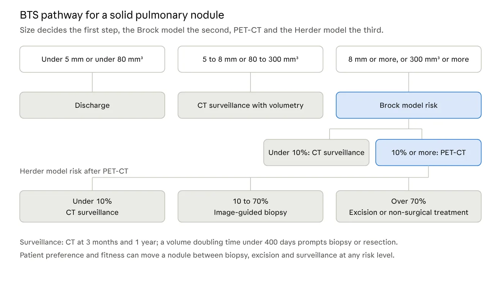
Solid nodules (BTS 2015, thresholds confirmed today)
| Baseline | Action | Then |
|---|---|---|
| <5 mm or <80 mm³ | Discharge | |
| 5 to <6 mm | CT at 1 year | Stable by volumetry: discharge. Stable by diameter only: CT at 2 years |
| ≥6 mm or ≥80 mm³ (below 8 mm or 300 mm³) | CT at 3 months | Doubling time ≤400 days: work up. Otherwise CT at 1 year as above |
| ≥8 mm or ≥300 mm³ | Brock model | <10%: CT surveillance. ≥10%: PET-CT and Herder |
| Herder <10% | CT surveillance | |
| Herder 10–70% | Image-guided biopsy; excision or surveillance by preference | |
| Herder >70% | Excision or non-surgical treatment, with or without prior biopsy |
| Volume doubling time | Meaning | Action |
|---|---|---|
| ≤400 days | Typical of solid cancers | Further work-up and definitive management |
| 400–600 days | Indeterminate | Biopsy or further surveillance by preference |
| >600 days | Very low risk | Discharge or surveillance by preference |
What the models contain and where they fail
Brock (PanCan): age, sex, family history, emphysema, nodule size, type, upper lobe location, nodule count, spiculation. It was derived in a screening cohort, so it is best calibrated for smokers aged 50 and over.
Herder: adds PET avidity (none, faint, moderate, intense) to age, smoking, previous cancer, diameter, spiculation and upper lobe location.
PET false negatives: nodules under 8–10 mm, sub-solid and lepidic adenocarcinoma, mucinous tumours, typical carcinoid. A low Herder in these does not reassure.
PET false positives: infection, granuloma, rheumatoid and other inflammatory nodules.
Multiple nodules: manage by the largest or most suspicious. Perifissural nodules under 10 mm with typical morphology need no follow-up.
Sub-solid nodules
Under 5 mm: discharge. 5 mm or more: repeat CT at 3 months, because many are inflammatory and resolve.
Persistent: risk-assess with Brock and morphology. Low risk: CT at 1, 2 and 4 years. Higher risk, a solid component of 6 mm or more, growth, or a new solid component: discuss biopsy or resection.
The solid component, not the whole lesion, sets the T category and predicts the invasive size.
Pure ground-glass lesions under 3 cm are mostly adenocarcinoma in situ or minimally invasive, with near-100% disease-specific survival after resection.
JCOG0804: wide wedge for ground-glass-dominant tumours 2 cm or less gave five-year relapse-free survival of about 99.7%. JCOG1211 extended this to segmentectomy up to 3 cm.
These lesions grow slowly (doubling times over 800 days), so a 2-year rule for stability does not apply.
Tissue or straight to theatre
CT-guided biopsy: sensitivity about 90%, pneumothorax 15–25%, drain needed in about 5%. A non-diagnostic or non-specific benign result does not exclude cancer.
Herder above 70% in a fit patient: proceed to resection with frozen section, then completion anatomical resection at the same sitting.
An acceptable benign resection rate is around 10% or less; much lower suggests under-treatment, much higher over-treatment.
Localisation is needed for nodules under 10 mm, sub-solid lesions, or anything more than about 10 mm deep to the pleura: hook wire, coil, dye or indocyanine green, radiotracer, or navigation bronchoscopy in a hybrid theatre.
For sublobar resection aim for a margin of at least 2 cm or at least the tumour diameter.
Reading the staging CT
Read for T, N and M, then for resectability and the anatomy of the operation; CT signs of invasion are weak, so know which ones to trust.

Read the size first, then look for the highest structure touched; whichever gives the higher category is the T.
Tumour and invasion
| Question | Reliable signs | Unreliable signs | Next test |
|---|---|---|---|
| Chest wall (T3) | Rib destruction; soft tissue mass in the wall | Pleural contact over 3 cm, obtuse angle, lost fat plane, pleural thickening | Localised pain is more predictive than CT; ultrasound or dynamic imaging for sliding; MRI for the apex |
| Mediastinum (T4) | Encasement of vessels, airway or oesophagus; gross fat infiltration | Contact alone | Likely resectable if contact is under 3 cm, the aorta is touched over less than 90° and a fat plane is preserved |
| Superior sulcus | MRI. Brachial plexus involvement above T1, vertebral body over half involved, or N2 or N3 disease argue against resection | ||
| Diaphragm, phrenic nerve | Raised hemidiaphragm | Fluoroscopy or ultrasound sniff test | |
| Recurrent laryngeal nerve | Aortopulmonary window mass with hoarseness | Laryngoscopy | |
| Airway | Main bronchus is T2 whatever the distance from the carina; carina is T4 | Bronchoscopy decides sleeve or pneumonectomy | |
| Collapse beyond the tumour | CT cannot separate tumour from atelectasis | PET or MRI | |
| Pleura | Nodular or circumferential thickening | A small effusion | Cytology; an effusion is M1a only if malignant |
Size: measure on lung windows in the longest axis. For part-solid tumours the solid component sets T.
Separate nodules: same lobe T3, different ipsilateral lobe T4, contralateral M1a. Consider synchronous primaries when morphology differs.
T4 that can still be resected in selected patients: carina, SVC, left atrium, vertebral body, aorta. Not resectable: oesophagus, heart beyond the atrium, long tracheal involvement.
Nodes
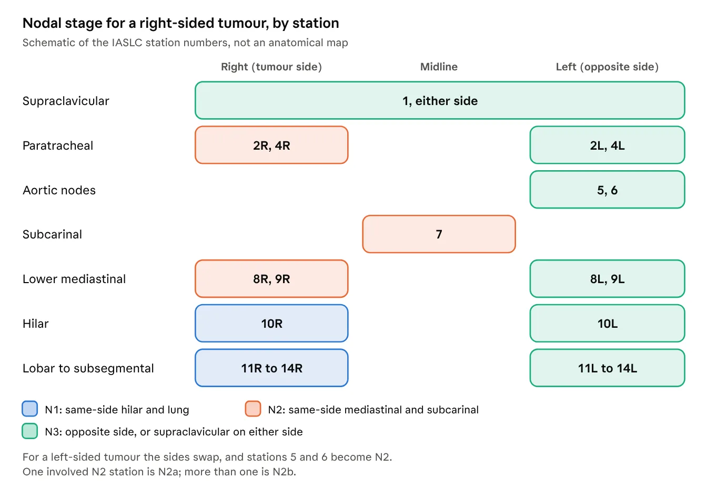
Name the station, then ask which side of the trachea it is on relative to the tumour.
| Modality | Sensitivity | Specificity | Comment |
|---|---|---|---|
| CT, short axis ≥10 mm | About 55% | About 80% | Size alone misleads in both directions |
| PET-CT | About 80% | About 88% | Negative predictive value about 95% for a peripheral cT1 N0 tumour |
| EBUS, with or without EUS | About 90% | Near 100% | A negative result with high suspicion needs surgical staging |
Go to invasive staging despite a negative PET when the tumour is central, over 3 cm, or N1 is suspected.
Station landmarks: 4R and 4L divide at the left lateral border of the trachea; 4R becomes 10R at the lower border of the azygos vein; 4L becomes 10L at the upper rim of the left pulmonary artery; station 5 lies lateral to the ligamentum, station 6 anterior and lateral to the arch.
Station 1 (supraclavicular and low cervical) is N3.
Report the number of N2 stations (N2a or N2b), whether nodes are discrete or infiltrative, and the largest short axis. Discrete single-station disease is the group that may still be resected.
Metastases
Adrenal: under 10 HU on unenhanced CT is an adenoma; otherwise use washout, PET, and biopsy before a solitary lesion denies surgery.
A single brain or adrenal metastasis with a resectable primary can still be treated radically.
TNM 9: T1 N1 is now IIA; T1 N2a is IIB; T2 N2b is IIIB.
Surgical anatomy to report
Fissures: incomplete in about half of patients; plan fissureless dissection.
Arteries: number of truncus anterior branches; posterior ascending artery and whether it shares an origin with the superior segmental artery; lingular artery of mediastinal origin; tumour or nodes at the main artery (intrapericardial control).
Veins: common left trunk; middle lobe vein draining to the lower vein; a right upper lobe vein running behind the bronchus intermedius.
Bronchi: tracheal bronchus, accessory cardiac bronchus.
Other: azygos lobe, aberrant right subclavian (non-recurrent laryngeal nerve), left SVC, calcified hilar nodes welded to the artery.
Lung quality: emphysema distribution; interstitial lung disease, which carries a risk of acute exacerbation after resection and after radiotherapy.
For segmentectomy, use three-dimensional reconstruction to plan intersegmental veins and the margin.
From the slide deck: nodule to diagnosis
These sections add what the deck "From lung nodule to resection" covers beyond the notes above. Figures are as given on the slides and were not checked independently.
Nodule types
| Type | CT appearance | Risk | Key point |
|---|---|---|---|
| Solid | No ground-glass | Moderate | Size and spiculation drive risk |
| Part-solid | Solid and ground-glass | Higher than solid of the same size | Solid component over 6 mm is high risk |
| Pure ground-glass | No solid part | Low short-term; adenocarcinoma spectrum | Watch for a new solid component: refer to MDT whatever the size |
| Perifissural | Smooth, triangular, on a fissure | Usually benign | Intrapulmonary node; no follow-up |
| Calcified | Popcorn or central | Benign | Hamartoma or granuloma; no follow-up |
| Cavitating | Wall over 4 mm, irregular inner wall | High | Squamous carcinoma |
Sub-solid nodules follow a separate pathway from solid ones (EACTS/ESTS 2022).
High-risk CT features
Spiculation is the strongest single predictor (odds ratio 5.54); upper lobe location is independent in every validated model.
Also: lobulated or irregular margin, pleural tethering, air bronchograms in the solid part, satellite nodules, nodes over 1 cm, effusion, invasion.
Growth: doubling time under 400 days, or volume increase of 25% or more.
Risk models
| Model | When | Variables | Thresholds |
|---|---|---|---|
| Brock (PanCan) | After CT, before PET | Age, sex, family history, emphysema, size, type, upper lobe, count, spiculation | Under 10% surveillance; over 10% PET-CT. AUC over 0.90 |
| Herder | After PET-CT | Age, smoking, extrathoracic cancer, size, upper lobe, spiculation, PET avidity | Under 10% surveillance; 10–70% biopsy; over 70% surgery. AUC 0.92 |
| Mayo | Solid nodules, no PET | Age, smoking, cancer history, diameter, spiculation, upper lobe | Under 5% low; 5–65% intermediate; over 65% resect |
PET avidity grades: none (same as background), faint (at or below mediastinal blood pool), moderate (above blood pool), intense (markedly above).
Mayo logit: −6.8238 + 0.0391 × age + 0.7917 × smoker + 1.3388 × cancer history + 0.1274 × diameter + 1.0407 × spiculation + 0.7838 × upper lobe.

The grade is a visual comparison with blood pool, not an SUV threshold.
NELSON volumetric rules
| Finding | Negative | Indeterminate | Positive |
|---|---|---|---|
| Volume | Under 50 mm³ | 50–500 mm³ | Over 500 mm³ (about 9.8 mm) |
| Doubling time | Over 600 days | 400–600 days | Under 400 days |
| Lung cancer risk at 5.5 years | 1.0% | 5.7% | 48.3% |
Doubling time = (ln 2 × days between scans) ÷ ln (volume 2 ÷ volume 1). BTS thresholds (5 mm, 80 mm³) follow the same logic.
Biopsy, or straight to surgery
| Sample tissue | Operate without biopsy |
|---|---|
| Brock over 10% after CT; Herder 10–70% after PET | Herder over 70%, operable, PET-negative mediastinum |
| Solid nodule over 8 mm with a high-risk feature | Classic appearance: spiculated, FDG-avid, growing |
| Part-solid with solid component over 6 mm | Central lesion where biopsy risk is unacceptable |
| Growth, or new solid component in ground-glass | Part-solid with enlarging solid component over 15 mm |
| Moderate or intense FDG avidity; mediastinal nodes | Inconclusive or technically inadequate EBUS in clinical stage I–II |
Solid 5–7 mm with low Brock: observe. Solid 8–15 mm: PET-CT adds most. Solid over 15 mm or growing fast: treat as cancer and plan treatment.
Pure ground-glass: no immediate biopsy (yield is poor); long surveillance.
Central and peripheral lesions
| Central | Peripheral | |
|---|---|---|
| Definition | Inner third, endobronchial, or within 2 cm of the carina | Outer two-thirds |
| Tissue | Bronchoscopy with EBUS-TBNA of nodes; navigation if needed | CT-guided biopsy (about 90% yield over 2 cm) or VATS wedge |
| Mediastinum | EBUS first even if PET-negative: centrality raises occult N2 | Direct surgery allowed if 3 cm or less, outer third, PET-negative, no enlarged nodes |
| CT before surgery | Within 4 weeks | Within 4–6 weeks if stable |
| Operation | Sleeve or pneumonectomy more likely; frozen section of bronchial margin mandatory | VATS lobectomy or segmentectomy; frozen section for sublobar margins |
Biopsy the node before the primary when nodal stage would change management.
Hilar N1 on PET, or any enlarged or avid mediastinal node, needs tissue before a surgical pathway.
The peripheral lesion's error is an unnecessary biopsy; the central lesion's error is an under-staged mediastinum.
Staging procedures
| Procedure | Use | Performance on the slides |
|---|---|---|
| EBUS-TBNA | First-line: tumour over 3 cm, central, clinical N1–N3, PET-positive nodes, restaging. Stations 2, 4, 7, 10, 11 | Accuracy 93.9%, specificity 99%, negative predictive value 94.6% |
| Mediastinoscopy | Selective: negative EBUS with a CT- or PET-positive mediastinum. Stations 5 and 6 need an anterior mediastinotomy | MEDIASTrial: confirmatory mediastinoscopy after negative EBUS found 1.03% more disease, with 10 days' delay, 6.3% morbidity and 0.6% mortality |
| Navigation or robotic bronchoscopy | Peripheral lesions under 2 cm without a bronchus sign; fiducials before SABR | Yield about 70–80% |
| Frozen section | Bronchial margin, sublobar margin (2 cm or tumour diameter), unexpected node, undiagnosed nodule, N1 node to set extent |
Immunohistochemistry
| Marker | Adenocarcinoma | Squamous | Small cell | Mesothelioma |
|---|---|---|---|---|
| TTF-1 | Positive (65–94%) | Negative | Positive (85–90%) | Negative |
| Napsin-A | Positive (87%) | Negative | Negative | Negative |
| p40, p63, CK5/6 | Negative | Positive | Negative | Negative |
| Synaptophysin, chromogranin, CD56 | Negative | Negative | Positive | Negative |
| Calretinin, WT-1 | Negative | Negative | Negative | Positive |
TTF-1 with Napsin-A is 99.1% specific for lung adenocarcinoma; TTF-1 alone can be positive in colorectal, gastric, pancreatic and endometrial tumours.
p40 is more specific than p63 for squamous carcinoma. Small cell: Ki-67 over 70%, crush artefact.
Send every resectable tumour for PD-L1 and a sequencing panel (EGFR, ALK, ROS1, KRAS G12C, MET, BRAF, NTRK, RET, HER2).
NICE NG122: diagnosis and staging
Contrast CT first, PET-CT for everyone who could have curative treatment, then tissue from the site that gives both diagnosis and stage; the 10 mm short-axis node is the pivot for endosonography. Read from the NICE chapter on 17 November 2026; the staging recommendations date from 2019.
Imaging
| Recommendation | Number |
|---|---|
| Contrast-enhanced CT of the chest, liver, adrenals and lower neck, before any biopsy | 1.2.2, 1.2.14 |
| CT alone may be unreliable for mediastinal and chest wall invasion: consider ultrasound, and surgical assessment if resection is possible | 1.2.3 |
| PET-CT before treatment for everyone who could have curative treatment | 1.2.4 |
| No routine MRI for T stage, except superior sulcus tumours when needed | 1.2.6, 1.2.7 |
| Sputum cytology only for central lesions in people who cannot have bronchoscopy or other invasive tests | 1.2.1 |
Tissue
| Situation | Test | Number |
|---|---|---|
| General rule | The test that gives the most diagnostic and staging information with the least risk; be wary of a test that gives pathology only when staging is also needed | 1.2.13 |
| Peripheral lesion, treatment depends on histology | Image-guided biopsy | 1.2.16 |
| Enlarged intrathoracic nodes (10 mm or more short axis) and nodal stage affects treatment | Biopsy the node in preference to the primary | 1.2.17 |
| Central lesion, nodal staging does not affect treatment | Flexible bronchoscopy | 1.2.18 |
| Paratracheal and peribronchial intraparenchymal lesions | EBUS-TBNA | 1.2.8 |
| Any sample | Adequate for diagnosis, subtyping and molecular markers | 1.2.11 |
Mediastinal staging
| Nodes on CT | Pathway | Number |
|---|---|---|
| Under 10 mm short axis | PET-CT as the first test after CT | 1.2.19 |
| 10 mm or more short axis | PET-CT if not done, then EBUS-TBNA, EUS-FNA or both | 1.2.20 |
| PET-positive or enlarged, and nodal status would change treatment | Systematic sampling by EBUS-TBNA, EUS-FNA or both | 1.2.21 |
| Negative endosonography but high clinical suspicion, and nodal status would change treatment | Consider surgical mediastinal staging | 1.2.22 |
Distant staging
| Clinical stage, curative treatment planned | Brain imaging | Number |
|---|---|---|
| Stage I, no neurological symptoms | None | 1.2.24 |
| Stage II | Contrast CT of the brain; contrast MRI if CT suggests metastases | 1.2.25 |
| Stage III | Contrast MRI of the brain | 1.2.26 |
| Any stage with features of intracranial disease | CT then MRI if normal, or MRI first | 1.2.27 |
Confirm an isolated distant metastasis or a synchronous tumour by biopsy or further imaging when curative treatment is an option (1.2.23).
Bone: X-ray first for localised symptoms, then scintigraphy or MRI; no bone scan when PET-CT shows no bone metastases (1.2.28, 1.2.29).
Every working diagnosis of lung cancer is discussed at an MDT, and treatment follows without undue delay (1.2.30, 1.2.32).
Where NICE and the surgical guidelines differ
NICE triggers endosonography on node size and PET avidity. The ESTS staging guideline also asks for invasive staging when the mediastinum is negative on CT and PET but the tumour is central, larger than 3 cm, or there is suspected N1 disease (from memory).
NICE has no brain imaging for stage I; many units image stage II and above with MRI directly.
The stage groups here predate the ninth edition of TNM; the logic by stage is unchanged.
Cyst or cavity
| Cyst | Cavity | |
|---|---|---|
| Definition (Fleischner) | Round, well-defined lucency with a thin wall | Gas-filled space within a nodule, mass or consolidation |
| Wall | Under 2 mm, smooth | Usually over 4 mm, often irregular |
| Surrounding lung | Normal | Abnormal |
| Mechanism | Developmental, check-valve, or tissue destruction | Necrosis draining into an airway |
Wall thickness and malignancy: 4 mm or less about 95% benign; 5–15 mm indeterminate; over 15 mm about 95% malignant. An irregular or nodular inner wall matters more than thickness.
Cavities: squamous carcinoma, metastases (squamous, sarcoma, colorectal), tuberculosis, abscess, fungal disease, septic emboli, granulomatosis with polyangiitis, rheumatoid nodules, infarct.
Cysts: bulla, pneumatocoele, bronchogenic cyst; multiple in lymphangioleiomyomatosis, Langerhans cell histiocytosis, Birt-Hogg-Dubé, lymphoid interstitial pneumonia, Pneumocystis.
Cancer in a cystic airspace: new wall thickening, a mural nodule or surrounding ground-glass in a cyst is suspicious. These are missed on screening and are often PET-negative.
A thick-walled cavity in a smoker is squamous carcinoma until proven otherwise; send samples for tuberculosis and fungi before resection.
Cystic lung tumours: wall changes and staging
A lung cancer can grow in or beside the wall of a thin-walled airspace. It is missed because it does not look like a nodule, PET is often negative, and its diameter says little about how much tumour there is. Watch the wall, not the size of the hole.
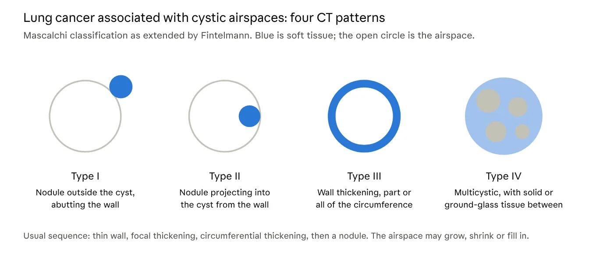
What it is
Lung cancer associated with cystic airspaces is tumour growing along or around a pre-existing or tumour-formed airspace: a bulla, a cyst, or a check-valve airspace made by the tumour narrowing a small airway. It is not a cavitating cancer, where a solid tumour has necrosed centrally.
Most are adenocarcinomas; squamous carcinoma is the minority. They account for a few per cent of screen-detected cancers and a disproportionate share of the cancers missed at screening. Typical patient: male, 60 to 70, smoker, peripheral lesion.
Classification
| System | Types |
|---|---|
| Mascalchi 2015, extended by Fintelmann 2017 | I nodule outside the cyst abutting the wall; II nodule inside the cyst arising from the wall; III wall thickening; IV multicystic with soft tissue or ground glass between the cysts |
| Shen 2019 | I thin wall under 2 mm; II thick wall, circumferential, 2 mm or more; III mural nodule, inside or outside; IV multicystic or mixed |
Mixed patterns are common and agreement between readers is modest.
How the wall changes over time
The usual sequence is a thin-walled airspace, then focal wall thickening, then thickening round more of the circumference, then a mural nodule. The wall also changes in density, from ground glass to part-solid to solid, in step with invasiveness.
The airspace itself is unreliable. It can enlarge, stay the same, shrink, or fill in as soft tissue replaces air. A cyst that is getting smaller while its wall thickens is progressing, not regressing; overall diameter can fall while the solid component rises.
Appearance of a solid mural nodule is the change most associated with invasive disease and worse outcome. Types II and III on the Shen system are more often poorly differentiated than types I and IV.
Mural regression: I found no description of spontaneous regression of a malignant mural nodule or wall. Wall thickening or a fluid level that resolves over weeks is infection or haemorrhage in a bulla. Shrinkage of proven multifocal cystic cancer has been reported on immune checkpoint inhibitors in one exploratory series. A wall change that has not resolved at 6 to 12 weeks should be treated as tumour.
Surveillance rules that exist
The BTS nodule guideline and the Fleischner recommendations do not cover cysts.
Lung-RADS 2022 does. From memory: a thin-walled unilocular cyst is not classified; a thick-walled or multilocular cyst is category 4A; a thick-walled cyst with growing wall thickness or nodularity, a growing multilocular cyst, or a multilocular cyst with new or increasing loculation or opacity is 4B. Measure wall thickness and any nodule; do not use the cyst diameter.
PET-CT has low sensitivity because there is little solid tissue. A negative scan does not exclude it.
Biopsy has a lower yield and a higher pneumothorax risk; tumour is focal within the wall. With a progressive wall on serial CT, resection without tissue is reasonable after MDT discussion.
Staging: what to measure
The ninth edition TNM gives no rule for cystic tumours. It does not say whether the T category uses the whole lesion including the air, or the solid component.
Whole-lesion diameter includes air and overstates tumour burden. In the illustrative cases of the 2026 review, CT diameters of 36 to 56 mm corresponded to pathological diameters of 20 to 42 mm, and one 55 mm lesion measured 25 mm.
Solid-component measurement follows the rule already used for part-solid nodules (clinical T from the solid part, pathological T from the invasive part) and is what most authors advocate. It fails in pure wall-thickening lesions that have no measurable nodule.
A workable convention for an MDT: record both the whole lesion and the largest solid component or maximum wall thickness; assign clinical T from the solid component where there is one; say that the pathological T will be set by invasive size; and stage the mediastinum as for a solid tumour of that solid size. In one reported case PET-CT staging was N0 and pathology showed N1.
Multiple cystic lesions: similar architecture and growth rate in several lesions suggests intrapulmonary metastasis rather than separate primaries; molecular profiling can separate them.
Surgery
There is no specific evidence. JCOG0802, JCOG0804, JCOG1211 and CALGB 140503 did not report cystic tumours as a subgroup, and the consolidation-to-tumour ratio that selects patients in the Japanese trials is undefined when the lesion contains air.
Practical reading: a thick-walled or nodular lesion (Shen II or III) should be treated as a solid tumour of its whole extent for the purpose of margin, which usually means lobectomy or a generous segmentectomy, because the wall is tumour all the way round. A thin-walled ground-glass lesion can be treated as a ground-glass tumour.
The whole cyst must be inside the specimen with a margin beyond its wall; a wedge that opens the cyst leaves tumour.
Status: the classification, the progression model, the absence of a TNM rule, the measurement discrepancies and the surgical questions are from a 2026 narrative review read on 17 November 2026 (Translational Lung Cancer Research 2026), which gives case examples and no cohort statistics; classification wording was checked against RadioGraphics 2018. The Lung-RADS categories, the epidemiology, the airspace behaviour and the surgical reading are from memory or are my own inference and are marked as such. The SSRN paper you sent (abstract 7138916) would not open, so nothing from it is included.
Bronchoscopic routes to a lesion
| Conventional with EBUS | Electromagnetic navigation | Robotic (Ion) | |
|---|---|---|---|
| Steering | By hand; linear EBUS for nodes, radial probe for peripheral lesions | Sensor-tipped catheter tracked in an electromagnetic field against a CT map | Shape-sensing robotic catheter driven along a CT-planned path |
| Reach | Central airways and nodes | Peripheral lesions | Furthest; small peripheral and apical lesions |
| Stability at biopsy | Hand-held | Hand-held | Robot holds position |
| Yield for a peripheral nodule | About a third unguided under 2 cm; about 70% with radial EBUS | About 65–75% (NAVIGATE 73%) | About 75–90% in early series |
| Pneumothorax | 1–2% | 3–4% | 2–4% |
Yield depends on a bronchus sign, lesion size and density, and on correcting CT-to-body divergence with cone-beam CT or tomosynthesis.
CT-guided biopsy still has the highest yield for peripheral lesions (about 90% over 2 cm) with pneumothorax in 15–25%.
For the surgeon: one anaesthetic for biopsy and staging, fiducials for SABR, and dye marking of an impalpable nodule. A negative biopsy with a high Herder score does not exclude cancer.
Multiple lung lesions
| Pattern | Imaging | Staging |
|---|---|---|
| Second primary, synchronous or metachronous | Two solid lesions, may differ in appearance | Separate TNM for each |
| Separate tumour nodule (intrapulmonary metastasis) | Dominant solid tumour with solid satellites of the same histology | Same lobe T3, other ipsilateral lobe T4, contralateral M1a |
| Multifocal ground-glass or lepidic adenocarcinoma | Several ground-glass or part-solid nodules | Highest T with the number or (m); one N and M |
| Pneumonic-type adenocarcinoma | Consolidation or patchy ground-glass | One lobe T3, other ipsilateral lobe T4, contralateral M1a |
Separate primaries are favoured by different histological type or pattern, an in situ component in each, different driver mutations, no nodal or distant disease, and different growth rates.
Stage the mediastinum invasively before treating two lesions as two primaries.
Synchronous primaries: treat each with curative intent, lung-sparing where possible. Multifocal ground-glass disease: resect the dominant lesion and observe the rest.
The usual error is calling a second primary metastatic and denying surgery.
Tuberculosis and sarcoidosis
Both produce PET-avid nodules and nodes that mimic lung cancer and its nodal spread, so neither a nodule nor an N2 station is called malignant on PET alone; tissue decides.
Telling them apart from cancer
| Feature | Tuberculosis | Sarcoidosis | Lung cancer |
|---|---|---|---|
| Nodes | Asymmetric, often unilateral right paratracheal and hilar; low-density centre with rim enhancement | Symmetric bilateral hilar and right paratracheal; may show eggshell or amorphous calcification | Follow the lobar drainage of the primary |
| Lung | Upper lobe and apical lower segment; cavity; tree-in-bud; tuberculoma with satellite nodules and calcification | Perilymphatic nodules along fissures and bronchovascular bundles, upper and mid zone; galaxy sign; fibrosis late | Solitary spiculated nodule or mass |
| PET | Avid when active; a tuberculoma can exceed SUV 10 | Avid, symmetric hilar and mediastinal uptake | Avid primary with nodes in the drainage path |
| Sample shows | Necrotising granulomas; acid-fast bacilli in a minority | Non-necrotising granulomas | Malignant cells |
Granulomas on a needle sample do not exclude cancer in the same patient: sarcoid-like reaction occurs in nodes draining a tumour and after immunotherapy.
A PET-avid node that would change the operation needs sampling whatever the suspected cause.
Sampling
Send every nodal and lung sample from a suspected granulomatous process for acid-fast smear, mycobacterial culture and PCR as well as cytology. A sample put only in formalin cannot be cultured.
GRANULOMA trial (JAMA 2013): in suspected stage I or II sarcoidosis, endosonographic node aspiration detected granulomas in 80% of patients, more than bronchoscopy with lung biopsy.
A later international trial found 70% granuloma detection with EBUS and 68% with oesophageal sampling through the same scope.
The BTS statement supports not biopsying when the clinical diagnosis is highly probable, such as Löfgren syndrome, with monitoring instead.
Surgical biopsy (mediastinoscopy or VATS) is for a non-diagnostic needle sample where lymphoma or cancer remains possible.
Tuberculosis: what the thoracic surgeon is asked to do
| Problem | Operation and points |
|---|---|
| Undiagnosed nodule that proves to be a tuberculoma | Wedge for diagnosis; frozen section shows necrotising granulomas; send fresh tissue for culture; treat medically afterwards |
| Multidrug-resistant disease, localised | WHO gives a conditional recommendation for elective lobectomy or wedge resection alongside a recommended regimen, only with experienced surgeons, good facilities and careful selection. The supporting analysis favoured partial resection over pneumonectomy (last point from memory) |
| Massive haemoptysis | Bronchial artery embolisation first; resection for failure or recurrence with localised disease |
| Aspergilloma in an old cavity | Resection for haemoptysis if fit; high risk in complex disease with pleural thickening |
| Destroyed lung | Pneumonectomy, often extrapleural; cover the stump with muscle |
| Tuberculous empyema, trapped lung | Drain, treat, then decortication if the lung will not expand; thoracoplasty or open window if the lung is destroyed |
| Bronchial stenosis | Dilatation or sleeve resection once disease is inactive |
| Constrictive pericarditis | Pericardiectomy |
Operate after sputum conversion where possible, usually after at least two to three months of effective treatment, and continue drugs afterwards.
Expect dense adhesions, obliterated fissures and calcified nodes fused to the pulmonary artery: get proximal arterial control first and consider intrapericardial dissection.
Stump: avoid devascularising it, check the margin is free of endobronchial disease, and buttress it.
Standard medical treatment of drug-sensitive disease is two months of four drugs and four months of two (NICE NG33). WHO recommended a six-month all-oral regimen (BPaLM) for multidrug-resistant disease in 2022, which has reduced the number referred for surgery.
Airborne precautions in theatre and notify the case.
Sarcoidosis: what the thoracic surgeon is asked to do
Scadding chest radiograph stages: I nodes only; II nodes and lung; III lung only; IV fibrosis.
Diagnosis when needles fail: mediastinoscopy for nodes, VATS biopsy for lung.
In a lung cancer patient with symmetric avid hilar and mediastinal nodes, sample by EBUS before deciding on stage; if benign on adequate sampling, treat the cancer on its true stage and sample nodes systematically at resection.
Treatment is medical. The BTS statement says many patients need no treatment; it is started for risk of death or disability from organ involvement, or for unacceptable loss of quality of life. Prednisolone is first line, with methotrexate as the usual second agent (drug choice from memory).
Before any operation in known sarcoidosis, screen for cardiac involvement (ECG, with MRI if abnormal or symptomatic), pulmonary hypertension and hypercalcaemia, and cover long-term steroids.
Late surgery: aspergilloma in fibrocavitary disease, and lung transplant for stage IV disease.
Sources and status
Confirmed today: BTS sarcoidosis statement; GRANULOMA trial; EBUS against oesophageal sampling trial; WHO recommendation on surgery and operational guidance; WHO 2022 drug-resistant TB update. From memory: the imaging table, operative points, NICE NG33 regimen, timing of surgery, and the sarcoid-like reaction and perioperative points.
Interactive course pack, 18 November 2026: items from the archive slides not previously in these notes
I compared the 74-page "ST4 Interactive Course Pack" PDF with these notes page by page. Its teaching sections were already covered. The points below come from its archive of the original lung-nodule slides, which the pack itself labels "archival original: use the corrected teaching tabs for current wording". They are recorded as taught and were not checked by me against a source today. The programme and faculty pages were left out on purpose, because the app is public.
CT features that raise the probability of cancer (archive slide)
| Feature | Detail given |
|---|---|
| Spiculation | Described as the most powerful independent predictor (odds ratio 5.54) |
| Upper lobe location | Independent risk factor in the validated models |
| Size | Solid nodule over 8 mm warrants PET-CT and further investigation |
| Part-solid | Solid component over 6 mm: high probability |
| Growth | Volume doubling time under 400 days is the NELSON positivity threshold; under 100 days counts as rapid |
| Other | Lobulated or irregular margin, pleural tethering, air bronchogram in a solid component, new solid component in a ground-glass nodule, satellite nodules in the same lobe, nodes over 1 cm short axis, ipsilateral effusion, chest wall or mediastinal invasion |
Timing of the CT before surgery (archive slide): within 4 weeks for a spiculated solid nodule over 20 mm, a new solid component, rapid growth, a central or endobronchial lesion, lymphadenopathy, post-obstructive change or effusion; 4 to 6 weeks is acceptable for a stable peripheral lesion. The reason given is that anatomy can change quickly and alter the operation in central lesions.
Pathology and immunohistochemistry (archive slide)
| Tumour | Morphology | Markers |
|---|---|---|
| Adenocarcinoma | Acinar, papillary, micropapillary, lepidic or solid patterns; mucin; prominent nucleoli | TTF-1 positive (65 to 94%), napsin-A positive (87% sensitive, 98% specific), CK7 positive, CK20 negative |
| Squamous cell | Keratinisation, intercellular bridges | p40 and p63 positive (p40 the more specific), CK5/6 positive, TTF-1 negative |
| Small cell | Small cells, scant cytoplasm, "salt and pepper" chromatin, crush artefact | TTF-1 positive (about 85 to 90%), synaptophysin, chromogranin, CD56, Ki-67 over 70% |
| Mesothelioma | Calretinin and WT-1 positive |
TTF-1 with napsin-A together is given as 99.1% specific for adenocarcinoma. PD-L1 tumour proportion score decides immunotherapy eligibility.
Postoperative surveillance (archive slide)
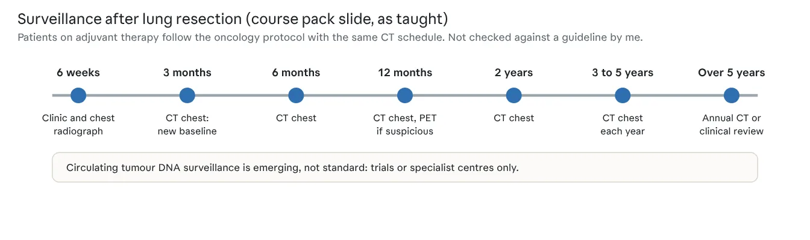
| Time | Investigation | Purpose |
|---|---|---|
| 6 weeks | Clinical review and chest radiograph | Wound, early complications, effusion |
| 3 months | CT chest, non-contrast | New baseline |
| 6 months | CT chest | Early recurrence |
| 12 months | CT chest, PET if suspicious | First year has the highest recurrence risk |
| 2 years | CT chest | Ongoing |
| 3 to 5 years | CT chest each year | Late recurrence |
| Over 5 years | Annual CT or clinical review | Second primary |
Circulating tumour DNA: detection of minimal residual disease preceded radiological recurrence by a median of 4.7 months (cited on the slide as ADAURA, Nature Medicine 2025). It needs a tumour-informed assay, has low sensitivity in early-stage disease, and is for trials or specialist centres only.
Novel investigations (archive slide)
| Technique | Point made |
|---|---|
| Liquid biopsy, circulating tumour DNA | Residual disease detection and surveillance after resection; low sensitivity in early stage |
| Quantitative or dual-energy CT | Emphysema quantification, perfusion mapping without scintigraphy, predicted postoperative FEV1 from lobar volumes |
| SPECT/CT perfusion | Better than segment counting in heterogeneous emphysema; can move a borderline patient from unfit to fit |
| Next-generation sequencing | EGFR, ALK, ROS1, KRAS G12C, MET, BRAF, NTRK, RET, HER2; PD-L1; guides perioperative treatment |
| Robotic bronchoscopy | Two commercial platforms named; yield about 70 to 80% for peripheral lesions; fiducial placement before SABR |
| EBUS elastography | Helps separate malignant from benign nodes; adjunct to needle sampling |
| Functional MRI | Non-contrast perfusion as an alternative to scintigraphy |
| AI-assisted CT | Automated nodule detection, volumetry, less interobserver variation |
| Methylation-based blood test | Multi-cancer early detection; not yet standard |
| Breath analysis of volatile organic compounds | Validation ongoing |
Speaker notes from the original lung-nodule slides
Added 18 November 2026. Extracted from the PowerPoint embedded in the interactive course pack ("From lung nodule to resection", 23 slides). Eleven slides carry notes; three of those (slides 14, 15 and one repeat on slide 4) only repeat another slide's note. Recorded as taught and not checked by me today. The slide content itself is already in these notes.
Why a systematic pathway matters (slides 2 and 4)
The question is no longer "fit or not fit". It is "what is the risk profile, and does the patient accept it?" (attributed to ERS/ESTS 2025).
Screening trials and why surgeons now see more nodules (slide 3)
| Trial | Design | Result | Consequence |
|---|---|---|---|
| NLST | US randomised trial, low-dose CT against chest radiograph | 20% relative reduction in lung cancer mortality | Validated CT screening; more small peripheral stage I lesions found |
| NELSON | Dutch-Belgian randomised trial using volumetry and volume doubling time | Mortality reduction with fewer false positives than earlier protocols | Made volumetry and growth central to work-up; supports more conservative surveillance of small nodules |
| MILD | Annual or biennial low-dose CT with long follow-up | Sustained mortality benefit with prolonged screening | Supports continued surveillance and recognition of indolent subsolid lesions |
Key shift: detection has moved from symptomatic central tumours to asymptomatic subcentimetre peripheral nodules.
Operational consequence: more MDT time goes on risk models, growth kinetics, and deciding whether not to biopsy is the best biopsy.
Guideline translation: BTS adopted the 5 mm or 80 mm³ threshold and volumetry, following NELSON.
Nodule classification (slide 5)
Cited: Fleischner 2017, BTS 2015, EACTS 2022.
Pure ground-glass and part-solid nodules are managed on a separate pathway from solid nodules.
A part-solid nodule carries a higher malignancy risk than a solid nodule of the same size; the solid component is the oncological driver.
A new solid component in a previously pure ground-glass nodule means immediate MDT referral, whatever the size.
BTS and NELSON logic for investigation (slide 8)
Risk-defining features:
Volume or mean diameter.
Volume doubling time, especially 400 to 600 days against under 400 days.
Subsolid morphology and an enlarging solid component.
Spiculation, upper lobe location, emphysema, family history, age, smoking burden.
Brock score for baseline risk; Herder model after PET-CT.
Practice consequences:
Most solid nodules under 5 mm or 80 mm³ do not merit prolonged follow-up.
Volumetry outperforms axial diameter for borderline lesions.
Subsolid nodules need longer observation than solid ones.
A high-risk nodule can go to treatment without preoperative histology if the MDT is confident and biopsy risk is high.
Takeaway on the slide: treat growth kinetics and morphology as biological markers. The judgement is not only the probability of cancer, but whether the lesion behaves like an operable cancer best served by surveillance, biopsy, resection or SABR.
Which nodules need tissue, and which need time (slide 9)
| Nodule | Investigate now | Observe first | Why |
|---|---|---|---|
| Solid 5 to 7 mm, low Brock score | Usually no | Short-interval CT or discharge, by volume | Low immediate yield; most are benign |
| Solid 8 to 15 mm | PET-CT often useful | Possible if intermediate risk and no growth | The size at which PET and risk models become informative |
| Solid over 15 mm, or rapid growth | Yes | Rarely | High pre-test probability; treatment planning takes priority |
| Part-solid with solid component 6 mm or more | Yes | No prolonged delay | Higher risk of invasive adenocarcinoma |
| Pure ground-glass | Usually no immediate biopsy | Long surveillance | Indolent biology; poor biopsy yield; surgery should be anatomy-conscious |
Central against peripheral lesions (slide 10)
| Peripheral primary | Central primary | |
|---|---|---|
| Diagnostic route (NICE) | Image-guided biopsy when it can guide treatment planning | Flexible bronchoscopy if nodal staging does not alter treatment |
| Nodes | If intrathoracic nodes are enlarged, biopsy the node before the primary when nodal stage changes management | Centrality raises the risk of occult N2 disease, so nodal staging usually does matter: EBUS or EUS sampling, often before any biopsy of the primary |
| Technique notes | CT-guided biopsy has a higher yield than radial EBUS with guide sheath for lesions under 2 cm, with more pneumothorax | Sputum cytology only when bronchoscopy is declined or not tolerated |
| Straight to surgery | Reasonable for a highly suspicious lesion when biopsy risk is unacceptable and resection is curative in intent | Not without staging |
Point made in the notes: peripheral lesions challenge diagnosis; central lesions challenge staging. The error to avoid in a peripheral lesion is an unnecessary invasive biopsy; in a central lesion it is an understaged mediastinum followed by surgery in the wrong sequence.
Can the mediastinum be left unsampled before surgery?
| Situation | Direct surgery | Reason given |
|---|---|---|
| Peripheral outer-third tumour 3 cm or less, PET-negative mediastinum, no enlarged nodes | Often yes | ESTS algorithm allows it in this low pre-test N2 setting |
| Central tumour, even with CT and PET negative mediastinum | Usually no | Centrality independently raises the probability of occult mediastinal disease |
| PET-positive hilar N1 disease | No | Higher risk of skip or associated N2 disease |
| CT-enlarged or PET-avid mediastinal nodes | No | Tissue confirmation is mandatory before a curative surgical pathway |
Immunohistochemistry caveat (slide 12)
TTF-1 is sensitive (94%) but not fully specific: positive in colorectal (5.2%), gastric (5.9%), pancreatic (7.3%) and endometrial carcinomas.
Use TTF-1 with napsin-A together to confirm pulmonary adenocarcinoma (99.1% specificity).
Large cell neuroendocrine carcinoma: large cells, neuroendocrine morphology, neuroendocrine markers and a high Ki-67.
Thoracic 2: fitness and surgery
Contents (10 sections)
- From the slide deck: fitness, operation and after
- KCO
- Flow-volume loops
- Points for the MDT and viva
- JCOG trials
- JCOG0802 and CALGB 140503 side by side
- Surgery after chemo-immunotherapy: the real-world series
- Carinal resection: cross-field ventilation and reconstruction
- Pulmonary vein variants before lung resection
- Interactive course pack, 18 November 2026: exercise testing bands from the archive slide
Fitness for resection and lung function, how much lung to remove, surgery after induction treatment, and carinal resection.
From the slide deck: fitness, operation and after
The deck's principle (ERS/ESTS 2025): the question is no longer fit or unfit, but what the risk profile is and whether the patient accepts it.
Investigations and their shelf life
| Investigation | Timing before surgery |
|---|---|
| Contrast CT chest | Within 4 weeks for central or endobronchial tumours, rapid growth, nodes, effusion or post-obstructive change; within 6 weeks for a stable peripheral lesion |
| PET-CT | Within 8 weeks |
| MRI brain | Within 4 weeks, stage II–III |
| Spirometry and transfer factor (both mandatory) | Within 3 months |
| ECG | Within 3 months |
| Bloods | Within 4 weeks |
| Bronchoscopy for central lesions | Within 2 weeks |
| Echo, coronary CT or stress test, right heart catheter | When cardiac disease or pulmonary hypertension is suspected |
Predicted postoperative function (ERS/ESTS 2025 tiers, per the slides)
| Predicted postoperative transfer factor | Risk | Action |
|---|---|---|
| Over 60% | Normal | Surgery, no further testing |
| 40–59% | Moderate | Stair climb or shuttle walk; MDT review |
| Under 40% | High | Cardiopulmonary exercise test and V/Q SPECT; explicit consent; consider sublobar resection or SABR |
| Under 30% | Very high | Not an absolute contraindication; exercise test, MDT, explicit consent, consider SABR or ablation |
Calculate both predicted FEV1 and transfer factor and stratify on the lower. Transfer factor discriminates better in COPD.
Segment method: preoperative value × (1 − functional segments resected ÷ unobstructed segments). Right pneumonectomy removes 10, left 9.
In heterogeneous emphysema, segment counting overestimates the loss; V/Q SPECT correction can move a patient from unfit to fit.
Exercise testing
| Test | Increased risk below |
|---|---|
| Stair climb | 12 m vertical (3–4 storeys) |
| Incremental shuttle walk | 400 m |
| Six-minute walk | 400 m |
| VO₂ max (mL/kg/min) | Risk | Implication | VE/VCO₂ slope |
|---|---|---|---|
| Over 20 | Low | Any resection including pneumonectomy | Not needed |
| 15–20 | Low to intermediate | Lobectomy generally appropriate | Over 35: caution |
| 10–15 | Intermediate | Sublobar preferred; lobectomy with caution | Over 35: intermediate-high |
| Under 10 | High | SABR or ablation; surgery only with MDT consensus and consent | Over 41–42: high (three-tier model, 2024) |
A satisfactory low-tech test allows surgery without a formal exercise test; an inadequate one requires it.
The high-risk patient
| Scenario | Strategy |
|---|---|
| VO₂ max under 10 | SABR for peripheral stage I |
| Predicted FEV1 and transfer factor both under 30% | SABR or thermal ablation |
| Severe COPD with the cancer in a destroyed lobe | Resection combined with lung volume reduction |
| Pulmonary fibrosis | Sublobar resection with the ILD team; acute exacerbation risk 10–30% after resection |
| Cardiac comorbidity | Optimise, then re-stratify |
| Frailty | Prehabilitation for 2–6 weeks, then reassess |
Operations
| Procedure | Indication | Note |
|---|---|---|
| VATS or robotic lobectomy | Stage I–II | Standard |
| Anatomical segmentectomy | 2 cm or less, peripheral, solid component over half | JCOG0802; wedge is not equivalent |
| Wedge | High-risk patient, diagnostic resection, ground-glass-dominant lesion | Higher local recurrence for solid tumours |
| Sleeve lobectomy | Central tumour at a lobar orifice | Preferred to pneumonectomy |
| Pneumonectomy | Central tumour not suitable for a sleeve | Mortality 5–8%; last resort |
| Open thoracotomy | Complex or chest wall resection, conversion |
| JCOG0802 | CALGB 140503 | |
|---|---|---|
| Patients | 1,106, Japan | 697, North America and Australia |
| Comparison | Segmentectomy against lobectomy | Sublobar (wedge or segment) against lobectomy |
| Primary endpoint | Overall survival | Disease-free survival, non-inferiority |
| Survival | Five-year 94.3% against 91.1%; ten-year 83.6% against 79.8% | Non-inferior |
| Local recurrence | 11.2% against 5.8% | Similar |
Lobectomy remains standard above 2 cm. The ten-year JCOG0802 survival difference (83.6% against 79.8%) was no longer statistically significant, and NICE still recommends lobectomy, so segmentectomy is an option to discuss, not a settled new standard.
Adjuvant therapy by stage
| Stage | Molecular status | Adjuvant treatment |
|---|---|---|
| IA | Any | None |
| IB | EGFR exon 19 deletion or L858R | Osimertinib for 3 years |
| IB | ALK rearranged | Alectinib for 2 years |
| IB | Neither | Consider chemotherapy only for high-risk features (over 4 cm, pleural or vascular invasion, poor differentiation) |
| II–IIIA | EGFR mutant | Cisplatin doublet × 4, then osimertinib for 3 years |
| II–IIIA | ALK rearranged | Cisplatin doublet × 4, then alectinib for 2 years (the slides; ALINA itself gave alectinib in place of chemotherapy) |
| II–IIIA | Neither, PD-L1 1% or more | Cisplatin doublet × 4, then atezolizumab or pembrolizumab |
| II–IIIA | Neither, PD-L1 under 1% | Cisplatin doublet × 4 |
No neoadjuvant treatment for stage I under 4 cm and node-negative, for EGFR or ALK tumours, or when the patient cannot have chemotherapy.
Surveillance after resection
| Time | Investigation |
|---|---|
| 6 weeks | Clinic and chest radiograph |
| 3 months | Baseline non-contrast CT |
| 6 and 12 months | CT; PET if suspicious |
| Years 2 to 5 | Annual CT |
| After 5 years | Annual CT or clinic, for second primaries |
Circulating tumour DNA detected recurrence a median of 4.7 months before imaging in ADAURA, but needs a tumour-informed assay, has low sensitivity in early disease, and is not yet standard.
Emerging tools on the slides
Robotic bronchoscopy for peripheral biopsy and fiducials.
AI nodule detection and volumetry; quantitative and dual-energy CT for perfusion and predicted postoperative function.
Non-contrast perfusion MRI as an alternative to V/Q.
EBUS elastography; blood methylation tests and breath analysis for early detection (not yet standard).
KCO
TLCO = KCO × VA. TLCO is total gas-transfer capacity; KCO is uptake per litre of ventilated lung; VA is the alveolar volume.
Low TLCO with low KCO: emphysema, pulmonary vascular disease, anaemia. Low TLCO with low VA and low or normal KCO: interstitial lung disease.
Low TLCO with high KCO and low VA: extrapulmonary restriction or previous resection, where the remaining lung is normal.
A normal KCO with a low VA is not reassuring; it should be high for that volume.
Use TLCO, corrected for haemoglobin, for predicted postoperative calculations and the 60% and 40% tiers. Repeat after induction treatment.
Flow-volume loops
A flow-volume loop plots flow against lung volume through one forced expiration and one forced inspiration; its shape separates small airway obstruction, restriction and the three kinds of central airway obstruction, which spirometry numbers alone do not.

A flattened inspiratory limb puts the lesion outside the chest, a flattened expiratory limb puts it inside, and both flattened means it does not move with breathing.
Reading the loop
Expiration is drawn above the axis, starting at total lung capacity on the left and ending at residual volume on the right. Inspiration is the lower limb, running back.
The first quarter of expiration is effort-dependent and gives peak flow. The rest is effort-independent, limited by dynamic airway compression, so it reflects the small airways.
The whole inspiratory limb is effort-dependent.
Check quality before interpreting: a sharp early peak, no cough or hesitation, three reproducible loops. A rounded, low peak with a normal descending limb is poor effort.
Patterns
| Pattern | Shape | Ratio of mid-expiratory to mid-inspiratory flow | Causes |
|---|---|---|---|
| Normal | Early peak, near-linear descent, semicircular inspiration | About 1 or just under | |
| Obstructive | Reduced peak; concave, scooped descending limb | COPD, asthma. Emphysema: abrupt early fall then a long low tail from airway collapse | |
| Restrictive | Tall and narrow; volumes reduced, shape preserved, flows normal or high for the volume | Fibrosis, chest wall disease, pleural thickening, after resection. Neuromuscular weakness also lowers the peak and blunts both limbs | |
| Variable extrathoracic obstruction | Inspiratory plateau; expiration normal | Over 1, often over 2 | Vocal cord palsy or dysfunction, goitre, cervical tracheomalacia, laryngeal tumour |
| Variable intrathoracic obstruction | Expiratory plateau; inspiration normal | Well under 1 | Tumour or malacia of the lower trachea or carina |
| Fixed obstruction | Both limbs flattened into a box | About 1 | Post-intubation or post-tracheostomy stenosis, circumferential tumour, large goitre, bilateral cord fixation |
| One main bronchus obstructed | Biphasic expiratory limb: fast early emptying of the good lung, then a slow tail | Bronchial tumour, anastomotic stricture after sleeve resection or transplant | |
| Sawtooth | Regular oscillation on either limb | Upper airway instability: sleep apnoea, neuromuscular or extrapyramidal disease |
Why the limb differs
Outside the chest, the airway is surrounded by atmospheric pressure. On inspiration the pressure inside falls below atmospheric, so a floppy segment narrows; on forced expiration it is splinted open.
Inside the chest, the airway is surrounded by pleural pressure. On forced expiration pleural pressure exceeds the pressure inside the airway, so a floppy segment narrows; on inspiration negative pleural pressure pulls it open.
A rigid lesion does neither, and limits flow equally in both directions.

The same floppy segment gives opposite loops depending on which side of the thoracic inlet it lies.
Numbers that suggest central airway obstruction
FEV1 in mL divided by peak flow in L/min over 10 (Empey index).
Peak flow reduced out of proportion to FEV1.
Mid-expiratory to mid-inspiratory flow ratio as in the table.
The loop is insensitive: the trachea is usually narrowed to about 8 mm or less, around half its diameter or more, before a plateau appears. A normal loop does not exclude a stenosis; CT and bronchoscopy do.
Where it matters in thoracic surgery
Breathlessness or stridor after intubation or tracheostomy: a fixed pattern points to stenosis before CT or bronchoscopy, and the loop is a simple way to follow dilatation, stenting or resection.
Goitre and anterior mediastinal masses: an inspiratory or fixed plateau supports significant tracheal compression. Erect and supine loops were once used to predict airway collapse under anaesthesia; CT cross-sectional area and symptoms have largely replaced them.
Asthma or COPD that does not respond to treatment, with a preserved gas transfer: look at the loop for a tracheal tumour or stenosis.
After sleeve resection or lung transplant: a biphasic or newly flattened limb suggests an anastomotic stricture.
Before lung resection: the scooped loop of emphysema goes with the FEV1 and gas transfer findings covered under fitness; the loop adds the check that a low FEV1 is not partly central airway obstruction from the tumour itself.
This section is from memory and was not searched.
Points for the MDT and viva
Resectable or not in N2 disease
Likely resectable: single-station, discrete, non-bulky N2 (nodes under about 3 cm) with a tumour removable by lobectomy.
Usually not: multi-station bulky or infiltrative N2, N3, or disease needing pneumonectomy after induction. These go to chemoradiotherapy with durvalumab.
Intergroup 0139: adding surgery to chemoradiotherapy improved progression-free but not overall survival; pneumonectomy after chemoradiotherapy carried 26% mortality, and the lobectomy subset did better in an unplanned analysis.
EORTC 08941 and ESPATUE: surgery and definitive radiotherapy gave similar survival after induction in stage III.
TNM 9 separates N2a from N2b for this reason; record which at the MDT.
After chemo-immunotherapy, operate on the original plan. Nodal clearance on imaging does not make a pneumonectomy safer.
Sublobar resection
JCOG0802: segmentectomy for tumours 2 cm or less with a solid component over half. Better overall survival (94.3% against 91.1%) but twice the local recurrence (10.5% against 5.4%) and more air leak.
CALGB 140503: wedge or segment for tumours 2 cm or less after frozen-section confirmation of negative hilar and mediastinal nodes. Non-inferior disease-free survival.
Both required peripheral tumours and confirmed node-negative disease, so intraoperative nodal assessment is part of the operation.
Convert to lobectomy for positive nodes, an inadequate margin, or high-risk histology (spread through air spaces, micropapillary or solid pattern).
Unresolved questions
Does adjuvant immunotherapy help a patient who has had a complete response?
Neoadjuvant-only against perioperative treatment.
The size of benefit when PD-L1 is under 1%.
Whether circulating tumour DNA can direct escalation and de-escalation.
SABR against surgery in the operable patient.
Surgery after chemo-immunotherapy for disease first judged unresectable.
JCOG trials
The Japan Clinical Oncology Group trials define how much lung to remove for a small peripheral tumour according to its size and how solid it is on thin-section CT; they are the evidence behind matching wedge, segmentectomy or lobectomy to the consolidation-to-tumour ratio.
The measure they all use
Consolidation-to-tumour ratio (CTR): the maximum diameter of the solid part divided by the maximum diameter of the whole tumour, on thin-section CT in lung windows.
CTR 0 is pure ground glass; 1.0 is pure solid; 0.5 separates ground-glass-dominant from solid-dominant.
The lung resection series
| Trial | Tumour | Design | Result | Checked |
|---|---|---|---|---|
| JCOG0201 | Clinical stage IA adenocarcinoma | Prospective radiology and pathology correlation | Defined radiologically non-invasive cancer: 2 cm or less with CTR 0.25 or less. This definition seeded the later trials | From memory |
| JCOG0804 / WJOG4507L, JTCVS 2022 | 2 cm or less, CTR 0.25 or less | Single arm, 333 enrolled at 51 institutions; sublobar resection, wedge preferred. 314 analysed: 258 wide wedge, 56 segmentectomy; median margin 15 mm | Five-year relapse-free survival 99.7%, with no local relapse (the last point from memory) | Confirmed |
| JCOG0802 / WJOG4607L, Lancet 2022 | 2 cm or less, CTR over 0.5, peripheral | Randomised, 1,106 patients; segmentectomy against lobectomy | Five-year survival 94.3% against 91.1% (HR 0.663); local relapse about 10.5% against 5.4%; no clinically important difference in lung function. At ten years the survival difference was 3.8% and no longer significant (p=0.268) | Confirmed |
| JCOG1211, Lancet Respiratory Medicine 2023 | 3 cm or less, ground-glass-dominant (CTR 0.5 or less) | Single arm, 42 institutions; 396 registered, 357 had segmentectomy with hilar and interlobar node dissection | Five-year relapse-free survival 98.0% | Confirmed |
| JCOG1413 | Clinical stage I–II | Randomised; lobe-specific against systematic mediastinal node dissection; primary endpoint overall survival | Recruiting or in follow-up; no result found | Status confirmed |
| JCOG1909 (ANSWER) | High-risk patients with small tumours | Randomised; anatomical segmentectomy against wedge | Ongoing | From memory |
| JCOG1708 (SURPRISE) | Idiopathic pulmonary fibrosis with stage I cancer | Randomised; sublobar resection against lobectomy | Ongoing | From memory |
How they fit together
| Tumour on CT | Operation supported |
|---|---|
| 2 cm or less, CTR 0.25 or less | Wide wedge with a margin of at least the tumour diameter, or surveillance (JCOG0804) |
| 3 cm or less, CTR 0.5 or less | Segmentectomy (JCOG1211) |
| 2 cm or less, CTR over 0.5 | Segmentectomy or lobectomy (JCOG0802) |
| Over 2 cm and solid-dominant | Lobectomy |
Reading them critically
Two of the three practice-changing results are single-arm trials measured against a preset threshold; only JCOG0802 is randomised.
JCOG0802 was designed for non-inferiority. The survival advantage at five years came from fewer deaths from other causes and second cancers after segmentectomy, not from better cancer control, and it faded by ten years.
Local relapse was about twice as common after segmentectomy. A Lancet Respiratory Medicine commentary in 2026 concludes that JCOG0802 and CALGB 140503 now agree: no difference in survival or lung function loss, and an absolute 5% more local recurrence with sublobar resection.
Margin and nodes carry the result: JCOG0802 required intraoperative confirmation of node-negative disease and an adequate margin, with conversion to lobectomy otherwise.
Populations were Japanese, mostly adenocarcinoma, with many never-smokers and thin-section CT selection; pure-solid tumours in smokers behave worse.
JCOG0802 used segmentectomy only; CALGB 140503 allowed wedge resection in over half of its sublobar arm.
Other JCOG trials a thoracic surgeon is asked about
| Trial | Question | Result |
|---|---|---|
| JCOG0403 | SABR for T1 N0 disease, operable and inoperable cohorts | Three-year survival about 77% in operable and 60% in inoperable patients (from memory) |
| JCOG9502 | Left thoracoabdominal against transhiatal approach for junctional cancer | No benefit from the thoracic approach, more morbidity (from memory) |
| JCOG1205/1206 | Adjuvant irinotecan and cisplatin against etoposide and cisplatin for resected high-grade neuroendocrine carcinoma | No difference (from memory) |
Status: JCOG0804, JCOG1211, JCOG0802 and the JCOG1413 design were confirmed on 17 November 2026 (JCOG0804, JCOG1211, ten-year commentary, JCOG1413).
JCOG0802 and CALGB 140503 side by side
The two randomised trials that ended lobectomy as the only standard for peripheral tumours of 2 cm or less. They agree that sublobar resection is not worse for survival; they differ in operation, population and endpoint, and both show more local recurrence.

| JCOG0802 / WJOG4607L | CALGB 140503 (Alliance) | |
|---|---|---|
| Publication | Saji, Lancet 2022;399:1607 | Altorki, NEJM 2023;388:489 |
| Patients | 1,106 at 70 Japanese centres, 2009 to 2014 | 697 (340 sublobar, 357 lobar) in the US, Canada and Australia, 2007 to 2017 |
| Eligibility | Peripheral, 2 cm or less, consolidation-to-tumour ratio over 0.5, clinical stage IA | Peripheral, 2 cm or less, node negative confirmed at operation by frozen section of hilar and mediastinal nodes before randomisation |
| Operation | Anatomical segmentectomy against lobectomy; wedge not allowed | Sublobar (wedge in 59%, segmentectomy in 41%) against lobectomy |
| Primary endpoint | Overall survival, non-inferiority margin 1.54 | Disease-free survival, non-inferiority margin 1.306 |
| Primary result | Five-year survival 94.3% against 91.1%, HR 0.663 (0.474 to 0.927): non-inferior and superior | Five-year disease-free survival 63.6% against 64.1%, HR 1.01 (90% CI 0.83 to 1.24): non-inferior |
| Other survival | Five-year relapse-free survival 88.0% against 87.9% | Five-year overall survival 80.3% against 78.9%, HR 0.95 (0.72 to 1.26); lung cancer deaths 13.5% against about 15% |
| Local or locoregional recurrence | 10.5% against 5.4% | 13.4% against 10.0% |
| Lung function | FEV1 fall at one year 8.5% against 12.0%: a 3.5 point difference, short of the 10 points the trial set as meaningful | FEV1 difference about 2 percentage points at six months |
| Operative mortality | None at 30 or 90 days in either arm | 90-day mortality 1.2% against 1.1% |
| Histology | Over 90% adenocarcinoma; about 45% had a ground-glass component | More solid tumours, more smokers, median age 68 |
How to read them
JCOG0802's survival advantage is not a cancer advantage. Relapse-free survival was identical and local relapse doubled; the difference came from more deaths from other causes, including second cancers, after lobectomy. The usual explanation is that keeping more lung lets patients tolerate treatment for a second primary or for other disease. It is a hypothesis.
Segmentectomy patients who relapsed locally could be salvaged, often by completion lobectomy, which is part of why survival held.
CALGB's intraoperative nodal check matters. About 6% of registered patients were excluded for positive nodes or other findings before randomisation, so the result applies only to patients in whom hilar and mediastinal nodes have been sampled and are negative.
CALGB allowed wedge because that is what Western surgeons do; it was not powered to compare wedge with segmentectomy. Post-hoc analysis showed no clear difference. JCOG0802 says nothing about wedge.
Five-year survival was 91 to 94% in Japan and about 80% in North America for the same tumour size. The populations differ (ground-glass component, smoking, comorbidity), so do not pool the absolute figures.
Neither trial showed the lung function benefit that was the reason for doing less.
Margin is the technical point both depend on: at least 2 cm or at least the tumour diameter, with a margin-to-tumour ratio of 1 or more.
What changed in practice
For a peripheral, node-negative tumour of 2 cm or less, anatomical segmentectomy or an adequate wedge with nodal sampling is now a standard alternative to lobectomy; ESTS, NCCN and the 2023 EACTS/ESTS part-solid guidance reflect this.
Lobectomy remains the operation when the tumour is over 2 cm, central, pure solid with adverse features (spread through air spaces, high SUV, micropapillary or solid pattern on frozen section), when an adequate margin cannot be had, or when nodes are positive at operation.
For predominantly ground-glass tumours the relevant trials are JCOG0804 (wedge) and JCOG1211 (segmentectomy up to 3 cm), in the JCOG section above.
In the viva: state size, solid component, location, nodal status at operation and achievable margin, then name the operation.
The four sublobar trials in one table
Data from the summary table in the JCOG Lung Cancer Surgical Study Group review (Japanese Journal of Clinical Oncology 2024;54:1237; table). The table page could not be opened directly; the rows below are as returned by search, and the cells the search cut short (sex split, and numbers per operation for two trials) are filled from the trial reports or marked.
| JCOG0802 | CALGB 140503 | JCOG1211 | JCOG0804 | |
|---|---|---|---|---|
| Design | Randomised, segmentectomy against lobectomy | Randomised, sublobar against lobectomy | Single arm, segmentectomy | Single arm, sublobar (wedge first) |
| Patients | 1,106 | 697 | 357 | 333 |
| Eligibility | 2 cm or less, CTR over 0.5 | 2 cm or less | 3 cm or less, CTR 0.5 or less | 2 cm or less, CTR 0.25 or less |
| Median age | 67 | 67.9 | 67 | 62 |
| Median tumour size | 1.6 cm | Not reported | 1.9 cm | 1.2 cm |
| Operations | Lobectomy 554, segmentectomy 552 | Lobectomy 357, sublobar 340 | Segmentectomy | Wedge 264, segmentectomy 58, lobectomy 11 |
| 30-day mortality | 0 | 0.86% | 0 | 0 |
| 90-day mortality | 0 | 1.4% | 0 | Not reported |
| Median fall in FEV1 | Lobectomy 13.1% at 6 months, 12.0% at 12; segmentectomy 10.4% at 6 months, 8.5% at 12 | Lobectomy 6%, sublobar 4%, at 6 months | 7.9% at 6 months | 3.6% at 12 months |
| Follow-up | 7.3 years median | 7 years median | 47.2 months | 5.5 years |
| Local recurrence | Lobectomy 5.4%, segmentectomy 10.5% | Lobectomy 10.0%, sublobar 13.4% | 4% | 0 |
| Five-year overall survival | Lobectomy 91.1%, segmentectomy 94.3% | Lobectomy 78.9%, sublobar 80.3% | 98% | 99.4% |
CTR is the consolidation-to-tumour ratio on thin-section CT.
What the table shows at a glance:
Survival tracks the ground-glass component, not the operation: 99% and 98% in the two ground-glass-dominant single-arm trials, 91 to 94% in solid-dominant Japanese tumours, about 80% in the North American trial.
Local recurrence is the price of doing less in solid-dominant tumours (about double in JCOG0802, a third higher in CALGB) and is close to nil when the tumour is ground-glass dominant.
The lung function saved is small everywhere: 2 to 3.5 percentage points of FEV1 between arms in the randomised trials.
Operative mortality was zero in all three Japanese trials and about 1% in CALGB.
The selection rule that follows: CTR 0.25 or less and 2 cm or less, wedge; CTR 0.5 or less and up to 3 cm, segmentectomy; CTR over 0.5 and 2 cm or less, segmentectomy or lobectomy; anything larger or central, lobectomy.
Do they generalise? The JTCVS commentary
Tohmasi and Puri, Journal of Thoracic and Cardiovascular Surgery 2024;167:365, a commentary on a National Cancer Database analysis by Potter and colleagues.
Potter compared segmentectomy with lobectomy in clinical stage IA patients without comorbidity, 2004 to 2017, by propensity matching, and found no survival difference overall or by grade or histological subtype. The survival advantage of JCOG0802 was not reproduced in a US population.
The commentary's reasons: 47% of JCOG0802 tumours were well differentiated, US patients have more aggressive disease, and the database does not record recurrence, so the doubled local relapse cannot be tested.
Its position is that the two operations give similar survival in selected patients, that the small spirometry gain is unlikely to matter clinically, that adequate nodal assessment is required whatever the extent of resection, and that segmentectomy has a learning curve that training programmes should reflect.
For a viva this is the balanced line: equivalence, not superiority, outside Japan.
Status: JCOG0802 figures (1,106 patients, five-year survival, local relapse, FEV1) and the CALGB 140503 disease-free survival figures were confirmed on 17 November 2026 (Lancet abstract, trial comparison table, NEJM report). The CALGB patient numbers, margin and overall survival were then confirmed from the NEJM abstract and reports; the NEJM page itself would not open. Its locoregional recurrence, wedge proportion, 90-day mortality, FEV1 figure and the 6% intraoperative exclusion are from memory. I first wrote the CALGB margin as 1.24, which is the upper confidence limit; the margin was 1.306.
Surgery after chemo-immunotherapy: the real-world series
In routine English practice, more patients reached surgery than in CheckMate 816 and the response rate was at least as good, but operations were later, conversions commoner and 90-day mortality higher.
| England (Brunelli, Shackcloth and colleagues, Clinical Lung Cancer 2025) | Europe (EJCTS 2025) | CheckMate 816 | |
|---|---|---|---|
| Setting | 3 tertiary UK centres, March 2023 to May 2024, stage II–IIIB | 6 tertiary centres, March 2023 to December 2024, stage II–IIIB | Trial, stage IB–IIIA |
| Started neoadjuvant treatment | 130 | 340 | 179 |
| Reached surgery | 93.1% | 93.2% | 83% |
| Surgery more than 6 weeks after the last cycle | 62% | 47% | Protocol required within 6 weeks |
| Started minimally invasive | 75.2% | 66% | 30% |
| Conversion to open | 18.7% | 18% | 11% |
| Lobectomy | 85% | 86% | 77% |
| 30-day mortality | 3.3% | ||
| 90-day mortality | 5.8% | 2.5% | |
| Pathological complete response | 31.4%, no difference by stage | 30% (major response 52.7%) | 24% |
The CheckMate 816 column is from memory of the trial's surgical report; the two real-world columns were confirmed from the abstracts on 17 November 2026.
Surgical points to take from it
Timing slips in practice: most English patients were operated on beyond the 6-week window. Book the theatre date and restaging scan when neoadjuvant treatment starts.
Nearly one in five minimally invasive cases converted. Expect hilar and nodal fibrosis, have proximal arterial control planned, and count conversion as judgement, not failure.
A 90-day mortality of 5.8% is well above elective lobectomy benchmarks and above the European series. It belongs in the consent discussion and argues for careful selection in stage III and after immune toxicity.
A UK multicentre abstract reported more surgical complications than the trial (72% against 41% of any grade).
The higher surgery rate than in the trial reflects selection at the MDT: these were patients already judged resectable and fit.
Complete response in about three in ten, regardless of stage, supports offering the pathway to stage II as well as stage III.
These are retrospective series from specialist centres with short follow-up; they describe feasibility and early safety, not survival.
Carinal resection: cross-field ventilation and reconstruction
Once the airway is divided the surgeon ventilates the distal bronchus directly across the field, and the reconstruction is chosen by how much trachea has gone: the left main bronchus is tethered by the aortic arch, so it will not travel far.
Cross-field ventilation, step by step
Induction with a long single-lumen tube, which allows bronchoscopy and can be pushed into the left main bronchus. A double-lumen tube is too stiff and gets in the way at the carina.
Before dividing the airway, have a sterile armoured tube, connector and circuit on the table, passed off to the anaesthetist.
Place traction sutures in the distal bronchus, then divide it. The oral tube is pulled back into the proximal trachea; some tie a suture to its tip so it can be drawn back down later.
Intubate the left main bronchus across the field with the sterile tube and ventilate that lung. Clamp the right pulmonary artery if shunt through the unventilated right lung causes hypoxia.
Complete the resection and send margins for frozen section.
Place the anastomotic sutures around the cross-field tube, lifting it out for short periods of apnoea when it obstructs the far wall.
With the back wall tied, remove the cross-field tube, advance the oral tube across the anastomosis under vision, and tie the remaining sutures.
Test under saline, wrap, and aim to extubate in theatre.
Alternatives when the tube is in the way
| Method | Use | Drawback |
|---|---|---|
| High-frequency jet ventilation through a catheter | A thin catheter leaves the field clear and makes suture placement more accurate | Blood and debris are blown distally; carbon dioxide retention; barotrauma if outflow is obstructed |
| Intermittent apnoea | Short suture runs | Limited time |
| Veno-venous ECMO | Removes all tubes from the field; for complex reconstructions, a single lung, or poor reserve | Cannulation and flow management; anticoagulation, though it can be kept low |
| Cardiopulmonary bypass | Rare: tumour involving the heart or great vessels | Full heparinisation and lung injury |
Choosing the reconstruction


A neocarina suits only a short resection; beyond that one bronchus is joined end to end to the trachea and the other is implanted into the side of the airway.
Published figures of these reconstructions (open the link for the drawings and operative photographs):
Weder and Inci, Carinal resection and sleeve pneumonectomy, J Thorac Dis 2016: open access, with reconstruction diagrams.
Tapias and Lanuti, Carinal resections, Ann Cardiothorac Surg 2018: open access, with an operative video of a left carinal pneumonectomy.
CTSNet, Technical options in carinal resection and reconstruction: scheme of the three main reconstructions and photographs of cross-field and jet ventilation.
Mitchell and colleagues, Clinical experience with carinal resection, JTCVS 1999: the Massachusetts General series of 143 resections in 135 patients, with the original reconstruction drawings.
| Situation | Reconstruction | Why |
|---|---|---|
| Tumour confined to the carina, under about 1 cm of trachea | Neocarina: medial walls of the two main bronchi sutured together, then to the trachea | Simple, but the joined bronchi are held down by the arch and cannot rise, so it does not tolerate a longer gap |
| Up to about 4 cm between trachea and left main bronchus | Trachea to left main end to end; right main end to side into the lateral tracheal wall at least 1 cm above the first anastomosis | The right hilum mobilises more easily than the left |
| Longer tracheal resection | Trachea to right main end to end; left main end to side into the bronchus intermedius (Barclay) | The right lung is brought up after hilar release; the tethered left main stays where it is |
| Tumour extending into a main bronchus or the lung | Carinal (tracheal sleeve) pneumonectomy, usually right: trachea to left main end to end | Carinal lobectomy with reimplantation of the remaining lobe is the lung-sparing alternative |
Approach and release
Right posterolateral thoracotomy through the fourth or fifth space for most resections, including right carinal pneumonectomy.
Median sternotomy, opening the posterior pericardium between the superior vena cava and the aorta, for a resection confined to the carina or when both hila need release.
Left carinal pneumonectomy is the hardest because the arch covers the carina: sternotomy or clamshell, or a staged operation.
Release, in order: pretracheal plane dissected bluntly, preserving the lateral blood supply; neck flexion; division of the inferior pulmonary ligament; hilar release by a U-shaped pericardial incision below the inferior vein, completed around the hilum on the right. Laryngeal release adds little at the carina.
Do not dissect circumferentially more than 1–2 cm beyond the cut ends: the blood supply is segmental and enters laterally.
Anastomosis
Interrupted 4-0 absorbable sutures, knots outside, placed from the far side forward and tied at the end with the neck flexed.
No tension, and no size mismatch left uncorrected: telescope or plicate the membranous wall.
Cover with pedicled pericardial fat, pleura or an intercostal muscle flap, and keep the suture line away from the pulmonary artery. Omentum after radiotherapy.
Chin-to-chest guardian stitch for about a week; bronchoscopy before discharge.
Selection and results
N2 or N3 disease is generally a contraindication to carinal resection for lung cancer. Mediastinoscopy is done at the same sitting as the resection, so scarring does not fix the trachea beforehand.
High-dose radiotherapy and steroids both threaten healing.
Operative mortality for carinal pneumonectomy in experienced centres is about 7–15%, with post-pneumonectomy pulmonary oedema and anastomotic failure the main causes. Restrict fluid and avoid high airway pressures.
A single-centre series of 36 isolated carinal resections without lung resection (Shanghai, 2006–2020) used a right thoracotomy in 92% and cross-field intubation in 86%; complications occurred in 39%, mostly anastomotic stenosis (22%) and fistula (8%).
Status: the Shanghai figures, and the use of jet ventilation and veno-venous ECMO as alternatives, were confirmed on 17 November 2026 (series, CTSNet technique article, ECMO review). The steps, length thresholds, release manoeuvres and mortality range are from memory.
Pulmonary vein variants before lung resection
Variant pulmonary venous anatomy is the rule, not the exception, and the variant that matters most in VATS lobectomy, a common left trunk, is present in about a third of patients. Read the veins on the staging CT before every anatomical resection.
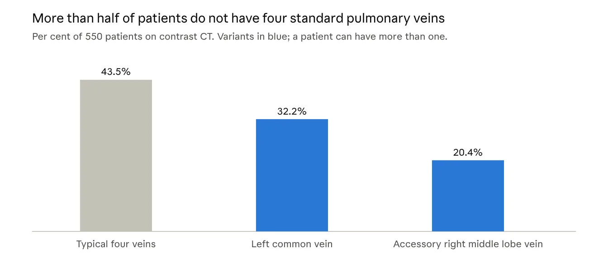
How common
Altinkaynak and Koktener, Wiener klinische Wochenschrift 2019: retrospective review of 550 contrast-enhanced chest CT scans on a 128-row scanner with three-dimensional reconstruction.
| Pattern | Patients |
|---|---|
| Typical: two veins each side | 239 (43.5%) |
| Any variant, on either or both sides | 311 (56.5%) |
| Left common vein | 177 (32.2%) |
| Accessory right middle lobe vein or veins | 112 (20.4%) |
| Variant on the right; on the left | 34%; 33.3% |
The pictorial review in the Congenital 2 tab gives different proportions (four veins in 60 to 70%, an accessory right middle lobe vein in up to 26%); the difference is definition and method, and the surgical message is the same.
What each variant does to the operation
| Variant | Risk | What to do |
|---|---|---|
| Left common trunk | Stapling the trunk during an upper or lower lobectomy takes the whole venous drainage of the left lung; the remaining lobe infarcts | Dissect to the bifurcation and see the vein of the lobe that stays before firing; divide the lobar branch, not the trunk |
| Right middle lobe vein draining to the inferior vein, or separately to the atrium | Divided unknowingly in a lower lobectomy, or left behind in a middle lobectomy | Trace the middle lobe vein on CT; it joins the superior vein in most, but not all |
| Right top or posterior segment vein running behind the bronchus intermedius to the inferior vein or atrium | Bleeding during subcarinal dissection or when opening the posterior fissure | Look for a vessel behind the bronchus intermedius on the axial CT |
| Lingular vein draining to the inferior vein | Divided in a lower lobectomy, with lingular congestion | Identify before dividing the inferior vein |
| Partial anomalous drainage of a lobe that will remain | After resection of the normally draining lung, all remaining venous return goes to the right heart: right heart failure | Count four veins entering the left atrium; if one is anomalous, resect that lobe, reimplant the vein, or reconsider |
| Early branching or a short intrapericardial trunk | Stapler does not fit; atrial tear | Open the pericardium and control inside it |
Checklist on the staging CT
Count the veins entering the left atrium on each side.
On the left, is there a common trunk, and how long is it before it divides?
Where does the middle lobe vein go?
Is there a vessel behind the bronchus intermedius?
Does any vein drain to the SVC, brachiocephalic vein, azygos or IVC?
Status: the frequencies are from the paper's abstract, read on 17 November 2026; the full text, its classification and its 13 figures were not available to me. The operative consequences and the checklist are from memory and general thoracic practice, not from the paper, which only states that preoperative CT may make VATS safer.
Interactive course pack, 18 November 2026: exercise testing bands from the archive slide
From the archive of the original slides in the "ST4 Interactive Course Pack" PDF, which the pack labels as archival; recorded as taught and not checked by me today. These bands differ from the ERS/ESTS figures noted earlier in this tab, and that difference is still unresolved.
| Test | Threshold for increased risk | Note |
|---|---|---|
| Stair climb | Under 12 m vertical (3 to 4 storeys) | Correlates with peak oxygen consumption; no equipment |
| Incremental shuttle walk | Under 400 m | Standardised |
| 6-minute walk | Under 400 m | Distance-desaturation product adds discrimination |
| Peak oxygen consumption (mL/kg/min) | Risk | Implication | VE/VCO2 slope |
|---|---|---|---|
| Over 20 | Low | Major resection including pneumonectomy | Not needed |
| 15 to 20 | Low to intermediate | Lobectomy generally appropriate | Under 35 proceed; over 35 caution |
| 10 to 15 | Intermediate | Sublobar preferred; lobectomy with caution | Under 35 intermediate-low; over 35 intermediate-high |
| Under 10 | High | SABR or ablation; surgery only with explicit MDT agreement and consent | Over 41 or 42 high (three-tier model, cited as Kristenson 2024; the slide gives both numbers) |
A satisfactory low-technology test (over 12 m of stairs or over 400 m shuttle) allows surgery without formal exercise testing (as taught).
Thoracic 3: SABR and chemoradiotherapy
Contents (9 sections)
Stereotactic radiotherapy, its dosing and its trials against surgery, and definitive chemoradiotherapy for unresectable stage III disease.
SABR
SABR treats node-negative tumours up to 5 cm; the tumour's distance from the central airways and chest wall sets the fractionation, and no trial has settled SABR against surgery in operable patients.
Eligibility
Stage I to IIA (T1a to T2b, N0, M0), tumour 5 cm or less, in patients who are medically inoperable or decline surgery.
No lower limit of lung function. The patient must lie flat and still, and tumour motion should be manageable on 4D-CT.
Tissue diagnosis preferred. Without it, most MDTs want a growing, PET-avid lesion with a high Herder probability.
Interstitial lung disease is the main relative contraindication: severe or fatal pneumonitis is far commoner.
Dose by location (UK SABR Consortium schedules)
| Position | Schedule | Biologically effective dose (α/β 10) |
|---|---|---|
| Peripheral, standard | 54 Gy in 3 fractions | 151 Gy |
| Close to the chest wall, conservative | 55 Gy in 5 fractions | 116 Gy |
| Central, within 2 cm of the proximal bronchial tree | 60 Gy in 8 fractions | 105 Gy |
| Small peripheral tumour (≤2 cm, over 1 cm from chest wall, outside the no-fly zone) | 30–34 Gy in a single fraction, in experienced centres | |
| Ultracentral, abutting trachea, main bronchus or oesophagus | Usually not SABR; hypofractionated or conventional radiotherapy |
The dose target is a biologically effective dose of 100 Gy or more, the level associated with local control around 90%.
The no-fly zone comes from the Indiana phase II trial: severe toxicity at 2 years was 46% for central and 17% for peripheral tumours with three-fraction treatment.
Ultracentral treatment has caused fatal haemorrhage (HILUS trial), which is why it is avoided.
Outcomes and toxicity
Local control about 90% at 3 years (RTOG 0236: primary tumour control 98%, overall survival 56% in medically inoperable patients).
Failures are regional and distant: there is no pathological nodal staging, and occult N1 or N2 disease is present in roughly 10–15% of clinical stage I.
Toxicity: fatigue, pneumonitis (grade 2 or more about 10%), rib fracture and chest wall pain for peripheral tumours, airway stenosis and haemorrhage for central ones, brachial plexopathy at the apex.
Follow-up is hard to read: fibrosis evolves for 1–2 years. Enlargement after 12 months, a bulging margin or loss of air bronchograms suggests recurrence; PET helps after 6 months. Salvage surgery is feasible.
SABR against surgery
| Study | Finding | Limitation |
|---|---|---|
| STARS and ROSEL, pooled (2015) | Three-year survival 95% with SABR and 79% with surgery | 58 patients; both trials closed for poor accrual |
| Revised STARS (2021) | SABR arm matched against VATS lobectomy with nodal dissection: three-year survival 91% in both | Single-arm with a matched comparator |
| SABRTooth (UK) | Randomisation between surgery and SABR was not feasible | Feasibility study |
| Registry comparisons | Favour surgery | Confounded by fitness |
| VALOR, STABLE-MATES | Ongoing |
For oligometastases, SABR-COMET (phase II) reported five-year survival of 42% with SABR and 18% with standard care.
Position for the MDT: surgery remains the standard for fit patients because it stages the nodes and has mature long-term data; SABR is the standard for the unfit and a choice for the borderline patient.
Gray and fractions
Gray is absorbed dose: one joule per kilogram. A fraction is one treatment session.
Biologically effective dose for tumour = total dose × (1 + dose per fraction ÷ 10).
| Schedule | Dose per fraction | Biologically effective dose |
|---|---|---|
| 60 Gy in 30 (conventional) | 2 Gy | 72 Gy |
| 55 Gy in 20 | 2.75 Gy | 70 Gy |
| 60 Gy in 8 (central SABR) | 7.5 Gy | 105 Gy |
| 55 Gy in 5 | 11 Gy | 116 Gy |
| 54 Gy in 3 (peripheral SABR) | 18 Gy | 151 Gy |
SABR gives a lower total dose than conventional radiotherapy but about twice the biological effect; it is safe only because dose falls off steeply outside the target.
Planning uses 4D-CT, a margin of about 5 mm on the motion envelope, and alternate-day fractions with image guidance.
Dose-limiting structures: chest wall and ribs, proximal airways, oesophagus, heart and great vessels, brachial plexus, spinal cord, and lung volume receiving 20 Gy.
Single fraction or several
| Trial | Arms | Result |
|---|---|---|
| RTOG 0915 | 34 Gy in 1 against 48 Gy in 4; 94 patients, peripheral T1–T2 N0 | One-year tumour control 97.0% against 92.7%; five-year primary failure 10.6% against 6.8%; grade 3 or worse toxicity 2.6% against 11.1%; five-year survival 29.6% against 41.1% |
| Roswell Park and Cleveland Clinic | 30 Gy in 1 against 60 Gy in 3; 98 patients | Equivalent survival and toxicity |
| SAFRON II | 28 Gy in 1 against 48 Gy in 4; lung oligometastases | Similar toxicity and control (from memory) |
All were phase II with toxicity endpoints; none proves equivalent tumour control or survival.
No trial compares 3, 5 and 8 fractions. Each comes from single-arm studies for its tumour position: RTOG 0236 and 0618 (54 Gy in 3, peripheral), RTOG 0813 (5 fractions, central), LungTech (60 Gy in 8, central), HILUS (ultracentral; fatal bleeding about 15%).
Fraction number is a safety choice by location, not an efficacy choice.
MISSILE-NSCLC: SABR then surgery
Palma, Louie and colleagues, JAMA Oncology 2019: single-arm phase II, one centre, operable stage I disease, neoadjuvant SABR then resection at 10 weeks.
Forty enrolled, 35 evaluable: pathological complete response 60% (95% CI 44–76%), lower than hypothesised. No perioperative deaths.
Long-term report: complete and major response 60% and 63%; related grade 3 or worse events 16.7%.
Reading: imaging overstates sterilisation after SABR, so follow SABR patients closely; surgery after SABR is safe, which supports salvage resection.
Limits: small, single centre, one time point, standard staining may misjudge viability.
SABR or surgery: the summary
| Surgery | SABR | |
|---|---|---|
| Local control | Highest | About 90% on imaging; 40% residual tumour at 10 weeks in MISSILE |
| Nodes | Pathological staging; upstages 10–15% of clinical stage I | Not staged |
| Burden | Admission, 1–2% mortality for lobectomy | Outpatient, minimal early mortality |
| Late effects | Loss of lung function | Pneumonitis, rib fracture, airway toxicity if central |
| Adjuvant therapy | Guided by pathology and molecular testing | Limited by tissue |
Fit patient: surgery. Unfit or declines: SABR. Borderline: sublobar resection or SABR by tumour position, lung function, need for tissue and preference.
STARS and ROSEL pooled analysis
Chang and colleagues, Lancet Oncology 2015;16:630–7. Confirmed on 17 November 2026.
Two open-label phase III trials of SABR against lobectomy with nodal dissection or sampling in operable clinical T1–2a (under 4 cm) N0 M0 disease. Both closed early for slow accrual and were pooled.
58 patients: 31 SABR, 27 surgery. Median follow-up 40.2 and 35.4 months.
| Outcome | SABR | Surgery |
|---|---|---|
| Three-year overall survival | 95% (85–100) | 79% (64–97); HR 0.14 (0.017–1.190), log-rank p = 0.037 |
| Three-year recurrence-free survival | 86% | 80%; HR 0.69 (0.21–2.29), p = 0.54 |
| Deaths | 1 | 6 |
| Grade 3–4 treatment-related events | 10%, none grade 4 | 44% |
| Treatment-related death | 0 | 1 (4%) |
| Recurrence | 1 local, 4 regional nodal, 1 distant | 1 regional nodal, 2 distant |
Why it cannot settle the question: 58 patients against a planned total of well over 1,000; seven deaths in all; a hazard-ratio confidence interval that crosses 1 despite the log-rank p value.
The trials differed in protocol, and ROSEL allowed entry without pathological confirmation.
Surgery was mostly open, with 4% operative mortality and 44% major morbidity, worse than modern VATS series.
Nodal recurrence was four times as common after SABR, the expected cost of not staging the nodes.
Recurrence-free survival did not differ, so the survival gap reflects non-cancer and treatment-related deaths in a very small surgical arm.
It justified further trials, not a change in standard. The revised STARS study later matched SABR against VATS lobectomy and found similar three-year survival.
Revised STARS
Chang and colleagues, Lancet Oncology 2021;22:1448–57. Confirmed on 17 November 2026.
Single-arm prospective trial at MD Anderson: 80 operable patients with histologically confirmed NSCLC of 3 cm or less, N0 M0, re-accrued September 2015 to January 2017. None came from the earlier pooled analysis.
SABR: 54 Gy in 3 fractions for peripheral tumours; 50 Gy in 4 with a boost to 60 Gy for central tumours. Ultracentral tumours excluded. Mean tumour size 1.8 cm.
Protocol-specified comparison: propensity-matched 1:1 with 80 of 352 contemporary patients who had VATS lobectomy with mediastinal node dissection. Median follow-up 5.1 years.
| Outcome | SABR | VATS lobectomy with node dissection |
|---|---|---|
| Three-year overall survival | 91% (85–98) | 91% (85–98) |
| Five-year overall survival | 87% (79–95) | 84% (76–93); HR 0.86 (0.45–1.65), p = 0.65 |
| Five-year progression-free survival | 77% | 80%; HR 1.38 (0.70–2.73), p = 0.35 |
| Local recurrence at 5 years | 6.3% | 1.3% (p = 0.10) |
| Regional nodal recurrence at 5 years | 12.5% | 2.7% (p = 0.02) |
| Distant recurrence at 5 years | 8.8% | 4.0% (p = 0.19) |
| Any recurrence at 5 years | 17.6% | 8.0% (p = 0.051) |
| Serious toxicity | One grade 3 dyspnoea; no grade 4–5 | No 90-day mortality; occult nodal disease found in 10% |

Non-inferiority for three-year survival was met (margin 12 percentage points).
The cost of SABR shows in recurrence: twice as many overall and nearly five times the nodal rate, matching the 10% occult nodal disease found at surgery.
Limits stated by the authors: not randomised; unmeasured confounding; different imaging follow-up; EBUS staging in over 90% of SABR patients against about 60% of surgical patients; one expert centre; not applicable above 3 cm or to ultracentral tumours.
It supports SABR as an option for a small, carefully staged tumour in a patient who prefers it, not as an equivalent standard.
Population studies: SABR against surgery
| Study | Data | Finding |
|---|---|---|
| Paul and colleagues, BMJ 2016 | US SEER-Medicare, age 66 and over, 2007–2012, mean age 76; propensity matched | Tumours 2 cm or less: SABR against thoracoscopic sublobar resection, no significant difference in cancer-specific survival (three-year 82.6% against 86.4%; 201 matched pairs). Tumours 5 cm or less: thoracoscopic resection better, SABR mortality HR 2.10 (1.52–2.89; 643 matched pairs) |
| SORT, Kagenaar and colleagues, Journal of Clinical Oncology 2026 | England: National Cancer Registry linked to hospital and radiotherapy data, T1–2 N0 M0 diagnosed 2015–2020; 2,299 SABR and 10,247 surgery; emulated target trial in patients eligible for either | Adjusted three-year all-cause mortality 30.3% after SABR against 21.6% after surgery; the gap narrowed in those aged 80 and over. Authors conclude surgery should remain the preferred option |
The BMJ paper is often quoted as "surgery better"; that holds for the larger-tumour analysis, while the primary small-tumour comparison with sublobar resection was not significantly different.
SORT is the first target-trial emulation of this question and uses English data, so it is the most relevant to UK practice. It reduces confounding by indication but cannot remove it: fitness and frailty are only partly captured in registry data.
Taken with revised STARS: survival after SABR can match surgery in selected, well-staged patients at an expert centre, but at population level surgery is associated with better survival, and nodal recurrence is consistently higher after SABR.
Definitive chemoradiotherapy for unresectable stage III NSCLC
For stage III disease that cannot be resected in a patient fit for combined treatment, the standard is radical thoracic radiotherapy with concurrent platinum-doublet chemotherapy, followed by a year of consolidation immunotherapy or, with an EGFR mutation, osimertinib.
As taught in the session
Who: unresectable stage III NSCLC, fit enough for concurrent treatment, not a surgical candidate.
What: thoracic radiotherapy with platinum-based chemotherapy given at the same time.
Why concurrent: the chemotherapy acts as a radiosensitiser.
Dose: 60–66 Gy in 30–33 fractions.
Chemotherapy: a platinum doublet, concurrent.
Duration: about 6 weeks.
Detail behind those points
| Point | Detail | Checked |
|---|---|---|
| Dose | 2 Gy per fraction, five days a week; 60 Gy takes 6 weeks and 66 Gy takes 6.5 | Arithmetic |
| Why not more | RTOG 0617 compared 74 Gy with 60 Gy with concurrent chemotherapy: the higher dose gave worse survival, so 60 Gy stayed the standard | From memory |
| Concurrent against sequential | Meta-analysis of individual patient data (Aupérin, 2010): concurrent treatment improved survival by about 4.5% at five years, at the cost of more severe oesophagitis (about 18% against 4%) | From memory |
| Doublets | Cisplatin with etoposide or vinorelbine; carboplatin with paclitaxel weekly; cisplatin with pemetrexed for non-squamous disease | From memory |
| If not fit for concurrent treatment | Sequential chemotherapy then radiotherapy, or radiotherapy alone; UK practice often uses 55 Gy in 20 fractions in that setting | From memory |
| Fitness | Performance status 0–1, adequate lung function, and a radiotherapy plan that meets lung, heart and oesophagus dose limits | From memory |
After chemoradiotherapy
| Trial | Design | Result |
|---|---|---|
| PACIFIC | 713 patients without progression after concurrent chemoradiotherapy, any PD-L1 status; durvalumab every 2 weeks for up to 12 months against placebo, randomised 2:1 | Five-year overall survival 42.9% against 33.4% (HR 0.68 at the primary analysis); five-year progression-free survival 33.1% against 19.0% |
| LAURA, NEJM 2024 | 216 patients with EGFR exon 19 deletion or L858R, no progression after chemoradiotherapy; osimertinib until progression against placebo | Median progression-free survival 39.1 against 5.6 months (HR 0.16); overall survival trend 58.8 against 54.0 months with crossover allowed |
Start durvalumab within 6 weeks of finishing radiotherapy, after a CT that shows no progression and no significant pneumonitis.
Durvalumab is not used for EGFR-mutant disease when osimertinib is available: the PACIFIC benefit in that subgroup was unclear.
NICE restricts durvalumab to PD-L1 of 1% or more after concurrent chemoradiotherapy (from memory; check the current technology appraisal).
PACIFIC in depth: the primary report
Antonia and colleagues, NEJM 2017. The journal page could not be opened on 17 November 2026; figures below are from contemporaneous reports of the paper.

| Detail | |
|---|---|
| Design | Double-blind, placebo-controlled phase III; 235 centres in 26 countries; 713 randomised 2:1 (476 durvalumab, 237 placebo); stratified by age, sex and smoking history |
| Eligibility | Unresectable stage III NSCLC, no progression after at least two cycles of platinum-based chemotherapy concurrent with radiotherapy; any PD-L1 status |
| Treatment | Durvalumab 10 mg/kg every 2 weeks for up to 12 months, started 1 to 42 days after chemoradiotherapy |
| Co-primary endpoints | Progression-free survival by blinded central review, and overall survival |
| Progression-free survival | Median 16.8 against 5.6 months (HR 0.52, 0.42–0.65) at a median follow-up of 14.5 months; 55.9% against 35.3% at 12 months; 44.2% against 27.0% at 18 months |
| Response | 28.4% against 16.0% |
| Distant spread | Time to death or distant metastasis also longer with durvalumab |
| Later reports | Overall survival HR 0.68 (NEJM 2018); five-year survival 42.9% against 33.4% (JCO 2022) |
The benefit was seen across the prespecified subgroups in this first report.
What the trial does not tell you: it enrolled only patients who had completed concurrent treatment without progression and with good performance status, so it describes the fittest part of the stage III population.
Points usually raised in a viva, from memory: benefit looked larger when durvalumab started within 14 days of radiotherapy; a post hoc analysis requested by the European regulator showed no survival benefit with PD-L1 under 1%, which is why European and UK funding carries a PD-L1 condition; pneumonitis of any grade was about a third with durvalumab and a quarter with placebo, grade 3 or 4 in about 3–4% of both.
Durvalumab after sequential chemoradiotherapy: PACIFIC-6
PACIFIC enrolled only patients treated concurrently; PACIFIC-6 (Garassino and colleagues, ESMO Open 2025, final analysis) asks whether durvalumab is safe after sequential treatment, which is what older and frailer patients often receive.
| Detail | |
|---|---|
| Design | Single-arm, open-label phase II; 117 patients at 25 centres in six countries including the UK, enrolled 2019–2020 |
| Treatment | At least two cycles of platinum chemotherapy, then radiotherapy (60 Gy, plus or minus 10%) within 6 weeks; then durvalumab 1,500 mg every 4 weeks for up to 24 months |
| Patients | Median age 68; performance status 0 in 40%, 1 in 57%, 2 in 3%; comorbidity in 98%; stage IIIA 36%, IIIB 52%, IIIC 11% |
| Primary endpoint | Grade 3 or 4 adverse events possibly related to treatment: 6.0% (4.3% at 6 months) |
| Pneumonitis | Any grade, possibly related, 17.1%; grade 3 or 4 in 1.7%; one death |
| Stopping for adverse events | About 27%, mostly pneumonitis (15.4% in PACIFIC) |
| Survival | Median overall survival 39.0 months; three-year overall survival 56.5% |
| Progression-free survival | Median 13.1 months; two-year rate 35.3% |
| PD-L1 | Three-year survival 61.9% with PD-L1 of 1% or more against 47.8% below 1%; exploratory, small numbers |
Reading: tolerable after sequential treatment and survival looks encouraging, but there is no control arm, the reasons for choosing sequential treatment were not recorded, and frailty was not measured. The authors call it hypothesis-generating.
The randomised answer is expected from PACIFIC-5, which includes patients after either concurrent or sequential chemoradiotherapy.
Note the longer course here (up to 24 months, four-weekly fixed dose) against 12 months two-weekly in PACIFIC.
For the MDT: a patient not fit for concurrent treatment is not thereby excluded from consolidation immunotherapy, subject to what is funded.
Toxicity the surgeon sees
Oesophagitis in weeks 3–6; radiation pneumonitis at 1–6 months; later fibrosis, cardiac dose effects and, with durvalumab, immune pneumonitis that overlaps with radiation pneumonitis.
What makes stage III unresectable, and the surgical alternative
Unresectable in practice: bulky or multistation N2, N3, or T4 by invasion of structures that cannot be resected with clear margins. Single-station, non-bulky N2 found before treatment is the group in which surgery is discussed.
Resectable stage III is now treated with neoadjuvant or perioperative chemo-immunotherapy and surgery (CheckMate 816, KEYNOTE-671 and related trials, covered above). The decision between that and chemoradiotherapy with durvalumab is made at the MDT before any treatment starts, because the two pathways are not interchangeable once begun.
Salvage resection after definitive chemoradiotherapy is possible in selected patients with isolated local persistence or relapse; expect fibrosis, a higher bronchial stump risk and the need for stump coverage.
Status: PACIFIC and LAURA figures confirmed on 17 November 2026. The session points are as you recorded them and agree with standard practice; rows marked from memory were not searched.
Thoracic 4: systemic therapy
Contents (12 sections)
- Perioperative systemic therapy
- CheckMate 816 in depth
- KEYNOTE-671 in depth
- EGFR-mutant NSCLC and osimertinib
- Systemic anti-cancer therapy: overview for the surgeon
- NICE pathways for advanced NSCLC
- NICE lung cancer products: the full list
- NICE advice products for lung cancer
- Your presentation: targeted therapy and immunotherapy trials
- NHS England systemic therapy map (course pack, 18 November 2026)
- Interactive course pack, 18 November 2026: "When is neoadjuvant indicated" (archive slide)
- NICE pathways: systemic therapy for advanced NSCLC (November 2026)
Perioperative chemo-immunotherapy, targeted therapy for EGFR-mutant disease, treatment of advanced disease, and the NICE appraisals.
Perioperative systemic therapy
For resectable stage II–III disease without EGFR or ALK alterations, chemo-immunotherapy before surgery is now standard; the open question is whether continuing it afterwards adds anything.
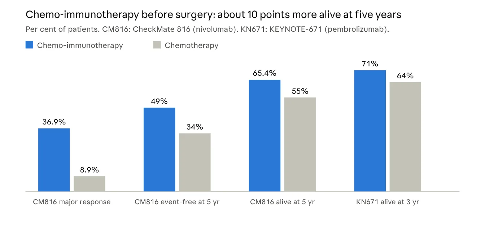
Chemo-immunotherapy trials
| Trial | Regimen | Population | Complete response | Event-free survival | Overall survival |
|---|---|---|---|---|---|
| CheckMate 816 | Neoadjuvant nivolumab with chemotherapy, 3 cycles; nothing mandated after | IB–IIIA (7th edition), n=358, open-label | 24% against 2% | Median 59.6 against 21.1 months; 5-year 49% against 34% | 5-year 65.4% against 55.0%, HR 0.72 |
| KEYNOTE-671 | Pembrolizumab with cisplatin doublet, 4 cycles, then up to 13 adjuvant cycles | II–IIIB (N2), n=797, double-blind | 18% against 4% | Median 47.2 against 18.3 months, HR 0.59; 5-year 49.9% against 26.5% | 36-month 71% against 64%, HR 0.72; 5-year 64.6% against 53.6% |
| AEGEAN | Durvalumab with platinum doublet, 4 cycles, then 12 adjuvant cycles | II–IIIB (N2), double-blind | 17% against 4% | HR about 0.68 | Not yet significant when last reported |
| CheckMate 77T | Nivolumab with chemotherapy, 4 cycles, then 1 year adjuvant | IIA–IIIB, n=461, double-blind | 25% against 5% | HR about 0.58 | Immature |
The CheckMate 816 and KEYNOTE-671 survival figures were confirmed today. The complete response and event-free survival figures for KEYNOTE-671, AEGEAN and CheckMate 77T were also confirmed on a second check the same day.
KEYNOTE-671 in brief
The only double-blind perioperative trial with overall survival as a primary endpoint, and the first perioperative regimen to show a survival benefit.
Cisplatin only, so it under-represents older patients and those with renal impairment.
The design cannot separate what the adjuvant year adds to the neoadjuvant phase.
Five-year data report continued benefit even in complete responders, which supports the adjuvant phase but is a subgroup observation.
Neoadjuvant-only or perioperative
No randomised comparison exists. Cross-trial comparisons are confounded by staging edition, blinding and stage mix.
Complete responders do very well with either strategy. Patients with residual tumour are the group most likely to gain from adjuvant treatment.
A year of adjuvant immunotherapy adds immune toxicity, cost and visits, and a substantial minority do not complete it.
Adjuvant and targeted therapy
| Trial | Treatment | Population | Result |
|---|---|---|---|
| IMpower010 | Atezolizumab for 1 year after chemotherapy | Resected IB–IIIA | Disease-free survival HR about 0.66 in stage II–IIIA with PD-L1 of 1% or more; largest effect at 50% or more |
| PEARLS (KEYNOTE-091) | Pembrolizumab for 1 year | Resected IB–IIIA | Disease-free survival HR about 0.76 overall |
| ADAURA | Osimertinib for 3 years | EGFR-mutant IB–IIIA | Disease-free survival HR about 0.2; five-year survival 88% against 78% |
| ALINA | Alectinib for 2 years, against chemotherapy | ALK-positive IB–IIIA | Disease-free survival HR about 0.24 |
| LACE meta-analysis | Adjuvant cisplatin doublet | Resected II–III | Absolute survival gain 5.4% at 5 years |
| Lung ART | Postoperative radiotherapy for pN2 | Completely resected N2 | No disease-free survival gain, more cardiopulmonary toxicity |
| PACIFIC | Durvalumab after chemoradiotherapy | Unresectable stage III | Five-year survival 43% against 33% |
Selection points
Know EGFR, ALK and PD-L1 from the diagnostic biopsy; EGFR and ALK tumours go down the targeted route, not immunotherapy.
Benefit is largest with PD-L1 of 1% or more and in stage III; it is smaller and less certain with PD-L1 under 1% and in stage IB.
Declare resectability, and the intended operation, at the first MDT. Roughly one in five patients starting neoadjuvant treatment does not reach surgery.
Screen for immune toxicity before surgery: pneumonitis, colitis, hepatitis, thyroid dysfunction, and hypophysitis or adrenal insufficiency, which needs steroid cover.
CheckMate 816 in depth
Three cycles of neoadjuvant nivolumab with chemotherapy raised complete response from 2% to 24% and five-year survival from 55% to 65%, without making surgery harder.
Design
Phase III, open-label, 358 patients randomised 1:1 to nivolumab 360 mg with platinum doublet or platinum doublet alone, every 3 weeks for three cycles, then surgery within 6 weeks.
Stage IB (4 cm or more) to IIIA by the 7th edition; known EGFR and ALK alterations excluded. About two-thirds were stage IIIA.
A third arm, nivolumab with ipilimumab, closed early and is exploratory.
Stratified by stage, PD-L1 (under or over 1%) and sex.
Primary endpoints: pathological complete response and event-free survival, both by blinded review. Overall survival was a key secondary endpoint.
Adjuvant chemotherapy or radiotherapy was optional; no adjuvant immunotherapy.
Efficacy
| Endpoint | Nivolumab + chemotherapy | Chemotherapy | Effect |
|---|---|---|---|
| Pathological complete response | 24.0% | 2.2% | Odds ratio about 14 |
| Major pathological response | 36.9% | 8.9% | |
| Median residual viable tumour | 10% | 74% | |
| Event-free survival, first analysis | 31.6 months | 20.8 months | HR 0.63 |
| Event-free survival, 5 years | 49% | 34% | Median 59.6 against 21.1 months |
| Overall survival, 5 years | 65.4% | 55.0% | HR 0.72 (95% CI 0.523–0.998), P = 0.048 |
Complete responders had a five-year survival of about 95%.
Event-free survival by subgroup at the first analysis: stage IIIA HR 0.54, stage IB–II HR 0.87; PD-L1 1% or more HR 0.41, under 1% HR 0.85; non-squamous HR 0.50, squamous HR 0.77.
Clearance of circulating tumour DNA during treatment tracked complete response.
Surgery
| Measure | Nivolumab + chemotherapy | Chemotherapy |
|---|---|---|
| Reached definitive surgery | 83% | 75% |
| Surgery cancelled for progression | 7% | 10% |
| Minimally invasive approach | 30% | 22% |
| Conversion to open | 11% | 16% |
| Lobectomy | 77% | 61% |
| Pneumonectomy | 17% | 25% |
| Complete (R0) resection | 83% | 78% |
| Median operating time | 184 minutes | 217 minutes |
| Grade 3–4 treatment-related adverse events | 34% | 37% |
Critique
Open-label, though the pathological and event endpoints were reviewed blind.
Overall survival reached significance only at the final analysis, with a confidence interval that just excludes 1.
Staged by the 7th edition, with few stage IB patients: the evidence is for stage II–IIIA.
Benefit in PD-L1 under 1% and in stage IB–II is smaller and the intervals cross 1.
About one in six patients in the nivolumab arm did not have surgery.
Control patients had limited access to later immunotherapy in some regions, which can inflate a survival difference.
It cannot say whether adjuvant immunotherapy adds benefit.
The five-year figures were confirmed today; the first-analysis, subgroup and surgical figures are from memory of the 2022 paper.
KEYNOTE-671 in depth
Perioperative pembrolizumab is the first perioperative regimen to show an overall survival benefit, in the only double-blind trial with survival as a primary endpoint.
Design
Phase III, double-blind, placebo-controlled, 797 patients, 189 centres.
Resectable stage II, IIIA or IIIB (N2), 8th edition.
Four cycles of neoadjuvant pembrolizumab 200 mg every 3 weeks with cisplatin-based chemotherapy, surgery, then up to 13 cycles of adjuvant pembrolizumab; placebo throughout in the control arm.
Dual primary endpoints: event-free survival and overall survival.
Results
| Endpoint | Pembrolizumab | Placebo |
|---|---|---|
| Pathological complete response | 18.1% | 4.0% |
| Major pathological response | 30% | 11% (from memory) |
| Reached surgery | 82.1% | 79.4% |
| Median event-free survival | 47.2 months | 18.3 months (HR 0.59) |
| 36-month overall survival | 71% | 64% (HR 0.72) |
| 5-year event-free survival (secondary report) | 49.9% | 26.5% (HR 0.58) |
| 5-year overall survival (secondary report) | 64.6% | 53.6% (HR 0.74) |
Treatment-related deaths were 1% in each arm.
Against CheckMate 816
Blinded with placebo, where 816 was open-label.
Includes stage IIIB (N2) and uses the 8th edition.
Cisplatin only and four cycles, where 816 used three cycles and allowed carboplatin.
Adds a year of adjuvant immunotherapy.
Critique
Cannot separate the contribution of the adjuvant phase from the neoadjuvant phase.
Cisplatin-only limits applicability to older patients and those with renal impairment.
A year of adjuvant treatment adds toxicity, visits and cost, and many do not complete it.
Continued benefit in complete responders at five years supports the adjuvant phase but is a subgroup observation.
EGFR-mutant NSCLC and osimertinib
Osimertinib now has trial evidence at every stage of EGFR-mutant NSCLC: after resection, before resection, after chemoradiotherapy, and in metastatic disease. For the surgeon the consequence is that EGFR status must be known before the treatment plan is made, not after the operation.
The mutation and the drug
Sensitising EGFR mutations: exon 19 deletion and exon 21 L858R, about 10–15% of adenocarcinoma in European patients and up to half in East Asian patients; commoner in never-smokers and women.
Osimertinib is a third-generation, irreversible EGFR tyrosine kinase inhibitor, 80 mg once daily. It also inhibits the T790M resistance mutation and penetrates the brain.
Main toxicities: diarrhoea, rash, paronychia; rarely interstitial lung disease, QT prolongation and a fall in ejection fraction.
EGFR-mutant tumours respond poorly to immunotherapy, which is why they were excluded from or did badly in the chemo-immunotherapy trials.
Trials by stage
| Setting | Trial | Design | Result | Checked |
|---|---|---|---|---|
| Adjuvant, after resection | ADAURA, NEJM 2020 and 2023 | 682 patients, completely resected stage IB–IIIA (seventh edition), exon 19 deletion or L858R, with or without adjuvant chemotherapy; osimertinib for 3 years against placebo | Disease-free survival HR 0.17 at first report in stage II–IIIA (0.23 with longer follow-up). Five-year overall survival 85% against 73% in stage II–IIIA (HR 0.49) and 88% against 78% in stage IB–IIIA. Fewer brain relapses | Confirmed |
| Neoadjuvant | NeoADAURA, 2025 | Resectable stage II–IIIB; osimertinib with chemotherapy, osimertinib alone, or chemotherapy alone before surgery | Major pathological response about 26% and 25% with the osimertinib arms against 2% with chemotherapy; complete response 4%, 9% and 0%. Event-free survival immature | Confirmed, except the two response percentages, which are from memory |
| After chemoradiotherapy, unresectable stage III | LAURA, NEJM 2024 | 216 patients without progression; osimertinib until progression against placebo | Median progression-free survival 39.1 against 5.6 months (HR 0.16) | Confirmed earlier today |
| Metastatic, first line | FLAURA, NEJM 2018 and 2020 | Osimertinib against gefitinib or erlotinib | Progression-free survival 18.9 against 10.2 months; overall survival 38.6 against 31.8 months | From memory |
| Metastatic, first line | FLAURA2, NEJM 2023 and 2025 | 557 patients; osimertinib with platinum and pemetrexed against osimertinib alone | Median overall survival 47.5 against 37.6 months (HR 0.77); progression-free survival HR 0.62 | Confirmed |
| Metastatic, first line | MARIPOSA | Amivantamab with lazertinib against osimertinib | Longer progression-free and overall survival with the combination, at the cost of more skin, infusion and thrombotic toxicity | From memory |
| Metastatic, after earlier inhibitor with T790M | AURA3, NEJM 2017 | Osimertinib against platinum and pemetrexed | Progression-free survival 10.1 against 4.4 months | From memory |
What this means for surgery
Test before treating. A resectable EGFR-mutant tumour should not go down a neoadjuvant chemo-immunotherapy pathway; the options are surgery followed by osimertinib, or neoadjuvant osimertinib where available.
After complete resection of stage IB–IIIA disease: adjuvant chemotherapy where indicated, then osimertinib for three years. NICE TA761 covers this.
The ADAURA debates: the control arm had limited access to osimertinib at relapse, which inflates the survival difference; staging did not require PET-CT or brain MRI in everyone; the disease-free survival curves converge after the drug stops at three years, raising the question of whether it cures or delays. Longer treatment is being tested.
Stage IB benefit is smaller in absolute terms, and the definition of IB changed between staging editions.
A major pathological response rate of about a quarter with neoadjuvant osimertinib is far below what chemo-immunotherapy achieves in EGFR wild-type disease, so it is not yet a reason to delay a straightforward resection.
Stopping before surgery: osimertinib is usually held for a few days around an operation (from memory; follow local advice).
At relapse on osimertinib: re-biopsy or plasma testing for the resistance mechanism (MET amplification, C797S, small-cell transformation).
Status: ADAURA, FLAURA2, LAURA and the NeoADAURA design and complete response rates were confirmed on 17 November 2026 (ADAURA survival, FLAURA2 final survival, NeoADAURA).
Systemic anti-cancer therapy: overview for the surgeon
From general knowledge, not checked against sources on 17 November 2026; drug availability changes quickly.
| Class | Examples | Main toxicities |
|---|---|---|
| Cytotoxic chemotherapy | Platinum (cisplatin, carboplatin) with pemetrexed (non-squamous), vinorelbine, gemcitabine or paclitaxel; docetaxel second-line | Myelosuppression, nausea, renal and hearing damage (cisplatin), neuropathy |
| Immunotherapy | PD-1: nivolumab, pembrolizumab. PD-L1: atezolizumab, durvalumab. CTLA-4: ipilimumab | Immune-related: pneumonitis, colitis, hepatitis, thyroiditis, hypophysitis and adrenal insufficiency, rash, myocarditis |
| Targeted therapy | EGFR: osimertinib. ALK: alectinib, lorlatinib. ROS1: entrectinib. BRAF: dabrafenib with trametinib. MET exon 14: tepotinib. RET: selpercatinib. KRAS G12C: sotorasib, adagrasib | Rash, diarrhoea, interstitial lung disease, QT prolongation, liver enzyme rise |
| Antibody-drug conjugates | Trastuzumab deruxtecan (HER2) | Interstitial lung disease, myelosuppression |
| Stage | Systemic treatment |
|---|---|
| IA | None |
| IB | Adjuvant osimertinib (EGFR) or alectinib (ALK, 4 cm or more); otherwise chemotherapy only for high-risk features |
| II–III, resectable, no EGFR or ALK | Neoadjuvant or perioperative chemo-immunotherapy; or surgery then adjuvant chemotherapy with or without immunotherapy |
| II–III, resectable, EGFR or ALK | Surgery, then adjuvant osimertinib for 3 years or alectinib for 2 years |
| III, unresectable | Concurrent chemoradiotherapy, then durvalumab for 12 months; osimertinib after chemoradiotherapy if EGFR-mutant |
| IV, driver mutation | The matched targeted drug first |
| IV, no driver, PD-L1 50% or more | Pembrolizumab alone, or chemo-immunotherapy |
| IV, no driver, PD-L1 under 50% | Platinum doublet with immunotherapy |
| Small cell, limited stage | Concurrent chemoradiotherapy, then durvalumab |
| Small cell, extensive stage | Platinum and etoposide with atezolizumab or durvalumab |
What the surgeon needs to do
Get enough tissue at the first biopsy for PD-L1 and a sequencing panel; EBUS cytology is often insufficient.
Know the result before the MDT decides: EGFR and ALK tumours do not get immunotherapy.
Time surgery 4–6 weeks after the last neoadjuvant cycle, once counts have recovered.
Before operating after immunotherapy, check for pneumonitis (repeat transfer factor), thyroid and adrenal function, and liver tests; give steroid cover if the adrenal axis is suppressed.
Stop bevacizumab about 6 weeks before surgery; discuss holding a targeted drug around surgery with the oncologist.
Refer every resected stage IB–III patient to oncology for adjuvant discussion, with the molecular results.
Salvage surgery after a good response to targeted or immune therapy in initially unresectable or oligometastatic disease is a growing MDT question; operations are harder for the same fibrotic reasons.
NICE pathways for advanced NSCLC
From the NICE interactive treatment pathways, dated February 2026, opened on 17 November 2026. The source is a flowchart; the line of therapy for some targeted drugs did not extract cleanly, so check the individual appraisal before quoting a line.
| Group | First line | Later lines |
|---|---|---|
| Squamous, no target, PD-L1 under 50% | Pembrolizumab with carboplatin and paclitaxel; or platinum doublet | Docetaxel; atezolizumab; nivolumab; pembrolizumab if PD-L1 over 1% |
| Squamous, no target, PD-L1 50% or more | Pembrolizumab or atezolizumab alone; chemo-immunotherapy only if urgent response is needed | As above |
| Non-squamous, no target, PD-L1 under 50% | Pembrolizumab with pemetrexed and platinum; or atezolizumab with bevacizumab, carboplatin and paclitaxel; or pemetrexed with platinum, then pemetrexed maintenance | Docetaxel with or without nintedanib; atezolizumab; pembrolizumab or nivolumab if PD-L1 over 1% |
| Non-squamous, no target, PD-L1 50% or more | Pembrolizumab or atezolizumab alone; or pembrolizumab with pemetrexed and platinum | As above |
| EGFR exon 19 deletion or exon 21 substitution | Osimertinib, alone or with pemetrexed and platinum; older options afatinib, dacomitinib, erlotinib, gefitinib | Osimertinib for T790M after an older drug; then platinum doublet, docetaxel |
| ALK | Alectinib, brigatinib or lorlatinib; older options crizotinib, ceritinib | Lorlatinib, brigatinib or ceritinib after a previous inhibitor |
| ROS1 | Entrectinib or crizotinib | Chemotherapy and immunotherapy as for no target |
| RET fusion | Selpercatinib | Selpercatinib through the Cancer Drugs Fund if not used first |
| KRAS G12C | Listed in the pathway: sotorasib | Chemo-immunotherapy and docetaxel branches |
| MET exon 14 skipping | Listed in the pathway: tepotinib | As above |
| BRAF V600 | Listed in the pathway: dabrafenib with trametinib | As above |
NICE's instruction on the pathway: base every choice on shared decision-making and consider a clinical trial at each step.
The targeted groups apply to squamous as well as non-squamous tumours where the alteration is found.
NTRK, HER2 and EGFR exon 20 pathways did not appear in the extracted content.
Why it matters to a surgeon: it shows what the patient is offered if resection is not possible or the disease recurs, and why the molecular panel must be complete at diagnosis.
NICE lung cancer products: the full list
The NICE lung cancer products page returned 90 items on 17 November 2026: 79 published and 11 terminated appraisals. The newest item in the list as returned was dated May 2024, so later appraisals are missing from it; check the live page for perioperative pembrolizumab and durvalumab, adjuvant alectinib and osimertinib after chemoradiotherapy.
Guidelines and quality standards
| Reference | Title | Date |
|---|---|---|
| NG122 | Lung cancer: diagnosis and management | March 2019 |
| NG12 | Suspected cancer: recognition and referral | June 2015 |
| QS17 | Lung cancer in adults | March 2012 |
| QS124 | Suspected cancer | June 2016 |
Appraisals that change surgical practice
| Reference | Drug and setting | Date |
|---|---|---|
| TA876 | Nivolumab with chemotherapy, neoadjuvant, resectable NSCLC | March 2023 |
| TA823 | Atezolizumab, adjuvant, resected NSCLC | September 2022 |
| TA761 | Osimertinib, adjuvant, EGFR-mutant NSCLC after complete resection | January 2022 |
| TA798 | Durvalumab after platinum-based chemoradiation, unresectable NSCLC | June 2022 |
Diagnostics
| Reference | Subject | Date |
|---|---|---|
| DG55 | AI computer-aided detection software for finding and measuring nodules on CT | July 2023 |
| HTE12 | AI software for chest X-rays in suspected lung cancer referrals, early value assessment | September 2023 |
| DG46 | EarlyCDT Lung for risk in solid nodules | February 2022 |
| DG9 | EGFR mutation testing in locally advanced or metastatic NSCLC | August 2013 |
Interventional procedures
| Reference | Procedure | Date |
|---|---|---|
| IPG716 | Microwave ablation for primary or metastatic cancer in the lung | February 2022 |
| IPG372 | Percutaneous radiofrequency ablation for primary or secondary lung cancers | December 2010 |
| IPG441 | Irreversible electroporation for primary lung cancer and lung metastases | February 2013 |
| IPG337 | EBUS-guided transbronchial biopsy for peripheral lung lesions | March 2010 |
| IPG254 | EBUS-guided transbronchial needle aspiration for mediastinal masses | February 2008 |
| IPG142 | Cryotherapy for malignant endobronchial obstruction | November 2005 |
| IPG137 | Photodynamic therapy for localised inoperable endobronchial cancer | November 2005 |
| IPG87 | Photodynamic therapy for advanced bronchial carcinoma | August 2004 |
| IPG79 | Stent placement for vena caval obstruction | July 2004 |
| IPG170 | Living-donor lung transplantation | May 2006 |
Advice (medtech innovation briefings)
| Reference | Subject | Date |
|---|---|---|
| MIB307 | Signatera for molecular residual disease in solid tumours | October 2022 |
| MIB243 | AI for analysing chest CT images | January 2021 |
| MIB211 | Archimedes for biopsy of suspected lung cancer | June 2020 |
| MIB194 | superDimension navigation for peripheral lung lesions | October 2019 |
| MIB137 | Plasma EGFR mutation tests | January 2018 |
| MIB128 | HTG EdgeSeq ALKPlus assay for ALK status | November 2017 |
| MIB39 | ERBE flexible cryoprobes for bronchoscopic diagnosis and treatment | September 2015 |
Advanced disease, by target
| Target | Appraisals |
|---|---|
| EGFR | TA654 osimertinib first line; TA653 osimertinib for T790M; TA595 dacomitinib; TA310 afatinib; TA258 erlotinib; TA192 gefitinib; TA850 amivantamab for exon 20 insertion after platinum |
| ALK | TA909 lorlatinib first line; TA670 brigatinib; TA536 alectinib; TA500 ceritinib; TA406 crizotinib; after earlier treatment TA628 lorlatinib, TA571 brigatinib, TA422 crizotinib, TA395 ceritinib |
| ROS1 | TA643 entrectinib; TA529 crizotinib |
| RET | TA911 selpercatinib first line; TA760 selpercatinib previously treated; TA812 pralsetinib |
| BRAF V600 | TA898 dabrafenib with trametinib |
| MET | TA789 tepotinib |
| KRAS G12C | TA781 sotorasib, previously treated |
| NTRK | TA630 larotrectinib |
| No target, first line immunotherapy | TA531 pembrolizumab alone for PD-L1 positive; TA683 pembrolizumab with pemetrexed and platinum, non-squamous; TA770 pembrolizumab with carboplatin and paclitaxel, squamous; TA705 atezolizumab alone; TA584 atezolizumab combination, non-squamous; TA724 nivolumab with ipilimumab and chemotherapy |
| After chemotherapy | TA428 pembrolizumab; TA520 atezolizumab; TA655 nivolumab, squamous; TA713 nivolumab, non-squamous; TA347 nintedanib; TA403 ramucirumab; TA374 erlotinib and gefitinib |
| Chemotherapy and maintenance | TA181, TA124, TA190 and TA402 pemetrexed; TA227 erlotinib maintenance; TA411 necitumumab |
| Small-cell | TA638 atezolizumab with carboplatin and etoposide, extensive stage; TA184 topotecan at relapse |
| Supportive | TA265 denosumab for bone metastases |
Terminated appraisals
TA976 trastuzumab deruxtecan (HER2); TA884 capmatinib (MET); TA848 cemiplimab; TA662 durvalumab in extensive small-cell; TA635 ramucirumab with erlotinib; TA618 atezolizumab with nab-paclitaxel; TA444 afatinib squamous; TA438 alectinib previously treated; TA436 and TA148 bevacizumab; TA362 nab-paclitaxel. A terminated appraisal means the company made no submission, so there is no recommendation and the drug is not routinely funded for that use.
The list also held three shared-learning items on suspected cancer referral, not shown here.
NICE advice products for lung cancer
NICE advice (medtech innovation briefings) describes a technology and its evidence without making a recommendation. The NICE list page filtered to advice could not be opened on 17 November 2026; the full product list, including all seven briefings, is in the next section.
| Briefing | Published | Subject | Relevance |
|---|---|---|---|
| MIB137 | January 2018 | Plasma EGFR mutation tests in locally advanced or metastatic NSCLC (seven tests) | Alternative to tissue testing, or before it; most useful at resistance to an EGFR inhibitor |
| MIB194 | October 2019 | superDimension electromagnetic navigation for sampling peripheral lung lesions | Biopsy of small peripheral lesions without crossing the pleura; see the bronchoscopy platforms section above |
| MIB209 | March 2020 | EarlyCDT-Lung, a panel of seven autoantibodies for indeterminate nodules | Since replaced by NICE healthtech guidance 611 |
| MIB211 | June 2020 | Archimedes navigation for biopsy of suspected lung cancer | Navigation with transparenchymal access to lesions away from an airway |
Your presentation: targeted therapy and immunotherapy trials
This section takes the 35-slide deck "Role of Targeted Therapy and Immunotherapy in Lung Cancer: Review of Important Trials" and adds what has been published since, with the points where the slides need correcting before they are shown again.
Drug classes on the slides
| Target | Drugs | Note |
|---|---|---|
| PD-1 | Nivolumab, pembrolizumab, cemiplimab | Pembrolizumab binds PD-1 only; slide 28 says PD-1 or PD-L1 |
| PD-L1 | Durvalumab, atezolizumab, avelumab | Slide 3 lists avelumab alone; the two used in lung cancer are durvalumab and atezolizumab |
| CTLA-4 | Ipilimumab | |
| EGFR | Osimertinib, third-generation, irreversible, CNS-active | Covers sensitising mutations and T790M |
ADAURA
Adjuvant osimertinib 80 mg daily for three years against placebo after complete resection of EGFR-mutant (exon 19 deletion or L858R) non-squamous NSCLC, stage IB to IIIA (seventh edition), with or without adjuvant chemotherapy; 682 patients, 339 and 343. The primary endpoint was disease-free survival in stage II to IIIA.
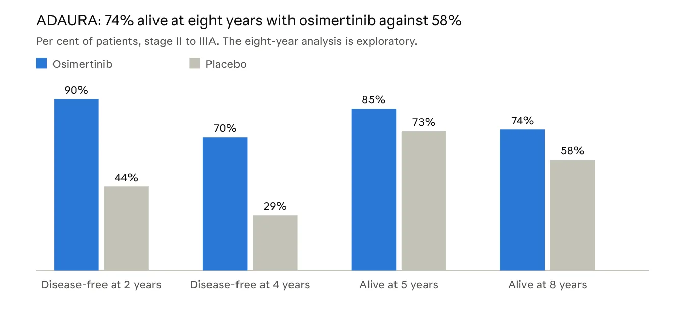
| Endpoint | Osimertinib | Placebo | Effect |
|---|---|---|---|
| DFS at 2 years, stage II to IIIA | 90% | 44% | HR 0.17 at the primary analysis; 0.23 with two more years |
| DFS at 4 years, stage II to IIIA | 70% | 29% | |
| DFS at 2 years, IB to IIIA | 89% | 52% | HR 0.20, then 0.27 |
| DFS at 4 years, IB to IIIA | 73% | 38% | |
| Median DFS, stage II to IIIA | 65.8 months | 21.9 months | |
| OS at 5 years, stage II to IIIA | 85% | 73% | HR 0.49 (0.33 to 0.73) |
| OS at 5 years, IB to IIIA | 88% | 78% | HR 0.49 (0.34 to 0.70) |
| OS at 8 years, stage II to IIIA | 74% | 58% | HR 0.53 (0.38 to 0.75) |
| OS at 8 years, IB to IIIA | 79% | 64% | HR 0.52 (0.39 to 0.71) |
Four-year DFS by stage, from your slide notes: IB 80% against 60%, II 75% against 43%, IIIA 66% against 16%. The absolute gain rises with stage.
CNS recurrence was lower with osimertinib; interstitial lung disease 3% against none.
The survival benefit held with and without adjuvant chemotherapy. Osimertinib is given after chemotherapy where chemotherapy is indicated, not instead of it.
The eight-year figures are new since the deck: an exploratory analysis with a data cut-off of 4 May 2026, presented at the 2026 World Conference on Lung Cancer and published in the Journal of Thoracic Oncology. Extended follow-up was obtained for about 77% of patients alive at the final analysis; 127 remained censored at their earlier date, and crossover to osimertinib in the placebo arm was not quantified.
Criticisms to have ready: the disease-free survival curves converge after the three years of treatment stop, which raises the question of delay against cure; staging did not require PET or brain MRI in every patient; and only a minority of placebo patients received osimertinib at relapse in the original analysis, which flatters the survival comparison.
Your scenario (lower lobectomy, T2N1M0, R0, EGFR-mutant): stage IIB, so adjuvant platinum doublet followed by three years of osimertinib fits the trial exactly.
ADAURA2
Phase 3, double-blind, osimertinib 80 mg daily for three years against placebo after complete resection (lobectomy, bilobectomy, segmentectomy or sleeve) of stage IA2 or IA3 (eighth edition) non-squamous NSCLC with exon 19 deletion or L858R, NCT05120349. Patients are stratified by pathological risk of recurrence (high or low), mutation type and race. The primary endpoint is disease-free survival in the high-risk stratum; planned size about 380 to 390. The trial is active and no longer recruiting. I found no results as of 17 November 2026. The question it answers is whether tumours of 1 to 3 cm, where five-year survival after resection is already high, gain enough to justify three years of a drug with a 3% interstitial lung disease rate.
Third-generation EGFR inhibitors in advanced disease: the 2026 meta-analysis
Lin and colleagues, Discover Oncology 2026 pooled nine randomised trials (about 1,880 patients) of osimertinib against chemotherapy or earlier inhibitors in advanced EGFR-mutant NSCLC.
| Outcome | Pooled result |
|---|---|
| Objective response | OR 2.99 (1.87 to 4.77), heterogeneity 75% |
| Disease control | OR 2.80 (1.38 to 5.67), heterogeneity 79% |
| Grade 3 or worse adverse events | OR 0.26 (0.14 to 0.47) |
| Diarrhoea | OR 1.97 (1.07 to 3.61) |
| Paronychia | OR 3.42 (1.12 to 10.42) |
| Nausea and vomiting | OR 0.27 (0.14 to 0.53) |
| Interstitial pneumonia | OR 1.23 (0.67 to 2.27), not significant |
| QT prolongation | OR 2.18 (0.81 to 5.84), not significant |
Read it with care. Seven of the nine trials are small Chinese studies, mostly second-line T790M disease; the reported progression-free survival estimate (3.12, interval 0.40 to 5.85) is not a coherent odds ratio; overall survival and CNS outcomes were not pooled; and the abstract's claim of more rash is not supported by its own table. For a viva, cite FLAURA, FLAURA2 and AURA3 directly (in the EGFR section above) and use this paper only for the toxicity pattern.
PACIFIC, as on the slides
The full account is in the tab Thoracic 3, under definitive chemoradiotherapy. Slide figures that agree with the publications: 709 patients randomised two to one (473 and 236 treated) within 42 days of chemoradiotherapy; median progression-free survival 16.8 against 5.6 months; response 28% against 16%; new lesions 20% against 32%; brain metastases 6% against 11%; five-year survival 43% against 33% and five-year progression-free survival 33% against 19%; median survival 47.5 against 29.1 months.
Correct the note on slide 11: eighteen-month progression-free survival was 44% with durvalumab, as slide 13 has it, not 35%.
Durvalumab was given at 10 mg/kg every two weeks for up to 12 months.
The post-hoc finding of no survival benefit when PD-L1 is under 1% is why the European licence, and NICE, restrict durvalumab to PD-L1 of 1% or more; the US label does not. Your scenario patient at over 25% qualifies everywhere.
CheckMate 816, as on the slides
The full account is higher in this tab. Slide figures that agree: 358 patients, stage IB to IIIA; median event-free survival 31.6 against 20.8 months; two-year event-free survival 64% against 45%; pathological complete response 24% against 2%; R0 83% against 78%; fewer pneumonectomies.

Correct slide 22: the benefit was larger when PD-L1 was 1% or more, not under 1%. It was also larger in stage IIIA and in non-squamous histology, as the slide says. From memory, the event-free survival hazard ratio was about 0.41 for PD-L1 of 1% or more and 0.85 for under 1%.
PD-L1 status was a stratification factor, not an entry requirement.
"Untestable" on slide 22 should read unresectable, and the trial does not speak to unresectable disease.
IMpower010
Adjuvant atezolizumab for 16 cycles (one year) against best supportive care after complete resection and platinum chemotherapy, stage IB (4 cm or more) to IIIA; 1,280 enrolled, 1,005 randomised.

Disease-free survival in stage II to IIIA with PD-L1 of 1% or more: HR 0.66 (0.50 to 0.88), as in your notes.
All stage II to IIIA: HR 0.79. The intention-to-treat population including IB did not cross the boundary.
The benefit is concentrated in PD-L1 of 50% or more (HR about 0.43, with a survival benefit in that group), which is the group the European licence and NICE cover, excluding EGFR and ALK alterations.
PEARLS / KEYNOTE-091
Adjuvant pembrolizumab for up to 18 doses (one year) against placebo after complete resection, stage IB (4 cm or more) to IIIA, adjuvant chemotherapy recommended but not required; 1,177 patients.

Disease-free survival, all patients: median 53.6 against 42.0 months, HR 0.76.
PD-L1 of 50% or more: HR 0.82, not significant. This is the opposite of IMpower010 and has no agreed explanation; an unusually good placebo arm in that subgroup is the usual answer.
The benefit was seen in patients who had received adjuvant chemotherapy, and the licence is restricted to them.
KEYNOTE-671, update to the slides
Slide 31 says overall survival did not differ. That was the first interim analysis. The second interim analysis, published in the Lancet in 2024, showed a significant survival benefit (HR 0.72; 36-month survival 71% against 64%). The detail is in the KEYNOTE-671 section above.
Surgical perspective and Triple M
Failure to reach surgery because of progression in CheckMate 816: 5% for stage IB to II and 8% for stage III with nivolumab, against 2% and 14% with chemotherapy alone (your slide notes). Rates in AEGEAN and KEYNOTE-671 were similar, and no higher than with historical induction chemotherapy.
Operative difficulty comes from hilar and nodal fibrosis, loss of tissue planes and hypervascularity; conversion from VATS is the practical consequence. The real-world series are in the tab Thoracic 2.
Triple M: concurrent myocarditis, myositis and myasthenia after checkpoint inhibition, usually within the first one to two months and with high mortality. Test troponin, creatine kinase, transaminases and acetylcholine receptor antibodies; ECG, echo and cardiac MRI; EMG. Stop the drug, give high-dose methylprednisolone early, add immunoglobulin or plasma exchange for the myasthenic component, and escalate to mycophenolate, abatacept, tocilizumab or rituximab if there is no response. A patient with new ptosis, proximal weakness or a troponin rise after neoadjuvant chemo-immunotherapy should not go to theatre until this is excluded.
Status: the slide figures were checked against what I hold of the publications. The ADAURA five-year hazard ratios and the eight-year analysis were confirmed on 17 November 2026 (NEJM abstract, eight-year report); the journal page for the eight-year paper would not open, so its subgroup figures are not here. ADAURA2 design is from the trial report and registry. The IMpower010 disease-free survival rates in the chart and the KEYNOTE-091 medians were confirmed the same day; the CheckMate 816 PD-L1 hazard ratios and the Triple M management are from memory. PubMed record 36872181 would not open and I could not identify the paper, so nothing from it is included.
NHS England systemic therapy map (course pack, 18 November 2026)
This replaces the earlier NICE list, which stopped at May 2024. Trial, licence and NICE populations are not interchangeable: record the staging edition, treatment timing, biomarkers and prior treatment, and use the live recommendation and local commissioning route. Appraisal titles and dates marked checked were confirmed today on the NICE lung cancer products page; eligibility wording is from the pack.
Resectable NSCLC
| Timing | Appraisal | Drug and population | Status |
|---|---|---|---|
| Neoadjuvant only | TA876 | Nivolumab with chemotherapy; resectable tumours 4 cm or more, or node-positive. Does not imply continuation after surgery | Pack; named as standard care in the TA1017 committee discussion |
| Perioperative | TA1017 | Pembrolizumab with platinum chemotherapy before surgery, then alone after; resectable disease at high risk of recurrence | Checked: published 20 November 2024 |
| Perioperative | TA1030 | Durvalumab with chemotherapy before surgery, then alone after; 4 cm or more or node-positive, no EGFR mutation or ALK rearrangement | Checked: published 15 January 2025 |
| Perioperative | TA1127 | Nivolumab, same population as TA1030 | Pack only; not found in my search |
| Adjuvant, ALK | TA1014 | Alectinib after complete resection, ALK-positive stage IB (4 cm or more) to IIIA, 7th edition staging. ALINA compared alectinib with platinum chemotherapy, not chemotherapy followed by alectinib | Pack; the appraisal is listed by NICE but I did not open it |
| Adjuvant, EGFR | TA1043 (replaces TA761) | Osimertinib after complete resection, stage IB to IIIA, exon 19 deletion or exon 21 L858R. The decision on adjuvant chemotherapy is separate | Checked: published 26 February 2025 |
| Adjuvant | TA1037 | Pembrolizumab after complete resection and platinum chemotherapy, high recurrence risk | Checked: published 5 February 2025 |
| Adjuvant | TA1071 (replaces TA823) | Atezolizumab after complete resection and platinum chemotherapy, PD-L1 on 50% or more of tumour cells, no EGFR or ALK alteration | Checked: published 19 June 2025 |
Do not carry one PD-L1 cut-off across TA1037 and TA1071.
LACE supports a discussion of postoperative cisplatin-based chemotherapy. It is not evidence for neoadjuvant chemotherapy.
After definitive chemoradiotherapy (not perioperative)
| Setting | Appraisal | Drug and population | Status |
|---|---|---|---|
| Unresectable stage III NSCLC | TA798 | Durvalumab; PD-L1 1% or more, no progression after concurrent platinum chemoradiotherapy | Pack |
| Unresectable stage III NSCLC, EGFR | TA1156 | Osimertinib; exon 19 deletion or L858R, no progression during or after platinum chemoradiotherapy | Checked: TA1156 recommendations, published 21 May 2026 |
| Limited-stage small-cell | TA1099 | Durvalumab; no progression after platinum chemoradiotherapy | Checked: published 1 October 2025 |
| Extensive-stage small-cell | TA638, TA1041 | First-line chemo-immunotherapy; a separate pathway | TA1041 (durvalumab with etoposide and platinum) checked: published 19 February 2025; TA638 from the pack |
How this changes the earlier notes in this tab
Where the notes above cite TA761 for adjuvant osimertinib or TA823 for adjuvant atezolizumab, read TA1043 and TA1071.
Perioperative pembrolizumab and durvalumab are now routine NICE options alongside neoadjuvant nivolumab; choose by the population each appraisal covers.
Consolidation osimertinib after chemoradiotherapy (LAURA) now has a NICE recommendation.
Interactive course pack, 18 November 2026: "When is neoadjuvant indicated" (archive slide)
From the archive of the original slides in the interactive course pack, which labels it archival: recorded as taught, not checked by me today. Use the NICE map earlier in this tab for what is funded in England.
| Point | Detail given on the slide |
|---|---|
| Indication for neoadjuvant chemoimmunotherapy (CheckMate 816 model) | Resectable NSCLC stage IB to IIIA (tumour 4 cm or more, or node positive) with no EGFR or ALK alteration |
| Regimen | Nivolumab 360 mg with platinum doublet for 3 cycles, then surgery |
| CheckMate 816, 5-year update 2025 | Pathological complete response 24% against 2.2%; 5-year overall survival 65% against 55% (hazard ratio 0.72, p=0.0485); event-free survival 59.6 against 21.1 months (hazard ratio 0.68) |
| By PD-L1 | 1% or more: hazard ratio 0.51; under 1%: 0.89 |
| Claim on the slide | The only phase III neoadjuvant-only chemoimmunotherapy trial to show a significant overall survival benefit |
| Perioperative options | AEGEAN (durvalumab before and after surgery) and CheckMate 77T (nivolumab before and after): event-free survival benefit |
| Neoadjuvant chemotherapy alone | Traditional approach for stage IIIA (N2); the slide cites LACE for a 5.4% survival benefit with cisplatin-based treatment (LACE was an adjuvant meta-analysis: my comment) |
| When not to give neoadjuvant treatment | Stage I (under 4 cm, N0): surgery first. EGFR or ALK positive: surgery then adjuvant targeted therapy. Unfit for chemotherapy. Emergency or urgent resection needed |
| Algorithm | Stage IB to IIIA and EGFR/ALK negative: neoadjuvant nivolumab with chemotherapy. EGFR/ALK positive: surgery and adjuvant osimertinib or alectinib |
NICE pathways: systemic therapy for advanced NSCLC (November 2026)
Added 18 November 2026 from the PDF you supplied: NICE, Systemic anti-cancer therapy for advanced non-small-cell lung cancer: treatment options (interactive PDF of all pathways, squamous and non-squamous), November 2026. Everything below is from that document. The PDF is a set of flowcharts; I read it as text, so the drug lists and appraisal numbers are reliable but the exact order of lines within a branch should be checked on the flowchart before quoting.

Squamous
| Group | First line | Later lines |
|---|---|---|
| No targetable alteration, PD-L1 under 50% | Pembrolizumab with carboplatin and paclitaxel (TA770); cemiplimab with platinum chemotherapy if PD-L1 1% or more (TA1165); platinum doublet | Pembrolizumab if PD-L1 1% or more (TA428); atezolizumab (TA520); nivolumab (TA655); docetaxel |
| No targetable alteration, PD-L1 50% or more | Pembrolizumab (TA531); atezolizumab (TA705); the chemo-immunotherapy combinations (TA770, TA1165) only when urgent clinical intervention is needed | Platinum doublet, then docetaxel |
| RET fusion | Selpercatinib (TA911 untreated; TA1042 previously treated) | |
| KRAS G12C | As for no alteration | Sotorasib (TA781) |
| MET exon 14 skipping | Tepotinib (TA789) | |
| BRAF V600 | Dabrafenib with trametinib (TA898); encorafenib with binimetinib (TA1150) |
Non-squamous
| Group | First line | Later lines |
|---|---|---|
| No targetable alteration, PD-L1 under 50% | Pembrolizumab with pemetrexed and platinum (TA683); atezolizumab with bevacizumab, carboplatin and paclitaxel (TA584); cemiplimab with platinum chemotherapy (TA1165); pemetrexed with cisplatin (TA181) or carboplatin; platinum doublet; pemetrexed maintenance (TA190, TA402) | Pembrolizumab (TA428); atezolizumab (TA520); nivolumab if PD-L1 1% or more (TA713); docetaxel, with or without nintedanib (TA347) |
| No targetable alteration, PD-L1 50% or more | Pembrolizumab (TA531); atezolizumab (TA705); pembrolizumab with pemetrexed and platinum (TA683); cemiplimab combination (TA1165) | Platinum doublet; docetaxel with or without nintedanib |
| EGFR mutation | Osimertinib (TA654); osimertinib with pemetrexed and platinum (TA1060); amivantamab with lazertinib (TA1122); afatinib (TA310); dacomitinib (TA595); erlotinib (TA258); gefitinib (TA192) | T790M after an earlier inhibitor: osimertinib (TA653) |
| EGFR exon 20 insertion | Amivantamab with carboplatin and pemetrexed (TA1158) | |
| ALK | Lorlatinib (TA1103); brigatinib (TA670); alectinib (TA536); ceritinib (TA500); crizotinib (TA406) | Brigatinib (TA571); ceritinib (TA395); crizotinib (TA422); lorlatinib (TA628) |
| ROS1 | Entrectinib (TA643); crizotinib (TA1021) | |
| RET, KRAS G12C, MET exon 14, BRAF V600 | As in the squamous table |
What a surgeon needs from this
Biomarker testing (PD-L1, EGFR, ALK, ROS1, RET, BRAF, MET exon 14, KRAS G12C) decides the pathway, so adequate tissue at biopsy or resection matters.
With PD-L1 50% or more and no driver, single-agent immunotherapy is the default; chemotherapy is added when a rapid response is needed.
With a driver alteration, a targeted drug comes first and immunotherapy is not the first choice.
This pathway is for advanced disease. Perioperative treatment for resectable disease is in the sections above in this tab.
Thoracic 5: small-cell, mediastinum and endocrine
Contents (4 sections)
Small-cell lung cancer by stage, anterior mediastinal lesions, thymoma and myasthenia, and tumours that cause Cushing syndrome.
Small-cell lung cancer: treatment by stage
Surgery has a place only in T1–2 N0 disease after the mediastinum has been proved negative; everything else that is confined to the chest is treated with concurrent cisplatin and etoposide with radiotherapy, now followed by durvalumab.
As taught in the session
T1 and T2 disease: the group in which surgery is considered.
Systemic treatment: cisplatin and etoposide.
Durvalumab as consolidation.
By stage
| Stage | Treatment | Notes |
|---|---|---|
| T1–2 N0 M0 (about 5% of presentations) | Lobectomy with systematic node dissection, then four cycles of adjuvant platinum and etoposide | Only after PET-CT, brain MRI and invasive mediastinal staging are negative. Add mediastinal radiotherapy if nodes are positive at surgery. If unfit for or declining surgery: chemoradiotherapy, or SABR with chemotherapy |
| Limited stage, not resectable (T any, N any, M0, treatable in one radiotherapy field) | Four cycles of cisplatin and etoposide with concurrent thoracic radiotherapy starting with cycle 1 or 2; then durvalumab for up to 24 months if there is no progression | Carboplatin if cisplatin is not tolerated |
| Extensive stage | Carboplatin and etoposide with atezolizumab or durvalumab, then immunotherapy maintenance | NICE TA638 covers atezolizumab; durvalumab in this setting was a terminated appraisal (TA662) in the list above |
| Relapse | Re-challenge with platinum and etoposide if the interval is long; topotecan or other second-line agents if short | Newer agents from memory: lurbinectedin, tarlatamab |
ESMO guideline (Dingemans and colleagues, Annals of Oncology 2021)
As taught: brain imaging and staging of the mediastinum before surgery, on level IV evidence. Read from the guideline text on 17 November 2026; I read the first two-thirds of the page, which covered all the recommendations below. Each bracket gives the level of evidence, then the grade of recommendation.
| Topic | Recommendation | Level, grade |
|---|---|---|
| Before surgery | Pathological mediastinal staging is required in surgical candidates | IV, A |
| Brain imaging in localised disease, MRI preferred, CT if MRI is not available | III, A | |
| Contrast CT of the chest and abdomen | IV, A | |
| FDG PET-CT optional in limited-stage disease; confirm pathologically any PET finding that would change treatment | II, C | |
| Surgery | May be considered for cT1–2 N0 within multimodal treatment, after a multidisciplinary decision | III, B |
| Aim for complete (R0) resection | III, A | |
| Sublobar resection not recommended | V, E | |
| Systematic nodal dissection | IV, A | |
| After surgery | Adjuvant chemotherapy | IV, A |
| For R1–R2 resection or N2 nodes: chemotherapy with radiotherapy, preferably concurrent | IV, A | |
| Prophylactic cranial irradiation in stage I–II: role not well defined, shared decision | V, C | |
| Limited stage | Concurrent chemoradiotherapy for T1–4 N0–3 M0 with performance status 0–1 | I, A |
| Cisplatin with etoposide preferred; carboplatin if cisplatin is contraindicated | I, A; II, A | |
| 45 Gy twice daily in 30 fractions preferred; 66 Gy once daily in 33 fractions only if twice daily is not feasible | I, A | |
| Start radiotherapy with cycle 1 or 2 | II, A | |
| Prophylactic cranial irradiation, 25 Gy in 10 fractions, after a response at performance status 0–1 | I, A | |
| Extensive stage | Atezolizumab or durvalumab with four cycles of platinum and etoposide | I, A |
| Cranial irradiation may be omitted if MRI is clear and regular MRI follow-up is possible | II, B |
How to read the brackets (from memory of the ESMO scheme, not in the text I read): level I is randomised trial or meta-analysis evidence, IV is retrospective cohort or case-control data, V is case series or expert opinion; grade A is strongly recommended, E is never recommended.
So the surgical recommendations are strong in wording but rest on weak evidence: mediastinal staging, node dissection and adjuvant chemotherapy are all level IV, grade A, and surgery itself is only III, B.
The guideline predates ADRIATIC, so it does not include durvalumab after chemoradiotherapy in limited-stage disease.
The guideline text says nothing specific on postoperative radiotherapy for N1 disease.
Radiotherapy
CONVERT (Lancet Oncology 2017): 45 Gy in 30 twice-daily fractions over 19 days against 66 Gy in 33 once-daily fractions over 45 days, both starting on day 22 of cisplatin and etoposide. Median survival 30 against 25 months (HR 1.18, 0.95–1.45, not significant); two-year survival 56% against 51%. Once-daily was not shown to be superior, so twice-daily remains the standard, with once-daily acceptable where twice-daily cannot be delivered.
A secondary analysis of CONVERT found that stage I–II patients treated with chemoradiotherapy lived longer than stage III patients, which is the comparator for any claim that surgery is better in early disease.
Prophylactic cranial irradiation has been standard after a response in limited-stage disease; MRI surveillance is the alternative under study (from memory).

Prophylactic cranial irradiation or MRI surveillance: PRIMALung
PRIMALung, EORTC-1901 (Levy and colleagues, Lung Cancer, December 2024) is a trial design paper, not a result. It tests brain MRI surveillance with or without prophylactic cranial irradiation in small-cell lung cancer of all stages, aiming to show that survival without irradiation is non-inferior and that cognition is better, in the era of immunotherapy. The PubMed page could not be opened on 17 November 2026; this description is from its indexed summary.

| Background | Finding | Checked |
|---|---|---|
| Aupérin meta-analysis, NEJM 1999 | Prophylactic cranial irradiation after complete response improved three-year survival by about 5% and halved brain metastases | From memory |
| Slotman, NEJM 2007 | In extensive-stage disease responding to chemotherapy, irradiation reduced symptomatic brain metastases and improved one-year survival, but brain imaging was not required at entry | From memory |
| Takahashi, Lancet Oncology 2017 | Extensive-stage disease with a clear MRI and MRI surveillance in both arms: irradiation gave no survival benefit | From memory |
| Cost of irradiation | Measurable decline in memory and executive function in a substantial minority, worse over 60; hippocampal avoidance reduces it | From memory |
Why the question is open again: the older evidence predates routine brain MRI at staging and predates immunotherapy, and ADRIATIC stratified by irradiation because practice already varies.
Design points to confirm from the paper: sample size, the non-inferiority margin, MRI schedule and the cognitive endpoint. A parallel North American trial (MAVERICK) asks the same question (from memory).
For the resected stage I patient: brain MRI at staging and surveillance afterwards; irradiation is usually omitted in pathological stage I because the brain relapse rate is low (from memory).
Durvalumab after chemoradiotherapy: ADRIATIC
| Detail | |
|---|---|
| Design | Phase III, double-blind; limited-stage disease without progression after concurrent platinum chemoradiotherapy, performance status 0–1; 730 randomised to durvalumab, durvalumab with tremelimumab, or placebo; stratified by stage (I–II or III) and by prophylactic cranial irradiation |
| Treatment | Durvalumab 1,500 mg every 4 weeks for up to 24 months |
| Reported comparison | Durvalumab (264) against placebo (266) |
| Overall survival | Median 55.9 against 33.4 months (HR 0.73, 0.57–0.93); 57% alive at three years with durvalumab |
| Progression-free survival | Median 16.6 against 9.2 months; 46% against 34% progression-free at two years |
| Safety | Grade 3 or 4 adverse events 24.4% against 24.2%; grade 3 or 4 pneumonitis 3.1% against 2.6% |
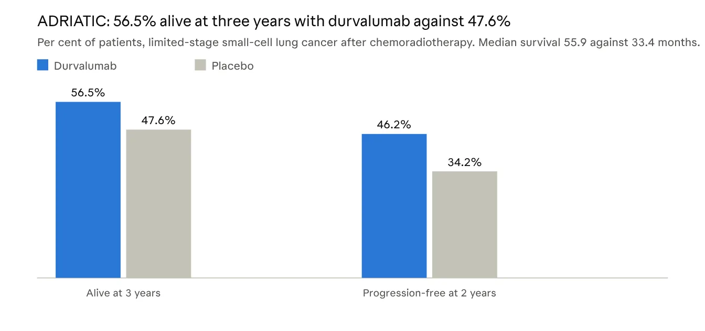
Surgery in small-cell cancer: the evidence
The old randomised trials against surgery included few T1–2 N0 patients, and nearly half the operated patients in the 1969 trial had a pneumonectomy by open thoracotomy; they do not apply to peripheral stage I disease.
NCCN recommends surgery with adjuvant chemotherapy for stage I disease only, and names lobectomy as the preferred resection.
Support for surgery is from registry comparisons, not modern trials. Pathological upstaging of clinical stage I is common, which is why invasive mediastinal staging comes first and adjuvant chemotherapy is given to everyone.
The usual way a surgeon meets small-cell cancer is unexpectedly: a resected nodule that proves to be small-cell, or a mixed tumour. Complete the lobectomy and node dissection if not already done, then refer for adjuvant chemotherapy and brain imaging.
Status: ADRIATIC, CONVERT and the NCCN position were confirmed on 17 November 2026 (ADRIATIC, CONVERT, review of surgery in stage I). The extensive-stage and relapse rows, and UK funding of durvalumab in limited-stage disease, were not checked.
Anterior mediastinal lesions: the BTOG diagnostic pathway
The BTOG Thymic Malignancies Special Interest Group pathway (launched 2024, with a companion review in Clinical Radiology) sorts an incidental anterior mediastinal lesion by its imaging features into discharge, MRI surveillance, upfront thymectomy, or biopsy.

Benign-looking lesions are discharged or watched on MRI; a lesion that looks like a low-grade thymoma goes to surgery without a biopsy; one that looks high-grade gets PET-CT and a biopsy first.
Steps
Thymic remnant (younger patient, triangular, straight or concave margins): discharge, no further action.
Otherwise review all previous thoracic imaging.
If not already done, obtain a contrast-enhanced portal venous or delayed phase CT of the thorax and upper abdomen (65 second delay), or MRI of the thymus. Do not make the diagnosis from a low-dose CT or the arterial phase of a CT pulmonary angiogram alone.
Ask about myasthenia gravis. Send routine bloods, immunoglobulins and acetylcholine receptor antibody. Note any acute illness, cancer treatment or connective tissue disease, all of which are associated with thymic enlargement.
The four routes
| Impression | Features | Action |
|---|---|---|
| Thymic hyperplasia | Larger than a remnant; triangular with convex margins; drapes around the heart; fat nodularity; stays on the anterior junction line; prolonged stability | Discharge without follow-up. Thymectomy can be offered if myasthenia is present. If surveillance is thought appropriate, contrast CT or contrast MRI with chemical shift at 6–12 months, MRI preferred in women of child-bearing age |
| Thymic cyst | Low attenuation, fluid-filled, no solid component, non-enhancing | Contrast-enhanced MRI at 1 and 2 years; discharge at 2 years if stable. Contrast CT if MRI expertise or capacity is limited |
| Hyperplasia or cyst, not confident | Contrast MRI with chemical shift imaging; the lesion should be over 2 cm for adequate resolution | |
| Suspected low-grade thymoma | Round with loss of the triangular shape; smooth, well-defined margin; fat plane preserved; non-calcified; enhancing; solid, or cystic with a solid component | Offer minimally invasive thymectomy (VATS or robotic) without preoperative histology; discuss at the monthly thymoma MDT where there is one. If surgery is declined, contrast CT at 1, 2 and 4 years (MRI in women of child-bearing age) and discharge at 4 years if stable |
| Suspected high-grade malignancy | Irregular or blurred margin; loss of the fat plane; calcification; pleural nodules; B symptoms. Differential: lymphoma, thymic carcinoma, sarcoma, high-grade thymoma, germ cell tumour | PET-CT and biopsy, such as percutaneous image-guided biopsy; weekly thoracic oncology MDT |
Concern for thymoma or high-grade malignancy at any point moves the patient to that route.
Evidence behind it
Chemical shift MRI shows microscopic fat in hyperplasia as signal loss on the opposed-phase images; T2-weighted imaging confirms a cyst that looks solid on CT because of proteinaceous content.
A UK single-centre series of simple thymic cysts concluded that extended surveillance may not be needed once the cyst is properly characterised on MRI.
In a lung cancer screening cohort, 74% of lesions under 3 cm stayed stable over two annual rounds; of the 14 that grew, four were thymomas at surgery. Among all 16 resections the benign resection rate was 50%, which is the figure the pathway is trying to bring down.
Surgical points (from memory, not in the pathway text)
No biopsy for a resectable lesion that looks like thymoma: it adds nothing and risks seeding the pleura or the track.
Biopsy when lymphoma or a germ cell tumour is possible, or when the tumour is unresectable and induction treatment is planned. Use a core biopsy; needle cytology cannot type lymphoma.
In a young man with a mediastinal mass, send AFP, beta-hCG and LDH before anything else; a raised AFP or very high hCG makes the diagnosis of a non-seminomatous germ cell tumour without a biopsy.
Operation: complete thymectomy with the tumour, capsule intact, no-touch technique; inspect the pleura and pericardium; convert if the capsule is at risk.
Check acetylcholine receptor antibody before surgery even without symptoms, and optimise myasthenia first.
Status
Confirmed on 17 November 2026 from the BTOG pathway document. I read it through an automated text extraction, in which the headings on the two tumour routes were muddled; I have assigned the smooth, well-defined features to low-grade thymoma and the irregular, invasive features to high-grade malignancy, which is the only reading that fits the actions. Check those two rows against the pathway PDF before teaching from them. Evidence points are from the screening cohort and the thymic cyst series.
Myasthenia gravis and thymoma
Every thymoma is resected whether or not the patient has myasthenia, and every patient with generalised antibody-positive myasthenia is considered for thymectomy whether or not there is a thymoma; the two questions overlap but are decided separately.
How the two relate
| Starting from | Proportion | Consequence |
|---|---|---|
| Myasthenia | About 10–15% have a thymoma; about 65% have thymic hyperplasia | Image the mediastinum in every new diagnosis |
| Thymoma | About 30–40% have myasthenia, most often with type B histology | Check acetylcholine receptor antibody before any thymectomy, symptoms or not |
| Thymoma with positive antibody but no symptoms | A minority develop myasthenia after surgery, sometimes years later | Warn the patient and the anaesthetist; follow up with neurology |
Proportions are from memory.
Thymoma-associated myasthenia is almost always acetylcholine receptor antibody positive; titin and ryanodine receptor antibodies in a younger patient point to a thymoma.
Other paraneoplastic conditions: pure red cell aplasia, hypogammaglobulinaemia (Good syndrome, hence immunoglobulins in the BTOG work-up), and less often limbic encephalitis or myositis.
Myasthenia does not worsen thymoma prognosis; it tends to bring earlier diagnosis. Resection improves the myasthenia less reliably than thymectomy does in non-thymomatous disease, and most patients still need immunosuppression.
New or worsening myasthenia after a previous thymoma resection: image for recurrence, including the pleura.
Who gets a thymectomy for myasthenia without a thymoma
| Group | Recommendation | Source |
|---|---|---|
| Generalised, acetylcholine receptor antibody positive, age 18–50 | Consider early, to improve outcome and reduce immunotherapy | International consensus, 2020 update |
| Same, but failing or intolerant of immunotherapy | Strongly consider | International consensus, 2020 update (confirmed) |
| Antibody positive, age 50–65 | Reasonable in selected patients; MGTX enrolled up to 65 | Trial entry criteria (confirmed) |
| Seronegative generalised disease failing immunotherapy | May be considered | International consensus (from memory) |
| MuSK, LRP4 or agrin antibody positive | Not recommended | International consensus (from memory) |
| Purely ocular, antibody positive, failing or unable to take treatment | May be considered | International consensus (from memory) |
MGTX
| Detail | |
|---|---|
| Design | Extended transsternal thymectomy plus prednisone against prednisone alone; 126 patients; rater-blinded |
| Entry | Acetylcholine receptor antibody positive, generalised (MGFA class 2–4), disease under 5 years, age 18–65, no thymoma |
| Three years (NEJM 2016) | Time-weighted Quantitative MG score lower by 2.85 points with surgery; alternate-day prednisone 32 mg against 54 mg (figures as presented by the investigators) |
| Five years (Lancet Neurology 2019) | Benefit persisted in the 68 who entered the extension; minimal manifestation status in 88% against 58% |
| Limits | Small; sternotomy only, so minimally invasive thymectomy is supported by observational data, not by this trial; no patients over 65 |
The operation
Aim: all thymic tissue and the anterior mediastinal fat from phrenic to phrenic and from the thyroid to the diaphragm, including both upper poles. Ectopic thymus lies in the aortopulmonary window, the cardiophrenic angles and behind the innominate vein.
Approach: VATS, robotic or subxiphoid in most; sternotomy for a large or invasive thymoma. The consensus accepts endoscopic and robotic approaches in experienced centres while noting that no randomised comparison exists.
With a thymoma: en bloc with the whole thymus, capsule unbreached; resect adherent pericardium, lung or one phrenic nerve as needed. Do not sacrifice both phrenic nerves, and think hard about even one in a patient with myasthenia.
Thymectomy for myasthenia is elective. It is never done to treat a crisis.
Perioperative myasthenia
Operate when the disease is controlled. Bulbar or respiratory weakness is treated first with immunoglobulin or plasma exchange.
Risk factors for postoperative ventilation and crisis: bulbar symptoms, vital capacity under about 2–2.9 L, previous crisis, long disease duration, high pyridostigmine dose (over about 750 mg a day), high antibody titre.
Continue pyridostigmine and steroids on the day; cover steroids.
Anaesthesia: avoid or greatly reduce non-depolarising relaxants and monitor the neuromuscular junction; sugammadex for reversal; remifentanil-based technique.
Drugs that worsen myasthenia: aminoglycosides, fluoroquinolones, macrolides, magnesium, beta-blockers, and new high-dose steroids.
Weakness after surgery: myasthenic crisis (too little drug, infection, surgical stress) or cholinergic crisis (too much pyridostigmine: salivation, sweating, small pupils, bradycardia, fasciculation). If in doubt, stop the anticholinesterase, support ventilation, and give immunoglobulin or plasma exchange.
Improvement after thymectomy takes months to years; tell the patient this before surgery.
After a thymoma resection
Stage by TNM (ninth edition) and classify by WHO histology; completeness of resection is the main prognostic factor.
Postoperative radiotherapy: not for completely resected stage I; discussed for stage II to III and for incomplete resection; routine for thymic carcinoma beyond stage I. Details vary by guideline and are from memory.
CT follow-up for at least 10 years because recurrence is late and often pleural.
Status
Confirmed on 17 November 2026: MGTX entry criteria, the three-year effect sizes and the five-year extension (investigator slides, five-year report); the 2020 international consensus statements on refractory disease and on endoscopic and robotic thymectomy (summary, paper). Everything else in this section is from memory.
Thoracic tumours that cause Cushing syndrome
Ectopic ACTH from a thoracic neuroendocrine tumour accounts for most non-pituitary ACTH-dependent Cushing syndrome; the surgeon's part is to find and resect a small bronchial or thymic tumour after the cortisol has been controlled.
Which tumours
| Tumour | Typical picture | Surgical relevance |
|---|---|---|
| Bronchial carcinoid (typical or atypical) | The commonest neuroendocrine source. Often small (under 1–2 cm), perihilar or central, and occult on first imaging. Slow onset with the classic cushingoid appearance | Curable by resection. ACTH-secreting carcinoids have more nodal disease than other carcinoids of the same size, so do an anatomical resection with systematic node dissection, not a wedge |
| Small-cell lung cancer | Rapid onset over weeks: hypokalaemic alkalosis, hyperglycaemia, weakness, oedema, pigmentation, little weight gain. Very high ACTH and cortisol | Not surgical. Poor prognosis and high infection risk with chemotherapy unless cortisol is controlled first |
| Thymic neuroendocrine tumour (thymic carcinoid) | Anterior mediastinal mass; aggressive, often invasive or metastatic; associated with MEN1 | Radical thymectomy with en bloc resection of involved structures and nodes; recurrence is common, so long follow-up |
| Large-cell neuroendocrine carcinoma | Uncommon source | As for the lung cancer stage |
| Outside the chest | Pancreatic neuroendocrine tumour, medullary thyroid carcinoma, phaeochromocytoma | Considered when chest imaging is negative |
In the published series, ectopic secretion makes up roughly 10–20% of ACTH-dependent Cushing syndrome, and about half of sources are in the chest.
An Italian multicentre series of 110 neuroendocrine cases: bronchial carcinoid 40.9%, occult 22.7%, pancreatic 15.5%; curative surgery in 70% of the bronchial carcinoids.
A London series: bronchial carcinoid was the commonest cause (30%), first imaging found the source in 65%, and resection was curative in 10 of 12 bronchial carcinoids.
Working it up
Confirm hypercortisolism: 24-hour urinary free cortisol, late-night salivary cortisol, or failure to suppress on 1 mg overnight dexamethasone.
ACTH not suppressed, so ACTH-dependent.
Pituitary or ectopic: pituitary MRI; no suppression on high-dose dexamethasone and no response to CRH favour ectopic; inferior petrosal sinus sampling with a central-to-peripheral gradient under 2 (under 3 after CRH) confirms ectopic.
Find the source: thin-section CT of the chest, abdomen and pelvis first. If negative, somatostatin receptor PET-CT (gallium-68 DOTATATE), then FDG PET-CT. Repeat imaging at intervals if still occult.
A small nodule on CT is not automatically the source: confirm with functional imaging where possible, because incidental nodules are common.
Typical carcinoids may be FDG-negative and DOTATATE-positive; aggressive tumours the reverse.
Before operating
Control cortisol first with metyrapone, ketoconazole or osilodrostat; etomidate infusion in an emergency. Severe untreated hypercortisolism carries sepsis, thromboembolism, poor wound healing and psychosis.
Correct potassium and glucose; thromboprophylaxis is extended because the thrombotic risk is high; consider Pneumocystis prophylaxis when cortisol is very high.
Bilateral adrenalectomy is the fallback when the source cannot be found or resected and medical control fails.
After resection
A cure produces adrenal insufficiency: the normal axis has been suppressed. Give hydrocortisone cover from the time of resection and wean under endocrine guidance over months.
A low morning cortisol in the first days after surgery is the best early sign of cure.
Follow ACTH and cortisol long term; relapse of Cushing syndrome usually means recurrent or metastatic tumour.
Other hormone syndromes from thoracic tumours, for comparison
| Syndrome | Tumour |
|---|---|
| SIADH | Small-cell lung cancer |
| Hypercalcaemia from PTH-related peptide | Squamous cell carcinoma |
| Carcinoid syndrome | Bronchial carcinoid, usually only with liver metastases |
| Lambert-Eaton myasthenic syndrome | Small-cell lung cancer |
| Myasthenia gravis, red cell aplasia, hypogammaglobulinaemia | Thymoma |
| Hypoglycaemia (Doege-Potter) and clubbing | Solitary fibrous tumour of the pleura |
| Acromegaly from ectopic GHRH | Bronchial carcinoid, rare |
Status: the series figures were confirmed on 17 November 2026 (Italian multicentre series, London series, MD Anderson series). The work-up, perioperative points and comparison table are from memory.
Thoracic 6: guidelines, evidence and sources
Contents (6 sections)
Where the slide deck and these notes differ, the guideline update, the research summary for 2021 to 2026, and sources.
Where the slides and these notes differ
| Topic | Slides | Notes in this doc | Comment |
|---|---|---|---|
| Stair climb threshold | 12 m | 22 m (Thoracic day tab) | Resolved: the Thoracic day tab now uses the slides' 12 m; 22 m was the older ERS/ESTS and ACCP threshold |
| Function tiers | Exercise test from 40–59%; formal testing under 40% | Exercise test from 30–60%; formal testing under 30% (Thoracic day tab) | Resolved: the Thoracic day table now follows the 2025 scheme from the slides |
| JCOG0802 local recurrence | 11.2% against 5.8% | 10.5% against 5.4% | The lower pair is the 2022 Lancet figure; the slides' pair may be the longer follow-up |
| JCOG0802 hazard ratio | 0.864 | Not stated | Confirmed: 0.663 (0.474–0.927) is the 2022 primary analysis. The slide's 0.864 goes with the ten-year data, where the difference was no longer significant, so "superior" and "new standard" overstate it |
| CheckMate 816 event-free survival | HR 0.68 at five years | HR 0.63 at first analysis | Different analyses |
| CheckMate 816 by PD-L1 | 1% or more HR 0.51; under 1% HR 0.89 | 0.41 and 0.85 (event-free survival, first analysis) | Different endpoints or analyses |
| SABR for central tumours | 5 fractions for central and ultracentral; ultracentral defined as within 2 cm of the airway | Central (within 2 cm) 60 Gy in 8 fractions; ultracentral means abutting the airway and is usually not SABR | UK Consortium practice matches the notes; worth raising with the faculty |
| SABR stage | T1–T2a | Up to T2b (5 cm) | NICE allows up to T2b |
| STARS and ROSEL | Comparable survival, SABR an alternative in operable patients | Underpowered, 58 patients | Same data, different emphasis |
| Negative EBUS | Routine confirmatory mediastinoscopy not recommended (MEDIASTrial) | "High suspicion needs surgical staging" | Compatible: routine confirmation no, selective for a still-suspicious mediastinum yes |
| Alectinib after resection | After four cycles of chemotherapy | ALINA compared alectinib against chemotherapy | Alectinib replaces chemotherapy in the trial |
Guideline update
Checked on 17 November 2026. NICE still names lobectomy as the standard operation, while the trial evidence and the US consensus documents have moved towards sublobar resection for small tumours and chemo-immunotherapy before surgery.
| Body and document | What it says | Checked |
|---|---|---|
| NICE NG122, last updated March 2024 | Offer lobectomy to fit patients; more extensive surgery only to obtain clear margins. Stage I–IIA (T1a–T2b N0): if lobectomy is declined or contraindicated, offer SABR or sublobar resection | Opened |
| NICE NG122, fitness | Thoracoscore; spirometry and transfer factor for all; functional segment count; shuttle walk over 400 m and VO₂ max over 15 mL/kg/min as cut-offs for good function; offer curative treatment below 30% predicted postoperative function if the patient accepts the risk | Opened |
| NICE NG122, nodes and staging | Hilar and mediastinal sampling or en bloc resection in every curative operation; EBUS or EUS for staging; surgical staging when endosonography is negative but suspicion stays high | Opened |
| NICE NG122, stage IIIA N2 | Consider chemoradiotherapy with surgery in patients fit for multimodality treatment; operate 3–5 weeks after chemoradiotherapy | Opened |
| NICE technology appraisals | Neoadjuvant nivolumab with chemotherapy for tumours 4 cm or more or node-positive; perioperative pembrolizumab; perioperative durvalumab; adjuvant osimertinib for EGFR (stopped at 3 years); adjuvant alectinib for ALK, stage IB (4 cm or more) to IIIA | Opened |
| BTS pulmonary nodules, 2015 | No follow-up under 5 mm or 80 mm³; surveillance 5 to under 8 mm; Brock from 8 mm or 300 mm³, then Herder; volumetry preferred; doubling-time bands at 400 and 600 days | Search excerpt |
| ERS/ESTS fitness guideline, 2025 | Predicted postoperative transfer factor of 60% or more, 40–59% and under 40% define normal, moderate and high risk; re-measure after induction therapy; one field test (six-minute walk, shuttle, stair climb or BODE); VE/VCO₂ slope added to the exercise algorithm; frailty, nutrition and prehabilitation included | Categories confirmed; exact VO₂ and stair-climb cut-offs not confirmed |
| ESTS mediastinal staging, 2014 | Endosonography first; confirmatory mediastinoscopy after a negative result except where the mediastinum is normal on PET-CT. Now challenged by MEDIASTrial | Search excerpt |
| AATS early-stage NSCLC, 2023 | Lobectomy standard, anatomical sublobar resection acceptable for low nodal-risk tumours; at least three mediastinal and one hilar station; neoadjuvant chemo-immunotherapy preferred for operable stage II–III without EGFR or ALK; no routine radiotherapy for unexpected N2 | Opened |
| AATS sub-solid nodules, 2023 | Seventeen consensus statements on definitions, surveillance, surgery and multiple sub-solid nodules | Existence confirmed; statements not opened |
| STS oligometastatic NSCLC, 2025 | Supports resection of the primary tumour as local consolidative therapy in selected stage IV disease | Summary only |
| STS pulmonary metastasectomy, 2019 | Best with three or fewer metastases; minimally invasive preferred; pneumonectomy discouraged | Opened |
| EACTS | Empyema consensus (2015): VATS first for stage II–III. The "EACTS/ESTS 2022 ground-glass guideline" cited on the slides could not be found | Not confirmed |
| IASLC TNM 9, in force from January 2025 | N2a and N2b, M1c1 and M1c2; T1 N1 to IIA, T1 N2a to IIB, T2 N2b to IIIB | Search excerpt |
UK tension to know: NICE NG122 predates JCOG0802 and CALGB 140503 and has not adopted segmentectomy as standard.
NICE's VO₂ max cut-off for good function is 15 mL/kg/min, lower than the 20 used in the ERS/ESTS algorithm.
Research, 2021 to 2026
The trials that changed practice, with the journal and the figures confirmed today unless marked.
New England Journal of Medicine
| Trial, year | Question | Result |
|---|---|---|
| CheckMate 816, 2022; survival 2025 | Neoadjuvant nivolumab with chemotherapy | Complete response 24.0% against 2.2%; event-free survival HR 0.63 at first analysis; five-year survival 65.4% against 55.0%, HR 0.72 |
| KEYNOTE-671, 2023 (survival in Lancet 2024) | Perioperative pembrolizumab | Complete response 18.1% against 4.0%; event-free survival HR 0.59; 36-month survival 71% against 64%, HR 0.72 |
| AEGEAN, 2023 | Perioperative durvalumab, 802 patients | Complete response 17.2% against 4.3%; event-free survival HR 0.68 (0.53–0.88) |
| CheckMate 77T, 2024 | Perioperative nivolumab, 461 patients | Complete response 25.3% against 4.7%; event-free survival HR 0.58 (0.42–0.81); stage III HR 0.51, stage II HR 0.81 |
| NADIM II, 2023 | Neoadjuvant nivolumab with chemotherapy, stage III, phase II | Complete response 37% against 7% |
| CALGB 140503, 2023 | Sublobar against lobar resection, 697 patients, 2 cm or less, nodes negative on frozen section | Disease-free survival HR 1.01 (90% CI 0.83–1.24), non-inferior; five-year survival 80.3% against 78.9% |
| ADAURA, 2020; survival 2023 | Adjuvant osimertinib, EGFR-mutant | Five-year survival 88% against 78%, HR 0.49 (slides; not re-checked) |
| ALINA, 2024 | Adjuvant alectinib against chemotherapy, ALK-positive | Disease-free survival HR 0.24 (slides; not re-checked) |
| LAURA, 2024 | Osimertinib after chemoradiotherapy, unresectable stage III EGFR-mutant | Large progression-free survival gain (from memory) |
Other journals
| Trial, journal, year | Question | Result |
|---|---|---|
| JCOG0802, Lancet 2022 | Segmentectomy against lobectomy, 1,106 patients | Five-year survival 94.3% against 91.1%, HR 0.663 (0.474–0.927) |
| JCOG0802 ten-year results, presented 2025 | Same trial | The 3.8-point survival advantage persisted but was no longer statistically significant; the investigators' conclusion that lobectomy remains the standard has been strongly disputed |
| IMpower010, Lancet 2021 | Adjuvant atezolizumab | Disease-free survival HR 0.66 in stage II–IIIA with PD-L1 of 1% or more; survival HR 0.71 at 1% or more and 0.43 at 50% or more |
| PEARLS, Lancet Oncology 2022 | Adjuvant pembrolizumab | Disease-free survival HR 0.76 overall; HR 0.82 and not significant at PD-L1 of 50% or more |
| Neotorch, JAMA 2024 | Perioperative toripalimab | Complete response 24.8% against 1.0% |
| MEDIASTrial, Journal of Clinical Oncology 2023 | Omit confirmatory mediastinoscopy after negative endosonography | Unforeseen N2 8.8% against 7.7%, non-inferior; no difference in two-year survival |
| VIOLET, NEJM Evidence 2022 | VATS against open lobectomy | Better recovery, less pain, fewer complications (from memory) |
| Lung ART, Lancet Oncology 2022 | Postoperative radiotherapy for N2 | No disease-free survival gain (from memory) |
| Revised STARS, Lancet Oncology 2021 | SABR against matched VATS lobectomy | Three-year survival 91% in both (from memory) |
What the last five years add up to
About four in five patients reach surgery after chemo-immunotherapy in every trial (816: 83% against 75%; 671: 82% against 79%; AEGEAN: 81% in both; 77T: 78% against 77%).
Complete response rates cluster at 17–25% with immunotherapy and 2–5% without, whichever drug is used.
Benefit concentrates in stage III: in CheckMate 77T the hazard ratio was 0.51 for stage III and 0.81 for stage II.
Adjuvant-only immunotherapy has the weakest and least consistent signal; PEARLS did not show benefit in the highest PD-L1 group.
Segmentectomy for tumours of 2 cm or less is supported by two randomised trials at five to seven years, but the ten-year JCOG0802 data have reopened the argument. Present it at MDT as an option with long-term uncertainty, not as settled.
Sources
Course slide deck "From lung nodule to resection" (23 slides, uploaded 17 November 2026): used for the two slide-deck sections and the comparison table; its figures were not independently checked. Confirmed today from search results (pages not opened in full):
BTS guidelines for pulmonary nodules, Thorax 2015 and the Radiopaedia summary of the algorithm
KEYNOTE-671, Lancet 2024 (PubMed) and a secondary report of the five-year data
CheckMate 816 final overall survival, ASCO Post and OncLive five-year summary
Reduced-fractionation lung radiotherapy guidance citing UK SABR Consortium schedules
Added in the guideline and research update: NICE NG122 management chapter (opened), CALGB 140503 in NEJM, JCOG0802 in the Lancet and the CTSNet report of its ten-year results, MEDIASTrial, and review tables for AEGEAN, CheckMate 77T, IMpower010 and PEARLS. Still from memory and not checked: imaging accuracy figures, CT invasion criteria, SABR outcome and toxicity rates, STARS, ROSEL and SABR-COMET figures, ADAURA and ALINA hazard ratios, CheckMate 816 subgroup and surgical figures, VIOLET, Lung ART, LAURA and Intergroup 0139.
ESTS guidelines
The European Society of Thoracic Surgeons publishes few guidelines alone; most are joint with the European Respiratory Society, EACTS or others. This is the working list for a UK thoracic trainee, with what each says and where the topic sits in this doc. Three were checked on 17 November 2026; the rest are from memory and say so.
| Document | Year | Headline | Status |
|---|---|---|---|
| ERS/ESTS fitness for curative-intent treatment of lung cancer (Brunelli), Eur Respir J 66:2500156 and EJCTS | 2025 | Replaces the 2009 guideline. Four evidence-graded questions and seven narrative ones covering DLCO, predicted postoperative FEV1 and DLCO, field exercise tests, cardiopulmonary exercise testing, risk scores, frailty and nutrition, extent of resection, prehabilitation, age and comorbidity; a new algorithm | Publication and scope confirmed; I could not open the recommendations, so the thresholds in Thoracic 2 are not yet checked against it |
| ERS/ESGE/ESTS endosonography for diagnosis and staging of lung cancer, Eur Respir J 68:2600097 | 2026 | Endosonography recommended over mediastinoscopy for mediastinal tissue staging; systematic sampling suggested over targeted; combined EBUS and EUS preferred to EBUS alone. Tissue staging is indicated for suspicious nodes, or for tumours that are not FDG-avid, over 3 cm or central | Confirmed from the abstract; full recommendations not read |
| ERS/EACTS/ESTS spontaneous pneumothorax in adults, Eur Respir J 63:2300797 | 2024 | 24 recommendations. Conservative care for minimally symptomatic stable primary pneumothorax (conditional); needle aspiration over chest drain (strong); ambulatory management (conditional); early surgery for those who put recurrence prevention first (conditional); autologous blood patch for persistent air leak in secondary pneumothorax (conditional); no recommendation on endobronchial valves, suction, or type of surgical pleurodesis | Confirmed from the abstract |
| ESTS preoperative mediastinal nodal staging (De Leyn) | 2014 | The algorithm in the diagram below | From memory |
| ESTS intraoperative lymph node staging (Lardinois) | 2006 | Systematic nodal dissection for all resections: at least three mediastinal stations always including station 7, plus hilar and intrapulmonary nodes; lobe-specific dissection acceptable for peripheral squamous T1 with negative frozen section | From memory |
| ERAS Society and ESTS enhanced recovery after lung surgery (Batchelor) | 2019 | 45 items: prehabilitation, carbohydrate loading, no routine sedative premedication, VATS for early-stage disease, regional analgesia, single drain without routine suction, digital drainage, drain removal at up to 450 mL a day of serous fluid, early mobilisation, mechanical and pharmacological thromboprophylaxis | From memory |
| ESTS/AATS venous thromboembolism prophylaxis in thoracic surgery | 2022 | Pharmacological prophylaxis for cancer resections; extended prophylaxis to 28 to 35 days for patients at moderate or high risk | Named in the handbook; detail from memory |
| EACTS/ESTS ground-glass and part-solid nodules | 2023 | Surveillance and resection thresholds by solid component; sublobar resection for ground-glass-dominant tumours | Named in the handbook; not re-read |
| ERS/ESTS/EACTS/ESTRO malignant pleural mesothelioma | 2020 | Surgery only within trials or selected cases in specialist centres; extended pleurectomy decortication preferred to extrapleural pneumonectomy. Written before MARS 2, which showed harm from surgery | From memory |
| ERS/EACTS malignant pleural effusion statement | 2018 | Talc poudrage and slurry equivalent; indwelling catheter or talc as first line; catheter for trapped lung | From memory |
| ERS/ESTS pleural infection statement | 2023 | Early chest tube with fibrinolytic and DNase or early surgical referral; VATS over open; RAPID score for risk | From memory |
| ESTS/ERS chest wall, pectus and thymic documents; ESTS database quality standards | Various | Composite performance score and unit accreditation; minimum volume and specialist staffing | From memory |
| AATS/EACTS/ESTS/STS joint methodology manual | 2024 | Common standards for how the four societies write guidelines and consensus statements | Confirmed |

How the European documents differ from UK practice
Mediastinal staging: NICE NG122 and the ESTS algorithm agree on who needs tissue; NICE sends intermediate-probability patients to EBUS or EUS and no longer asks for confirmatory mediastinoscopy after a negative, adequate endosonography in most.
Pneumothorax: the 2024 European guideline and BTS 2023 agree on conservative and ambulatory care; the European document goes further in offering surgery at the first episode to patients who want to avoid recurrence.
Fitness: BTS 2010 uses a tripartite risk assessment (operative mortality by Thoracoscore, cardiac risk, postoperative dyspnoea); the ERS/ESTS documents use a physiological algorithm built on DLCO, predicted postoperative values and exercise testing. Quote both.
Mesothelioma: the European statement is out of date since MARS 2; UK practice follows the trial.
Status: the 2025 fitness guideline, the 2026 endosonography guideline, the 2024 pneumothorax guideline and the joint methodology manual were confirmed to exist with the headline content shown (fitness, endosonography, pneumothorax). The full text of the first two would not open. Every other row is from memory, including the years, and should be checked before it is quoted.
UK guidelines for soft tissue sarcoma (Hayes et al, 2024)
Added 18 November 2026 from the PDF you supplied: Hayes AJ et al, UK guidelines for the management of soft tissue sarcomas, Br J Cancer 2025;132:11-31 (published online 2024), doi 10.1038/s41416-024-02674-y. I extracted the points relevant to a thoracic surgeon; the gynaecological, retroperitoneal, breast and skin sections are not summarised. Everything below is from the paper. Relevance here: chest wall and intrathoracic sarcoma, pulmonary metastasectomy, and cardiac sarcoma on the Cardiac day.
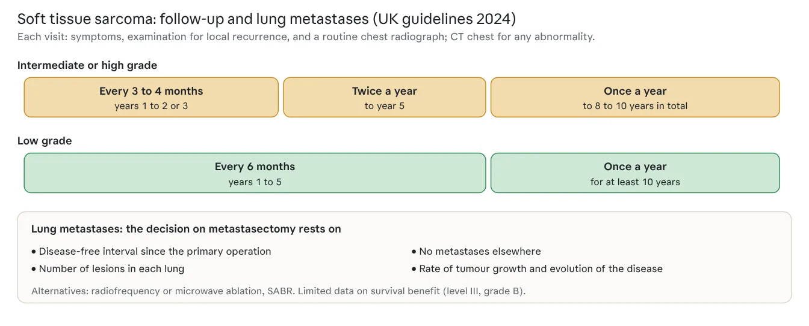
Referral, imaging and biopsy
| Point | Recommendation |
|---|---|
| Who manages | Any suspected soft tissue sarcoma goes to a specialist regional sarcoma service and its multidisciplinary team, before surgery |
| Site-specific tumours | Formal link between the sarcoma team and the site team (for us: thoracic) |
| Imaging the primary | MRI for limb and trunk; CT preferred for retroperitoneal and intrathoracic sarcoma |
| Staging | CT chest before definitive treatment in most patients, and in all intermediate and high grade tumours |
| Biopsy | Percutaneous core needle biopsy is standard; a core can under-grade the tumour |
| Size at diagnosis | Median remains over 9 cm |
| Incidence | 4,295 new soft tissue sarcomas a year in England, 2017 to 2019 |
Surgery and margins
| Point | Detail |
|---|---|
| Standard treatment | Surgery by a trained sarcoma surgeon: en bloc excision with a margin of normal tissue |
| R classification | R0: no tumour at the margin. R1: microscopic tumour at the inked margin. R2: gross residual tumour |
| Planned close margin | A planned microscopic positive margin on a preserved critical structure, with radiotherapy, has low local recurrence and differs in prognosis from an unplanned multifocal R1 |
| Unplanned excision | Re-excise the bed if adequate margins are achievable with acceptable morbidity |
| Borderline resectable, large, high grade | Consider neoadjuvant radiotherapy or chemotherapy |
Radiotherapy
| Point | Detail |
|---|---|
| When | With surgery for most intermediate and high grade tumours; can be omitted for completely resected low grade tumours and small superficial high grade tumours with wide margins |
| Dose | Post-operative 60 to 66 Gy in 1.8 to 2 Gy fractions (pre-operative dose not captured in my extract: check the paper) |
| IMRT | In the UK IMRiS trial, soft tissue fibrosis at 2 years was 11.8% after IMRT against a historical 30% after conformal radiotherapy (check the paper's grade wording before quoting) |
Follow-up
| Grade | Schedule |
|---|---|
| Intermediate or high | Every 3 to 4 months for 2 to 3 years, twice a year to 5 years, then yearly to 8 to 10 years |
| Low | Every 6 months for 5 years, then yearly for at least 10 years |
| Content | Symptoms, examination for local recurrence, routine chest radiograph; CT chest to investigate an abnormal radiograph |
| Unfit for metastasectomy or systemic treatment | Surveillance for asymptomatic metastases has little purpose |
Lung metastases and advanced disease
| Point | Detail |
|---|---|
| Pattern of relapse | Local recurrence or pulmonary metastases |
| Metastasectomy decision | Disease-free interval, no other metastases, number of lesions per lung, tumour growth and evolution of the disease |
| Alternatives | Radiofrequency or microwave ablation; SABR |
| Evidence | Local treatment of oligometastases to be considered case by case; limited data on survival benefit (III, B) |
| First-line systemic treatment | Single-agent doxorubicin (I, A); doxorubicin with ifosfamide when a higher response rate is wanted; doxorubicin with dacarbazine an option in leiomyosarcoma |
For the viva: the guideline gives selection factors for metastasectomy, not proof of benefit.
Thoracic 7: perioperative care, pleura and emergencies
Contents (16 sections)
- T3 addition: MEDIASTrial
- T4: N2-positive and locally advanced NSCLC
- T5 addition: ppoDLCO bands
- T6 additions
- T7: open, VATS and robotic access
- T8: MDT presentation template
- T9: metastasectomy and oligometastatic disease
- T10: pleural infection and empyema
- T11: pleural drains and prolonged air leak
- T12: thoracic VTE prevention
- T13: thoracic trauma and airway emergencies
- T15: resection planning and intraoperative problems
- T16: thoracic case prompts
- Sarcoma for the thoracic surgeon
- UK soft tissue sarcoma guidelines 2025: what they say
- UK bone sarcoma guidelines 2025: what they say
Thoracic topics taken from the society-integrated handbook and not covered elsewhere in these notes: N2 disease, approach and resection extent, MDT, metastasectomy, pleural infection, pneumothorax and air leak, trauma, tumours needing extended resection, and the emergency drill. The wording of evidence labels (Guideline, Consensus, Practical) is the handbook's; its 2026 sources were not checked by me.
T3 addition: MEDIASTrial
Research. Unforeseen N2 disease was 8.8% after immediate surgery and 7.7% after mediastinoscopy first; mediastinoscopy itself found disease in 8.0%. The patients had already had systematic endosonography, so the result does not apply after an inadequate EBUS. Ninth-edition reminders: N2a is single-station and N2b multistation; M1c1 is multiple metastases in one organ system and M1c2 in several.
T4: N2-positive and locally advanced NSCLC
Consensus. The 2026 AATS document gives 13 statements on potentially resectable N2 disease; STS lists a 2025 consensus on locally advanced disease and resectability.
| Step | Framework |
|---|---|
| Confirm extent | Tissue-proven nodal disease when it changes treatment; stations, burden, invasion, distant disease |
| Two separate questions | Technical resectability is not the same as a favourable multimodality strategy |
| Assess the patient | Reserve for the planned resection and systemic therapy; frailty; goals |
| Choose the sequence | MDT with oncology, radiotherapy and molecular results; N2 is not one regimen |
| Restage | After induction, reassess both disease and patient |
| Before resection | Agree achievable clearance, likely extent, risk of pneumonectomy or reconstruction, postoperative therapy |
The handbook assigns no node-count rule, dose or class because only the abstract was verified.
T5 addition: ppoDLCO bands
Guideline. ppoDLCO 60% or more is the normal-risk band for that variable; 40–59% moderate; under 40% high. Predicted value = baseline × (1 − functioning segments removed ÷ total functioning segments). Example: DLCO 70% with 3 of 19 segments removed gives about 59%. A single low value is not an absolute exclusion, and CPET is not compulsory for every value under 60%.
T6 additions
| Trial | Finding |
|---|---|
| CALGB 140503, NEJM 2023 | Sublobar resection (wedge or segmentectomy) non-inferior for disease-free survival in peripheral tumours of 2 cm or less with nodes confirmed negative at operation |
| VIOLET, NEJM Evidence 2022 | VATS gave better early physical function and recovery than thoracotomy; says nothing about robotic superiority |
| MARS 2, Lancet Respiratory Medicine 2024 | Extended pleurectomy decortication with chemotherapy was worse than chemotherapy alone in mesothelioma |
Perioperative trials (CheckMate 816, ADAURA, ALINA) are not interchangeable regimens.
T7: open, VATS and robotic access
Practical. Choose the access that allows an oncologically adequate operation safely.
Open: direct exposure for complex reconstruction and control.
VATS: evidence-supported recovery benefit; adhesions and hilar disease limit it.
Robotic: docking and emergency undocking must be rehearsed; superiority cannot be inferred from the platform.
Conversion: agree the trigger, roles, compression and communication before the case. Conversion is a safety action, not a failure.
STS has a 2025 robotic training curriculum consensus; EACTS announced 2026 cardiac robotic programme standards.
T8: MDT presentation template
Patient (symptoms, reserve, frailty, values); disease (histology or probability, full cTNM with edition, imaging dates); stage confidence (PET, brain imaging, nodal stations and adequacy); biology and sequence; operation (extent, access, margin, nodes, rescue); decision (alternatives, remaining tests, owner, review date).
T9: metastasectomy and oligometastatic disease
Consensus and research.
First decide whether the lesion is a metastasis, a new primary or benign.
Review control of the primary, disease-free interval, disease elsewhere, systemic options and achievable clearance.
Long survival in surgical series reflects selection, not proven benefit.
PulMiCC, a small randomised trial in colorectal metastases, did not show a clear survival advantage, and control patients did not have near-zero survival.
STS 2025 guidance on oligometastatic NSCLC is a different disease context from colorectal or sarcoma metastases. The STS metastasectomy consensus dates from 2019.
Consent should describe the uncertainty, not quote postoperative survival as the effect of surgery.
T10: pleural infection and empyema
Guideline (BTS).
| Finding | Action |
|---|---|
| Pleural fluid pH 7.2 or less | Drain accessible fluid |
| pH over 7.2 and under 7.4 | Look at LDH and the clinical picture; LDH over 900 IU/L with adverse features supports drainage |
| pH 7.4 or more | No indication to drain from pH alone |
| Initial drain | Small bore, 14 F or less |
| Residual infected collection | Combined tPA and DNase after a bleeding-risk review; neither drug alone |
| Failure | Recheck tube position and patency, loculation, antibiotics, abscess and fistula; early thoracic surgical input |
BTS does not recommend routine immediate surgery in place of drainage. The RAPID score predicts prognosis; it is not an indication to operate.
T11: pleural drains and prolonged air leak
Consensus (STS 2024, 13 statements, applies after lobectomy only).
| Question | Statement |
|---|---|
| Number and size | A single drain; 19–24 F after a standard lobectomy |
| Suction | Early move to water seal in place of routine prolonged suction |
| Fluid threshold | 450 mL or less in 24 hours of non-bloody, non-chylous fluid is reasonable for removal |
| Other conditions | Air leak, lung expansion, symptoms and the nature of the fluid |
| Digital systems | Use trends and local criteria; no universal flow cut-off |
| Imaging | By indication, not a daily chest radiograph by habit |
Persistent leak: separate parenchymal leak from bronchial disruption, follow the trend, assess the space and infection. Ambulatory drainage, pleurodesis, bronchoscopic valves or reoperation depend on the mechanism.
T12: thoracic VTE prevention
Guideline (ESTS and AATS 2022; mostly conditional recommendations on low-certainty evidence).
Parenteral pharmacological prophylaxis with mechanical methods, in preference to none.
Extended prophylaxis for 28–35 days is suggested at moderate or high thrombotic risk, not after every minor procedure.
Parenteral agents are favoured over DOACs, which are suggested only within trials.
Screening recommendations apply to pneumonectomy and oesophagectomy, not every lobectomy.
At discharge, document risk and bleeding assessment, agent, duration and who reviews complications.
T13: thoracic trauma and airway emergencies
Guideline.
Treat tension physiology and life-threatening bleeding without waiting for CT.
Drain output thresholds support the decision to operate but do not replace assessment; a blocked drain with low output does not exclude massive retained bleeding.
Persistent large air leak with non-expansion: check the system, then think of major bronchial injury and bronchoscope.
Retained haemothorax: reassess and clear in good time.
Agree the airway plan (oxygenation, lung isolation, bronchoscopy, surgical rescue) with senior anaesthetic and thoracic staff. No blind repeated airway instrumentation, and no clamps into an injury that cannot be seen.
T15: resection planning and intraoperative problems
Practical.
| Problem | Response |
|---|---|
| Vascular bleeding | Say so, controlled compression, senior help, timely conversion; no blind clamping |
| Air leak | Parenchymal or bronchial? Inspect expansion and the staple line; test under controlled conditions |
| Bronchial concern | Define injury, margin and viability with senior help; reconstruct in preference to unplanned escalation |
| Unexpected pleural or nodal disease | Get pathology and stage, then revisit the intent of the operation |
| After induction therapy | Reassess anatomy, reserve and toxicity; the pre-treatment plan may no longer hold |
Prompt: dense hilar node with an arterial injury. State who compresses, who opens, who gets control and who tells the anaesthetist.
T16: thoracic case prompts
Small peripheral tumour with a low DLCO: compare margin, nodes and functional cost of sublobar and lobar resection and non-surgical options.
Empyema not improving: reassess drainage, source control, microbiology, fistula and fitness for surgery.
Large leak with fever after resection: exclude bronchial disruption and pleural infection first.
Unexpected pleural deposits: get a diagnosis and stage, then reconsider the curative operation.
Discharge: drain plan, VTE plan, analgesia, mobilisation, warning symptoms, pathology and MDT follow-up, named contact.
Sarcoma for the thoracic surgeon
The thoracic surgeon meets sarcoma in three ways: lung metastases from a sarcoma elsewhere, a primary sarcoma of the chest wall, and the rare primary sarcoma inside the chest. All three belong to a specialist sarcoma MDT, and nothing should be biopsied or excised before that MDT has seen the imaging.
Rules that apply to all of it
Refer any suspected sarcoma to the regional sarcoma service before biopsy; this is the first recommendation of the UK soft tissue sarcoma guidelines (British Journal of Cancer 2025).
Biopsy is by image-guided core needle, with the track placed where it can be excised with the specimen. An unplanned excision (the "whoops" operation) contaminates planes and worsens local control.
Grade (FNCLCC or Trojani 1 to 3), size, depth and histological subtype drive behaviour more than TNM stage does.
Staging is CT chest for most confirmed sarcomas and all intermediate and high-grade tumours; a chest X-ray is enough for very low-risk subtypes such as atypical lipomatous tumour. Add abdomen and pelvis for myxoid liposarcoma, leiomyosarcoma and retroperitoneal primaries; regional nodes matter only for the subtypes that spread to them (synovial, clear cell, epithelioid, angiosarcoma, rhabdomyosarcoma).
Sarcoma spreads by blood to the lung first. Nodal dissection is not part of a sarcoma operation unless nodes are involved.
Pulmonary metastasectomy
There is no randomised trial in sarcoma. PulMiCC was colorectal and does not transfer directly, because sarcoma has weaker systemic options and lung-only relapse is the usual pattern. Practice rests on registries and case series.
| Factor | Favourable | Unfavourable |
|---|---|---|
| Resection | Complete (R0) | Incomplete: the strongest adverse factor |
| Disease-free interval | Over 12 months | Under 12 months |
| Number | One, or a few | Three or four and more |
| Largest lesion | 2 cm or less | Over 2 cm |
| Grade and histology | Low grade; osteosarcoma responding to chemotherapy | Grade 3; synchronous disease |
| Extrathoracic disease | None, primary controlled | Present |

Selection criteria are still Thomford's: primary controlled, no extrathoracic disease that cannot be treated, all lung disease resectable, and enough lung left.
Five-year survival after complete resection is about 30 to 45% in modern series; the International Registry of Lung Metastases reported 32% for sarcoma. Survival falls with number: 43% for one metastasis, 34% for two or three, 27% for four or more in one large series.
Most patients relapse in the lung again. Repeat metastasectomy is reasonable when the interval is long and resection can again be complete; five-year survival after repeat surgery is 30 to 40%, and up to 60% in selected series.
Technique: parenchyma-sparing wedge or precision excision, because the patient is likely to need another operation. Lobectomy only for central lesions. Lymphadenectomy adds little.
Open or VATS: sarcoma metastases are often small, multiple and subpleural, and palpation finds nodules CT misses. Thin-slice CT within four weeks is mandatory. VATS is accepted for few, peripheral lesions; many sarcoma units still prefer open palpation for osteosarcoma and for multiple lesions. No trial shows that removing the extra palpable nodules improves survival.
Bilateral disease: staged thoracotomies or VATS, or clamshell or sternotomy in the young.
Osteosarcoma and Ewing sarcoma: metastasectomy is part of curative-intent treatment alongside chemotherapy, including for synchronous disease, and persistent nodules after chemotherapy should be resected.
Alternatives for small, few lesions in poor surgical candidates: SABR and thermal ablation, with local control over 85 to 90% in series; no comparison with surgery.
Presentation with spontaneous pneumothorax in a patient with sarcoma, especially osteosarcoma, angiosarcoma or synovial sarcoma, means cavitating subpleural metastases until shown otherwise.

Indeterminate nodules at staging
Small nodules on the staging CT of a new sarcoma are common and most are benign. Features favouring metastasis are size over 5 mm, multiplicity, round shape, peripheral and lower-zone position, and calcification or ossification in osteosarcoma or chondrosarcoma. The usual plan is to treat the primary and repeat the CT at three months, not to delay limb surgery for a lung biopsy.
Primary chest wall sarcoma
| Tumour | Who and where | Treatment |
|---|---|---|
| Chondrosarcoma | The commonest primary malignant chest wall bone tumour; adults; costochondral junction and sternum | Surgery alone; resistant to chemotherapy and radiotherapy |
| Ewing sarcoma (Askin tumour) | Children and young adults; rib with soft-tissue mass and often effusion | Chemotherapy first, then surgery, radiotherapy or both |
| Osteosarcoma | Young, or older after radiotherapy or Paget disease | Chemotherapy, surgery, chemotherapy |
| Soft tissue sarcoma (undifferentiated pleomorphic, liposarcoma, synovial, MPNST) | Adults | Wide excision with radiotherapy before or after for high grade, deep or over 5 cm |
| Radiation-associated sarcoma, including angiosarcoma after breast radiotherapy | Years after treatment | Wide excision; poor prognosis |
| Desmoid fibromatosis | Not a sarcoma; locally aggressive, does not metastasise | Active surveillance first; surgery is no longer first line |
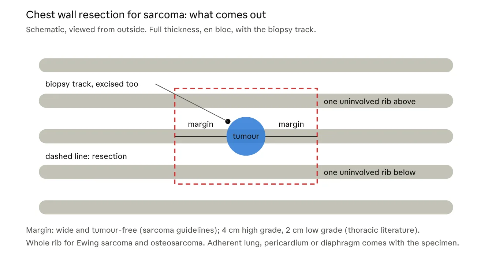
Never enucleate a cartilage tumour of a rib. Any cartilaginous rib lesion over 4 cm, or any in the sternum, is treated as chondrosarcoma, and core biopsy under-grades them.
Margin: the textbook figure is 4 cm for high-grade tumours, taken as 2 cm or more for low grade, with full-thickness en bloc resection including one uninvolved rib above and below, the whole rib for Ewing or osteosarcoma because of marrow spread, the biopsy track, and any adherent lung, pericardium or diaphragm. The evidence for 4 cm is one retrospective series; what the pathologist reports and what predicts recurrence is a clear (R0) margin, and sarcoma units now aim for wide R0 without a fixed number.
In chondrosarcoma, an intralesional or marginal excision gives local recurrence in most patients; wide excision at a specialist centre gives ten-year survival over 90% for grade 1.
Reconstruction: skeletal stabilisation for anterior or lateral defects over 5 cm or more than three ribs; posterior defects under the scapula up to 10 cm can be left, unless the scapular tip (below the fourth rib) would catch. Mesh (polypropylene, PTFE), methyl methacrylate sandwich, or titanium bars; biological mesh in contaminated or irradiated fields. Cover with muscle flap: latissimus dorsi, pectoralis major, serratus, rectus, or omentum with skin graft. Plan the flap with plastic surgery before the resection.
Complications to quote: respiratory in about a quarter, wound and prosthesis infection in about 5 to 10%, and prosthesis removal does not usually cause flail once the scar has set.
Primary sarcoma inside the chest
Pulmonary artery intimal sarcoma: mimics chronic thromboembolic disease. Suspect it when the filling defect expands the artery, enhances, is PET-avid, extends against flow into the valve or right ventricle, or does not respond to anticoagulation. Treated by pulmonary endarterectomy or pneumonectomy at a pulmonary hypertension surgical centre; median survival is about one to two years.
Primary pulmonary sarcoma (synovial, leiomyosarcoma, undifferentiated): rare; exclude a metastasis and sarcomatoid carcinoma first. Anatomical resection without routine systematic nodal dissection.
Cardiac sarcoma: angiosarcoma of the right atrium is the commonest; presents with tamponade or obstruction, usually metastatic at diagnosis.
Mediastinal sarcoma and malignant peripheral nerve sheath tumour in neurofibromatosis type 1: complete resection where possible.
Solitary fibrous tumour of the pleura: most are benign; resect with a clear margin and follow for years because late recurrence occurs; Doege-Potter hypoglycaemia is covered in the tab Thoracic 5.
Systemic treatment, in one paragraph
First-line treatment for advanced soft tissue sarcoma is doxorubicin, alone or with ifosfamide when response is needed for symptoms or to enable surgery. Later lines are chosen by subtype: trabectedin for leiomyosarcoma and liposarcoma, gemcitabine and docetaxel, pazopanib for non-adipocytic tumours, eribulin for liposarcoma. Checkpoint inhibitors have a limited role, mainly in undifferentiated pleomorphic sarcoma and alveolar soft part sarcoma. GIST is treated with imatinib and is managed separately. Perioperative chemotherapy for localised adult soft tissue sarcoma is not standard and is offered selectively to high-risk patients.
Status: the UK guideline (British Journal of Cancer 2025) was read on 17 November 2026 and is summarised in the next section; both halves of the paper were read. The UK bone sarcoma guideline was read the same day and follows it. Prognostic factors and survival figures for metastasectomy were confirmed against published series (review, single-centre series, repeat metastasectomy). The 4 cm margin is from a chest wall tumour review. Reconstruction thresholds, complication rates, the intrathoracic sarcoma section and systemic treatment are from memory.
UK soft tissue sarcoma guidelines 2025: what they say
Hayes and colleagues, British Journal of Cancer 2025;132:11-31, the British Sarcoma Group consensus. It has no section on thoracic or chest wall sarcoma; the general recommendations apply. Evidence level and grade are given where the paper gives them.
| Area | Recommendation |
|---|---|
| Referral | Unexplained lump increasing in size: direct-access ultrasound within 2 weeks. Suspicious or uncertain ultrasound: suspected cancer pathway. All suspected sarcoma managed through a specialist sarcoma MDT |
| Imaging of the primary | MRI for limb, trunk and pelvis; CT for retroperitoneal and intrathoracic tumours |
| Biopsy | Percutaneous core, several cores, specialist pathology review. Fine needle aspiration not recommended. Excision biopsy only for subcutaneous lesions under 2 cm that are indeterminate on imaging |
| Chest staging | CT chest for most, and for all intermediate and high grade, before definitive treatment. Chest X-ray can suffice for very low-risk subtypes or frail patients |
| Other staging | CT abdomen and pelvis especially for myxoid liposarcoma, leiomyosarcoma and high-grade lower limb tumours. Nodal imaging for synovial, clear cell, epithelioid and angiosarcoma. Brain imaging considered for alveolar soft part and clear cell sarcoma. PET-CT not routine |
| Grade | FNCLCC, three grades; core biopsy can under-grade |
| Surgery | En bloc excision with tumour-free margins by a sarcoma surgeon (II, A). A close R0 margin may be adequate with radiotherapy. Planned marginal or R1 margin against a critical structure is acceptable with radiotherapy for intermediate and high grade (IV, B) |
| Unplanned excision | Stage fully, MRI the bed, re-excise if feasible |
| Radiotherapy | Standard for most intermediate and high-grade tumours (I, A). Pre-operative 50 Gy in 1.8 to 2 Gy fractions, surgery 4 to 8 weeks later; post-operative 60 to 66 Gy. Pre-operative gives better long-term function and more acute wound complications. Five-fraction pre-operative regimens (25 to 30 Gy) are emerging. A post-operative boost for a positive margin is not supported |
| Perioperative chemotherapy | Not routine (II, B). Consider in high-risk patients, using the Sarculator nomogram: predicted five-year survival under 60% is the group most likely to benefit. Three cycles of neoadjuvant doxorubicin and ifosfamide gave five-year survival 66% against 55% for histotype-tailored treatment |
| Advanced disease, first line | Single-agent doxorubicin (I, A). Adding ifosfamide raises response and progression-free survival but not overall survival (II, B); use it when response matters, which includes making metastases resectable. Doxorubicin with dacarbazine is an option for leiomyosarcoma |
| Later lines | Ifosfamide (I, B); trabectedin, gemcitabine with docetaxel or dacarbazine (II, B); pazopanib; paclitaxel or liposomal doxorubicin for angiosarcoma; NTRK inhibitors for fusion-positive tumours. Eribulin is not funded in England for sarcoma. Median survival in advanced disease is 12 to 18 months |
| Follow-up | Intermediate and high grade: every 3 to 4 months for 2 to 3 years, six-monthly to year 5, then yearly, 8 to 10 years in all. Low grade: six-monthly for 5 years then yearly. Examination and routine chest X-ray; CT chest to investigate an abnormality |
Lung metastases in the guideline
The decision rests on the disease-free interval, absence of other metastases, the number of lesions in each lung, growth rate and how the disease has evolved.
With no significant disease-free interval, repeat the CT (or PET-CT) at three months. If no new lesions have appeared and the disease is operable, surgery is usually recommended. This is the "test of time" and is the practical answer for synchronous or early metastases.
Ablation (radiofrequency or microwave) and SABR are accepted alternatives; for oligometastatic disease, surgery, radiotherapy or ablation are considered case by case (III, B).
Long-term survivors are 20 to 40% of those operated on; the guideline states that a survival benefit has not been shown prospectively.
The guideline gives no numerical limit on the number of metastases and no stance on open against VATS.
Points relevant to the chest
Radiation-induced sarcoma is most often undifferentiated pleomorphic sarcoma, angiosarcoma or leiomyosarcoma, and does worse than sporadic sarcoma matched for age, size and grade. After breast radiotherapy, wide clear margins matter more because further radiotherapy is difficult, and completion mastectomy may be needed.
Breast sarcoma and malignant phyllodes: no axillary staging; wide excision; adjuvant radiotherapy considered for tumours over 5 cm or close or positive margins.
Solitary fibrous tumour: complete resection with negative margins; radiotherapy and anti-angiogenic tyrosine kinase inhibitors have activity.
Desmoid fibromatosis: systemic options listed are sorafenib, pazopanib, nirogacestat and liposomal doxorubicin.
Retroperitoneal sarcoma is confined to high-volume centres (about 24 primary resections a year); pre-operative radiotherapy did not improve survival overall in the randomised trial (STRASS).
Where this changes the section above
Follow-up in the UK guideline is by chest X-ray, with CT for abnormalities; many thoracic units and some regional protocols use CT, so say which you mean.
The guideline's margin standard is tumour-free en bloc excision, with no fixed distance. The 4 cm figure in the chest wall section comes from the thoracic literature, not from this guideline.
Bone sarcomas (chondrosarcoma, osteosarcoma, Ewing) are outside this guideline and have their own British Sarcoma Group document, summarised below.
Rest of the soft tissue guideline
| Tumour | Recommendation |
|---|---|
| Radiation-induced angiosarcoma of the breast or chest wall | Aggressive, with high local and distant relapse. Experienced surgeon, resurfacing plastic procedures to reach wide margins; induction chemotherapy considered when surgery would be excessively morbid or futile (IV, C) |
| Large or high-grade breast sarcoma, malignant phyllodes | Conservation may not be possible; reconstruction delayed, not immediate; post-operative radiotherapy for large or high-grade tumours with close or positive margins (III, B). Sarcomatous change in a metaplastic carcinoma is managed as breast cancer |
| Dermatofibrosarcoma protuberans | Wide excision; Mohs at critical sites (IV, C); radiotherapy for involved margins that cannot be re-excised (IV, A); imatinib before surgery for borderline resectable disease or for palliation |
| Atypical fibroxanthoma and pleomorphic dermal sarcoma | Atypical fibroxanthoma is cured by excision and metastasises in under 1%. Pleomorphic dermal sarcoma metastasises in about 16%, mainly to lung and within three years; baseline chest X-ray |
| Lipoma and atypical lipomatous tumour | MRI cannot reliably tell them apart; core biopsy for MDM2 amplification if unsure (IV, B). Complete marginal excision without wide margins (IV, B) |
| Desmoid fibromatosis | Surveillance first (III, B). Test CTNNB1 and think of familial adenomatous polyposis. Systemic treatment for symptomatic progression (III, B): sorafenib, pazopanib, nirogacestat, liposomal doxorubicin, low-dose vinorelbine. Radiotherapy or ablation at critical sites (IV, C). Chest wall desmoids follow this, so resection is no longer the first move |
| Tenosynovial giant cell tumour | Surgery for localised disease; CSF-1 inhibitors for diffuse symptomatic disease (I, B) |
UK bone sarcoma guidelines 2025: what they say
Gerrand and colleagues, British Journal of Cancer 2025;132:32-48, the British Sarcoma Group consensus, which covers chondrosarcoma, osteosarcoma, Ewing sarcoma, chordoma and giant cell tumour. A thoracic surgeon, Kalkat, is among the authors, and it has short sections on chest wall surgery and pulmonary metastasectomy. The visible text gives no formal evidence grades.
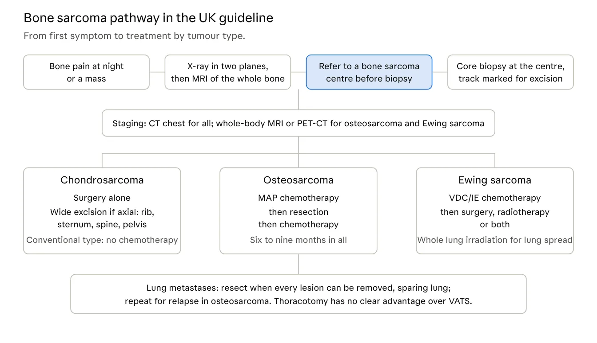
Referral, imaging and biopsy
Bone pain at night or a palpable mass needs an X-ray in two planes; a normal X-ray does not exclude a bone sarcoma, and persistent pain needs MRI or referral.
Under 40 with a suspected primary bone tumour: urgent referral to a bone sarcoma centre. Over 40: work up for metastatic carcinoma and myeloma first (CT chest, abdomen and pelvis, whole-skeleton imaging, myeloma screen), but a proven solitary bone lesion is still referred.
Refer before biopsy. Biopsy is done at the bone sarcoma centre after cross-sectional imaging and with the operating surgeon, so the track can be excised; mark the track. Core biopsy is less accurate for grading cartilage tumours. Frozen section is unreliable.
Do not perform laminectomy or decompression for a suspected primary spinal tumour unless there is cord compression needing emergency surgery; intralesional surgery usually prevents later complete removal.
MRI of the whole bone and compartment. Staging chest CT for every confirmed case; indeterminate lung nodules usually get an interval scan. Whole-body MRI or PET-CT for osteosarcoma and Ewing sarcoma; bone marrow biopsy is no longer required in Ewing.
Chondrosarcoma
Now the commonest primary malignant bone tumour, presenting at 30 to 60 years.
Atypical cartilaginous tumour in a limb can be observed, or curetted if it progresses. This does not apply to the axial skeleton: all pelvic and axial chondrosarcomas, which includes ribs, sternum and spine, and all higher-grade tumours need wide-margin excision.
Dedifferentiated chondrosarcoma: complete excision if feasible; metastatic risk is high; osteosarcoma-type chemotherapy may be considered, with poor survival.
Radiotherapy is for unresectable disease, close or positive margins, or palliation.
Local recurrence: further wide excision. Oligometastatic lung disease: surgery or ablation may be considered.
Skeletal metastases are rare unless the tumour is dedifferentiated.
Osteosarcoma
Neoadjuvant chemotherapy, resection, adjuvant chemotherapy over six to nine months. Chemotherapy raised survival from 10 to 20% with surgery alone to about 60%.
MAP (high-dose methotrexate, doxorubicin, cisplatin) up to age 40; doxorubicin and cisplatin alone for older patients. Echo and audiogram before starting. Changing adjuvant treatment according to histological response is not recommended.
Mifamurtide may be offered under 30 with resected localised disease.
Metastatic at presentation: same chemotherapy, provided every site can be resected. About 30% of patients with primary metastatic disease, and over 40% of those reaching complete surgical remission, are long-term survivors.
Relapse: under a third survive long term. Resect if complete clearance is possible. Repeated thoracotomies are often warranted; over a third of those reaching a second surgical remission survive beyond five years. Inoperable metastases are usually fatal. Ifosfamide and etoposide have the highest response rates.
Ewing sarcoma
Under 10% survive five years with local treatment alone; with chemotherapy, almost 80% for localised disease and 20 to 40% for metastatic.
Interval-compressed VDC/IE (two-weekly) is first line and is superior to VIDE.
Local treatment must cover every structure in the pre-chemotherapy volume, by surgery, radiotherapy or both, and is decided through the National Ewing MDT.
Post-operative radiotherapy is indicated for R1 or R2 margins, incomplete removal of the pre-chemotherapy volume, 90% necrosis or less, and sites with harder local control, which the guideline lists as spine, pelvis, sacrum, and rib with malignant pleural effusion.
About 26% have metastases at presentation. Lung or pleural metastases do far better than bone or marrow (five-year relapse-free survival 55% against under 21%). Whole lung irradiation after VDC/IE is indicated if disease is not progressing; high-dose busulfan and melphalan adds nothing for lung metastases treated this way.
Indeterminate lung lesions do well and are treated with curative intent.
Relapse: median survival about a year; high-dose ifosfamide was the most effective regimen in rEECur.
Pulmonary metastasectomy in the bone guideline
Considered for oligometastatic disease, aiming to remove every lesion seen on high-resolution CT while preserving lung.
Thoracotomy has traditionally been preferred, but the guideline states there is no clear advantage over thoracoscopic resection.
Resection of suspicious lesions after primary treatment, once the primary is controlled, should be considered for diagnosis and prognosis as well as treatment.
Favourable features: longer disease-free interval, fewer lesions, favourable histology.
Giant cell tumour of bone: lung metastases are usually not resected. Chordoma: oligometastases may be treated by surgery, ablation or SABR in selected cases.
Chest wall surgery in the bone guideline
Resection may take ribs, sternum, vertebrae and overlying muscle and skin, and needs thoracic, spinal and plastic surgeons together.
Reconstruction with mesh, cement or titanium and soft tissue cover.
Prehabilitation, enhanced recovery and intensive post-operative physiotherapy are recommended.
No margin distance is given for the chest wall. The only figure in the guideline is for the pelvis, where a 2 mm margin is associated with lower local recurrence.
Other bone tumours
| Tumour | Recommendation |
|---|---|
| Chordoma | En bloc resection with a margin of 1 mm or more where feasible; high-dose radiotherapy, protons or carbon ions after close or positive margins or for high sacral tumours; no standard systemic treatment; MRI at 6 and 12 months then yearly to 10 years |
| Giant cell tumour of bone | Exclude a brown tumour with serum calcium. En bloc excision recurs less than curettage. Denosumab for unresectable disease or for up to six months before surgery; most recur about nine months after stopping; curettage after denosumab recurs more. No benefit in malignant giant cell tumour |
| Undifferentiated pleomorphic and spindle cell sarcoma of bone | Treat as osteosarcoma |
| Adamantinoma | Complete excision |
Radiotherapy and protons
Outside Ewing sarcoma, radiotherapy is used when surgery is not possible or for selected high-risk cases after surgery.
Proton or carbon ion therapy allows dose escalation near the cord and other critical structures and lowers late toxicity; the two NHS proton centres are The Christie and UCLH.
Follow-up
Standard follow-up is clinical review with chest X-ray and X-ray of the primary site: every 2 to 4 months for 3 years, six-monthly in years 4 and 5, then yearly.
Chest surveillance by grade: high grade three-monthly for 2 years, six-monthly to 5 years, yearly to 10; intermediate three-monthly for 2 years then yearly to 10; low grade yearly to 5.
A trial showed no benefit from more frequent cross-sectional imaging, which is the reason chest X-ray and not CT is the default.
Late effects clinic; secondary leukaemia appears 2 to 5 years after chemotherapy; Li-Fraumeni families need their own surveillance.
What the two guidelines change in the sarcoma section above
Open or VATS metastasectomy: the bone guideline says there is no clear advantage for thoracotomy. The preference for open palpation in osteosarcoma is custom, not guideline.
Rib and sternal cartilage tumours: the guideline's rule is that every axial chondrosarcoma gets wide excision; observation and curettage apply only to limb lesions.
Margin: neither guideline gives 4 cm. Quote it as the traditional thoracic figure and say that the sarcoma guidelines ask for a wide, tumour-free margin.
Ewing sarcoma of a rib with pleural effusion is singled out as needing post-operative radiotherapy.
Status: both guidelines were read from the journal pages on 17 November 2026. The soft tissue paper was read in two parts. The bone paper was read to about the end of its follow-up section; the remainder is likely tables and references, and Table 2 (regimen doses), radiotherapy doses and the whole lung irradiation dose were not seen.
MDT cases and teaching points
Contents (14 sections)
- How to present a case
- Fitness for surgery: how the guidance evolved
- Case 1: right lower lobe tumour with a contralateral ground-glass nodule
- Case 2: cavitating right upper lobe lesion after CABG
- Case 3: left upper lobe tumour with N3 nodes
- Case 4: 14 mm upper lobe nodule in a never-smoker
- Case 5: middle lobe lesion near the heart
- Case 6: 65 mm tumour, node-negative on EBUS
- Case 7: cystic lesion with a mural nodule, and a second lesion
- Case 8: gas transfer and KCO
- Case 9: 11 mm lower lobe tumour, SABR or surgery
- Case 10
- Further worked cases from the course pack
- Where my notes differ from published sources
From my notes taken during the thoracic day: the cases discussed and the faculty's points that are not elsewhere in this doc. Wording marked "as taught" is the faculty's; the last section lists where it differs from published sources.
How to present a case
- CT: say whether it is contrast-enhanced and in which phase, then go through axial, coronal and sagittal planes on lung, mediastinal and bone windows. Sagittal is the best plane for the middle lobe and the fissures.
- PET: describe avidity against mediastinal blood pool (none, faint, moderate, intense).
- Stage: measure, then give T, N and M.
- Fitness: FVC, FEV1, the ratio and TLCO, then predicted postoperative values.
- A mass is 3 cm or more; a nodule is smaller.
- Stage the whole abnormality, and biopsy the site that proves the highest stage.
- NICE: obtain tissue before surgery where possible.
Fitness for surgery: how the guidance evolved
| Guideline | Contribution |
|---|---|
| BTS, Thorax 2001 | First UK fitness guidance |
| BTS and SCTS, Thorax 2010 | Tripartite assessment |
| NICE NG122, 2019, updated 2024 | Current UK standard |
| ERS/ESTS, 2025 | Transfer-factor tiers, VE/VCO₂ slope, risk-stratified consent |
The tripartite assessment
| Question | Tool |
|---|---|
| Risk of operative death | Thoracoscore; STS risk calculator for pulmonary resection |
| Risk of a perioperative cardiac event | Cardiac risk assessment as in NICE NG122 |
| Risk of postoperative breathlessness | Predicted postoperative FEV1 and transfer factor; surgery can still be offered below 30% if the patient accepts the effect on quality of life |
Exercise testing, as taught
- Low-tech: six-minute walk (over 400 m; below that, expect complications), incremental shuttle walk, stair climb, or simply walking the patient down the corridor.
- High-tech: VO₂ max. Below 12 mL/kg/min is not safe, above 15 is acceptable, and between is a grey area. Smartwatch estimates are now seen in clinic but are not a substitute for a formal test.
Optimisation before surgery
- Inhaler therapy.
- Smoking cessation, whenever the patient presents; do not delay surgery for it.
- Pulmonary rehabilitation or prehabilitation.
Case 1: right lower lobe tumour with a contralateral ground-glass nodule
- Family history of tuberculosis; PET-positive right lower lobe tumour, T2 N0 M0, with a ground-glass nodule in the left upper lobe.
- The question is synchronous primary or not: a ground-glass nodule in the other lung is far more likely a separate adenocarcinoma-spectrum lesion than a metastasis, and should not upstage the dominant tumour.
- Two solid tumour nodules in the same lobe would be T3.
- Treat the dominant lesion and keep the ground-glass nodule under surveillance.
Case 2: cavitating right upper lobe lesion after CABG
- Previous CABG, on rivaroxaban, 18 pack-years; FVC 72%, FEV1 69%, TLCO 52%.
- Cavitating right upper lobe lesion, PET-active; CT-guided biopsy showed squamous cell carcinoma.
- A 30 mm lesion goes to staging EBUS even without nodal avidity (size over 3 cm is itself an indication).
- Benign resection rate across the UK is about 5%.
- Left upper lobe tumours after CABG: a patent left internal mammary graft is often adherent to the lobe and has to be dissected off. Check its course on CT and plan for it.
- Anticoagulation needs a perioperative plan.
BTS nodule pathway as taught (there is a BTS app)
- Non-calcified nodule on CT. Clearly benign features (hamartoma, perifissural nodule), under 5 mm, or patient unfit for any treatment: discharge.
- Otherwise look for previous imaging and work up the risk.
- From 8 mm: Brock score. Under 10%: surveillance. Over 10%: PET-CT and Herder; over 70% goes to surgery.
- Volume doubling time under 400 days is likely malignant.
- Sub-solid nodule with PET in keeping with tumour: on-table frozen section, or biopsy; SABR is the alternative.
Brock uses nodule characteristics (size, count, type, location) and patient characteristics. Beware over-investigation from screening.
Case 3: left upper lobe tumour with N3 nodes
- Current smoker, factory worker. Spiculated left upper lobe tumour, multiple PET-avid lesions, N3 nodes, clear brain scan.
- First question on the CT: are the high nodes above or below the clavicle? Station 1 is N3.
- Biopsy choice: EBUS or ultrasound-guided biopsy of a neck node. The neck node is quicker, safer and proves N3.
- BTS: the staging CT covers neck, thorax and abdomen.
- Reference shown: Radiology Assistant TNM classification.
TNM 9 descriptors as taught
| Category | Size | Invasion |
|---|---|---|
| T1 | 3 cm or less | Surrounded by lung or visceral pleura; lobar or more peripheral bronchus |
| T2 | Over 3 to 5 cm | Main bronchus without the carina; visceral pleura |
| T3 | Over 5 to 7 cm | Parietal pleura, chest wall, pericardium, phrenic nerve, azygos vein |
| T4 | Over 7 cm | Mediastinum, thymus, trachea, carina, recurrent laryngeal nerve, vagus nerve, oesophagus, diaphragm |
- N0 none; N1 ipsilateral hilar and intrapulmonary; N2 ipsilateral mediastinal; N3 contralateral or supraclavicular. M1 distant metastasis.
- An 11 mm tumour is T1b (10 mm or less is T1a). A 65 mm tumour is T3 and, node-negative, stage IIB.
Nodal map rules as taught
- Station 1: above the mediastinum, so N3.
- Stations 2 to 9: within the mediastinum, so N2 if ipsilateral.
- Stations 10 to 14: hilum and lung, so N1 if ipsilateral.
- Station 4R extends across the whole front of the trachea to its left border; pretracheal and precarinal nodes are 4R. For a right-sided tumour, 4L is therefore N3.
- 4R becomes 10R at the lower margin of the azygos vein; 4L becomes 10L at the upper border of the left pulmonary artery.
- Station 2 lies above the aortic arch and brachiocephalic vein; station 7 at the carinal division; station 6 is para-aortic.
- Station 10 against 11: station 10 lies on the main bronchus and primary trunk, station 11 beyond the first division.
- Describe bulky nodes as bulky; it changes resectability.
Which procedure reaches which station
| Procedure | Stations |
|---|---|
| Mediastinoscopy | 2R, 2L, 4R, 4L, 7, and the proximal 10R and 10L |
| EBUS with EUS | 2R, 2L, 3P, 4R, 4L, 7, 8, 10, 11; also the left adrenal and liver |
| VATS, left | 5, 6, 7, 8, 9, 10, 11 |
| VATS, right | 2R, 4R, 7, 8, 9, 10, 11 |
| Image-guided needle | Station 1, supraclavicular fossa, axilla, metastatic sites |
| Thoracotomy, right | 2, 4, 7, 8, 9, 10 to 14 |
| Thoracotomy, left | 5, 6, 7, 8, 9, 10 to 14 |
| PET | Shows all stations but is not tissue |
EBUS: what it cannot do
- It gives cytology, not histology. The needle is passed in and out of the node under suction.
- Lymphoma needs architecture, so cytology is inadequate.
- Cell numbers may be too low for EGFR and PD-L1 testing; then repeat EBUS, or get a CT-guided core or a surgical biopsy.
- Negative predictive value about 0.85–0.9 for EBUS and the same for mediastinoscopy; about 94% for the two combined.
- NICE: mediastinoscopy when EBUS is negative but the node is PET-positive.
- Anthracosis (carbon pigment in nodes and bronchial mucosa) makes nodes PET-avid and is a true negative.
Chamberlain procedure
- Anterior mediastinotomy through the second or third intercostal space, with excision of the costal cartilage; on the left it reaches stations 5 and 6 in the aortopulmonary window.
- Higher risk than mediastinoscopy and now rarely done; VATS has replaced it.
Case 4: 14 mm upper lobe nodule in a never-smoker
- Lifelong never-smoker, performance status 2, recent intravenous antibiotics. 14 mm right upper lobe nodule, not spiculated, faint PET uptake.
- Herder 13% (use the app): in the 10–70% band, so uncertain and needs tissue. Under 10% follow; over 70% treat as cancer.
- Biopsy was done and complicated by pneumothorax.
- Frozen section would have been difficult: the lesion was buried in the hilum near vessels.
- PET misregistration: respiratory motion can place uptake on the wrong structure, particularly near the diaphragm and hilum. Check the fused images against the CT.
CT-guided biopsy, as taught
- Pneumothorax in about 1 in 4; about 1 in 20 need intervention.
- Risk follows the depth of aerated lung crossed. With little lung in the path, or a larger tumour, the lesion tamponades the tract.
- The tract can be sealed on withdrawal.
Case 5: middle lobe lesion near the heart
- 22 pack-years; middle lobe tumour lying against the heart, a difficult percutaneous target.
- Sequence: Brock and Herder first, then CT-guided biopsy if feasible; otherwise navigational or robotic bronchoscopy; otherwise resection with frozen section.
Pathology as taught
| Type | Share | Features | Markers |
|---|---|---|---|
| Adenocarcinoma | 40–50% | Peripheral; glandular differentiation, mucin; acinar, papillary, lepidic, mucinous patterns. Lepidic carries a better prognosis than acinar | TTF-1 and Napsin-A positive. Test EGFR, ALK, ROS1 |
| Squamous cell carcinoma | 20–25% | Smoking, central large airways (think sleeve lobectomy); keratinisation, intercellular bridges; arises through metaplasia, dysplasia and carcinoma in situ; paraneoplastic syndromes | p40 and CK5/6 positive; p40 more specific than p63 |
| Small cell carcinoma | About 10% | Smoking; small cells, little cytoplasm, nuclear moulding, high mitotic rate | Synaptophysin, chromogranin, INSM1, CD56; high Ki-67 |
| Carcinoid | 1–2% | Typical: well differentiated, low grade, endobronchial, salt-and-pepper chromatin. Atypical: more mitoses or necrosis | Neuroendocrine markers |
- TTF-1 helps separate lung from breast and other primaries but can be negative in a lung primary.
- A squamous tumour in the lung raises the question of a head and neck primary.
- Mitotic rate counts cells in mitosis; Ki-67 is the proportion of cells cycling. Under 1% is slow-growing; over 80% is rapid turnover, as in small cell.
Case 6: 65 mm tumour, node-negative on EBUS
- Found on CT for chest pain. Solid core with surrounding ground-glass, no nodes, EBUS negative: T3 N0, stage IIB. Invasion of mediastinal structures would make it T4.
- As taught: measure the whole lesion, not only the solid component.
- Options discussed: neoadjuvant or perioperative chemo-immunotherapy then surgery; chemoradiotherapy or radical radiotherapy if not resectable. Too large for SABR (the limit is 5 cm in guidance, about 6 cm in practice as taught).
Neoadjuvant pathway points
- CheckMate 816: stage IB–IIIA; surgery was performed in 83.2% against 75.4%.
- The target population as taught: tumours over 4 cm, or node-positive disease up to single-station N2 (N2a).
- KEYNOTE-671: stage II–IIIB, perioperative pembrolizumab.
- EGFR-positive tumours respond poorly to immunotherapy: surgery, then adjuvant osimertinib.
- EGFR-negative: neoadjuvant nivolumab with chemotherapy, then surgery.
- "Nodal disease is systemic disease": surgery alone removes it without giving the survival advantage, so systemic treatment has to be part of the plan.
Surgery after chemo-immunotherapy (Mike Shackcloth, England real-world series)
- Hilar inflammation and fibrosis make pulmonary artery and bronchial dissection difficult.
- Dense nodal adhesions raise the risk of vascular injury.
- Radiological response does not predict ease of dissection.
- Immunotherapy pneumonitis reduces pulmonary reserve and raises postoperative respiratory risk.
- Treatment toxicity can delay or cancel surgery. A hepatitis picture is common.
- Steroids given too early can blunt the effect of immunotherapy.
- Conversion to thoracotomy is acceptable: the aim is still a complete resection.
- Complete response 31.4%, higher with PD-L1 over 50% (41.9%) and in squamous histology; lobectomy in 85%; conversion 18.7%.
Case 7: cystic lesion with a mural nodule, and a second lesion
- Heavy cannabis use. Cystic lesion with a mural nodule in the left upper lobe, unchanged; solid right upper lobe lesion growing quickly; neither PET-avid.
- Herder 15%: tissue needed. Robotic (Ion) bronchoscopy gave adenocarcinoma.
- Differential: multifocal adenocarcinoma or synchronous primary lung cancers.
- Reference given: Nie and colleagues, systematic review of surgical prognosis in synchronous multiple primary lung cancer.
- If treated as metastatic: palliative systemic therapy, with a prognosis of the order of 12–18 months, 9–12 months with doublet chemotherapy as taught.
- If only two lesions and judged synchronous: resect both, or SABR to one or both. The point is that calling it metastatic removes a curative option.
Case 8: gas transfer and KCO
- KCO matters when the chest wall is abnormal, for example scoliosis, and in obesity splinting the chest wall.
- Positioning discussion: lateral decubitus, diseased side up or down.
How transfer factor is measured
- The patient exhales, inhales rapidly a mixture containing oxygen, helium and a trace of carbon monoxide, holds for 10 seconds, then exhales.
- The first part of the exhalate (dead space) is discarded and an alveolar sample is analysed.
- Carbon monoxide is taken up far more avidly than oxygen, so its fall measures transfer across the alveolar membrane; helium dilution gives the alveolar volume.
| Reduced transfer factor | Increased transfer factor |
|---|---|
| Emphysema | Pulmonary haemorrhage |
| Interstitial lung disease | Polycythaemia |
| Pulmonary vascular disease | Increased pulmonary blood volume |
| Anaemia | Exercise |
| Reduced alveolar volume |
| Transfer factor | KCO | Meaning |
|---|---|---|
| Normal | Normal | Normal gas transfer |
| Reduced | Preserved | Reduced ventilated volume: chest wall defect, restriction |
| Reduced | Reduced | Emphysema, interstitial disease, pulmonary vascular disease |
| Normal | Reduced | A large alveolar volume masking impaired transfer efficiency |
- Predicted postoperative transfer factor: over 60% low risk, 40–59% intermediate, 30–40% high risk. NICE: discuss the risk and the likely need for intensive care.
- Helium dilution underestimates total lung capacity when there is gas trapping or obesity; body plethysmography is reserved for lung volume reduction work-up.
Case 9: 11 mm lower lobe tumour, SABR or surgery
- 35 pack-years; 11 mm PET-avid lesion in the right lower lobe, diagnosed by robotic bronchoscopy. T1b N0, stage IA2.
- MISSILE (Louie): 40% still had viable cancer after SABR.
- SABR ablates the tumour and does not treat the lymphatics.
SABR as taught by the oncologist
- Aim: as much dose in as few visits as possible. Gray is the dose; the fraction is the visit. Three, five or eight fractions are standard; a single fraction has been tested in trials.
- Location sets the number of fractions.
- The bronchial tree is the biggest risk: SABR causes necrosis, so nothing is treated within 1 cm of it; 8 fractions for tumours 1–2 cm from it.
- Tumours well clear of the chest wall and airways: 54 Gy in 3 fractions.
- Peripheral against the chest wall: 55 Gy in 5 fractions, because of rib fracture.
- Near the aorta: 8 fractions.
- Other organs at risk: heart, descending aorta, great vessels. A tumour sitting against the heart is not suitable.
- Planning: the tumour moves with breathing unless tethered, so a 4D planning CT acquires about ten phases across the breathing cycle; these are reconstructed into a motion envelope and a margin is added. A cone-beam CT is taken before each fraction. An immobilisation device is used.
Evidence as presented
- STARS and ROSEL pooled (Lancet Oncology): three-year survival 95% with SABR and 79% with surgery; conclusion drawn that SABR could be used for operable disease.
- BMJ, SABR against sublobar resection in the elderly: surgery better.
- Journal of Clinical Oncology emulated trial (England): three-year mortality 30.3% after SABR and 21.6% after surgery; in the over-80s the survival difference was only about 4%.
- Revised STARS (Chang): single-arm SABR compared with VATS lobectomy.
- Faculty conclusion: SABR is a good treatment and can be used first-line for T1–2 N0 M0 disease; for patients fit for either, surgery has the better survival data.
Case 10
Growing part-solid nodule (fictional teaching case from the course pack, not a faculty record). The solid component has grown from 3 to 6 mm and PET uptake is low.
- Do not discharge on low PET uptake: part-solid adenocarcinomas are often not avid.
- Check that the serial CTs are comparable (slice thickness, reconstruction, same measurement method) and that the growth is real.
- A solid component that has doubled in diameter is a new or enlarging solid component under the BTS pathway, which reopens biopsy, excision or surveillance.
- Say what a non-diagnostic biopsy would change. If the answer is nothing, go to excision or agree surveillance with the patient.
- Options to present: image-guided biopsy; diagnostic and therapeutic sublobar resection with frozen section if fit; short-interval CT if the patient prefers.
Further worked cases from the course pack
Fictional cases. Run each as a one-minute presentation, a two-minute decision and a one-minute challenge; record what information would change the plan and who owns the next action.
Central tumour, inadequate 4R sample
A PET-avid station 4R node was incompletely sampled at EBUS.
- Do not call it N0. A technically inadequate negative is not a negative.
- Review the images and the list of stations sampled.
- Decide whether repeat endosonography, EUS(-B) or selective surgical staging would change treatment, and name who arranges it.
- The 2026 European guideline drops routine confirmatory mediastinoscopy after an adequate systematic negative; that does not apply to an inadequate sample.
Borderline reserve
Peripheral tumour 2 cm or less, predicted postoperative FEV1 62% and DLCO 38%.
- Use both numbers: the lower one (DLCO, high-risk band) drives the assessment.
- Add functional performance (shuttle or stair test, then formal exercise testing), cardiac risk and frailty.
- Compare the expected functional loss, margin and nodal assessment for lobectomy, segmentectomy and wedge, and compare with SABR.
- CALGB 140503 supports sublobar resection for this size if nodes are confirmed negative at operation.
- Neither number decides alone; present a risk and the patient's view.
Where my notes differ from published sources
| Point | As taught or noted | Published |
|---|---|---|
| VO₂ max cut-offs | Under 12 unsafe, over 15 acceptable | NICE: over 15 for good function. ERS/ESTS: under 10 high risk, over 20 low risk |
| T2 size | My note read "over 3 but under 4 cm" | T2 is over 3 to 5 cm (T2a to 4 cm, T2b to 5 cm); corrected in the table above |
| Part-solid tumour size | Measure the whole lesion | TNM assigns clinical T from the solid component and records total size as well. Worth clarifying with the faculty |
| Mediastinoscopy reach | Includes 10R and 10L | Only the proximal hilar nodes; not reliably |
| EBUS reach | Includes station 8 and the adrenal | Those are reached by EUS (or EUS-B through the oesophagus), not EBUS itself |
| EBUS negative predictive value | 0.85–0.9 | The slide deck quotes 94.6%; depends on prevalence |
| Benign resection rate | 5% in the UK | Elsewhere in this doc I wrote about 10% or less as acceptable |
| SABR size limit | About 6 cm in practice | NICE and the UK Consortium: T1a–T2b, 5 cm or less |
| Ultracentral definition | Within 1 cm of the bronchial tree | Matches the HILUS definition; replaces "abutting" used earlier in this doc |
| Immobilisation | I noted a thermoplastic mask | Lung SABR normally uses a vacuum bag or body frame; masks are for head and neck. Check |
| STARS and ROSEL author | I noted "Roth" | First author is Chang |
| Over-80s in the JCO study | Survival difference about 4% | Reports say the gap narrowed at 80 and over; the figure is not confirmed |
| Metastatic prognosis figures | 12–18 months; 9–12 with doublet chemotherapy | Not checked; highly dependent on histology, drivers and immunotherapy |
Thoracic 9: operative technique
Contents (8 sections)
How a lobectomy, a segmentectomy and a sleeve resection are done, with the steps an ST4 is expected to describe, the structures that are divided in each, and the errors that cause harm.
Lobectomy
A lobectomy is the division of one lobe's vein, arteries and bronchus and its fissures, with systematic nodal dissection. The order changes with approach; the principles do not.
Principles
Position: lateral decubitus, table broken at the level of the fifth space, double-lumen tube or blocker, lung isolated before the first port.
Explore first: pleura, fissures, the tumour and N1 and N2 stations. Unexpected pleural disease or bulky N2 changes the plan before anything is divided.
Identify before dividing: see the vein of the lobe that stays, see the artery to the lobe that stays, and reinflate before firing across a bronchus if there is any doubt about which bronchus it is.
Vessels: dissect in the perivascular (adventitial) plane; pass, do not push, around the artery; staple or ligate with no traction on the vessel.
Bronchus: divide close to its origin without narrowing the remaining airway, avoid stripping it, and test under water to 20 to 25 cmH2O.
Nodes: at least three mediastinal stations including station 7, with hilar and interlobar nodes, on the ESTS standard.
Finish: check haemostasis and aerostasis, divide the inferior pulmonary ligament for upper lobectomy if the lung will not fill the apex, one drain, intercostal block.

VATS anterior approach: order of division
| Lobe | Usual order | Structure to protect |
|---|---|---|
| Right upper | Superior vein (upper lobe branches only), truncus anterior, upper lobe bronchus, posterior ascending artery, fissures | Middle lobe vein, which joins the superior vein; the posterior ascending artery behind the bronchus |
| Middle | Middle lobe vein, bronchus, one or two middle lobe arteries, fissures | Upper lobe vein branches; the artery to the lower lobe |
| Right lower | Inferior ligament and vein, basal and superior segmental arteries in the fissure, bronchus | Middle lobe bronchus and artery, which arise opposite the superior segmental branches |
| Left upper | Superior vein, first arterial branches, upper lobe bronchus, remaining arteries (three to seven, variable), fissure | Main pulmonary artery, which runs behind the bronchus; the recurrent laryngeal nerve at station 5; a common venous trunk |
| Left lower | Inferior ligament and vein, arteries in the fissure, bronchus | Lingular artery and vein; a common venous trunk |
Fissure-last (fissureless) technique divides the hilar structures first and staples the fissure at the end; it reduces air leak when the fissure is fused.
Bleeding from the pulmonary artery
Do not clamp blindly. Compress with a sponge stick or the lung itself and wait several minutes.
Tell the anaesthetist and scrub team; get blood, a second sucker and vascular clamps.
Gain proximal control, opening the pericardium if needed, then distal control.
Repair with 5-0 polypropylene, or divide and oversew. Convert to thoracotomy without delay if control is not certain; conversion for bleeding is not a complication, delay is.
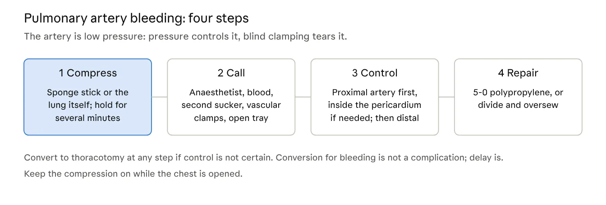
Open, VATS or robotic
VIOLET (in the Thoracic 2 tab) showed better recovery of physical function after VATS than open lobectomy with no oncological penalty. Robotic lobectomy gives similar outcomes to VATS with longer operating time and higher cost in most series. Conversion rates of 5 to 10% are expected; the common reasons are bleeding, adherent nodes and failure to progress.
Segmentectomy
An anatomical segmentectomy divides a segment's bronchus, artery and intrasegmental vein individually and separates the lung along the intersegmental plane, keeping the intersegmental vein as the landmark. It is not a large wedge.
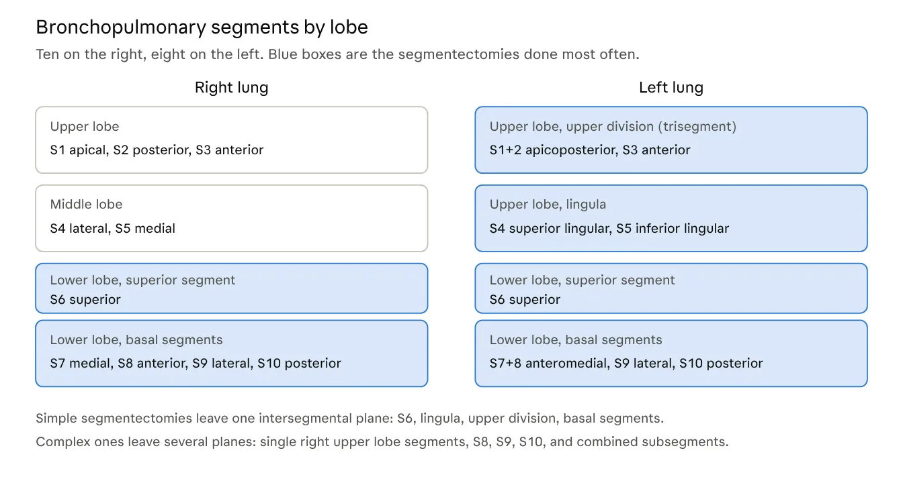
Who
Intentional: peripheral tumour of 2 cm or less, node negative at operation, with an achievable margin (JCOG0802 and CALGB 140503, in the Thoracic 2 tab); ground-glass-dominant tumours up to 3 cm (JCOG1211).
Compromise: a patient who cannot tolerate lobectomy.
Also metastases and benign disease too deep for a wedge.
Steps
Plan on thin-slice CT, with three-dimensional reconstruction for anything other than a simple segment: which bronchus, which arteries, where the intersegmental veins run, and the distance from tumour to the planned plane.
Sample segmental (station 13), lobar and hilar nodes and send them for frozen section. A positive node converts the operation to lobectomy in a fit patient.
Divide the segmental artery or arteries and the segmental bronchus. Before stapling the bronchus, clamp and reinflate to confirm that the rest of the lobe ventilates.
Divide the intrasegmental vein; preserve the intersegmental vein.
Define the plane, by one of: inflation-deflation (reinflate the whole lung after the bronchus is divided, then deflate, so the target segment stays inflated), or intravenous indocyanine green with near-infrared imaging after the artery is divided (the target segment stays dark).
Divide the plane with staplers, or open it with energy along the vein for complex segments.
Check the margin on the specimen: at least 2 cm, or at least the tumour diameter (margin-to-tumour ratio of 1 or more). If it is short, take more or convert.
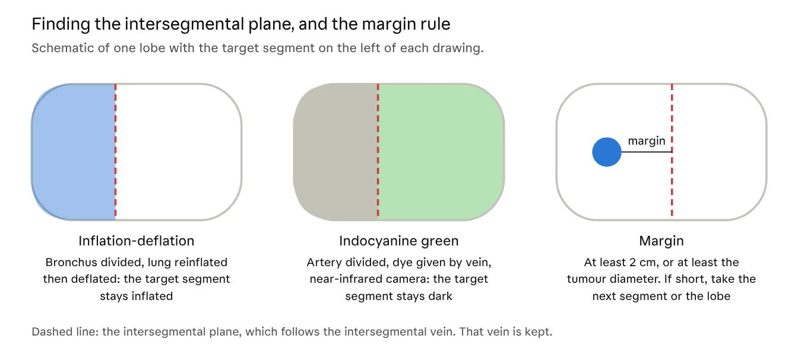
Pitfalls
Wrong bronchus or artery: the commonest serious error, prevented by the reinflation test and by the reconstruction.
Short margin from a tumour near the intersegmental plane: take the adjacent segment or do a lobectomy.
More air leak than lobectomy (6.5% against 3.8% in JCOG0802) and more local recurrence.
Kinking or torsion of the remaining segments, especially the lingula or the middle lobe after an adjacent resection.
Sleeve resection
A sleeve lobectomy removes a lobe with a cuff of the main airway and rejoins the airway end to end. It is the alternative to pneumonectomy for a tumour at a lobar orifice, and is preferred whenever a clear margin can be had.

Indications
Central tumour, usually squamous carcinoma or carcinoid, at or involving a lobar orifice, where lobectomy would leave a positive bronchial margin.
N1 nodes invading the lobar bronchus from outside.
Benign stricture and low-grade tumours of the main bronchus (sleeve resection of the bronchus without lung).
Right upper lobe is the commonest; then left upper, left lower and the right-sided extended sleeves (upper and middle, middle and lower).
Steps
Bronchoscopy yourself beforehand: the proximal and distal extent, and the length of normal airway on each side.
Complete the vascular part of the lobectomy and the nodal dissection first, so the airway is free.
Divide the bronchus proximally and distally with a knife, at right angles, through cartilage where possible. Send both margins for frozen section. Ventilate the other lung; cross-field or jet ventilation is rarely needed for a lobar sleeve.
Reduce tension: divide the inferior pulmonary ligament, and open the pericardium around the inferior vein if more length is needed.
Anastomose with 3-0 or 4-0 absorbable monofilament (polydioxanone), interrupted throughout or continuous for the back wall with interrupted sutures in front; knots outside. Correct size mismatch by spacing the sutures or telescoping the smaller distal end into the larger proximal end.
Test under water. Wrap with a pedicled flap (intercostal muscle, pericardial fat, pleura or pericardium), and always place the flap between the anastomosis and the pulmonary artery.
Bronchoscopy at the end of the operation to clear secretions and see the suture line.
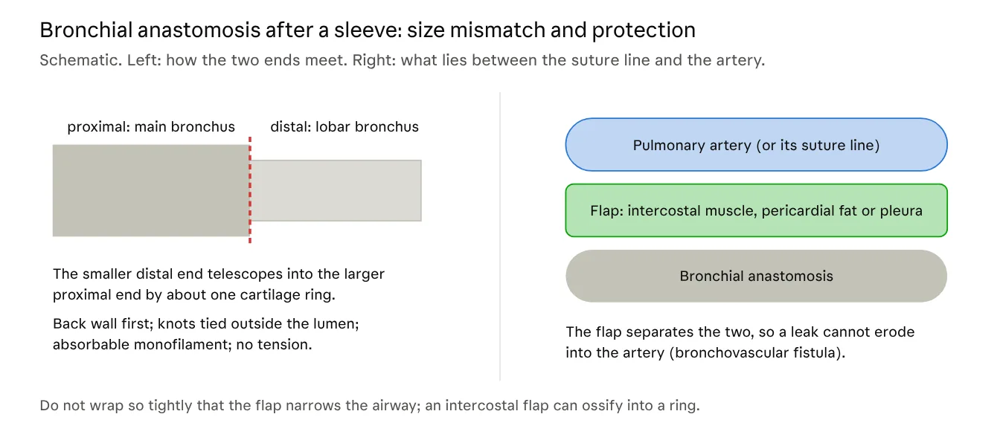
Arterial and double sleeve
When the tumour also involves the pulmonary artery, the artery is clamped after 3,000 to 5,000 units of heparin, and repaired by tangential resection with a patch, sleeve resection with end-to-end anastomosis, or a conduit. The bronchial anastomosis is done first. A flap between the two suture lines prevents a bronchovascular fistula.
After the operation
Secretion retention is the main early problem: the reimplanted lobe has no cough reflex or lymphatic drainage for weeks. Physiotherapy, early mobilisation, mini-tracheostomy or repeated bronchoscopy as needed.
Bronchoscopy before discharge and again at about six weeks.
Anastomotic complications: dehiscence (early, often needing completion pneumonectomy), stricture (late; dilatation or stent), and bronchovascular fistula (sentinel haemoptysis; fatal if missed).
Induction chemotherapy or chemo-immunotherapy does not preclude a sleeve; high-dose radiotherapy increases anastomotic risk and is the stronger reason to wrap.
Sleeve or pneumonectomy
| Source | Finding |
|---|---|
| French national database (Epithor), 941 sleeve lobectomies and 5,318 pneumonectomies, 2005 to 2014 | Propensity-matched analysis favoured sleeve lobectomy for overall and disease-free survival, with more pulmonary complications but fewer fistulae and empyemas |
| Single-centre comparison | Thirty-day mortality 3.2% after sleeve lobectomy against 9.6% after pneumonectomy; five-year survival 63% against 39% |
| Meta-analysis of extended sleeve lobectomy, 431 patients | Better survival than pneumonectomy; fistula 4.6%, stricture 3.1%, operative mortality 1.2% |
There is no randomised trial. Patients selected for a sleeve have smaller, more favourable tumours, so the survival difference is partly selection. The consistent finding is lower operative mortality and preserved lung, which is enough to make sleeve resection the first choice when the margin is clear.
Resection margin: the R classification and the positive bronchial margin
Three papers you sent, read on 17 November 2026 from their abstracts: the IASLC analysis that defines an uncertain resection, and two series asking whether a microscopically positive bronchial margin after a sleeve resection matters.
The R descriptors
| Category | Meaning |
|---|---|
| R0 | No residual tumour: clear margins, systematic or lobe-specific systematic nodal dissection, and the highest mediastinal node removed is negative |
| R(un), uncertain | Margins clear, but one of: nodal assessment less than the standard (fewer than three mediastinal stations, or no subcarinal station), the highest mediastinal node removed is positive, carcinoma in situ at the bronchial margin, or positive pleural lavage cytology |
| R1 | Microscopic residual tumour: positive margin, extracapsular extension at the margin of a resected node, or malignant pleural or pericardial effusion |
| R2 | Macroscopic residual tumour, in the chest or in nodes left behind |
The wording of the definitions is from memory of the IASLC proposal; the paper's abstract confirms the components tested.
IASLC analysis of margin status
Edwards and colleagues, Journal of Thoracic Oncology 2020;15:344, the IASLC Staging and Prognostic Factors Committee. John Edwards is a UK thoracic surgeon (Sheffield).
14,712 resected cases in the IASLC database. On the conventional definition 14,293 were R0, 263 R1 and 156 R2, with median survival not reached, 33 months and 29 months.
Three or more N2 stations had been explored in 63%, and lobe-specific nodal dissection done in 45%. The highest station was positive in 6.4%. Pleural lavage cytology was positive in 3.5% of the 1,705 tested.
Applying the uncertain category moved 56% of cases out of R0, almost all for inadequate nodal assessment: 6,070 R0, 8,185 R(un), 301 R1 and 156 R2.
In node-positive patients median survival was 70 months for R0, 50 for R(un) and 30 for R1. In node-negative patients R0 and R(un) did not differ.
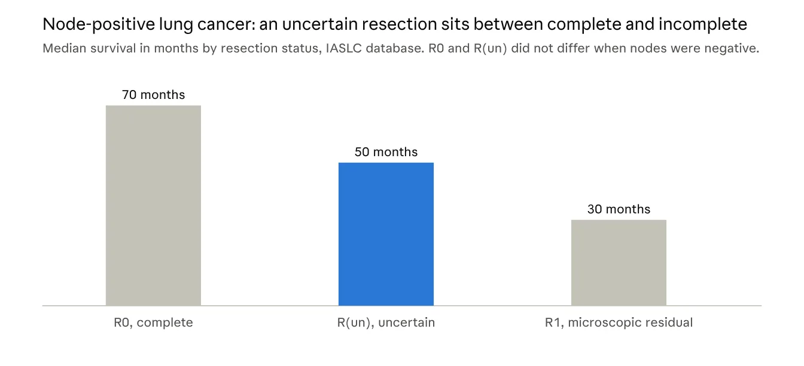
What it means in practice: more than half of resections recorded as complete do not meet the nodal standard, and in node-positive disease that costs survival, either through under-staging or through disease left behind. Systematic nodal dissection with a named highest station is what makes an R0 an R0. In an MDT, an R(un) resection with positive nodes is a reason to discuss adjuvant treatment as for incompletely staged disease.
Positive bronchial margin after sleeve resection
| Study | Patients | Finding |
|---|---|---|
| Hong and colleagues, JTCVS 2021;161:267 (Samsung Medical Center) | 536 consecutive bronchial sleeve resections, 1995 to 2015; 40 (7.5%) had microscopic residual disease at the bronchial margin | Five-year survival 61.8% with R1 against 61.5% with R0 (p = 0.55); five-year recurrence-free survival 53.7% against 59.0% (p = 0.39); margin status not an independent predictor. The pathological extent of the residual disease helped predict recurrence |
| Ren and colleagues, Thoracic Cancer 2022;13:1664 (Shanghai Chest Hospital) | Sleeve lobectomies compared by margin status after propensity matching | No significant difference in overall survival (p = 0.053) or recurrence-free survival (p = 0.14) between R0 and R1. Among R1 patients, N stage and age predicted survival. R1 looked worse in patients who had more nodes examined. No difference between four histological types of margin involvement |
| Earlier series of all resections, for context: Lee and colleagues 2016, 1,800 patients | 60 with a positive bronchial margin: 18 carcinoma in situ, 42 extramucosal | Five-year stump recurrence 3.1% for R0, 5.6% for carcinoma in situ and 12.2% for extramucosal disease; survival worse with extramucosal disease in stage IB to II |
How to use this:
A microscopically positive bronchial margin after a sleeve does not by itself mandate completion pneumonectomy. In both sleeve series survival was not measurably worse, and the alternative carries the mortality of pneumonectomy.
The type of margin involvement matters more than its presence. Carcinoma in situ or mucosal disease behaves close to R0; extramucosal or peribronchial disease, which usually means lymphatic spread, carries stump recurrence several times higher and tracks nodal stage.
Both sleeve series are retrospective and small in the R1 arm (40 patients in the larger), so they cannot exclude a moderate harm. The p value of 0.053 for survival in the second is close to conventional significance.
At operation the rule does not change: send both margins for frozen section and resect further if length allows a tension-free anastomosis. These papers inform what to do when the final histology returns positive, or when further resection would mean pneumonectomy in a patient who cannot tolerate it.
After an R1 sleeve: bronchoscopic surveillance of the anastomosis, and MDT discussion of adjuvant radiotherapy to the stump for extramucosal disease, with chemotherapy by stage. Radiotherapy on a fresh anastomosis has its own risk.
Status: all three papers were read from abstracts or institutional summaries, because PubMed and PubMed Central would not open; the full texts, including the numbers of R0 and R1 patients in the Thoracic Cancer paper and its data source, were not seen.
Tracheal resection: preventing and managing complications
Tapias and Mathisen, Annals of Cardiothoracic Surgery 2018;7:237, the Massachusetts General Hospital experience. Full text read on 17 November 2026. This is expert opinion built on one centre's series, the largest there is.
Principles that prevent complications
Tension on the anastomosis is the largest single cause of anastomotic complications.
Up to half of the adult trachea can be resected, but complications rise sharply beyond 4 cm. In children they rise beyond 30% of length.
Decide resectability before dividing anything. Use frozen section freely. A microscopically positive margin can be accepted in adenoid cystic carcinoma rather than risk tension.
Protect the lateral blood supply: dissect circumferentially only at the diseased segment, and no more than about 1 cm beyond each line of division.
Stay on the trachea. Do not look for the recurrent laryngeal nerves and keep out of the tracheo-oesophageal groove.
Anastomosis: interrupted 4-0 polyglactin sutures 2 to 3 mm apart, lateral full-thickness traction sutures to take the tension, knots tied outside the lumen after all sutures are placed.
Extubate at the end of the operation; positive pressure ventilation stresses the suture line.
Bronchoscopy at about one week picks up anastomotic problems before they declare themselves.
Release manoeuvres, in increasing order: neck flexion; pretracheal mobilisation (by mediastinoscope for distal resections, done at the same sitting to avoid scarring); suprahyoid laryngeal release for high resections; division of the inferior pulmonary ligament; inferior hilar release through a U-shaped pericardial incision below the inferior vein; complete hilar release. Suprahyoid release costs some swallowing function.
Who is at risk
Absolute contraindications: unfit for surgery, or not enough healthy trachea for a primary anastomosis.
Steroids: stop two to four weeks before surgery if possible. Preoperative steroids do not prevent airway oedema.
Previous radiotherapy: possible in selected patients, with a vascularised pedicled flap around the anastomosis. Do not irradiate a resectable tumour first.
A patient likely to need ventilation afterwards should not have a resection yet.
Granulomatosis with polyangiitis: bronchoscopic treatment first.
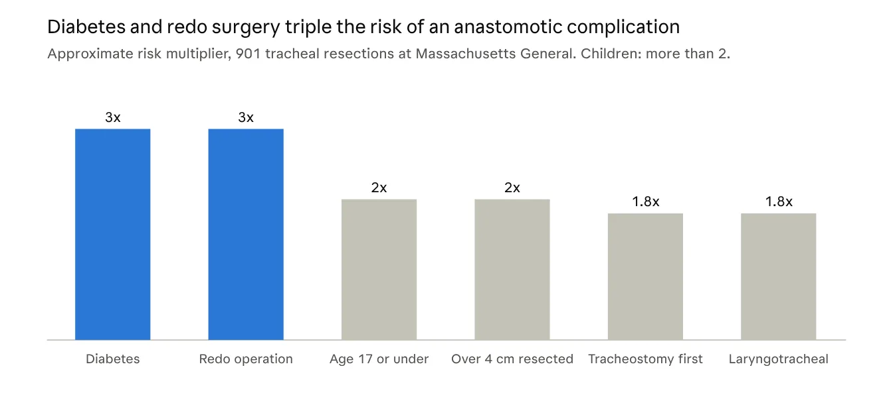
The series behind these figures: 901 resections over 28 years; post-intubation stenosis 65.4%, tumour 23.1%, idiopathic laryngotracheal stenosis 9.2%, tracheo-oesophageal fistula 2.3%. Mortality 1.2%, any complication 18.2%, anastomotic complication 9%. Mortality was 7.4% with an anastomotic complication against 0.6% without.
The complications
| Complication | Frequency | When and how it presents | Management |
|---|---|---|---|
| Anastomotic separation | 37 of 901 (4.1%) | First two weeks; stridor, cough, haemoptysis, surgical emphysema, wound infection; usually anterior | See the diagram below |
| Restenosis | 37 of 901 (4.1%) | Months later; obstructive symptoms; flexible bronchoscopy | Rigid or balloon dilatation. Consider re-resection if dilatation is needed more often than every three to six months, but wait six to twelve months from the first operation. Silicone stent or T-tube as a bridge or long term |
| Granulation tissue | 7 of 901 (0.7%) | Days to weeks; stridor | Bronchoscopic debridement; local triamcinolone; T-tube if recurrent. Rare since absorbable sutures |
| Tracheo-innominate fistula | 2 of 901 (0.2%) | Sentinel bleed then massive haemoptysis | Cuffed tube to tamponade; collar incision plus sternotomy; control and resect the involved artery, vein graft only if EEG changes on clamping; buttress the trachea. Prevent by not dissecting behind the artery and interposing tissue |
| Tracheo-oesophageal fistula | 3 of 901 (0.3%) | Late; cough on swallowing, aspiration pneumonia | Contrast swallow and endoscopy of both tubes. Antibiotics and drainage; T-tube or cuffed tracheostomy, venting gastrostomy, feeding jejunostomy; repair when inflammation has settled |
| Laryngeal oedema | Commoner after laryngotracheal resection | Hoarseness, sometimes stridor | Head up, voice rest, steroids for 24 to 48 hours, diuresis, nebulised adrenaline, heliox. Small uncuffed tube if severe; tracheostomy if it persists after a few days |
| Recurrent nerve palsy | 0.8% after laryngotracheal resection | Hoarse voice, weak cough, aspiration | Laryngoscopy. No permanent medialisation for six months; temporary injection if aspirating. Bilateral: tracheostomy |
| Swallowing dysfunction | Uncommon | After suprahyoid release, long resections, older patients | Nil by mouth early; speech and language assessment before diet |
Separation, restenosis and granulations add up to 81 of 901, which is the 9% anastomotic complication rate.
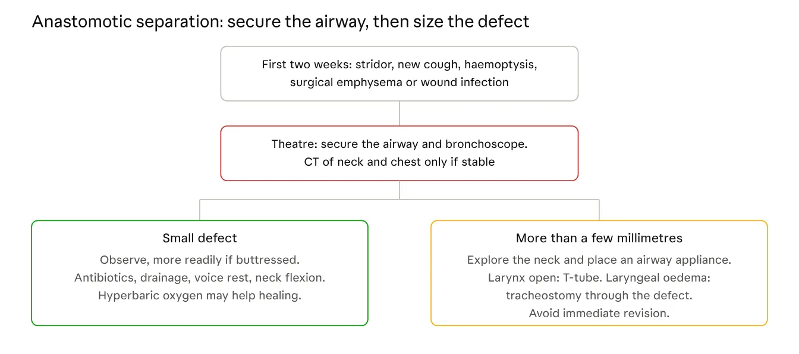
Points an examiner will want:
The first response to any anastomotic problem is to secure the airway, in theatre, with a bronchoscope. Not CT.
A failed anastomosis is managed with a T-tube or tracheostomy and time, not immediate re-anastomosis: the tissue is inflamed and the trachea is already shorter.
A sentinel bleed after tracheal surgery or tracheostomy is a tracheo-innominate fistula until shown otherwise.
The mortality figure to remember: an anastomotic complication raises it about twelvefold.
Not in the paper, from memory: the chin-to-chest guardian stitch is usually kept for about seven days. The 24 to 48 hour steroid course for oedema is from Mathisen's separate conference summary.
Pulmonary artery reconstruction

Reconstruction without heparin
Watanabe, Hattori, Suzuki and colleagues, JTCVS 2022;164:1200, Juntendo University, Tokyo. The page would not open; what follows is from the abstract as shown in search results, and the results paragraph was cut off.
Question: can the artery be clamped and reconstructed safely without systemic heparin?
130 of 3,537 lung cancer resections (3.7%) between 2008 and 2019 had the artery reconstructed to avoid pneumonectomy, none with intraoperative systemic heparin. Median follow-up 37 months. Stage III in 55.
Conclusion: very low risk of thrombosis and of perioperative bleeding.
Not seen: the split between tangential suture, patch and end-to-end repair, the complication counts, mortality and survival.
How this sits against usual practice:
Most Western units give a small dose of heparin before clamping, typically 1,500 to 3,000 units, and do not reverse it (the dose range is from memory; 1,500 units is the figure in the review below).
The argument against heparin is bleeding from an extensive nodal dissection after induction treatment. The Juntendo series says omission is safe in their hands. It is a single-centre retrospective series without a heparin comparison group.
Thrombosis is rare whatever is done. Venuta and colleagues had one thrombosis, needing completion pneumonectomy, in 105 reconstructions, with operative mortality 0.95% and five-year survival 44% (60% for stage I and II, 28% for stage III). Ma and colleagues had one in 118, no hospital deaths and five-year survival 50.2%.
A 2022 review notes that thrombosis is reported more often after tangential resection with direct suture than after patch or end-to-end repair. A narrowed lumen matters more than the anticoagulation.
Technical points, from memory of standard descriptions: proximal control of the main artery, intrapericardial if needed; distal control on the artery or by clamping the lower lobe vein; 5-0 or 6-0 polypropylene; do the bronchial anastomosis first in a double sleeve so the arterial suture line is not pulled on; put a flap between the two suture lines; flush and de-air before the last stitch.
Sleeve resection: complications and their management
Kahya and Yüksel, Turkish Journal of Thoracic and Cardiovascular Surgery 2023;31(Suppl 1):S54. Full text read on 17 November 2026. A narrative review; the rates are ranges across published series, not pooled estimates.
Headline figures: mortality after bronchial sleeve resection 1.5% to 11%, morbidity 11% to 51%. Early deaths are from pneumonia and respiratory failure; late deaths are almost all from the anastomosis.
Risk factors for anastomotic failure: long-term steroids, active smoking, active tuberculosis or pneumonia, diabetes, malnutrition and low albumin, anaemia, age over 60, poor lung function, induction or adjuvant treatment, expected ventilation after surgery, a positive bronchial margin and a devascularised bronchus.

| Complication | Timing | Rate after sleeve | Management |
|---|---|---|---|
| Atelectasis and sputum retention | Early, common | Physiotherapy, bronchoscopic toilet. The reimplanted lobe is denervated and has no cough reflex | |
| Anastomotic dehiscence or necrosis | Early | Surgery. Completion pneumonectomy; if the patient cannot tolerate it, repair wrapped in omentum or muscle | |
| Bronchopleural fistula | Early or late | 0 to 8.1% | Small: antibiotics, drainage, irrigation; many close. Otherwise debride, close with absorbable sutures and buttress; completion pneumonectomy if repair is impossible |
| Bronchovascular fistula | Usually within weeks | 0 to 2.5% | Sentinel bleed, then massive haemoptysis. Mortality near 100%. Immediate surgery; completion pneumonectomy |
| Pulmonary artery thrombosis or embolism | Early, sometimes late | 1.9% after bronchovascular procedures | CT and echocardiography. Can present as pulseless electrical activity arrest |
| Anastomotic stricture | Late | 0 to 15.1% | Debridement and repeated dilatation; stents have a limited role |
| Local recurrence | Late | Under 5 to 10% | Bronchoscopy twice a year; re-resection if caught early, radiotherapy otherwise |
The review's own anticoagulation regimen for vascular sleeves is 1,500 units of intravenous heparin during the resection, not reversed, then low molecular weight heparin daily for seven days. That is the opposite position to the Juntendo paper above, and an examiner may ask you to argue both.
Other points from the review:
Absorbable monofilament suture gives fewer airway complications than non-absorbable. No single suture technique is standard; a continuous technique has low complication rates in the series quoted.
Bronchoscopy before discharge to inspect the anastomosis.
Post-pneumonectomy pulmonary oedema, relevant to carinal and sleeve pneumonectomy: day two or three, 4% to 14% after carinal resection, treated as acute respiratory distress syndrome with fluid restriction, diuretics, ventilation and sometimes extracorporeal support.
Read with the margin section above: a positive bronchial margin appears in this review's list of risk factors for anastomotic failure, which is a separate reason to care about it besides recurrence.
Surgical access: open, VATS and robotic
VATS against open: VIOLET
Lim and colleagues, NEJM Evidence 2022. The UK trial, run from the Royal Brompton with Bristol; know it in detail.
Design: 503 patients in nine UK centres, July 2015 to February 2019, known or suspected lung cancer cT1 to 3, N0 to 1, M0, randomised to VATS (247) or open (256) lobectomy.
Primary outcome: self-reported physical function (EORTC QLQ-C30) at five weeks. 73 with VATS against 67 with open; mean difference 4.65 (95% CI 1.69 to 7.61), p = 0.002.
In hospital: complications 32.8% against 44.3%; median stay four against five days. Serious adverse events in hospital did not differ.
After discharge: serious adverse events 30.7% against 37.8%.
Oncology: no difference in progression-free survival at 52 weeks. Nodal upstaging and complete resection rates were similar (from memory).

VATS against open: survival
Harris, Lim and colleagues, Lancet 2026;407:1182. Individual patient data from the three randomised trials: Bendixen (Denmark), Long (China) and VIOLET (UK), with median follow-up of 9.5, 5.2 and 3.8 years.
1,185 patients: 586 VATS, 599 open.
Overall survival favoured VATS: hazard ratio 0.79 (95% CI 0.65 to 0.96).
Disease-free survival was similar: hazard ratio 0.91.
Reading: the survival gain without a recurrence gain suggests fewer non-cancer deaths, through less surgical trauma and better recovery, not better cancer clearance. This is now the strongest argument that minimal access is the standard for early-stage disease, and it postdates most guidelines.
Robotic against VATS
Five randomised trials, 712 patients, pooled by Ren and colleagues, Journal of Thoracic Disease 2026.
| Trial | Patients, robotic / VATS | Main findings |
|---|---|---|
| RVlob (Jin 2022, Niu 2024), single centre, China | 157 / 163 | Blood loss 100 against 150 mL; nodes 11 against 10; complications 14.6% against 18.4% (not significant); hospital cost 12,821 against 8,009 US dollars; three-year survival 94.6% against 91.5%, non-inferior |
| RAVAL (Patel 2023), Canada, United States, France; blinded | 81 / 83 | Blood loss 50 against 150 mL; nodes 10 against 8; conversion 7.4% against 15.6% (p = 0.10); health utility a little higher at 7 to 12 weeks; 14,926 dollars per quality-adjusted life year |
| ROMAN (Veronesi 2021), Italy | 38 / 39 | Stopped early for futility; complications 34% against 23% (not significant); nodes 7 against 4 |
| BRAVO (Terra 2022), Brazil | 37 / 39 | Readmission 2.7% against 20.5%; no quality of life difference |
| Catelli 2023 | 25 / 50 | VATS 20 minutes quicker; no survival difference |
Pooled: conversion relative risk 0.67 (0.37 to 1.21); complications 0.91 (0.68 to 1.21); 62 mL less blood loss; 2.6 more nodes; no difference in operating time, stay, drain time, upstaging, or three-year survival. The meta-analysis has internal inconsistencies (a confidence interval that does not contain its estimate, duplicated rows), so trust the individual trial figures over the pooled ones.

What to say: robotic lobectomy is a safe alternative with equivalent complications and three-year survival, a slightly higher node count that has not produced more upstaging, and higher cost driven by equipment. No randomised trial compares robotic with open. Claimed advantages (ergonomics, training, complex resections, lower conversion) rest on registry data.
NICE on robotic surgery
Robot-assisted surgery for soft tissue procedures: early value assessment (HTG742, formerly HTE21), published April 2025. The NICE pages would not open; this is from search extracts.
Five systems can be used in the NHS while evidence is generated: Da Vinci SP, Da Vinci X and Xi, Hugo, Senhance and Versius. Prostatectomy is excluded because it is established practice.
Conditional: use is allowed only if the evidence in the evidence generation plan is being collected, for three years, after which NICE reassesses for routine adoption.
Da Vinci X and Xi have the broadest indications; 13 of the 20 studies reviewed were of that system.
The committee judged robotic surgery generally comparable with standard minimal access surgery for clinical outcomes, with possible gains in access to minimal access surgery, length of stay and training.
Thoracic procedures fall within soft tissue procedures. I could not confirm any thoracic-specific wording.
Thoracotomy approaches
From memory of standard operative texts; not checked against a source today.


Surface landmarks
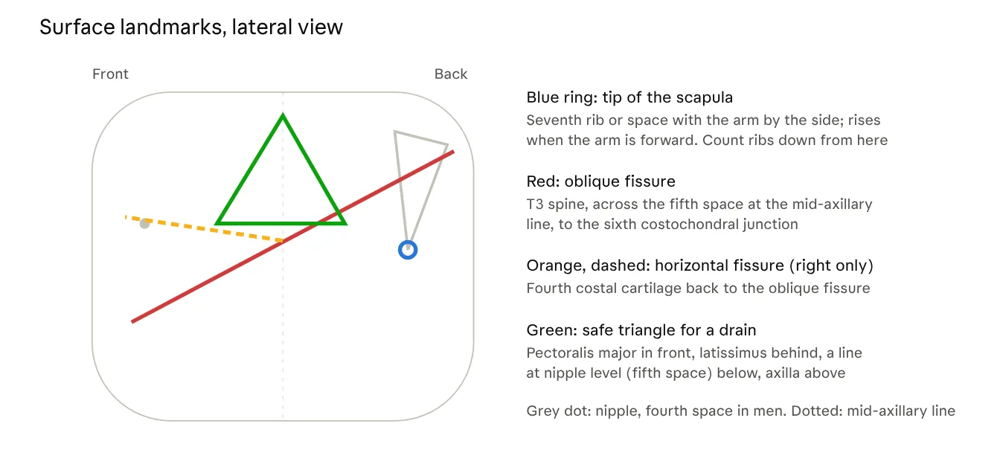
Other fixed points: the sternal angle marks the second costal cartilage, the level of T4 to T5, the carina and the start and end of the aortic arch. The lung's lower border lies at the sixth rib in the mid-clavicular line, the eighth in the mid-axillary line and the tenth at the back; the pleura reaches two ribs lower at each (eighth, tenth, twelfth).
Chest wall muscles
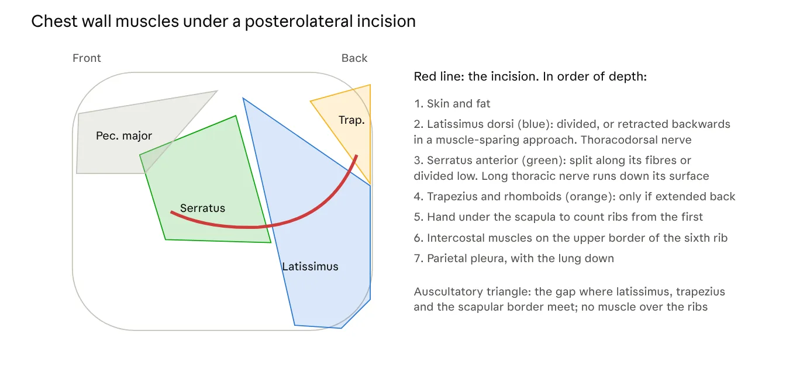
The intercostal space
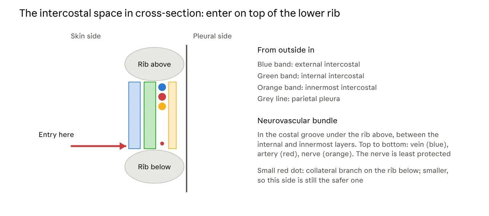
| Incision | Position and space | Muscles | Use | Drawbacks |
|---|---|---|---|---|
| Posterolateral | Lateral decubitus; fifth space for lung resection | Latissimus dorsi divided; serratus anterior divided or spared; trapezius and rhomboids if extended back | The standard for lung resection, oesophagus, descending aorta, posterior mediastinum | Most pain and shoulder dysfunction; chronic pain in a substantial minority |
| Muscle-sparing lateral | Lateral decubitus; fourth or fifth space | Latissimus retracted back, serratus split along its fibres | Most open lobectomies; conversion from VATS | Smaller exposure; seroma under the flaps |
| Axillary | Lateral, arm abducted; third or fourth space | None divided; between pectoralis major and latissimus | Apical procedures, first rib, sympathectomy | Limited exposure; long thoracic and intercostobrachial nerves at risk |
| Anterolateral | Supine, side raised 30 to 45 degrees; fourth or fifth space | Pectoralis major and serratus split | Emergency and trauma thoracotomy, lung transplant, minimally invasive cardiac surgery, open lung biopsy | Poor access to posterior structures |
| Clamshell (bilateral anterior thoracosternotomy) | Supine; fourth or fifth space, sternum divided transversely | Pectorals; both internal mammary arteries ligated | Bilateral lung transplant, trauma, large anterior mediastinal or bilateral disease | Sternal override and non-union; pain |
| Hemi-clamshell | Supine; partial sternotomy plus anterior thoracotomy | Pectoralis | Anterior apical (Pancoast) tumours, thoracic inlet, proximal subclavian control | |
| Median sternotomy | Supine | None | Anterior mediastinum, bilateral metastasectomy, carina in some hands | Left lower lobe and posterior hilum poorly reached |
| Thoracoabdominal | Right lateral with hips rolled back; sixth to eighth space across the costal margin | Latissimus, serratus, external oblique, diaphragm | Thoracoabdominal aorta, oesophagogastric junction | Costal margin instability, diaphragm dysfunction |
Points for the viva:
Count ribs from inside or from the scapular tip; the fifth space lies on the oblique fissure and the hilum.
Enter on the upper border of the lower rib. The neurovascular bundle runs under the rib above in the order vein, artery, nerve.
Ways to reduce post-thoracotomy pain: muscle sparing, avoiding rib fracture by gradual spreading or cutting the rib neck or costotransverse ligament, intracostal or nerve-sparing closure sutures, and regional block (paravertebral or erector spinae).
The auscultatory triangle (trapezius, latissimus, medial scapular border) gives entry with little muscle division.
Emergency left anterolateral thoracotomy: fifth space, below the nipple, extend across the sternum to a clamshell if needed.
Status: the operative steps in all three sections are standard technique written from memory, not from a source read today, and the suture, heparin and pressure figures vary by unit. The sleeve against pneumonectomy figures were confirmed on 17 November 2026. The air leak figures are from JCOG0802 as reported in the Thoracic 2 tab.
Cardiac day
Contents (12 sections)
- Transoesophageal echo for surgeons
- Cardiac CT interpretation
- Cardiac tumours
- Perioperative management and ERACS
- Mitral valve disease: repair and replacement
- Surgical management of atrial fibrillation
- Tricuspid valve surgery
- Endocarditis: timing and operative strategy
- Course pack: cardiac corrections and practicals, 18 November 2026
- Handbook and guideline cross-check: cardiac
- Echo and CT thresholds: where they went and sources
- Programme: Cardiac day, Wednesday 18 November 2026
Wednesday 18 November 2026. Notes for each session; valve and endocarditis thresholds are in the main tab and are not repeated here.
Transoesophageal echo for surgeons
Know eight views, what each shows of the mitral valve, and a fixed checklist before and after bypass.
| View | Angle | What it shows |
|---|---|---|
| Mid-oesophageal four-chamber | 0–20° | Both ventricles, A2 and P2 (A1 and P1 when withdrawn to five-chamber) |
| Mid-oesophageal commissural | 60° | P3, A2, P1 from left to right of screen |
| Mid-oesophageal two-chamber | 90° | P3 and the anterior leaflet; left atrial appendage |
| Mid-oesophageal long axis | 120–140° | P2 and A2, LVOT, aortic valve; measure annulus and coaptation here |
| Aortic valve short axis | 30–60° | Three cusps, commissures, coronary ostia |
| Bicaval | 90–110° | Atrial septum, venous cannula, PFO |
| Transgastric mid short axis | 0° | All three coronary territories; filling |
| Deep transgastric | 0° with flexion | Aortic and LVOT gradients |
Before bypass
Confirm the lesion and mechanism; look for anything that changes the operation (PFO, appendage thrombus, more AR than expected, a second valve).
Ventricular function and regional wall motion as a baseline.
Aortic atheroma in the arch and descending aorta; epiaortic scan if the ascending aorta is in doubt.
A dilated coronary sinus suggests a persistent left SVC: retrograde cardioplegia will not work reliably.
Cannula and line positions: venous cannula, coronary sinus catheter, balloon pump tip just below the left subclavian.
After bypass
De-airing before the clamp is off and again before weaning.
Repair result: no more than mild residual regurgitation, mean mitral gradient under 5 mmHg, coaptation length at least 5–8 mm, no systolic anterior motion.
Prosthesis: leaflet motion, paravalvular leak, gradient.
New regional wall motion abnormality: lateral wall after mitral surgery means circumflex injury until proven otherwise; inferior wall is usually right coronary air.
Aorta at the cannulation site for dissection.
Relative contraindications: oesophageal stricture, varices, recent upper gastrointestinal surgery.
Cardiac CT interpretation
Read a cardiac CT in the same order every time; planning thresholds are in the main tab under CT measurements.
Technique: gated or not, which cardiac phase, contrast timing, motion or blooming artefact from calcium and stents.
Calcium: coronary score, aortic valve score, mitral annulus, ascending aorta.
Coronaries: origin, dominance, anomalous course (interarterial, intramural), then stenosis by segment.
Grafts: patency, course relative to the sternum, anastomoses.
Chambers and appendage: size, thrombus (delayed phase), septal defects.
Valves: morphology, annulus, calcification, vegetation or abscess.
Aorta: diameters at fixed landmarks, atheroma, dissection flap.
Pericardium: thickness over 4 mm or calcification suggests constriction.
Chest wall and lungs: retrosternal distance, nodules, effusions.
| CAD-RADS | Stenosis |
|---|---|
| 0 | None |
| 1 | 1–24% |
| 2 | 25–49% |
| 3 | 50–69% |
| 4A | 70–99% |
| 4B | Left main ≥50% or three-vessel ≥70% |
| 5 | Occlusion |
Image quality depends on heart rate under about 65 bpm (beta-blocker) and sublingual nitrate.
Heavy calcium and small stents over-call stenosis; a clean CT is more reliable than a positive one.
Cardiac tumours
Most cardiac masses are thrombus or metastasis; of primary tumours about three-quarters are benign, and myxoma is the commonest in adults.
| Tumour | Typical site and patient | Key points |
|---|---|---|
| Myxoma | Left atrium (about 75–80%), on the fossa ovalis; right atrium 15–20% | Obstruction, embolism, constitutional symptoms. Operate promptly once diagnosed |
| Papillary fibroelastoma | Valves, aortic more than mitral | Embolic. Resect if left-sided and mobile, over 1 cm, or after an embolic event; shave and keep the valve |
| Lipoma, lipomatous septal hypertrophy | Atrial septum, sparing the fossa (dumbbell) | Usually leave alone |
| Rhabdomyoma | Children, ventricles, tuberous sclerosis | Often regress; operate only for obstruction or arrhythmia |
| Fibroma | Children, ventricular septum or free wall | Arrhythmia; resect or transplant |
| Angiosarcoma | Right atrium, adults, bloody pericardial effusion | Commonest primary malignancy; poor prognosis, resection rarely complete |
| Lymphoma | Right heart, immunosuppressed | Chemotherapy, not surgery |
| Renal cell carcinoma thrombus | Inferior vena cava into right atrium | Combined resection on bypass, sometimes circulatory arrest |
Myxoma surgery
Do not manipulate the heart before the clamp is on; fragments embolise.
Biatrial or transseptal approach; remove the stalk with full-thickness septum or an endocardial cuff, and patch the defect.
Inspect all four chambers and irrigate.
Recurrence is 1–3% for sporadic tumours and around 20% in Carney complex (familial, multiple, atypical sites): screen relatives and follow with echo.
Cardiac MRI characterises tissue and separates tumour from thrombus (thrombus does not enhance).
Cardiac tumours in more depth
Added 18 November 2026. There is no society guideline for cardiac tumours; practice rests on the WHO 2021 classification, single-centre series and expert reviews. Items marked confirmed were checked today against the linked source; the rest is from memory.
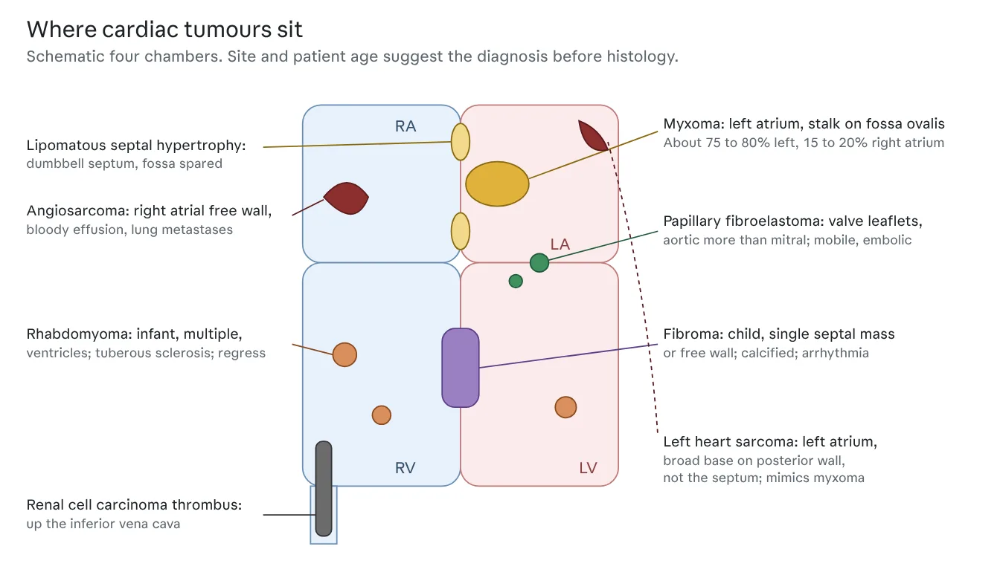
Location: charts and chamber-by-chamber differential
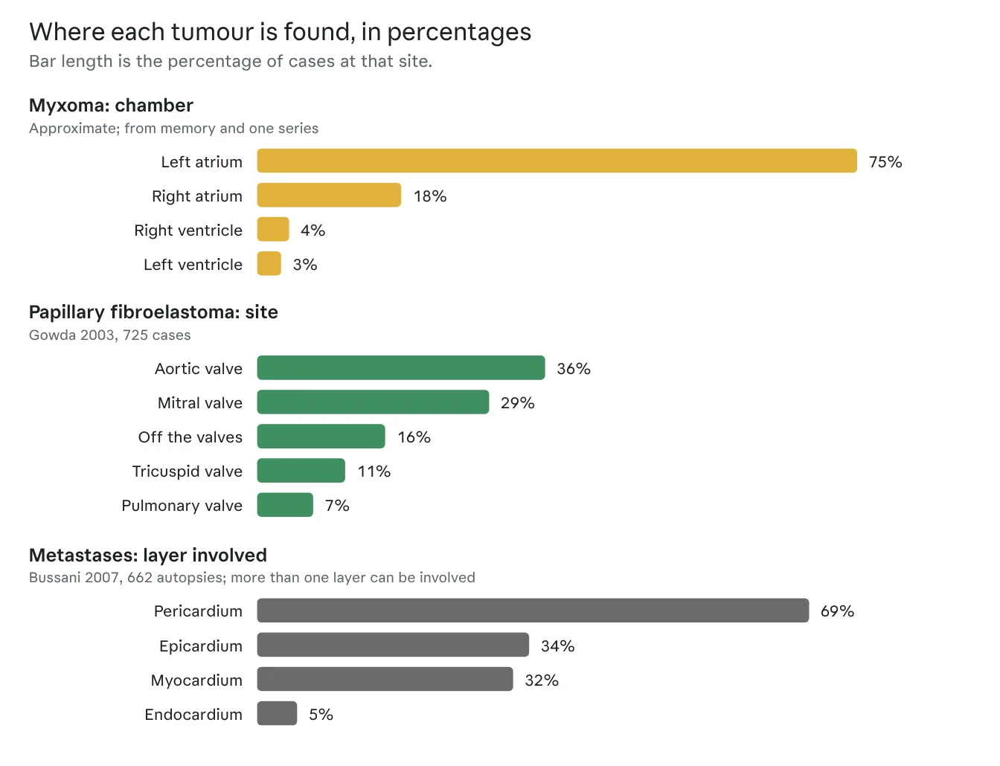
| Tumour | Site | Share | Status |
|---|---|---|---|
| Myxoma | Left atrium | About 75% | From memory; one series gives right atrium 20% and ventricles 3 to 4% |
| Myxoma | Right atrium | 15 to 20% | From memory |
| Myxoma | Either ventricle | 3 to 4% each | From memory |
| Papillary fibroelastoma | Aortic valve | 36% | Confirmed: Gowda, Am Heart J 2003, 725 cases (figures as quoted by Kim 2020) |
| Papillary fibroelastoma | Mitral valve | 29% | Confirmed, same source |
| Papillary fibroelastoma | Tricuspid valve | 11% | Confirmed, same source |
| Papillary fibroelastoma | Pulmonary valve | 7% | Confirmed, same source |
| Papillary fibroelastoma | Off the valves (left ventricle most often) | 16% | Confirmed, same source |
| Metastasis | Pericardium | 69% | Confirmed: Bussani, J Clin Pathol 2007, 662 autopsies |
| Metastasis | Epicardium | 34% | Confirmed, same source |
| Metastasis | Myocardium | 32% | Confirmed, same source |
| Metastasis | Endocardium | 5% | Confirmed, same source |
Some papers quote the same Gowda series as aortic 44%, mitral 35%, tricuspid 15% and pulmonary 8%; that is the split among valve lesions only. Either way the order is aortic, mitral, tricuspid, pulmonary.
About 95% of fibroelastomas are in the left heart, which is why they present with stroke (confirmed, Gowda 2003).
On the aortic valve a fibroelastoma can sit on either surface; on the mitral valve it is usually on the atrial surface at mid-leaflet, unlike a vegetation, which sits on the upstream side at the closure line (from memory).
Sarcoma by site (from memory): angiosarcoma in the right atrium near the AV groove; undifferentiated pleomorphic sarcoma, leiomyosarcoma and osteosarcoma in the left atrium, typically the posterior wall; intimal sarcoma in the pulmonary trunk.
How metastases reach the heart: direct invasion (lung, breast, oesophagus, mesothelioma), lymphatic spread to the pericardium, blood-borne to the myocardium (melanoma, lymphoma, leukaemia), and up a vein (renal and hepatocellular carcinoma through the inferior vena cava, lung cancer through a pulmonary vein).
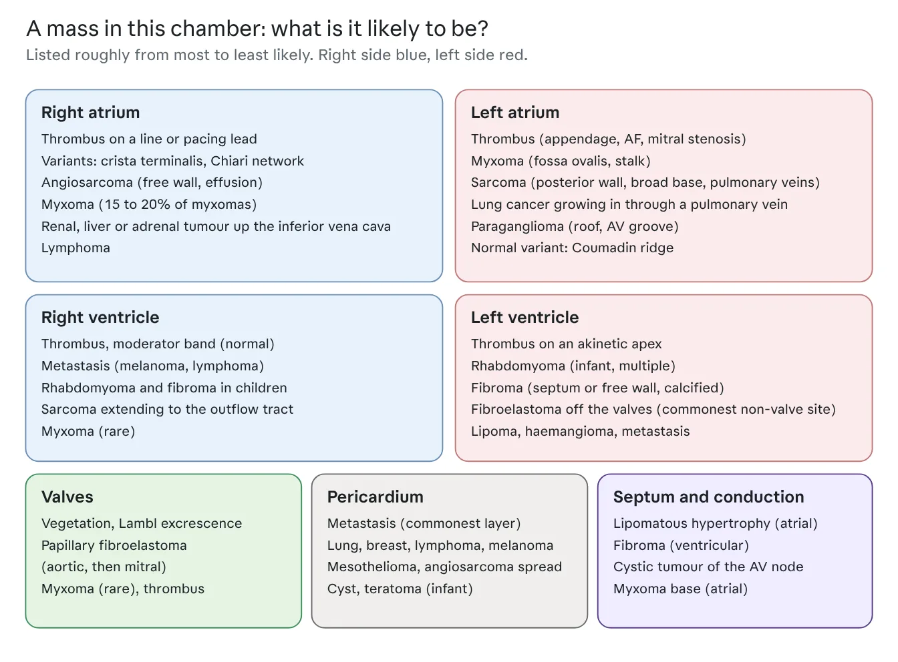
| Location clue | Points towards |
|---|---|
| Narrow stalk on the fossa ovalis | Myxoma |
| Left atrium but posterior wall, broad base, into pulmonary veins | Sarcoma |
| Right atrial free wall with pericardial effusion | Angiosarcoma |
| Small mobile lesion on the downstream side or mid-leaflet of a valve | Papillary fibroelastoma |
| Akinetic apex, appendage, or on a line or lead | Thrombus |
| Continuous with the inferior vena cava | Renal, hepatic or adrenal tumour; leiomyomatosis |
| Thick atrial septum that spares the fossa | Lipomatous septal hypertrophy |
| Several ventricular masses in an infant | Rhabdomyoma |
| Single calcified ventricular mass in a child | Fibroma |
| Several chambers, or pericardium and myocardium together | Metastasis or lymphoma |
Frequencies to quote
A mass in the heart is, in order of likelihood: thrombus or a normal variant (crista terminalis, Coumadin ridge, Chiari network, eustachian valve, lipomatous septum), then metastasis, then a primary tumour. Confirmed: RadioGraphics 2024.
Metastases are 20 to 30 times commoner than primary tumours; sources are lung and other thoracic cancers, melanoma, sarcoma and renal cell carcinoma (confirmed, same source). Breast, lymphoma and leukaemia are from memory.
Of primary tumours, 75 to 90% are benign (confirmed).
Commonest primary tumour: the WHO 2021 classification names papillary fibroelastoma (confirmed). Surgical series still show myxoma first, for example 70% myxoma against 10% fibroelastoma in a 2025 multicentre surgical cohort, because fibroelastomas are small and often found only at echo or autopsy. Safe viva answer: myxoma is the commonest resected, fibroelastoma the commonest overall under WHO 2021.
Children: rhabdomyoma first, then fibroma (confirmed for rhabdomyoma).
Commonest primary malignancy: sarcoma, about 15 to 20% of primary tumours; angiosarcoma in the right atrium, undifferentiated pleomorphic and other sarcomas in the left atrium.
Presentation: the triad
| Mechanism | Features |
|---|---|
| Obstruction | Breathlessness, syncope, positional symptoms, a diastolic "tumour plop", signs that mimic mitral stenosis, sudden death |
| Embolism | Stroke, limb or visceral ischaemia, coronary embolus with infarction; right-sided tumours give pulmonary emboli |
| Constitutional | Fever, weight loss, arthralgia, raised ESR and CRP, anaemia (interleukin-6 from myxoma) |
Neurological events occur in 20 to 25% of myxoma patients (confirmed: Samanidis, Kardiol Pol 2020).
Villous, friable myxomas embolise; smooth, large ones obstruct.
Other presentations: arrhythmia or heart block (fibroma, septal tumours), effusion or tamponade (angiosarcoma, metastasis, lymphoma), incidental finding.
Imaging: telling them apart
| Modality | Use |
|---|---|
| Transthoracic echo | First test: site, attachment, mobility, obstruction |
| TOE | Stalk and attachment, small valve lesions, all four chambers; intraoperative check before and after |
| Cardiac MRI | Test of choice for tissue characterisation (confirmed, RadioGraphics 2024) |
| CT | Calcification, fat, coronary relation, staging of chest and abdomen, coronary assessment before surgery in over-40s |
| PET-CT | High uptake supports malignancy; staging of sarcoma and lymphoma |
| Lesion | MRI and CT clues (from memory) |
|---|---|
| Thrombus | No enhancement, even on late gadolinium with long inversion time; sits on akinetic wall, in the appendage or on a line |
| Myxoma | Heterogeneous, bright on T2, patchy enhancement; narrow stalk on the fossa ovalis; mobile |
| Papillary fibroelastoma | Under 1.5 cm, on a valve, shimmering fronds on echo; often too small for MRI |
| Lipoma | Follows fat on all sequences, suppresses with fat saturation; negative Hounsfield units |
| Fibroma | Dark on T2, intense late enhancement, central calcification |
| Malignancy | Broad base, crosses tissue planes, more than one chamber, right-sided, pericardial effusion, necrosis, first-pass perfusion |
Biopsy is not needed for a typical myxoma or fibroelastoma. Tissue is needed before treatment when lymphoma or sarcoma is suspected: lymphoma is treated with chemotherapy, and sarcoma is best given chemotherapy first.
Myxoma: the operation
Timing: urgent, on the next available list after diagnosis, because embolism and sudden obstruction are unpredictable. After a large embolic stroke, weigh haemorrhagic conversion on full heparin; there is no trial, so decide with the stroke team.
Coronary imaging if over about 40 or with risk factors.
Median sternotomy or right mini-thoracotomy; bicaval cannulation; no manipulation of the heart and no left-sided vent until the clamp is on.
Approach: right atriotomy with trans-septal incision, biatrial, or left atriotomy through the interatrial groove. The trans-septal route lets you excise the stalk under vision and inspect both atria.
Excise the stalk with a full-thickness cuff of septum (about 5 mm margin); for a free-wall or annular base, take endocardium and a layer of muscle. Remove the tumour in one piece.
Close the septum directly or with a pericardial patch.
Inspect all four chambers and the valves, irrigate, check the mitral valve with saline (a large tumour can damage leaflets or dilate the annulus).
TOE before closing: no residual mass, no shunt, valve competent.
Results (confirmed, Samanidis 2020): low complication rate; recurrence about 5% overall, concentrated in familial and complex forms.
Recurrence mechanisms: incomplete excision, a second focus, implantation of fragments. Sporadic 1 to 3%, familial about 12%, Carney complex about 20% (from memory).
Follow-up: echo yearly for at least 5 years in sporadic cases, lifelong in Carney complex.
Carney complex
Autosomal dominant, PRKAR1A mutation (confirmed: Frontiers in Oncology 2025).
Spotty skin pigmentation (lentigines, blue naevi), cardiac and cutaneous myxomas, and endocrine tumours: primary pigmented nodular adrenocortical disease causing Cushing syndrome, pituitary adenoma, thyroid and testicular tumours, psammomatous melanotic schwannoma.
Suspect it when the patient is young, the myxoma is multiple, outside the left atrium, off the fossa ovalis, or recurrent. Refer for genetics and screen first-degree relatives with echo.
Papillary fibroelastoma: who to operate on
| Situation | Usual advice (expert opinion; no guideline class) |
|---|---|
| Left-sided with a stroke, TIA or other embolus | Resect |
| Left-sided, mobile or 1 cm or more, acceptable risk | Resect |
| Left-sided, small, sessile, high surgical risk | Antiplatelet and echo surveillance |
| Right-sided | Leave unless large, mobile with a PFO, or causing pulmonary emboli |
| Found at another cardiac operation | Remove |
In one cohort of myxoma and fibroelastoma patients with stroke, further cerebrovascular events at 5 years were 24% after resection and 60% without it (confirmed: Front Cardiovasc Med 2023; small, retrospective).
Technique: shave the lesion off the leaflet with a thin rim of endocardium and keep the valve; repair with a pericardial patch if a defect is left. Valve replacement is rarely needed. Recurrence is rare.
Differential on the valve: Lambl excrescence (thin strand on the closure line), vegetation, thrombus, myxoma.
Sarcoma
Three groups by site: right heart, left heart and pulmonary artery (confirmed: ACC review 2018).
Without surgery median survival is months: 1 month without and 12 months with surgery in a registry of 210 cardiac sarcomas (confirmed, same source).
Margin decides outcome: median survival 24 months after R0 against 10 months after R1 resection in the Houston series (confirmed: Texas Heart Institute Journal review).
Right heart sarcoma (mostly angiosarcoma): bulky, infiltrative, often metastatic at presentation, rarely causes heart failure early. Give neoadjuvant chemotherapy first to shrink the margins, then radical resection. R0 was reached in only a third before this approach; in the 44-patient Houston series neoadjuvant chemotherapy improved R0 rate and survival (confirmed: Abu Saleh, Ann Thorac Surg 2017).
Left heart sarcoma: presents with obstruction and heart failure, so surgery usually comes first. Posterior left atrial tumours are hard to reach; cardiac autotransplantation (explant, resect and reconstruct on the bench, reimplant) gives exposure (confirmed as a described technique: Shapira, EJCTS 2013).
Pulmonary artery sarcoma: mimics chronic thromboembolic disease; clues are a filling defect that expands the artery, enhances, and is PET-avid. Treated by pulmonary endarterectomy or pneumonectomy with chemotherapy.
Transplantation is not standard because of recurrence under immunosuppression. Manage in a sarcoma MDT.
Other tumours in one line each
Lipoma: encapsulated, subendocardial or epicardial; resect only if symptomatic. Lipomatous septal hypertrophy is not a tumour.
Rhabdomyoma: multiple, ventricular, tuberous sclerosis in most; regresses, so operate only for obstruction or refractory arrhythmia; everolimus is used for inoperable symptomatic cases.
Fibroma: single, does not regress; resect for arrhythmia or obstruction, with debulking or transplantation if unresectable. Associated with Gorlin syndrome.
Paraganglioma: roof of the left atrium or atrioventricular groove, very vascular, coronary supply; alpha-blockade before surgery if secreting.
Haemangioma, teratoma (pericardial, infants), cystic tumour of the AV node (heart block).
Primary lymphoma: right heart, immunosuppressed, effusion; chemotherapy.
Renal cell carcinoma with caval thrombus: level IV extends above the diaphragm into the right atrium; nephrectomy with thrombectomy on bypass, with or without hypothermic arrest, is done with urology and can be curative.
Carcinoid heart disease is not a tumour of the heart but right-sided valve plaque from a metastatic neuroendocrine tumour: tricuspid and pulmonary valve replacement once symptomatic, with octreotide cover.
Viva summary
Is it a tumour at all? Thrombus and normal variants first.
Site, age and attachment give the diagnosis; MRI characterises tissue.
Myxoma: operate promptly, no manipulation before the clamp, stalk with a cuff of septum, inspect four chambers, follow with echo.
Fibroelastoma: left-sided and mobile or embolic means shave excision, valve kept.
Malignant features: right-sided, broad-based, infiltrating, effusion. Biopsy, stage, sarcoma MDT, neoadjuvant chemotherapy for right heart sarcoma, aim for R0.
ESC 2022 cardio-oncology guideline: what it says about cardiac tumours
Source: Lyon et al, Eur Heart J 2022;43:4229, section 9.1, Figures 39 and 40 and Table 13. Read today from an open-access copy; the figure text was partly garbled in extraction, so the site list is my best reading of Figure 39. This is the only ESC guideline text on cardiac tumours, and it carries no class of recommendation or level of evidence.
| Topic | What the guideline states |
|---|---|
| Frequency | Over 90% of primary cardiac tumours are benign. Metastases are 20 to 30 times more likely than primary tumours |
| Types | Myxoma predominates in adults, rhabdomyoma in children. Malignant primaries are mostly sarcoma (about 65%) or lymphoma (about 25%) |
| Sources of metastasis | Melanoma, lymphoma, leukaemia, breast, lung and oesophagus |
| Symptoms | Paraneoplastic (fever, weakness, fatigue), thromboembolic, haemodynamic (compression or obstruction), arrhythmic |
| Differential | Exclude thrombus and catheter-related masses first |
| Imaging sequence | TTE or TOE first for site, size and haemodynamic effect, with contrast echo for vascularity. CMR to characterise tissue (fat, necrosis, haemorrhage, calcification, vascularity) and exclude thrombus. CT to find an extracardiac primary and to stage. PET to separate malignant from benign and to stage |
| Biopsy | Consider biopsy of the cardiac mass if a malignant primary is suspected or imaging is uncertain; biopsy an extracardiac mass instead if one is found and is safer to sample |
| Benign, asymptomatic | MDT review of type, site, size, growth rate and embolic risk. Consider anticoagulation for left-sided tumours, or right-sided tumours with an intracardiac shunt. Left-sided endocardial tumours warrant MDT review for removal even if small or incidental, because of embolic risk |
| Benign, symptomatic | Surgical resection, with these exceptions: rhabdomyoma (may regress) and intramural haemangioma (may respond to corticosteroids); unresectable tumours whose arrhythmia is controlled by drugs. Transplantation may be considered for large, unresectable, symptomatic tumours |
| Malignant | Histology is required. For primary sarcoma, complete resection may improve survival; complete resection is often impossible, so radiotherapy, chemotherapy or debulking may be needed. Primary lymphoma: chemotherapy, possibly then radiotherapy. Secondary tumours: chemotherapy or radiotherapy, with palliative surgery in some |
Sites in Figure 39: left atrium (myxoma, sarcoma, lipoma, metastasis); right atrium (myxoma, sarcoma, lymphoma, lipoma, metastasis, and leiomyoma or renal tumour through the inferior vena cava); left ventricle (rhabdomyoma, fibroma, lipoma, lymphoma, sarcoma, metastasis); right ventricle (rhabdomyoma, fibroma, lipoma, lymphoma, metastasis); valves (fibroelastoma, metastasis); pericardium (mesothelioma, sarcoma, liposarcoma, lymphoma, lipoma, metastasis); pulmonary artery and veins (sarcoma, lung tumours). This supports the chamber picture above.
The guideline does not give thresholds for resecting a fibroelastoma or any time limits for surgery.
WHO 2015 classification (4th edition): histological types
Source: the WHO 2015 list as reproduced with ICD-O codes in the ICCR heart tumour dataset, 1st edition, read today. Original description: Burke and Tavora, J Thorac Oncol 2016;11:441, abstract only.
| Group | Entities (ICD-O code) |
|---|---|
| Benign tumours and tumour-like lesions | Rhabdomyoma (8900/0); histiocytoid cardiomyopathy; hamartoma of mature cardiac myocytes; adult cellular rhabdomyoma (8904/0); cardiac myxoma (8840/0); papillary fibroelastoma; haemangioma (9120/0), capillary (9131/0) and cavernous (9121/0); cardiac fibroma (8810/0); lipoma (8850/0); cystic tumour of the atrioventricular node (8454/0); granular cell tumour (9580/0); schwannoma (9560/0) |
| Tumours of uncertain behaviour | Inflammatory myofibroblastic tumour (8825/1); paraganglioma (8680/1) |
| Germ cell tumours | Mature teratoma (9080/0); immature teratoma (9080/3); yolk sac tumour (9071/3) |
| Malignant tumours | Angiosarcoma (9120/3); undifferentiated pleomorphic sarcoma (8830/3); osteosarcoma (9180/3); myxofibrosarcoma (8811/3); leiomyosarcoma (8890/3); rhabdomyosarcoma (8900/3); synovial sarcoma (9040/3); miscellaneous sarcomas; cardiac lymphomas; metastatic tumours |
| Tumours of the pericardium | Solitary fibrous tumour (8815/1) and malignant solitary fibrous tumour (8815/3); angiosarcoma; synovial sarcoma; malignant mesothelioma (9050/3); germ cell tumours, including mixed germ cell tumour (9085/3) |
Structure: benign, uncertain behaviour, malignant, with separate sections for germ cell tumours and the pericardium (confirmed, Burke and Tavora abstract).
Change from 2004: malignant fibrous histiocytoma became undifferentiated pleomorphic sarcoma (CTSNet summary); the sarcoma section was revised with emphasis on the left atrium as the commonest site (Burke and Tavora abstract).
Sarcoma grading: the ICCR dataset records grade 1 to 3 and cites the Trojani (French federation) soft-tissue system, while noting that prognostic evidence for grading cardiac sarcomas is lacking. That system scores differentiation, mitotic count and necrosis (the three components are from memory).
Change in 2021 (5th edition): papillary fibroelastoma is named the commonest primary cardiac tumour (RadioGraphics 2024). I have not read the full list of 2021 changes.
Timing of surgery
No guideline sets time limits. ESC 2022 gives indications without urgency, so timing rests on case series and reviews.

| Situation | Timing | Source |
|---|---|---|
| Myxoma, once diagnosed | Prompt excision as soon as the diagnosis is confirmed, because of embolic risk | Tetsuka, Case Rep Med 2015; case-report level |
| Obstruction with haemodynamic compromise | Emergency | No source opened today; standard practice |
| Myxoma with acute ischaemic stroke | Controversial. Some advise waiting 1 to 2 weeks after a major stroke to reduce haemorrhagic transformation on bypass; others operate early for recurrent or life-threatening emboli | Case report and review, 2026 |
| Same | Some studies favour surgery immediately or within 48 hours of stroke onset | World J Cardiol 2025 review |
| Same | Day 1 after infarction carries the least risk of haemorrhagic transformation; one group recommends immediate resection if feasible | J Cardiovasc Ultrasound case report 2013 |
| Same | In a 12-patient series operated 2 to 26 days after stroke there was no haemorrhagic transformation; in another series 5 of 8 operated 17 to 62 days after thrombectomy had haemorrhagic transformation. No mortality difference between early and delayed surgery, but delay was associated with recurrent embolism | Ann Pediatr Cardiol 2026, discussion |
| Haemorrhagic transformation already present | Delay; one report postponed from day 14 to day 41 | Case report 2026 |
| Thrombolysis for myxoma stroke | Generally ineffective against tumour embolus; thrombectomy is used | Ann Pediatr Cardiol 2026 (above) |
| Incidental left-sided benign endocardial tumour | Elective after MDT; consider anticoagulation meanwhile | ESC 2022, Table 13 |
| Rhabdomyoma, intramural haemangioma | No surgery unless obstructing or refractory | ESC 2022, Table 13 |
| Right heart sarcoma | Chemotherapy first, then radical resection | Abu Saleh, Ann Thorac Surg 2017 |
| Left heart sarcoma | Surgery first when obstructing | ACC review 2018 says presentation depends on site and extent; the "surgery first" inference is mine |
| Lymphoma | No resection; chemotherapy | ESC 2022, Table 13 |
Practical reading for a viva: a myxoma is an urgent operation on the same admission; after a stroke, decide with the stroke team using infarct size and repeat brain imaging, operating early for small infarcts and delaying for large infarcts or haemorrhage; everything malignant waits for histology and staging.
Lambl's excrescences
Added 18 November 2026. There is no guideline; every statement below is tied to a review or case report, and the level of evidence is low throughout.

| Point | Detail | Source |
|---|---|---|
| What they are | Thin, mobile, thread-like strands on the line of valve closure; first described by Lambl in 1856. Also called valvular strands | Tex Heart Inst J 2015 |
| Size | 2 mm thick or less and 3 mm long or more; up to about 10 mm long and 1.5 mm thick. Larger or clustered strands are called giant Lambl's excrescences | Ammannaya, Cardiol Res 2019; Radiopaedia |
| Cause | Wear and tear: high stress on the closure line of left-sided valves tears the endocardium, fibrin deposits and is endothelialised | Ammannaya 2019; Am J Case Rep 2015 |
| Site | Aortic and mitral valves; right-sided valves in under 10% | Radiopaedia; Ammannaya 2019 |
| Histology | The same as papillary fibroelastoma, which is larger. Many regard a fibroelastoma as arising from, or a larger version of, the same process | J R Coll Physicians Edinb case |
| Against fibroelastoma | Lambl's: on the closure line, thin, often multiple. Fibroelastoma: away from the closure line on the leaflet surface, rounder, rarely multiple | RCPE case; Radiopaedia |
| Other differentials | Vegetation, thrombus, redundant leaflet tissue or chordae, myxoma, imaging artefact, dissection flap | Ammannaya 2019 |
| Clinical weight | Usually an incidental TOE finding of ageing. Case reports and case-control data link them to stroke, but stroke attributed to them is rare: under 0.5 per 100 person-years in one study | Tex Heart Inst J 2015; Radiopaedia |
| Imaging | TOE is the test; 3D helps. They are below the resolution of CT and MRI in most cases | Am J Case Rep 2015 for TOE; the CT and MRI point is from memory |
Management, as proposed in the reviews (no trial, no guideline)
| Situation | Suggested management | Source |
|---|---|---|
| Incidental, no embolic event | No treatment; no routine follow-up is established | Ammannaya 2019 |
| First stroke or TIA with no other cause | Antiplatelet monotherapy | Shrestha, Am J Case Rep 2022 |
| Recurrent embolic events | Anticoagulation, with a shared decision on surgical excision | Shrestha 2022 |
| Recurrent events despite medical treatment | Surgery | Ammannaya 2019 |
| Poor or doubtful adherence to medication | Surgery can be considered as first treatment | Shrestha 2022 |
| Operation | Shave the strands off and keep the valve ("valve cleaning"); send for histology | Consultant360 case review |
Before blaming a Lambl's excrescence for a stroke, exclude AF (prolonged monitoring), a PFO, aortic arch atheroma, carotid disease and endocarditis. This list is standard cryptogenic stroke work-up and is not from the sources above.
If you find them at another cardiac operation, removing them adds little; no source I opened addresses this, so treat it as opinion.
Viva line: a strand on the closure line of an older patient's aortic valve is a Lambl's excrescence and is left alone; a round frond-like lesion on the body of the leaflet is a fibroelastoma and, if left-sided and mobile, is removed.
The JACC Case Reports link you sent (10.1016/j.jaccas.2025.103535) would not open and I could not identify the article from its DOI, so nothing from it is included here.
Case: left atrial myxoma presenting as acute myocardial infarction
Chan, Castonguay, Alyosif, Elkhateeb, Hirsch, Kim and Cote, JACC Case Reports 2026;31(35):108575 (PMID 42484569). Read in full today from the PMC copy.
| Step | Finding |
|---|---|
| Patient | 31-year-old woman; sudden chest pain and syncope while walking. Past childhood leukaemia, splenectomy, thyroid enlargement |
| First contact | Self-terminating ventricular tachycardia and inferior ST elevation; treated as STEMI. No murmur or added sound |
| Troponin | 16 ng/L on arrival, peak 2,066 ng/L |
| Angiography | Abrupt tapering of the LAD, its diagonals and an obtuse marginal branch: embolism, with spasm and spontaneous dissection as alternatives. A small mid right coronary branch supplied a cluster of left atrial microvessels, raising suspicion of a tumour feeding vessel |
| Echo | LVEF 54% with severe lateral and inferolateral hypokinesis; irregular 4 × 3 × 2 cm left atrial mass on the interatrial septum prolapsing across the mitral annulus |
| Treatment | Aspirin. Catheter laboratory at about 5 pm; emergency resection the same evening at about 11 pm because of continuing embolic risk with ischaemia and arrhythmia |
| Operation | Median sternotomy, bicaval cannulation, trans-septal incision extended onto the left atrial dome; pedunculated, villous, friable tumour removed en bloc; septal defect closed with autologous pericardium |
| Histology | Villiform myxoma 3.0 × 2.1 × 1.5 cm with multiple areas of recent surface rupture covered by platelets and fibrin, consistent with embolisation; calretinin positive |
| Outcome | Uncomplicated; home on day 12 (delay was social, not clinical). No long-term follow-up reported. No coronary thrombectomy or stenting was described |
Teaching points from the report
Consider left atrial myxoma in a young woman with an acute coronary syndrome, alongside spontaneous coronary dissection, stress cardiomyopathy, coronary embolism, acute aortic syndrome and pulmonary embolism.
Clues to embolism on the angiogram: abrupt cut-off in several distal branches of otherwise normal arteries.
A coronary branch feeding vessels in the atrial wall (tumour blush) points to the tumour before the echo is done.
An irregular, villous surface is the main risk factor for embolisation (the report cites a 2025 meta-analysis, which I have not read).
Timing: this team operated within about six hours of angiography. It supports the top two rows of the timing table above: a myxoma that has just embolised and is causing ischaemia or arrhythmia is an emergency.
Primary cardiac tumours have an incidence of about 0.02% (figure as quoted in the report).
What the report does not give: the frequency of coronary embolism from myxoma, or any guideline statement. This was a different article from the JACC Case Reports link sent earlier (10.1016/j.jaccas.2025.103535), which I still could not open.
Case: anterior STEMI from left atrial myxoma embolisation, and coronary embolism in general
Ponce Simal, Alonso-Ventura, Peribáñez Belanche, Ezpeleta Sobrevía, Fuertes-Ferre, Antonio Martín, Recio Ibarz, Batin and Matamala Adell, JACC Case Reports 2026, online 29 August (PMID 42667286). The journal page would not open. I could read only the start of the abstract through a search listing, so the case details below are incomplete.
| Item | What I could confirm |
|---|---|
| Patient | 54-year-old woman with no traditional cardiovascular risk factors |
| Diagnosis | Acute anterior ST-elevation myocardial infarction caused by embolisation from a left atrial myxoma |
| Background statement | Myxoma is the commonest primary cardiac tumour; histologically benign, but it can embolise to the systemic or coronary circulation |
| Not seen | Angiographic findings, how the artery was reopened, the histology of any aspirate, the timing of tumour resection, and the outcome |
Coronary embolism from myxoma: what other reports say
| Point | Detail | Source |
|---|---|---|
| How common | STEMI from left atrial myxoma is very rare, and poorly understood | Rev Port Cardiol 2016; Carney complex STEMI case, JACC Case Rep 2026 |
| First step | The catheter laboratory, as for any STEMI; catheter-based treatment or thrombolysis usually comes first because it is fastest | Rev Port Cardiol 2016 |
| Reopening the artery | Aspiration through an export catheter restored excellent distal flow in one anterolateral STEMI | Rev Port Cardiol 2016 |
| Echo clue | An ovoid, fragmented left atrial mass with apical hypokinesis in a 77-year-old with anterior ST elevation | Intern Med 2016 |
| Not only STEMI | Presentations include non-ST-elevation infarction with new cardiomyopathy and unobstructed coronaries | Cureus 2025 |
| Combined emboli | Cardiac arrest, inferior STEMI and multiple posterior circulation strokes from one myxoma | Case report 2026 |
| Then the tumour | Emergency resection the same evening in the Chan 2026 case above, because of continuing embolic risk | Chan, JACC Case Rep 2026 |
A secondary summary site states that coronary embolisation occurs in under 2% of myxomas and most often lodges in the LAD. I could not trace either figure to a primary source, so do not quote them.
Practical sequence supported by these reports: treat as STEMI, suspect embolism when the arteries are otherwise normal with an abrupt cut-off, aspirate and send the material for histology, echo before leaving the laboratory if possible, then early resection. Stenting an embolus in a normal artery and giving thrombolysis for tumour material are of doubtful value; that last sentence is my inference, not a quoted finding.
If you can paste the abstract or the PDF of the Ponce Simal report, I will complete the case table.
Source for every statement in the cardiac tumours section
Checked 18 November 2026. This table replaces the earlier "from memory" labels above: each statement is now tied to a published source, or listed at the end as still unsourced. Where a source changed the statement, the correction is given.
| Statement | Source | Result |
|---|---|---|
| Myxoma: 75 to 80% left atrium on a narrow stalk from the mid septum, 15 to 20% right atrium | Mankad and Herrmann, Echo Res Pract 2016; Samanidis, Kardiol Pol 2020 | Confirmed |
| Myxoma: ventricles 3 to 4% | J Cardiovasc Thorac Res 2025 | Confirmed |
| Myxoma recurrence: sporadic 1 to 3%, familial 12%, complex (Carney) 22% | Texas Heart Inst J 2017;44:402 | Confirmed; I had written about 20% for Carney, the published figure is 22% |
| No manipulation of the heart before the cross-clamp; full-thickness excision of the base with a cuff of septum | Front Surg 2023 | Confirmed |
| Septal margin around the stalk | Int J Health Sci 2018 | Confirmed as 0.5 to 1 cm (I had written about 5 mm) |
| Left atrial, right atrial trans-septal or biatrial approach all used | ICVTS 2003;2:521 | Confirmed; 20-year survival 85 to 95% |
| Carney complex under 10% of myxomas; younger, multiple chambers, recurs; PRKAR1A in over 70% | Braz J Cardiovasc Surg 2024 | Confirmed |
| Thrombus against tumour on MRI: thrombus stays dark at long inversion time | J Cardiovasc Magn Reson abstract, PMC3559575 | Confirmed; 93% accuracy for this sign |
| Myxoma on MRI: heterogeneous, bright on T2, heterogeneous enhancement; thrombus homogeneous, dark on T2, no enhancement unless organised | Br J Radiol 2014;88:20140599 | Confirmed |
| Lipoma: suppresses with fat saturation. Fibroma: dark on T2 with dense uniform late enhancement. Angiosarcoma: right atrium, heterogeneous enhancement, large effusion | MRI of cardiac neoplasms, summary of Quant Imaging Med Surg 2014 | Confirmed from a secondary summary only |
| Features of malignancy: right atrial site (half of right atrial primaries are malignant), more than one chamber, over 5 cm, haemorrhagic effusion, broad base | Urbini, Ther Adv Med Oncol 2020 | Confirmed |
| Fibroelastoma: surgical excision is standard because of embolic risk | Braz J Cardiovasc Surg 2024 (above) | Confirmed. The same review calls fibroelastoma the most frequently excised cardiac tumour, which conflicts with the surgical series cited earlier |
| Fibroelastoma: over 80% on valves; multiple in 9% | Kim, Korean J Thorac Cardiovasc Surg 2020 | Confirmed |
| Angiosarcoma favours the right atrium and invades pericardium, vena cava and tricuspid valve; lung and bone metastases | Braz J Cardiovasc Surg 2024 | Confirmed |
| Leiomyosarcoma and osteosarcoma mostly left atrial | Braz J Cardiovasc Surg 2024 | Confirmed |
| Left heart sarcoma: 22 of 24 in the left atrium | ACC review 2018 | Confirmed |
| Sarcoma sites overall: right atrium 38%, left atrium 36%, left ventricle 8%, right ventricle 7% (124 cases) | Pol J Pathol 2021 | New figure added |
| Rhabdomyoma: commonest tumour in newborns, 75 to 90% with tuberous sclerosis, regresses, surgery only for obstruction | Pediatr Cardiol 2017; Pediatr Rep 2021 | Confirmed |
| Everolimus for rhabdomyoma | Braz J Cardiovasc Surg 2024 | Corrected: case reports only; a systematic review does not support routine use; a phase II trial is running |
| Fibroma: solitary, left ventricular free wall or septum, children, Gorlin syndrome, resect because of arrhythmia | Braz J Cardiovasc Surg 2024 | Confirmed. Calcification is not mentioned there |
| Lipoma: right atrium, left ventricle or pericardium; surgery if large or symptomatic | Braz J Cardiovasc Surg 2024 | Confirmed |
| Haemangioma: right atrium most often | Braz J Cardiovasc Surg 2024 | Confirmed |
| Primary lymphoma: right atrium, immunosuppression, chemotherapy first; surgery does not improve survival | Braz J Cardiovasc Surg 2024 | Confirmed |
| Metastases: lung, mesothelioma, melanoma, breast, oesophagus, haematological | Braz J Cardiovasc Surg 2024 | Confirmed |
| Routes of metastasis: direct extension (lung through pulmonary veins to the left atrium), blood, up the inferior vena cava, lymphatic | Braz J Cardiovasc Surg 2024 | Confirmed |
| Chamber picture: left atrium (myxoma, thrombus, sarcoma, lung cancer through a pulmonary vein); right atrium (angiosarcoma, lymphoma, haemangioma, caval tumour extension); ventricles (rhabdomyoma, fibroma); valves (fibroelastoma); pericardium (metastasis) | Rows above; normal variants from RadioGraphics 2024 | Sites confirmed. The order of likelihood within each box is mine and has no single source |
Still without a source I could open today
Size and mobility thresholds for resecting a fibroelastoma (1 cm, mobile) and the surveillance option for small sessile lesions. These come from the Mayo series and the JACC CardioOncology review (Tyebally 2020), which I located but could not open.
Which valve surface a fibroelastoma sits on compared with a vegetation.
Paraganglioma site and alpha-blockade; cystic tumour of the AV node; pericardial teratoma.
Renal cell carcinoma level IV thrombus managed on bypass; carcinoid valve surgery with octreotide cover.
Pulmonary artery sarcoma mimicking chronic thromboembolic disease; intimal sarcoma as its usual histology.
Myxoma: urgency of surgery, coronary imaging over 40, yearly echo follow-up, interleukin-6 and constitutional symptoms.
Calcification in fibroma; CT Hounsfield values for lipoma.
Perioperative management and ERACS
Enhanced recovery in cardiac surgery is a bundle: optimise before, spare opioids and blood during, and extubate, feed and mobilise early after.
| Phase | Element |
|---|---|
| Before | HbA1c and albumin for risk; treat anaemia and iron deficiency; prehabilitation; stop smoking and alcohol 4 weeks ahead |
| Before | Clear fluids until 2 hours before; carbohydrate drink; patient education |
| During | Antibiotic within 60 minutes of incision; tranexamic acid; skin bundle |
| During | Avoid hyperthermia on rewarming (below 37.9 °C); goal-directed fluids; rigid sternal fixation in high-risk sternums |
| After | Normothermia above 36 °C; glucose below 10 mmol/L by insulin infusion |
| After | Multimodal opioid-sparing analgesia: paracetamol, regional chest wall block, dexmedetomidine |
| After | Extubate within 6 hours; keep drains patent; delirium screening; early feeding and mobilisation |
| After | Thromboprophylaxis; early kidney injury detection; remove lines and catheters early |
Drugs before surgery
| Drug | Stop before surgery |
|---|---|
| Aspirin | Continue |
| Ticagrelor | 3 days |
| Clopidogrel | 5 days |
| Prasugrel | 7 days |
| Warfarin | 5 days, bridge if mechanical valve |
| DOAC | 48 hours, longer with renal impairment |
| SGLT2 inhibitor | 3 days (ketoacidosis risk) |
| ACE inhibitor | Omit on the day |
After surgery
Bleeding that should prompt re-exploration: over 400 mL in the first hour, over 300 mL/hour for 2–3 hours, or over 200 mL/hour for 4 hours; any tamponade.
Transfusion: a restrictive threshold of haemoglobin 75 g/L was non-inferior in TRICS-III.
Arrest after cardiac surgery (STS consensus, CALS): three stacked shocks for VF, or pacing at maximum output for asystole, before massage; amiodarone 300 mg after three failed shocks; no routine adrenaline; resternotomy within 5 minutes, as standard up to postoperative day 10.
Atrial fibrillation prevention: continue beta-blockers; posterior pericardiotomy reduced AF in PALACS.
Mitral valve disease: repair and replacement
Name the Carpentier dysfunction first; the lesion then dictates the technique, and every repair ends with an annuloplasty.
| Carpentier type | Leaflet motion | Typical cause |
|---|---|---|
| I | Normal | Annular dilatation, perforation |
| II | Excess | Prolapse or flail: fibroelastic deficiency, Barlow |
| IIIa | Restricted in systole and diastole | Rheumatic |
| IIIb | Restricted in systole | Ischaemic or dilated ventricle (tethering) |
| Lesion | Technique |
|---|---|
| P2 prolapse | Triangular resection, or PTFE neochordae; quadrangular resection with sliding plasty when the leaflet is tall |
| Anterior leaflet prolapse | Neochordae or chordal transfer; avoid resection |
| Commissural prolapse | Commissuroplasty stitch |
| Barlow, tall posterior leaflet | Reduce posterior height (sliding plasty or neochordae set short) and use a larger ring to avoid systolic anterior motion |
| Annular dilatation | Complete or partial ring, sized to the anterior leaflet |
| Ischaemic tethering (IIIb) | Undersized complete rigid ring if tethering is mild; chord-sparing replacement if tenting is marked |
| Rheumatic | Commissurotomy and leaflet mobilisation in selected valves; usually replacement |
Checks after repair
Saline test, then TOE: no more than mild regurgitation, coaptation length 5–8 mm or more, mean gradient under 5 mmHg.
Systolic anterior motion: fill, stop inotropes, raise afterload, slow the heart. If it persists, go back on and shorten the posterior leaflet or upsize the ring.
Replacement
Preserve the subvalvular apparatus, at least the posterior leaflet chords.
CTSN severe ischaemic MR trial: replacement gave far less recurrent MR at 2 years (about 4% against 59%) with no difference in survival or LV remodelling.
Prosthesis: mechanical is favoured under about 65 in the mitral position, bioprosthetic over 70; patient choice and anticoagulation risk decide in between.
Structures at risk around the annulus
Circumflex artery: anterolateral commissure and P1.
Coronary sinus: posterior annulus.
Aortic valve (left and non-coronary cusps): anterior annulus.
AV node and His bundle: posteromedial commissure and right trigone.
Atrioventricular groove rupture: over-debridement of calcium, oversized prosthesis, lifting the heart after replacement.
Surgical management of atrial fibrillation
Ablate AF and close the appendage whenever the left atrium is open for mitral surgery; consider both at any other cardiac operation.
| Recommendation | Class |
|---|---|
| Concomitant surgical ablation at mitral valve surgery | I, level A (STS 2023 and ESC 2024) |
| Concomitant surgical ablation at non-mitral cardiac surgery | I, level B, for all first-time non-emergency operations (STS 2023); IIa (ESC 2024) |
| Left atrial appendage occlusion at cardiac surgery in patients with AF, in addition to anticoagulation (STS 2023: Class I, level A, for all first-time non-emergency surgery, with or without ablation) | I |
| Lesion set | Contents | Use |
|---|---|---|
| Pulmonary vein isolation | Right and left vein pairs | Paroxysmal AF only; not recommended alone when the left atrium is ≥4.5 cm or MR is more than moderate (STS 2017) |
| Left atrial maze | Vein isolation, roof and floor lines (box), mitral isthmus line with coronary sinus cryo, appendage line and closure | Persistent AF at left-sided surgery |
| Biatrial Cox-Maze IV | Left atrial set plus right atrial lines: SVC to IVC, to the tricuspid annulus, right appendage | Persistent and long-standing AF; best rhythm results, more pacemakers |
Energy: bipolar radiofrequency clamps for vein and box lesions; cryoablation for lines that end on an annulus.
Every line must be transmural and must reach its anchor (annulus or another line); a gap creates flutter.
Predictors of failure: left atrium over about 6 cm, long-standing persistent AF of many years, older age.
CTSN mitral ablation trial: freedom from AF at 1 year 63% with ablation and 29% without; pacemaker rate 21% against 8%.
LAAOS III: appendage occlusion at surgery cut stroke or systemic embolism from 7.0% to 4.8% over about 4 years, on top of continued anticoagulation.
Appendage closure: amputation and oversew, or an epicardial clip. An incomplete ligation or a stump over 1 cm is worse than leaving it alone.
Afterwards: anticoagulate, antiarrhythmic for 2–3 months, and document rhythm with a monitor at 6–12 months before stopping anything.
Tricuspid valve surgery
Ring annuloplasty is the default operation; the decisions are when tethering is too great for a ring, and how to stay out of the conducting tissue.
Anatomy that matters
Three leaflets: anterior, posterior, septal. The annulus dilates along the free wall (anterior and posterior), not the septum.
Triangle of Koch: coronary sinus ostium, tendon of Todaro, septal leaflet annulus. The AV node sits at its apex, by the anteroseptal commissure.
The right coronary artery runs in the groove along the anterior and posterior annulus; deep bites kink it.
The non-coronary sinus of the aortic root lies behind the anteroseptal commissure.
Techniques
| Situation | Operation |
|---|---|
| Annular dilatation, little tethering | Incomplete rigid or semi-rigid ring, gap at the septal segment to spare the node |
| Suture annuloplasty (De Vega, Kay bicuspidisation) | More recurrent TR than a ring; reserve for endocarditis or when a ring is undesirable |
| Tethering height over 8 mm or tenting area over 1.6 cm² | Ring plus anterior leaflet augmentation with pericardium, or replacement |
| Destroyed, rheumatic or carcinoid valve | Replacement, usually bioprosthetic |
| Pacing lead causing TR | Reposition or extract the lead; place epicardial leads if replacing the valve |
Replacement: keep the leaflets and plicate them where possible; place septal sutures through leaflet tissue, not annulus, to avoid heart block. Leave permanent epicardial pacing leads.
The operation can be done on the beating heart if there is no septal defect.
Evidence and risk
CTSN trial (2022): adding annuloplasty for moderate or less TR at mitral surgery reduced progression of TR at 2 years, at the cost of more permanent pacemakers (about 14% against 2.5%).
Isolated tricuspid surgery carries a mortality near 8–10%, driven by late referral.
TRI-SCORE (0–12) predicts in-hospital mortality from age ≥70, NYHA III–IV, right heart failure signs, furosemide ≥125 mg daily, eGFR <30, raised bilirubin, LVEF <60% and at least moderate RV dysfunction. A score of 6 or more is high risk.
Indications and echo thresholds are in the main tab.
Endocarditis: timing and operative strategy
Three things send a patient to theatre: heart failure, uncontrolled infection and embolic risk; the imaging thresholds and timing classes are in the main tab.
Timing questions that come up in cases
Ischaemic stroke without haemorrhage or coma: do not delay indicated surgery.
Intracranial haemorrhage: delay at least 3 weeks (AATS, IIa) to 4 weeks (ESC) where the cardiac state allows; discuss with neurosurgery and stroke teams.
Splenic or other abscess: drain or resect before or at the same admission as valve surgery.
Early surgery for large vegetations: the EASE trial (vegetation over 10 mm with severe valve disease) showed fewer embolic events with surgery within 48 hours.
Staphylococcus aureus, fungi and prosthetic valve infection lower the threshold.
In theatre
Debride all infected and necrotic tissue radically, then reconstruct. Send valve tissue for culture and 16S PCR.
Mitral: repair if enough leaflet remains (vegetectomy, pericardial patch); otherwise replace.
Aortic with annular abscess: unroof and debride the cavity, close or patch it with pericardium, then valve or root replacement. AATS prefers an allograft or biological root to a prosthetic conduit when destruction extends beyond the annulus (IIa).
Infection crossing the intervalvular fibrous body: double valve replacement with reconstruction of the fibrous body (Commando).
Mechanical or biological prosthesis: outcomes are similar; choose by age and anticoagulation risk. Avoid a mechanical valve after intracranial bleeding or a major stroke (AATS, IIa).
Right-sided disease in people who inject drugs: vegetectomy and repair, avoiding prosthetic material; valvectomy only as a last resort.
Device infection: complete removal of generator and leads.
Coronary assessment by CT, not catheter, when there is an aortic vegetation.
After surgery
If the valve culture is positive, restart the full antibiotic course from the day of operation; if negative, complete the original course.
Native valve 4–6 weeks, prosthetic at least 6 weeks; selected stable patients can switch to oral therapy (POET).
Expect heart block after root abscess surgery; leave reliable pacing wires.
Course pack: cardiac corrections and practicals, 18 November 2026
From the cardiac page of the "ST4 Consolidated Course Pack". The pack states that the remaining aortic, device and congenital thresholds in these notes were not revalidated by it.
Threshold corrections
| Topic | Corrected wording | Where changed | Status |
|---|---|---|---|
| Tricuspid repair at left-sided surgery | Severe primary or secondary TR: recommended (Class I). Moderate primary or secondary TR: should be considered (IIa, level B), no annulus-size requirement. Selected mild secondary TR with annulus 40 mm or more, or over 21 mm/m²: may be considered (IIb) | Already correct in 1 Mitral and tricuspid; the cross-check row below has been corrected | Checked: the ESC press summary confirms the reinforced indication for moderate or severe TR; classes and table number from the pack |
| Low-flow, low-gradient aortic stenosis | Low flow is stroke volume index 35 mL/m² or less. Symptomatic, confirmed severe: Class I with LVEF under 50%, IIa with LVEF 50% or more | 3 Aortic valve, coronary, aorta | Checked against a 2026 guideline summary |
| Right-sided endocarditis | Three separate indications, not one combined criterion: persistent bacteraemia; RV dysfunction from acute severe TR unresponsive to treatment; residual tricuspid vegetation over 20 mm after recurrent septic pulmonary emboli | 2 AF surgery and endocarditis | Pack ([ESC endocarditis]); not reopened today |
| Prosthetic valve dysfunction | Multiparametric, and judged against the patient's own baseline study | Note only | Pack |
| Device sizing and access | Depend on the device and the anatomy; coronary height, neo-LVOT and access calibre are risk markers | Note only | Pack |
What the faculty will ask you to demonstrate
| Station | You should be able to |
|---|---|
| TOE | Name the lesion, the mechanism, the views that support it, and what on the post-repair study would send you back on bypass |
| CT | Orient the gated images, state how each measurement was made, and name one finding that changes the plan |
| Cardiac mass | For a mobile mass near the interatrial septum, compare tumour, thrombus and vegetation by attachment and clinical context, and say whether more imaging changes urgency or management |
| AF practical | Give the indication, the lesion set, the appendage strategy, how you verify the lesions (conduction block) and the follow-up. Closing the appendage does not by itself stop anticoagulation |
| Mitral wetlab | Identify the leaflet and scallop, justify the repair chosen, and show how you test it |
| Tricuspid wetlab | Identify the three leaflets, the annulus and the structures at risk (AV node at the anteroseptal commissure, right coronary artery), and discuss residual regurgitation and heart block |
| Enhanced recovery | State one preoperative optimisation goal, one postoperative recovery goal and one trigger for rescue |
| Endocarditis | State the main indication, the timing, the question for imaging and who owns the next MDT step |
Each skill is rated independent, prompted, or repeat required. The structures at risk in the tricuspid row are my addition from standard anatomy, not from the pack.
Handbook and guideline cross-check: cardiac
Moved here from the former Society handbook and Guideline check tabs (17 November 2026). Handbook content is reproduced as the handbook states it and was not re-verified. Tab names in the "In this doc" column are the names used when the map was written.
How to read the status notes
"Confirmed" with a date means I checked that item against a source on that day; the source is linked beside it.
"From memory" means it was not checked. Treat it as a prompt to look up before quoting.
"As taught" means it is your note from the session, recorded as you gave it.
Handbook content is reproduced as the handbook states it and was not re-verified.
Handbook coverage map
| Handbook section | In this doc | Status |
|---|---|---|
| C1 TOE | Cardiac: advanced (TOE and CT, with diagram) | Covered in more detail here |
| C2 Cardiac CT | Cardiac: advanced (TOE and CT, with diagram) | Covered; measurement caution added in Part 3 |
| C3 Cardiac tumours | Cardiac day | Added in Part 3 |
| C4 ERACS and blood management | Cardiac day | Added in Part 3 |
| C5 Perioperative medication | Listed as unverified in Guideline check | Added in Part 3 |
| C6 CPB safety | Not present before | Added in Part 3 |
| C7 Acute kidney injury | Not present before | Added in Part 3 |
| C8 Perioperative myocardial injury | Not present before | Added in Part 3 |
| C9 Mitral repair and replacement | Cardiac: advanced (mitral) | Covered in more detail here |
| C10 Mitral annular calcification | One row in the CT table | Added in Part 3 |
| C11 Surgical AF | Cardiac: advanced (surgical AF) | Covered; classes agree |
| C12 Tricuspid | Cardiac: advanced (tricuspid) | Covered; one conflict in Part 2 |
| C13 Mitral wetlab | Cardiac: advanced (technique points) | Covered |
| C14 Endocarditis | Cardiac: advanced (endocarditis) | Covered in more detail here |
| C15 Aortic repair and valve-sparing root | Brief TOE criteria only | Added in Part 3 |
| C16 Rescue and recent consensus | Not present before | Added in Part 3 |
| A1 Valve and prosthetic quick reference | Echo and CT thresholds | Covered; prosthetic deterioration criteria added in Part 3 |
| A2 Aorta and CT planning | Echo and CT thresholds | Covered; landing zone and edge convention added in Part 3 |
| A3 Research anchors | Cardiac: advanced (aortic valve, mitral, tricuspid trials) | Covered; four further trials added in Part 3 |
| A4 Training, consent, quality | Not present before | Added in Part 3 |
| A5 Coverage and source register | Guideline check | Identifiers added in Part 3 |
Where the handbook and these notes disagree
| Topic | Handbook | This doc | Action |
|---|---|---|---|
| Moderate TR at left-sided surgery | Consider repair without requiring an annulus of 40 mm; mild TR with annular dilatation is a separate, weaker pathway | Cardiac: advanced said moderate TR with annulus 40 mm or more, IIa | Cardiac: advanced corrected to the handbook wording, which matches my memory of the 2025 ESC/EACTS guideline. The same line in the Echo and CT thresholds tab still needs changing |
| STS AF guideline | Guideline year 2023, published 2024 | Cited as STS 2023 | No conflict; both years are right |
| Aortic valve repair numbers | Effective height and ring numbers are not re-certified by the October 2026 EACTS document | TOE table gives effective height about 9 mm and coaptation about 5 mm, from memory | Keep as approximate; check the 2026 document before quoting |
| Coronary height, neo-LVOT, access calibre | Risk markers, not automatic bans | CT diagram gives 10–12 mm and 30 mm as risk markers | No conflict |
| EVOLVED size | 224 patients | 224 patients | Agree |
Checked against society documents
| Topic | Document | Result | Change made |
|---|---|---|---|
| Tricuspid repair at left-sided surgery | 2025 ESC/EACTS valve guideline, summary table | Corrected | Severe TR Class I; moderate TR IIa with no annulus-size requirement (corrected again 18 November 2026 from the course pack, Recommendation Table 9); mild secondary TR with annulus ≥40 mm or >21 mm/m² IIb (the sheet had wrongly said IIb in 2021; it was IIa then) |
| Surgical AF ablation and appendage occlusion | STS 2023 AF guideline, Cleveland Clinic summary | Corrected | Ablation at non-mitral surgery is Class I (level B) in STS 2023, not only for AVR and CABG; appendage occlusion Class I (level A) |
| Pulmonary vein isolation alone | STS 2017 AF guideline | Added | Not recommended alone with left atrium ≥4.5 cm or more than moderate MR |
| Endocarditis timing and reconstruction | AATS 2016 endocarditis consensus, ACC summary | Tightened | Delay after intracranial haemorrhage is 3 weeks or more in AATS (4 weeks in ESC); biological root preferred for destruction beyond the annulus; avoid mechanical valves after intracranial bleeding |
| Arrest after cardiac surgery | STS expert consensus on resuscitation | Agreed, detail added | Three shocks or pacing before massage, amiodarone 300 mg, no routine adrenaline, resternotomy within 5 minutes up to day 10 |
| Aortic root, ascending, arch and heritable disease | EACTS/STS 2024 aortic guideline, Guideline Central | Agreed | Checked when the main tab was written; no change |
Could not be checked
2024 EACTS perioperative medication guideline: full text not reachable. The drug-stopping table (ticagrelor 3 days, clopidogrel 5, prasugrel 7) matches the 2017 EACTS guideline; the SGLT2 inhibitor and DOAC intervals are unverified.
2024 ERAS/STS perioperative care statement: only the abstract opened. The ERACS bundle, glucose and temperature targets are unverified.
No SCTS clinical guideline was found for these topics. SCTS aligns its courses to the ISCP curriculum, so the curriculum was used as the SCTS benchmark.
Still from standard references only: nodule pathway (BTS), TNM 9 stage groups, fitness thresholds, thymoma, trauma triggers, mitral and tricuspid technique notes, most of the congenital tab, and the echo grading tables in the main tab.
Curriculum critical conditions
| Critical condition | Covered | Where, or what is missing |
|---|---|---|
| Aortic dissection | No | Elective diameter thresholds only (main tab); acute type A and B management is missing |
| Cardiac tamponade | Partly | Cardiac day: re-exploration triggers and arrest protocol |
| Low cardiac output after cardiac surgery | No | Missing here |
| Endocarditis, native or prosthetic | Yes | Main tab, cardiac day, congenital day |
| Myocardial ischaemia or infarction | No | Missing, including coronary revascularisation |
Curriculum index procedures
| Index procedure | Covered |
|---|---|
| Isolated first-time CABG | No |
| Isolated aortic valve replacement | Indications and sizing in the main tab; no operative notes |
| AVR with CABG | No |
| Isolated mitral valve replacement | Cardiac day |
The index procedure list comes from the curriculum search results, not from an opened document.
Document identifiers from the handbook
| Document | Identifier |
|---|---|
| EACTS perioperative medication | ezae355; correction ezaf169 |
| EACTS/EACTAIC/EBCP adult CPB | ezae354 |
| STS/SCA/AmSECT kidney injury | Ann Thorac Surg 2023;115:34–42 |
| STS surgical AF | 10.1016/j.athoracsur.2024.01.007 |
| EACTS perioperative myocardial infarction | 10.1093/ejcts/ezad415 |
| EACTS aortic repair and valve-sparing root | 10.1093/ejcts/ezag182 |
| AATS mitral annular calcification | JTCVS 2025;170:502–522 |
The handbook states that several of its recommendations were checked against abstracts or society summaries, not full texts.
Master reference PDF: cross-check
The 113-page "ST4 complete master reference" (edition 17 November 2026) was checked against this doc on the same day. It is built from four things this doc already holds: the society handbook (its chapters 15 to 47 are the handbook's T, C, G and A sections under new numbers), the Echo and CT thresholds tab (appendix A is that tab, and chapters 2 to 14 expand it), the course programme, and the lung nodule slide deck. I compared chapter titles and searched for its named trials and corrections; I did not compare it line by line.
| Item in the master | Status here |
|---|---|
| Chapters 15 to 47 | Covered: in the topic tabs or the handbook additions under each day |
| Correction: moderate TR does not need an annulus of 40 mm | Was still wrong in Echo and CT thresholds; fixed today |
| Correction: 145 HU is an adjunct, not a rule | Caveat added to Echo and CT thresholds |
| Correction: TEVAR landing zone 25 mm, not 20 mm | Not confirmed. Sources I found give 20 mm; the tab now states both and says so |
| Corrections: EVOLVED 224 patients; JCOG0802 hazard ratio 0.663; MEDIASTrial; NICE brain imaging by stage | Already correct here |
| PROGRESS (moderate AS), PRO-TAVI | Were missing; added to Cardiac 3 |
| TRIC-I-HF | Was missing; added to Cardiac 1 |
| TCW | Named in Cardiac 3; figures not re-checked |
This doc is the working reference: one tab per topic under each day, with the status of every figure stated. The master PDF is a frozen snapshot of the same sources and still carries the uncorrected originals in its appendices, so merging it in would duplicate about 100 pages and reintroduce the superseded figures. Keep the PDF as an archive copy only.
Echo and CT thresholds: where they went and sources
The former Echo and CT thresholds tab has been split by valve: aortic stenosis, aortic regurgitation and the aortic root are in 3 Aortic valve, coronary, aorta; mitral, tricuspid and pulmonary valves are in 1 Mitral and tricuspid; endocarditis and prosthetic valves are in 2 AF surgery and endocarditis; CT planning measurements and the ventricular and pulmonary values are in 4 TOE and CT. Each section is headed "Thresholds:".
How to read this sheet
Numbers are European first: 2025 ESC/EACTS valvular heart disease, 2024 ESC aortic disease, 2024 EACTS/STS aortic and 2023 ESC endocarditis guidelines. US figures (2020 ACC/AHA valve, 2022 ACC/AHA aortic) are shown only where they differ.
Class of recommendation is in brackets: (I) recommended, (IIa) should be considered, (IIb) may be considered.
Echo values are transthoracic unless stated. Linear LV dimensions are 2D or M-mode, parasternal long axis.
Indexed values use body surface area. Check the index in small or large patients, and in women, where absolute cut-offs under-call severity.
Symptoms attributable to a severe lesion are an indication on their own in almost every section. The tables mostly matter for the asymptomatic patient and for concomitant surgery.
Thresholds are triggers for a Heart Team discussion, not automatic indications. Verify against the source guideline before using a number in a report or a listing decision.
Sources
Opened on 17 November 2026 and used for the 2024–2025 thresholds:
2025 ESC/EACTS Guidelines for the management of valvular heart disease (full text; aortic regurgitation section read, later sections not retrieved)
ESC Council for Cardiology Practice: asymptomatic aortic stenosis criteria
2024 ESC Guidelines for peripheral arterial and aortic diseases (first part of the document only)
European Cardiology Review commentary on the 2024 ESC aortic guideline
Not re-opened today, written from standard references and to be treated as approximate until checked: echo severity grading (ASE/EACVI), mitral stenosis and tricuspid recommendations, ESC 2023 endocarditis, ACC/AHA 2020 valve and 2022 aortic figures, VARC-3 prosthetic definitions, repair-anatomy predictors, pulmonary valve criteria, and the CT planning thresholds.
Open points to confirm in the primary 2025 text: the class for paradoxical low-flow low-gradient AS, and the thoracoabdominal diameter in ESC 2024.
Programme: Cardiac day, Wednesday 18 November 2026
From the official programme in the interactive course pack. Speakers are listed in the Start here and reference tab.
| Time | Session |
|---|---|
| 08:30 to 08:50 | Registration and coffee |
| 08:50 to 09:00 | Welcome and course objectives |
| 09:00 to 09:30 | Transoesophageal echocardiography for surgeons |
| 09:30 to 10:00 | Cardiac CT interpretation |
| 10:00 to 10:30 | Cardiac tumours |
| 10:30 to 10:50 | Coffee |
| 10:50 to 11:20 | Perioperative management and ERACS |
| 11:20 to 11:50 | Mitral valve disease: repair and replacement |
| 11:50 to 12:30 | Surgical management of atrial fibrillation (practical session) |
| 12:30 to 13:15 | Lunch |
| 13:15 to 14:00 | Tricuspid valve surgery |
| 14:00 to 14:45 | Endocarditis: timing and operative strategy, interactive cases |
| 14:45 to 15:00 | Break |
| 15:00 to 15:50 | Mitral valve wetlab |
| 15:50 to 16:40 | Tricuspid valve wetlab |
| 16:40 to 17:00 | Questions and close |
Cardiac 1: mitral valve
Contents (16 sections)
- Mitral valve
- COAPT and RESHAPE-HF2 figures
- Prolapse and flail
- Thresholds: Mitral regurgitation
- Thresholds: Mitral stenosis
- Mitral valve anatomy: aortic-mitral continuity and the bundle of His
- Mitral valve repair and replacement: session notes, 18 November 2026
- Mitral valve disease: causes, classification, physiology and surgical pitfalls
- Mitral annular calcification
- Types of mitral regurgitation, with recent literature
- Mitral valve trials and the surgical approach
- Segmental leaflet analysis
- Mitral annular calcification: regurgitation or stenosis?
- Mitral repair techniques in detail
- Minimally invasive mitral repair and replacement: operative technique and femoral cannulation
- Mitral valve re-repair (Moore, Gillinov, Burns, Pettersson, Wierup)
Indications, trials and wet-lab technique points for mitral surgery. The tricuspid valve has its own tab (1b).
Mitral valve
Primary MR is a surgical disease with repair as the goal; secondary MR is a ventricular disease in which replacement is more durable than repair and transcatheter repair now matches surgery at one year.
Indications (2025 ESC/EACTS)
| Situation | Recommendation | Class |
|---|---|---|
| Severe primary MR, symptomatic, operable | Surgery, repair preferred | I |
| Severe primary MR, asymptomatic, LVEF 60% or less, LVESD 40 mm or more, or LVESDi 20 mm/m² or more | Surgery | I |
| Severe primary MR, asymptomatic, no LV dysfunction, low risk, durable repair likely, with three of: AF, SPAP over 50 mmHg, LA volume index 60 mL/m² or more (or diameter 55 mm), TR at least moderate | Repair | I |
| Severe primary MR, symptomatic, high surgical risk, suitable anatomy | Transcatheter edge-to-edge repair | IIa |
| Ventricular secondary MR, symptomatic on optimal therapy, LVEF under 50%, meeting criteria | Transcatheter edge-to-edge repair | I |
| Severe secondary MR with CABG planned | Concomitant mitral surgery | I |
| Atrial secondary MR, symptomatic | Mitral surgery with AF ablation and appendage occlusion | IIa |
Trials
| Trial | Question | Result |
|---|---|---|
| CTSN severe ischaemic MR, NEJM 2014 and 2016 | Restrictive annuloplasty against chord-sparing replacement, 251 patients | Two-year mortality 19.0% against 23.2% (not significant); no difference in LV end-systolic volume index; recurrent moderate or severe MR 58.8% after repair against 3.8% after replacement; more heart failure events and readmissions after repair |
| CTSN moderate ischaemic MR, NEJM 2014 and 2016 | CABG with or without mitral repair | No difference in LV remodelling or survival; less residual MR but longer operations and more neurological events with repair (from memory) |
| UK Mini Mitral, JAMA 2023 | Minithoracotomy against sternotomy for degenerative MR, 330 patients, 10 UK centres, expert surgeons | No difference in physical function at 12 weeks (difference in score 0.68, 95% CI −1.89 to 3.26); safety events at one year 5.4% against 6.1%; shorter stay with minithoracotomy; repair quality equal |
| MATTERHORN, NEJM 2024 | Transcatheter edge-to-edge repair against surgery for secondary MR, 210 patients | Composite of death, heart failure admission, reintervention, assist device or stroke at one year 16.7% against 22.5%, non-inferior; fewer early safety events with the transcatheter route; 72% of surgical patients had repair |
| COAPT, NEJM 2018 and 2023 | Edge-to-edge repair against medical therapy, severe secondary MR | Fewer heart failure admissions and deaths, sustained at five years (figures from memory) |
| MITRA-FR, NEJM 2018 | Same question, more dilated ventricles and less severe MR | No benefit |
| RESHAPE-HF2, NEJM 2024 | Edge-to-edge repair against medical therapy, 505 patients, LVEF 20–50%, moderate to severe MR | Fewer heart failure events and better health status |

Reading the evidence
For ischaemic MR with marked tethering, replace: repair recurs in over half by two years and recurrence carries heart failure admissions.
Adding repair to CABG for moderate ischaemic MR does not improve the ventricle; revascularise and reassess.
The COAPT and MITRA-FR difference is the concept of proportionate MR: benefit when the regurgitation is severe relative to a ventricle that is not yet end-stage.
MATTERHORN is one-year data from a largely single-country trial; it does not show durability, and surgery still allows concomitant ablation, tricuspid repair and revascularisation.
UK Mini Mitral supports offering either approach in expert hands; the minimally invasive route is a recovery and patient-preference decision, not a quality one.
Technique points for the wet lab
Valve analysis: use P1 as the reference point and compare every other segment against it with nerve hooks; then decide annulus, leaflets, chords, papillary muscles.
Posterior leaflet: resect when there is excess tissue and height; otherwise respect it with PTFE neochordae. Reduce posterior height to about 15 mm or less to avoid systolic anterior motion.
Anterior leaflet: neochordae or chordal transfer; never resect more than a small triangle.
Ring: size to the anterior leaflet surface and intertrigonal distance; true-size for degenerative disease, undersize only for ischaemic annular dilatation.
Test with saline, look for a symmetrical line of closure in the posterior third of the orifice, then confirm on TOE: no more than mild MR, coaptation length 5–8 mm, mean gradient under 5 mmHg.
Annular sutures: stay shallow at the anterolateral commissure and P1 (circumflex) and at the posteromedial commissure (conduction tissue).
COAPT and RESHAPE-HF2 figures

COAPT and RESHAPE-HF2 figures, confirmed 17 November 2026: in COAPT at five years, death 57.3% against 67.2% (HR 0.72), death or heart failure admission 73.6% against 91.5%, and heart failure admissions 33.1% against 57.2% a year (HR 0.53). In RESHAPE-HF2 at 24 months, heart failure admission or cardiovascular death occurred at 37.0 against 58.9 events per 100 patient-years (rate ratio 0.64, 0.48 to 0.85).

Prolapse and flail
Both are Carpentier type II (excess leaflet motion). The difference is where the free edge is and which way the tip points.
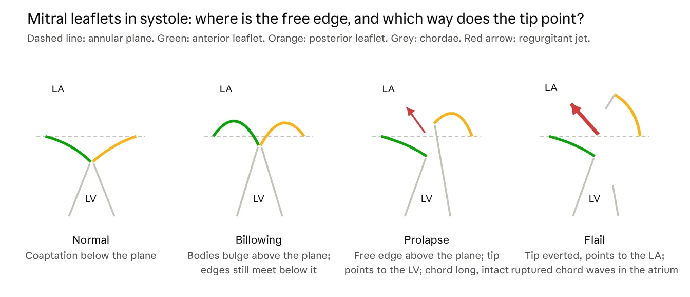
| Billowing | Prolapse | Flail | |
|---|---|---|---|
| What moves above the annular plane | Leaflet body only | Free edge, by 2 mm or more in a long-axis view | Free edge, completely |
| Tip direction in systole | Towards the ventricle | Towards the ventricle | Towards the atrium (everted) |
| Coaptation | Preserved, at or below the plane | Edge of one leaflet overrides the other | None at that segment |
| Chordae | Intact, long | Elongated, intact | Ruptured primary chordae, or a ruptured papillary muscle head |
| What you see | Domed, thick, redundant leaflets | The edge slips behind its partner; no free-moving strands | A whip-like tip with chordal strands moving in the atrium |
| Regurgitation | None to mild | Any grade; often late systolic | Almost always severe |
| Onset | Chronic | Chronic, progressive | Can be sudden: chordal rupture, endocarditis, infarction |
Working rules:
Measure prolapse in a long-axis view (parasternal or mid-oesophageal long-axis). The annulus is saddle-shaped, so the four-chamber view over-calls it. The 2 mm threshold is confirmed; the saddle-shape caution is from memory.
The jet runs away from the abnormal leaflet. A posterior leaflet lesion throws the jet anteriorly along the atrial septum and behind the aortic root; an anterior leaflet lesion throws it posteriorly along the lateral atrial wall. A restricted leaflet (type IIIb) does the opposite: the jet runs towards the tethered leaflet.
Eccentric wall-hugging jets look smaller on colour than they are. Use vena contracta, the proximal convergence zone and pulmonary vein systolic flow reversal.
Name the scallop. P2 is the commonest; use the commissural and long-axis views or a 3D en face view from the atrium.
Why the distinction matters to the surgeon:
A flail leaflet is a marker of severe regurgitation by itself and carries a worse natural history under medical treatment (excess mortality and heart failure in the Mayo Clinic and MIDA registry series; from memory). Guidelines accept surgery in asymptomatic patients when a durable repair is likely, and a flail P2 is the most repairable lesion there is.
Repair technique follows the lesion: a flail or prolapsing posterior scallop gets triangular or quadrangular resection or artificial chordae, with an annuloplasty ring; anterior leaflet prolapse gets artificial chordae or chordal transfer; billowing bileaflet (Barlow) valves need a height-reducing strategy and attention to systolic anterior motion afterwards.
Fibroelastic deficiency typically gives a single flail scallop on thin leaflets in an older patient; Barlow disease gives thick, billowing, multi-segment prolapse with a large annulus in a younger one.
A new flail leaflet with fever is endocarditis until shown otherwise; with chest pain and shock it is papillary muscle rupture (the posteromedial muscle, single blood supply).
Thresholds: Mitral regurgitation
In severe primary MR, operate for symptoms or for LVEF ≤60%, LVESD ≥40 mm or LVESDi ≥20 mm/m²; the 2025 guideline also makes early repair Class I when three of four atrial and right-sided markers are present.
Echo criteria for severe MR
| Parameter | Severe |
|---|---|
| Vena contracta | ≥7 mm (biplane >8 mm) |
| EROA (PISA) | ≥40 mm² |
| Regurgitant volume | ≥60 mL per beat |
| Regurgitant fraction | ≥50% |
| Pulmonary veins | Systolic flow reversal |
| Mitral inflow | E wave dominant, >1.2 m/s |
| Morphology | Flail leaflet, ruptured papillary muscle, large coaptation defect |
| Secondary MR, low flow or elliptical orifice | EROA ≥30 mm² or regurgitant volume ≥45 mL may already be severe |
Primary MR: thresholds for surgery
| Situation | Threshold | Class |
|---|---|---|
| Symptomatic severe primary MR, operable | Any | I |
| Asymptomatic, LV dysfunction | LVEF ≤60%, or LVESD ≥40 mm, or LVESDi ≥20 mm/m² | I |
| Asymptomatic, no LV dysfunction, low risk, durable repair likely | At least three of: AF; resting SPAP >50 mmHg; LA volume index ≥60 mL/m² or LA diameter ≥55 mm; secondary TR at least moderate | I |
| Symptomatic, high surgical risk, suitable anatomy | Transcatheter edge-to-edge repair | IIa |
| Severe MR, surgery planned on another valve | Concomitant mitral surgery | I |
ACC/AHA 2020 differs: early repair in asymptomatic patients with normal LV is IIa when repair likelihood is >95% and expected mortality <1%.
Secondary MR
| Situation | Threshold | Class |
|---|---|---|
| Ventricular secondary MR, symptomatic despite guideline-directed therapy and CRT | LVEF <50%, anatomy and haemodynamics meeting trial criteria: edge-to-edge repair | I |
| Trial-style eligibility (COAPT) | LVEF 20–50%, LVESD ≤70 mm, SPAP ≤70 mmHg, no severe RV dysfunction | Selection criteria |
| Severe secondary MR, CABG planned | Concomitant mitral surgery | I |
| Moderate secondary MR, CABG planned | Concomitant mitral surgery | IIb |
| Atrial secondary MR, symptomatic on optimal therapy | Mitral surgery with AF ablation and LA appendage occlusion | IIa |
| Atrial secondary MR, not a surgical candidate | Edge-to-edge repair | IIb |
Anatomy that changes the operation
| Finding | Threshold | Implication |
|---|---|---|
| Coaptation depth (tenting height) | ≥10 mm | Annuloplasty alone likely to fail in secondary MR |
| Tenting area | >2.5 cm² | As above |
| Posterior leaflet angle | >45° | As above |
| LV end-diastolic diameter | >65 mm | As above; consider replacement |
| Posterior leaflet height | >15 mm | Risk of systolic anterior motion after repair |
| Anterior to posterior leaflet length ratio | <1.3 | Risk of systolic anterior motion |
| Coaptation point to septum distance | <25 mm | Risk of systolic anterior motion |
| Basal septal thickness | ≥15 mm | Risk of systolic anterior motion |
| Mitral annular calcification on CT | Circumferential or extending into the myocardium | Changes debridement and replacement strategy; see CT section |
Thresholds: Mitral stenosis
Clinically significant rheumatic MS is a valve area ≤1.5 cm²; surgery is for patients whose anatomy rules out balloon commissurotomy or who need other cardiac surgery.
| Parameter | Threshold | Meaning |
|---|---|---|
| Mitral valve area (planimetry preferred) | ≤1.5 cm² | Severe |
| Mitral valve area | ≤1.0 cm² | Very severe |
| Pressure half-time | ≥150 ms | Supports severe (≥220 ms very severe) |
| Mean gradient at 60–80 bpm | >10 mmHg | Supports severe; rate and flow dependent |
| Resting SPAP | >50 mmHg | Haemodynamic consequence; trigger in the asymptomatic patient |
| Exercise mean gradient | >15 mmHg | Haemodynamically significant when resting values are equivocal |
Thresholds for intervention
| Situation | Action | Class |
|---|---|---|
| Symptomatic, area ≤1.5 cm², favourable anatomy | Percutaneous mitral commissurotomy | I |
| Symptomatic, area ≤1.5 cm², unsuitable for commissurotomy | Mitral surgery | I |
| Asymptomatic, area ≤1.5 cm², with new AF, prior embolism, dense spontaneous contrast, SPAP >50 mmHg, planned pregnancy or major non-cardiac surgery | Commissurotomy if anatomy favourable | IIa |
| Degenerative MS with extensive annular calcification, symptomatic, experienced centre | Transcatheter mitral valve implantation | IIb |
Findings that favour surgery over balloon commissurotomy
Wilkins score >8, or Cormier group 3 (calcification of any extent on fluoroscopy).
Left atrial thrombus persisting after anticoagulation.
More than mild mitral regurgitation.
Severe or bicommissural calcification, or no commissural fusion.
Concomitant severe aortic or tricuspid disease, or coronary disease needing CABG.
Mitral valve anatomy: aortic-mitral continuity and the bundle of His
Added 18 November 2026. Each statement is tied to a published anatomy source; the pictures are my own schematics drawn from those descriptions, not copies of published figures.

The annulus and the fibrous skeleton
| Structure | Anatomy | Source |
|---|---|---|
| Annulus | D-shaped and saddle-shaped, changing through the cardiac cycle; "annulus" is a misnomer because there is no complete fibrous ring | EuroIntervention 2014; Anatomy of the mitral valvular complex |
| Aortic-mitral curtain | The anterior (aortic) leaflet is in fibrous continuity with the non-coronary and left coronary leaflets of the aortic valve; there is no muscle between the two valves | Anatomy of the mitral valvular complex; Ho, Heart 2002 |
| Fibrous trigones | Dense fibrous expansions at each end of the curtain. The left (anterolateral) trigone adjoins the left coronary cusp; the right (posteromedial) trigone adjoins the non-coronary cusp and the membranous septum | EuroIntervention 2014; Front Cardiovasc Med 2018 |
| Central fibrous body | The right fibrous trigone together with the membranous septum | Ho, Heart 2002 |
| Posterior annulus | Loosely anchored, with no fibrous support; this is why dilatation and calcification occur mostly in the posterior segment | EuroIntervention 2014 |
| Leaflets | The anterior leaflet takes about one third of the circumference but has the larger area; the posterior leaflet takes about two thirds and has three scallops (P1 lateral, P2 middle, P3 medial) | Cardioserv anatomy summary (secondary source) |
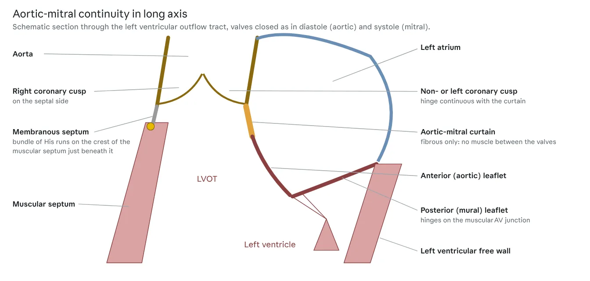
Why the continuity matters to the surgeon
| Situation | Consequence | Source |
|---|---|---|
| Double valve replacement and aortic root enlargement | The curtain is the tissue you divide and patch in a Nicks or Manouguian enlargement, and the tissue shared by both prostheses | ACC TAVR handbook, surgical anatomy chapter |
| Sutures in the anterior mitral annulus | The non-coronary and left coronary cusps lie against the base of the anterior leaflet, with a safety zone of 6 to 10 mm; a deep stitch here can catch or distort an aortic cusp and cause aortic regurgitation | Front Cardiovasc Med 2018 |
| Echo | The posterior aortic wall runs straight into the anterior mitral leaflet, and the septum into the anterior aortic wall; loss of this line is a sign of abnormal connection | ACC TAVR handbook chapter |
| Endocarditis | Infection spreads along the curtain between the valves (abscess of the intervalvular fibrosa); repair may need reconstruction of the curtain (Commando operation) | From memory; not in the sources opened today |
| Systolic anterior motion and neo-LVOT | The anterior leaflet forms the posterior wall of the outflow tract, so it can obstruct after repair or after a mitral prosthesis is placed | From memory |
The conduction axis
| Point | Detail | Source |
|---|---|---|
| AV node | Lies in the right atrium next to the septal tricuspid attachment, between the coronary sinus and the interatrial septum (triangle of Koch) | ACC TAVR handbook chapter |
| Bundle of His | Leaves the node and pierces the central fibrous body at the membranous septum, then divides into the bundle branches | ACC TAVR handbook chapter |
| Relation to the mitral valve | The bundle lies near the right fibrous trigone, at the posteromedial (medial) commissure | Front Cardiovasc Med 2018 |
| Relation to the aortic valve | The membranous septum lies below the interleaflet triangle between the right and non-coronary cusps, which is part of the central fibrous body | ACC TAVR handbook chapter |
| Why it is the only crossing | The fibrous skeleton insulates atria from ventricles; the penetrating bundle is the one muscular connection through it | Teaching summary (secondary source) |
The four structures at risk around the annulus
| Structure | Where | Injury |
|---|---|---|
| Circumflex artery | Runs posteriorly in the AV groove; at risk during annuloplasty | Occlusion or kinking: new lateral wall motion abnormality or ST change coming off bypass |
| Coronary sinus | Skirts the attachment of the posterior leaflet | Laceration or suture through the sinus |
| Bundle of His | Near the right trigone at the medial commissure | Complete heart block |
| Non-coronary and left coronary cusps | Against the base of the anterior leaflet, 6 to 10 mm safety zone | Aortic regurgitation |
The list of structures and their sites is from Front Cardiovasc Med 2018. The injury column is standard surgical teaching and not from that paper. The circumflex is closest to the annulus in the P1 and anterolateral commissure region, more so with left dominance; that detail is from memory.
In theatre
Take shallow, annular bites from the posteromedial commissure across the right trigone, and avoid deep bites into the base of the anterior leaflet.
Place the trigone sutures of an annuloplasty ring first: they mark the ends of the curtain and set the ring size against the anterior leaflet.
After any mitral procedure check the aortic valve on TOE for new regurgitation, the lateral wall for circumflex injury, and the rhythm for heart block.
These three points are surgical teaching from memory, consistent with the anatomy above but not taken from the cited sources.
Mitral valve repair and replacement: session notes, 18 November 2026
Your notes from the cardiac day session, recorded as taught, each checked against a published source where I could find one. The two schematics in the anatomy section above show these relations.


These two pictures are my own schematics of the anatomy and of Carpentier's functional classification. They are not copies of the illustrations in Carpentier's Reconstructive Valve Surgery, which I cannot reproduce; use the book for the original plates.
Anatomy as taught
| As taught | Check | Source |
|---|---|---|
| The left atrioventricular valve; named because it looks like a bishop's mitre | Not checked; standard etymology | None opened |
| Mitro-aortic continuity lies near the bundle of His | Agrees: the right end of the curtain is the right fibrous trigone, where the bundle lies | Front Cardiovasc Med 2018 |
| The annulus fibrosus is not visible from the atrium; it lies deeper, 2 mm external to the visible hinge of the leaflets | Agrees: the fibrous band is not visible from the left atrial side and, when present, lies 2 to 3 mm external to the hinge line. What the surgeon sees is the atrio-valvular junction | Faletra, Atlas of mitral valve imaging, chapter 1 |
| It is a discontinuous band of connective tissue present only along the attachment of the posterior leaflet | Agrees: a thin, discontinuous fibrous string along the posterior attachment; anteriorly the leaflet runs into the aortic-mitral curtain with no discrete ring | IMAIOS anatomy entry; Faletra, Eur Heart J Cardiovasc Imaging 2019 |
| Non-coronary and left coronary aortic cusps are at risk from mitral replacement stitches | Agrees: they lie against the base of the anterior leaflet with a 6 to 10 mm safety zone | Front Cardiovasc Med 2018 |
| The annulus is a three-dimensional saddle whose shape changes through the cardiac cycle | Agrees | EuroIntervention 2014 |
| Two lowest points at the fibrous trigones; two highest points at the midpoints of the anterior and posterior annulus | Agrees in outline. Published wording: the lowest points are at the commissures, which sit beside the trigones, and the anterior part is higher than the posterior, the anterior horn by the aorta being the highest point of all | Ann Cardiothorac Surg 2026; EuroIntervention 2015 |
Surrounding structures as taught
| Structure | As taught | Check | Source |
|---|---|---|---|
| Circumflex artery | Runs between the base of the left atrial appendage and the anterior commissure, 3 to 4 mm from the leaflet attachment, then moves away from the posterior annulus | Site agrees (posterior annulus, at risk during annuloplasty). The 3 to 4 mm figure is not confirmed in anything I opened; I read your "304mm" as 3 to 4 mm. The distance is shorter with a left-dominant circulation (from memory) | Front Cardiovasc Med 2018 for the site |
| Coronary sinus | Close to the posterior leaflet attachment, 5 mm superior to the annulus | Site agrees: it skirts the posterior attachment and often lies in a more atrial position than the AV groove. The 5 mm figure is not confirmed; the distance varies and increases with annular dilatation | Faletra atlas chapter 1; EuroIntervention 2014 |
| Bundle of His | Near the posteromedial trigone | Agrees | Front Cardiovasc Med 2018 |
| Non-coronary and left coronary cusps | Close to the base of the anterior leaflet | Agrees | Front Cardiovasc Med 2018 |
What follows for technique
Because the true annulus is deeper and outside the visible hinge, annuloplasty and valve sutures are passed from the atrial side about 2 mm outside the hinge and aimed towards the ventricle, so that they take the fibrous tissue and not leaflet or atrial wall alone. This is the reasoning usually given with the 2 mm figure; it is from memory and not in the sources above.
Bites are kept shallow in three places: at the anterolateral commissure and P1 (circumflex), along the posterior annulus (coronary sinus), and at the posteromedial commissure and right trigone (bundle of His).
Along the anterior annulus, keep sutures in the hinge and out of the curtain to protect the aortic cusps.
A saddle-shaped annulus lowers leaflet stress (Ann Cardiothorac Surg 2026), which is the argument for saddle-shaped annuloplasty rings.
The figures of 3 to 4 mm and 5 mm, and the "2 mm external" rule, are the ones given in Carpentier's Reconstructive Valve Surgery; I recall them from that text but could not open it today, so they stand as taught.
Papillary muscles and the suspension system
Added 18 November 2026. "Suspension system" is Carpentier's term for the papillary muscles and chordae that hold the leaflets against ventricular pressure. Each line is tied to a source; the picture is my own schematic.

| Component | Anatomy | Source |
|---|---|---|
| Papillary muscles | Two, named for the commissure each lies beneath; the base attaches to the apical third of the ventricle | Adv Clin Exp Med 2021 |
| Anterolateral muscle | Usually a single head, with a dual blood supply from the LAD and circumflex | Adv Clin Exp Med 2021; EuroIntervention 2015 |
| Posteromedial muscle | Usually two heads, with a single supply from the right coronary or the circumflex, which makes it the one vulnerable to ischaemia | Adv Clin Exp Med 2021; EuroIntervention 2015 |
| Territory | The anterolateral muscle serves A1, P1 and the adjoining half of A2 and P2; the posteromedial serves A3, P3 and the other half. Each muscle therefore sends chordae to both leaflets | e-echocardiography anatomy course (secondary source) |
| Marginal (primary) chordae | Insert on the free edge; they prevent prolapse and keep the edges together. Rupture or elongation gives flail or prolapse | Dal-Bianco and Levine, Cardiol Clin 2013; Cardioserv summary (secondary) |
| Secondary chordae, including the two strut chordae | Insert on the ventricular surface near the rough zone; thicker and longer; cutting one does not cause regurgitation. The two thick strut chordae to the anterior leaflet carry most of the load between valve and ventricle | Dal-Bianco and Levine 2013 for insertion; Cardioserv for the rest; the load-bearing point is from memory |
| Basal (tertiary) chordae | Arise directly from the ventricular wall and insert on the base of the posterior leaflet only | Teaching flashcards (secondary source) |
| Commissural chordae | A fan to each commissure, with extra commissural leaflet tissue between A1 and P1 and between A3 and P3 | Dal-Bianco and Levine 2013 for the commissural tissue; the fan description is from memory |
| Function | The chordae resist the tension generated by the papillary muscles in systole | J Clin Med 2020 review |
As taught in the session: the posteromedial papillary muscle is vascularised only from the posterior descending artery; the anterolateral has a double supply. This agrees with the sources in the table: the published wording is a single supply from the right coronary or the circumflex, and the posterior descending artery is the branch concerned, arising from whichever of those two is dominant (EuroIntervention 2015). The link to dominance is from memory. Clinical consequence: an inferior infarct can rupture or tether the posteromedial muscle, while the anterolateral muscle is protected unless both the LAD (diagonal) and circumflex (marginal) territories are lost.
What goes wrong, and what the surgeon does
| Lesion | Mechanism | Operation |
|---|---|---|
| Chordal rupture or elongation | Type II: free edge rises above the annular plane | PTFE neochordae from the papillary muscle head to the free edge, chordal transfer, or resection of the unsupported segment |
| Papillary muscle rupture after infarction | Usually the posteromedial muscle because of its single supply; one head or the whole muscle; torrential regurgitation and shock | Emergency surgery; usually replacement with preservation of what remains, sometimes reimplantation of a single head |
| Papillary muscle displacement | Type IIIb: an infarcted or dilated ventricle pulls the muscles apically and laterally and tethers the leaflets | Undersized ring; add a subvalvular step (papillary muscle approximation or relocation, or cutting secondary chordae) or replace with chordal sparing when tethering is marked |
| Fused, shortened chordae | Type IIIa, rheumatic | Fenestration, splitting of the papillary muscle, or replacement |
| Systolic anterior motion after repair | Excess leaflet height brings the anterior leaflet and its chordae into the outflow tract | Reduce posterior leaflet height, shorter neochordae, larger ring |
The statement that the posteromedial muscle is more exposed to ischaemia is sourced above. The rest of this table is surgical teaching from memory and is not individually sourced.
At replacement, keep the chordae of at least the posterior leaflet: valve-ventricular continuity preserves ventricular geometry and function. This is stated earlier in this tab under replacement; the trial evidence is not re-checked here.
Neochordae are anchored in the fibrous tip of the papillary muscle head, not the muscle belly, and are sized against a reference point such as the annular plane or an adjacent normal segment (from memory).
Sources for the mitral anatomy and suspension-system statements
Checked 18 November 2026. This table replaces the "from memory" and "secondary source" labels in the three sections above. Where a source changed or sharpened a statement, the correction is given.
| Statement | Source | Result |
|---|---|---|
| Kinds of chordae | Lam, Ranganathan, Wigle and Silver, Circulation 1970;41:449, 50 normal valves | The original classification has four kinds by insertion: commissural, rough zone, cleft and basal. "Primary, secondary, tertiary" is the later simplification |
| Commissural chordae | Lam 1970; J Clin Diagn Res 2015 | Confirmed: they insert into and define the commissures, and are branched and fan-shaped |
| Rough zone chordae | Lam 1970 | Insert on the ventricular side of the rough zone, typically splitting into three cords |
| Strut chordae | Lam 1970; Natl J Clin Anat 2020 | Confirmed: two thicker rough-zone chordae to the anterior leaflet, at the 4 and 8 o'clock positions; two were present in every heart in the 2020 series |
| Cleft chordae | Lam 1970 | Added: they insert into and define the clefts between the posterior scallops |
| Basal chordae | Lam 1970 | Confirmed: single strands to the posterior leaflet only |
| Posterior leaflet scallops | Ranganathan, Circulation 1970, companion paper | Three scallops in 46 of 50 hearts, with a large middle scallop in 42 |
| Posteromedial muscle supplied by the posterior descending artery, usually from the right coronary, less often the circumflex | Cardiol J 2022 meta-analysis; Ann Cardiothorac Surg, operative strategies | Confirmed; this is the wording you were taught |
| Anterolateral muscle: LAD and circumflex (obtuse marginal) | Same two sources | Confirmed |
| Posteromedial rupture more frequent | Same two sources; StatPearls | Confirmed: 6 to 12 times more frequent than anterolateral |
| Papillary muscle rupture: timing and frequency | StatPearls | Usually 2 to 7 days after infarction; 0.07 to 0.26% of infarcts; about half have single-vessel disease; partial rupture can present up to 3 months later |
| Papillary muscle rupture: operation | Ann Cardiothorac Surg operative strategies | Confirmed: replacement in the great majority, with CABG in almost half |
| Circumflex distance from the annulus | Dumps, Front Cardiovasc Med 2023 | Supports the taught 3 to 4 mm: mean 4.1 mm (range 3 to 6.5 mm) in left-dominant hearts, closest at P1 |
| Circumflex beside the appendage, then moving away | Thorac Cardiovasc Surg 2020 anatomical study | Supports the taught course: closest in the region of the left auricle (2.02 mm, range 1 to 3.1 mm), then loops away from the annulus |
| Circumflex: other measurements | EuroIntervention 2019 CT study; Bonn CT series 2025 | CT gives larger distances: about 6 to 7 mm in normal hearts; median 5.3 mm in a surgical series, under 4 mm in 23.6% |
| Circumflex: dissenting study | Surgical anatomy of the mitral valve, cadaveric | Mean distances about 7 to 8 mm, closest at P2, and no difference by dominance. So the site of greatest risk is not agreed |
| Circumflex injury | Bonn series 2025; Dumps 2023 | 0.3 to 1.8% of mitral operations; mechanisms are annular sutures distorting or occluding the artery |
| Injuries around the annulus: heart block, aortic cusp distortion, circumflex occlusion | Dumps 2023 | Confirmed as recognised complications of annular sutures |
| Ischaemic regurgitation: subvalvular repair added to a restrictive ring | Nappi, J Am Coll Cardiol 2016, ACC summary | Randomised, 96 patients: papillary muscle approximation improved ventricular remodelling at 5 years (end-diastolic diameter fell 5.8 mm against 0.2 mm); mortality 22.9% against 29.2%, not significant |
| Same, pooled | Nappi, J Thorac Cardiovasc Surg 2022 meta-analysis | Subvalvular procedures gave fewer adverse events; replacement had higher hospital mortality (OR 1.91) but fewer reoperations and readmissions than repair |
| Systolic anterior motion: frequency | Circulation 1993 | 1 to 2% of repairs develop outflow obstruction |
| Systolic anterior motion: predictors | Eur J Cardiothorac Surg, predicting SAM; J Thorac Cardiovasc Surg 2021 | Coaptation-to-septum distance under 25 mm (OR 5.09), posterior leaflet height over 15 mm (OR 3.80), basal septum 15 mm or more (OR 3.63), aorto-mitral angle under 120° (OR 2.74); also a low anterior-to-posterior height ratio, small ventricle and bileaflet prolapse |
| Systolic anterior motion: management | Eur J Cardiothorac Surg 2012; review 2020 | Confirmed: stepwise, with volume loading and beta-blockade first; persistent or severe cases need a second pump run to revise the repair |
Still without a source I could open
The exact Carpentier figures as printed: annulus 2 mm outside the hinge and coronary sinus 5 mm above the annulus. The atlas I cited gives 2 to 3 mm for the first; I found nothing for the second.
The territory of each papillary muscle by scallop, which rests on an echo teaching site.
Strut chordae as the main load path between valve and ventricle, and the evidence that chordal preservation at replacement protects ventricular function. The severe ischaemic regurgitation trial used chordal-sparing replacement, but I did not open a trial of sparing against excision.
Technique points: where sutures are placed relative to the hinge, how neochordae are anchored and sized, and trigone sutures first.
Spread of endocarditis along the aortic-mitral curtain and its reconstruction.
Mitral valve disease: causes, classification, physiology and surgical pitfalls
Added 18 November 2026. Each line carries its source; lines without one are marked from memory. Thresholds for intervention are in the "Thresholds:" sections earlier in this tab and are not repeated.
Causes
| Lesion | Cause | Notes | Source |
|---|---|---|---|
| Primary MR (the valve is diseased) | Degenerative: myxomatous (Barlow) disease or fibroelastic deficiency | The commonest cause; gives billowing, prolapse or flail | ESC e-journal, primary MR; review, PMC6516795 |
| Primary MR | Rheumatic | Affects the mitral valve in up to half of rheumatic heart disease; regurgitation predominates in the young, stenosis with age | ESC e-journal, causes of mitral incompetence |
| Primary MR | Endocarditis, connective tissue disease, anorectic drugs, radiation, congenital cleft, trauma, mitral annular calcification | Less common | Same ESC article; Merck Manual |
| Secondary MR (the valve is normal) | Ventricular: ischaemic or dilated cardiomyopathy | A disease of the left ventricle: remodelling or regional wall motion abnormality tethers the leaflets | PMC6516795 |
| Secondary MR | Atrial: left atrial dilatation, usually long-standing AF | Annular dilatation with normal leaflet motion | Healio review |
| Acute MR | Papillary muscle rupture after infarction, chordal rupture, endocarditis with perforation, trauma | No time for compensation | Echo text chapter; Healio review |
| Mitral stenosis | Rheumatic | The usual cause: commissural fusion, thickened immobile leaflets, shortened matted chordae. Up to half give no history of rheumatic fever | Merck Manual, mitral stenosis; Healio, mitral stenosis |
| Mitral stenosis | Calcific (mitral annular calcification extending into the leaflets) | Elderly; a tubular stenosis without commissural fusion; much commoner than rheumatic disease but less often severe | ASE tutorial summary (secondary source) |
| Mitral stenosis | Congenital, radiation, lupus, rheumatoid disease, carcinoid, prosthetic dysfunction | Rare | Healio, mitral stenosis |
| Mimics of mitral stenosis | Left atrial myxoma, ball thrombus, large vegetation, cor triatriatum, pulmonary vein stenosis after AF ablation | Obstruct inflow without valve disease | Healio, mitral stenosis |
Classification
Mitral regurgitation
| System | Classes | Source |
|---|---|---|
| By cause | Primary (organic) or secondary (functional); secondary is ventricular or atrial | ESC e-journal; Healio |
| By time course | Acute, chronic compensated, chronic decompensated | Summary of the three phases (secondary source) |
| By leaflet motion (Carpentier) | I normal motion; II excess motion; IIIa restricted in systole and diastole; IIIb restricted in systole | See the picture and table earlier in this tab; classification not re-sourced today |
| By severity | Mild, moderate, severe on integrated echo criteria | See "Thresholds: Mitral regurgitation" above |
Mitral stenosis
| Grade | Valve area | Pressure half-time | Mean gradient | Pulmonary artery systolic pressure |
|---|---|---|---|---|
| Progressive | Over 1.5 cm² | Under 150 ms | Normal | |
| Severe | 1.5 cm² or less | 150 ms or more | Usually 5 to 10 mmHg | Often over 50 mmHg |
| Very severe | 1.0 cm² or less | 220 ms or more | Usually over 10 mmHg |
Sources: areas and half-times from the ACC/AHA 2020 staging as reproduced in the Korean Society of Echocardiography 2023 position paper and the ASE tutorial summary. The gradient column is heart-rate dependent and differs between tables (McMaster table gives under 5, 5 to 10 and over 10 mmHg), so quote the gradient with the heart rate.
Normal valve area is 4 to 6 cm² (summary).
Valve area by pressure half-time is 220 divided by the half-time in milliseconds; planimetry is the reference method in rheumatic disease (Silbiger, J Am Soc Echocardiogr 2021).
Wilkins score: four features each scored 1 to 4 (leaflet mobility, leaflet thickening, calcification, subvalvular thickening), total 4 to 16. A score of 8 or less favours balloon commissurotomy; 12 or more favours surgery (exam summary, secondary source; the four components are from memory).
ACC/AHA stages for both lesions: A at risk, B progressive, C asymptomatic severe, D symptomatic severe (Korean position paper table).
Physiology

Mitral regurgitation
| Phase | What happens | Source |
|---|---|---|
| Acute | The regurgitant volume enters a normal-sized, non-compliant left atrium, so left atrial and pulmonary pressures rise abruptly: pulmonary oedema. The ventricle empties more completely, so end-systolic volume falls and ejection fraction is above normal, yet forward output is low | Echo text chapter; AMBOSS |
| Chronic compensated | Eccentric hypertrophy enlarges the ventricle; a large compliant atrium absorbs the volume at normal pressure; total stroke volume is high and ejection fraction stays normal | AMBOSS; pulsenotes (secondary) |
| Chronic decompensated | Contractility falls; end-systolic and end-diastolic volumes rise; stroke volume falls; left atrial pressure rises with pulmonary hypertension | AMBOSS |
Regurgitant fraction is regurgitant volume divided by total stroke volume (Healio).
Severity is dynamic: it depends on afterload, the left ventricle to left atrium pressure gradient, atrial compliance and the systolic orifice size (Healio). This is why the jet looks smaller under anaesthesia.
Ejection fraction overestimates function because part of the stroke volume is ejected into a low-pressure atrium. An ejection fraction of 60% or less therefore already means dysfunction, and it falls after the valve is made competent. That reasoning is from memory; the 60% threshold is in the thresholds section above.
On the pressure-volume loop there is no true isovolumic contraction or relaxation, because the ventricle ejects into the atrium as soon as pressure rises (from memory).
Mitral stenosis
A diastolic gradient develops between left atrium and ventricle; the raised left atrial pressure is transmitted to the pulmonary veins and the right heart (Healio).
Gradient = 4 × velocity squared, so doubling the flow velocity quadruples the gradient (Healio).
Tachycardia shortens diastolic filling time, so left atrial pressure rises and pulmonary congestion follows (summary).
Atrial contraction supplies about 20% of filling; losing it in AF, together with the fast rate, causes abrupt deterioration (Healio; Voka summary).
Worked figure: with a left ventricular diastolic pressure of 5 mmHg, a 20 mmHg gradient gives a left atrial pressure of about 25 mmHg (summary).
Pulmonary hypertension is at first passive; later, obliterative changes in the pulmonary vessels give a fixed component, the "second stenosis", followed by right ventricular failure and functional tricuspid regurgitation (Silbiger 2021).
The left ventricle is underfilled and usually small with preserved contractility (from memory). Pregnancy unmasks stenosis because of the rise in blood volume (Silbiger 2021).
Gorlin formula: valve area = flow across the valve during diastole divided by a constant times the square root of the mean gradient (from memory; not opened today).
Surgical considerations and pitfalls
| Stage | Consideration or pitfall | Source |
|---|---|---|
| Before | Exclude significant aortic regurgitation (it defeats antegrade cardioplegia and distends the ventricle); assess annular calcification, left atrial size and appendage thrombus | Czesla, Ann Cardiothorac Surg 2013 |
| Before | Predict systolic anterior motion from the pre-bypass TOE: coaptation-to-septum distance under 25 mm, posterior leaflet over 15 mm, basal septum 15 mm or more, aorto-mitral angle under 120° | Eur J Cardiothorac Surg |
| Before | Grade regurgitation awake: general anaesthesia lowers afterload and under-calls it | From memory |
| Annular sutures | Four structures: circumflex (0.3 to 1.8% injury), coronary sinus, bundle of His, aortic cusps | Dumps 2023; see the anatomy section above |
| Repair | Residual regurgitation more than mild, mean gradient over 5 mmHg, short coaptation or systolic anterior motion on the post-bypass TOE: go back on | Earlier in this tab ("Checks after repair"); not re-sourced today |
| Repair | Systolic anterior motion: volume, stop inotropes, raise afterload, beta-blockade; revise if it persists | Eur J Cardiothorac Surg 2012 |
| Replacement | Left ventricular rupture: rare and often fatal. Type 1 at the atrioventricular groove, type 2 at the mid-ventricular wall (linked to papillary muscle resection). Risk factors: older age, rheumatic stenosis, annular calcification | David, JTCVS Open 2020, after Treasure 1974 |
| Replacement | More likely in women and small ventricles; most die if it presents after closure | Teaching summary (secondary source) |
| Replacement | Prevention: keep the posterior leaflet and chordae, which protects against rupture and preserves geometry; do not over-debride calcium; do not oversize; do not lift the heart once the prosthesis is in | Sersar, Clin Med Cardiol 2009 for chordal preservation; the other three from memory |
| Replacement | If the ventricle ruptures: back on bypass, arrest, explant the valve and patch from inside with pericardium, then reimplant | David 2020 |
| Annular calcification | Decalcify only as far as needed to seat sutures; options are to suture through or around the bar, or a valve-in-calcium approach in selected cases | From memory; the AATS 2025 consensus is listed in this doc but not opened today |
| De-airing | Left-sided air embolises to the right coronary: inferior ST change and right ventricular dysfunction. Treatment on bypass: vents on, raise perfusion pressure | Robotic mitral complications table for management; the coronary pattern from memory |
| Exposure | Retractor tears of the left atrium; injury to the pulmonary artery or appendage from the cross-clamp in minimally invasive surgery | Czesla 2013; robotic complications table |
| After | New lateral wall motion abnormality means circumflex injury until proven otherwise; new complete heart block; paravalvular leak; haemolysis; left ventricular dysfunction unmasked by a competent valve | Dumps 2023 for the first two; the rest from memory |
| Mitral stenosis | Search the appendage for thrombus and exclude or ligate it; expect pulmonary hypertension and a struggling right ventricle coming off bypass; the small ventricle is preload-dependent and intolerant of tachycardia | From memory |
What to say in a viva
Name the cause and whether the regurgitation is primary or secondary.
Name the Carpentier type and the segment.
Give severity and what the ventricle and pulmonary pressures have done.
State the indication, then repair or replace and why.
Name the four structures at risk and how you will check each before leaving theatre.
Mitral annular calcification
Added 18 November 2026. The guideline is the AATS 2025 expert consensus document, J Thorac Cardiovasc Surg 2025;170:502-522 (El-Eshmawi and colleagues; 33 recommendations in 5 topics). I could read its abstract and a published commentary that reproduces its grading table, not the full text, so most classes of recommendation are missing below and are marked as such.

What it is
| Point | Detail | Source |
|---|---|---|
| Definition | Chronic, progressive calcium deposition in the fibrous mitral annulus, usually starting posteriorly | Ascione and Denti, Front Cardiovasc Med 2022 |
| Prevalence | 8 to 15%, rising with age; commoner in women | Ascione 2022; Ann Cardiothorac Surg 2025 review |
| Risk factors | Age, female sex, hypertension, hyperlipidaemia, diabetes, chronic kidney disease | Ann Cardiothorac Surg 2025 systematic review; Cardiac Interventions Today 2024 |
| Associations | Coronary disease and higher cardiovascular mortality; conduction disease | Ascione 2022; Cardiac Interventions Today 2024 |
| Caseous calcification | 1 to 3% of cases: a soft periannular mass with a lucent centre on echo; can seed endocarditis and embolise | Cardiac Interventions Today 2024 |
| Effect on the valve | Stenosis (a tubular inflow, no commissural fusion), regurgitation, or both | See the causes table above |
| Treatment of the calcium itself | None. Surgery is only for the associated regurgitation or stenosis; no drug slows progression | Medscape; Cardiac Interventions Today 2024 |
| Untreated with significant valve disease | Poor outcome, which intervention may improve | Ascione 2022 |
Imaging and grading
| Stage | Circumferential extent | Leaflet, trigone or subvalvular involvement | Thickness of the bar |
|---|---|---|---|
| Mild | Under 180° | None | Under 5 mm |
| Moderate | 180 to 270° | One leaflet or the posterior trigone; no subvalvular extension | 5 to 10 mm |
| Severe | Over 270° | Both leaflets, the anterior commissure, or subvalvular extension | Over 10 mm |
Grading table: AATS 2025 as reproduced in the commentary.
CT should be done in every patient, in addition to echo, to map the extent and distribution of calcium (AATS 2025, class not seen). CT is the reference test for detection and classification (Ascione 2022).
What to read from the CT: anterior, posterior, circumferential and trigonal involvement, depth, leaflet involvement, annular size, calcium density and distance to the circumflex (Cleveland Clinic experience, Ann Cardiothorac Surg 2025).
The Guerrero score was built from 87 CT scans to predict anchoring of a transcatheter valve in calcium; it and the Agatston score were not designed for surgical planning (Ascione 2022; Cleveland Clinic 2025).
Check for calcium extending into the aortic-mitral curtain: it changes the operation (commentary on AATS 2025).
3D TOE completes the surgical plan; moderate or severe disease in a high-risk patient goes to a multispecialty valve team (commentary on AATS 2025).
Why it is dangerous to operate on
Atrioventricular groove rupture, circumflex injury and embolism of debris are the three classic risks (Ascione 2022).
Conduction block and paravalvular leak are also commoner (Cardiac Interventions Today 2024 for conduction; leak from memory).
Standard risk scores do not capture the added risk (commentary on AATS 2025).
Surgical strategy
| Strategy | What is done | Best for | Source |
|---|---|---|---|
| Resect | En bloc decalcification of the bar, reconstruction of the annulus, then repair or replacement | Limited calcium with healthy surrounding tissue | AATS 2025 abstract: both strategies are reasonable in selected patients; selection from the commentary |
| Respect | Little or no debridement; sutures placed around or through the bar, or the prosthesis seated above it | High-risk patients, calcium extending into the ventricle, poor tissue | Same |
| Rebuilding the annulus after resection | A felt strip the width of the groove for a narrow defect; a pericardial patch sewn to ventricular and atrial muscle when the defect is wide or groove fat is visible, with pledgets on the ventricular side | After any en bloc resection | Cleveland Clinic 2025 |
| Ultrasonic debridement | An adjunct to help place sutures and seat the prosthesis | Either strategy | AATS 2025: Class IIb, level C-LD (the only class I could confirm) |
| Repair | Possible when leaflets are pliable, calcium is limited and resectable and there is spare tissue, typically prolapse with posterior calcium. Always with a ring: repair failure in these patients was linked to omitting annuloplasty | Degenerative disease with calcification | Commentary; Cleveland Clinic 2025 |
| Replacement | Preferred over a non-durable repair, and for extensive disease, an infected bar, or when stenosis is the main lesion. Keep the chordae to limit mid-ventricular tears; buttress the cuff with felt | Most severe cases | Commentary |
| Sizing | Consider body surface area and ventricular cavity size to avoid patient-prosthesis mismatch | All replacements | Cleveland Clinic 2025 |
| Calcium in the aortic-mitral curtain | May need aortic valve or root replacement with reconstruction of the intervalvular fibrosa (Commando operation) | Identified on CT beforehand | Commentary |
| Hybrid transatrial valve-in-calcium | Open left atrium on bypass; resect the anterior leaflet, add septal myectomy if needed, place anchoring sutures, and deploy a balloon-expandable transcatheter valve with a felt cuff (off-label) | Anatomy otherwise inoperable; planned in advance | Commentary |
| Transcatheter valve-in-calcium | Transseptal or transapical balloon-expandable valve | No surgical option | AATS 2025 topic 4; details not seen |
Outflow obstruction and other limits
A valve placed inside the calcium pushes the anterior leaflet towards the septum. Predict the neo-LVOT on CT; prevent obstruction by resecting the anterior leaflet or by septal myectomy (commentary). Alcohol septal ablation and leaflet laceration are also used before transcatheter implants (from memory; not in the sources opened).
Transcatheter series in calcified annuli report high rates of embolisation, mortality and outflow obstruction (Ascione 2022).
One-year survival after hybrid valve-in-calcium is poor, reflecting the patients selected (commentary; no figure given).
Evidence for the durability of repair is limited, and there are no devices designed for this anatomy (commentary).
Care should be concentrated in experienced valve centres (commentary on AATS 2025).
Practical rules (from memory, not sourced)
Remove only the calcium that stops a suture or the prosthesis from seating; every extra millimetre of debridement moves you towards the groove.
Irrigate and suction after any debridement, with a swab in the ventricle, to catch debris.
Do not lift the heart after the valve is in.
Expect a smaller prosthesis than the ventricle would suggest and plan for it.
The AATS document is listed with its identifier in the handbook cross-check on the Cardiac day tab; this is the first time its content has been checked here, and only through the abstract and the commentary.
Types of mitral regurgitation, with recent literature
Added 18 November 2026. The pictures are my own schematics. The Carpentier leaflet-motion picture is earlier in this tab; this section classifies by mechanism and cause, which is how the 2024 to 2026 literature is organised.

The types
| Type | Description | Leaflet motion | Typical jet | Source |
|---|---|---|---|---|
| Primary, degenerative: fibroelastic deficiency | Thin, translucent leaflets; usually one segment (most often P2) prolapses or flails on a ruptured chord; older patient, short history | Carpentier II | Eccentric, directed away from the prolapsing leaflet | ESC e-journal for the two forms; the features are from memory |
| Primary, degenerative: Barlow disease | Thick, redundant, billowing leaflets in many segments, elongated chordae, large annulus, often annular disjunction; younger patient, long history of a murmur | Carpentier II, often bileaflet | Late-systolic, often central or multiple | Same; features from memory |
| Primary, rheumatic | Thickened leaflets, fused commissures and chordae; mixed stenosis and regurgitation | IIIa | Central or posterior | ESC e-journal, causes |
| Primary, endocarditis | Perforation or chordal destruction, vegetations | I or II | Through the leaflet body if perforated | Same |
| Primary, other | Cleft, radiation, connective tissue disease, drugs, annular calcification | Varies | Varies | Merck Manual |
| Secondary, ventricular | Normal leaflets tethered by a dilated or infarcted ventricle and displaced papillary muscles. Asymmetric (inferior infarct, posterior leaflet tethered, posterior jet) or symmetric (global dilatation, central jet) | IIIb | Central or posterior | Pagnesi, ESC Heart Fail 2025 for tethering; the symmetric and asymmetric patterns are from memory |
| Secondary, atrial | Left atrial and annular dilatation with preserved ventricular size and function; the leaflets are normal but too small for the orifice, leaving a central gap. Seen in chronic AF and heart failure with preserved ejection fraction | I | Central | Clin Res Cardiol 2025; Pagnesi 2025 |
| Secondary, atrial with tethering | With further atrial enlargement the posterior annulus is displaced onto the crest of the ventricular wall; the posterior leaflet is bent and tethered ("hamstringing") and the anterior leaflet overrides it | I with IIIb | Eccentric, posteriorly directed | Pagnesi 2025; Nappi, J Thorac Dis 2024 |
| Acute | Papillary muscle or chordal rupture, perforation; normal-sized atrium, pulmonary oedema, short soft murmur | II or I | Often eccentric | See the physiology section above |
| Mixed | Two mechanisms together, for example prolapse in a dilated ventricle | Combination | From memory |
Recent literature
| Topic | Finding | Source |
|---|---|---|
| Atrial functional regurgitation: definition | Now recognised as a distinct entity: regurgitation from left atrial dilatation and annular remodelling without significant left ventricular disease | AATS expert consensus on atrial functional MR, summary |
| Two definitions in use | The 2022 JACC expert consensus definition is broader and includes atriogenic tethering; the 2025 ESC/EACTS guideline definition is narrower and may exclude it | J Cardiothorac Vasc Anesth 2026 review |
| Atrial functional: mechanism | 3D echo shows an increased angle between annulus and posterior leaflet tip; AF also removes annular contraction | Pagnesi 2025; Cardiovascular Science 2026 review |
| Atrial functional: treatment | Because the leaflets are structurally normal and the problem is annular dilatation, isolated ring annuloplasty is effective and durable; transcatheter edge-to-edge repair may be considered in high-risk patients with suitable anatomy after rhythm control and medical optimisation | Cardiovascular Science 2026; AATS consensus summary |
| Leaflet adaptation | Leaflet area grows in response to annular dilatation or tethering; an insufficient leaflet-to-annulus area ratio predicts residual regurgitation after edge-to-edge repair | Mechanisms of MR, 3D echo review |
| MATTERHORN (N Engl J Med 2024) | Edge-to-edge repair against surgery in heart failure with secondary regurgitation: composite of death, heart failure admission, stroke, reintervention or assist device at 1 year 16.7% against 22.5%, non-inferior; major safety events 14.9% against 54.8% | PubMed abstract |
| MATTERHORN: detail | Regurgitation grade 2+ or less in 96% against 99%; grade 0 or 1 in about 75% against 87%; 72% of the surgical arm had repair. Criticised for a wide non-inferiority margin and no medical arm | Eur Heart J journal scan; TCTMD |
| RESHAPE-HF2 (2024) | Edge-to-edge repair with medical therapy in moderate-to-severe secondary regurgitation: results align with COAPT more than MITRA-FR, mostly through fewer heart failure admissions; patients had less severe regurgitation than in COAPT, which questions the current orifice-area threshold | Eur Heart J Open 2024 |
| Proportionate and disproportionate regurgitation | Offered to explain COAPT (benefit; more regurgitation relative to ventricular size) against MITRA-FR (no benefit). A MITRA-FR post hoc analysis found no benefit even in the "disproportionate" subgroup, and RESHAPE-HF2 patients do not fit the framework cleanly | EuroIntervention 2025 review |
| Ischaemic regurgitation: subvalvular repair | Papillary muscle approximation added to a restrictive ring improved remodelling at 5 years in a 96-patient randomised trial | See the sources table above |
| Primary regurgitation: earlier surgery | The 2025 ESC/EACTS guideline makes repair Class I in low-risk asymptomatic patients without ventricular dysfunction when three of four atrial and right-sided criteria are met and a durable repair is likely | Summary of new recommendations; thresholds are in "Thresholds: Mitral regurgitation" above |
| Mitral annular calcification | AATS 2025 consensus: grading by CT, resect or respect | See the section above |
What each type means for the operation
| Type | Operation | Status |
|---|---|---|
| Fibroelastic deficiency | Repair nearly always possible: limited resection or neochordae, with a ring | From memory |
| Barlow | Repair in experienced hands: reduce posterior height, multiple neochordae, large ring; watch for systolic anterior motion | From memory; predictors of systolic anterior motion are sourced above |
| Rheumatic | Usually replacement; repair in selected pliable valves | From memory |
| Endocarditis | Repair if tissue allows (patch, neochordae); replacement if destruction is extensive | From memory |
| Ventricular secondary | Treat the ventricle first (medical therapy, resynchronisation, revascularisation). Then edge-to-edge repair or surgery by Heart Team; at surgery an undersized ring with or without a subvalvular step, or chord-sparing replacement | Trials above |
| Atrial secondary | Ring annuloplasty with AF ablation and appendage closure | Cardiovascular Science 2026 for the ring; the ablation and appendage part follows the AF section in tab 2 |
| Atrial with tethering | A ring alone may leave a leak: consider posterior leaflet augmentation or a different ring strategy | From memory; I found no trial |
| Acute papillary muscle rupture | Emergency replacement | Sourced above |
Points for a viva
Classify twice: by cause (primary or secondary, and which secondary) and by leaflet motion (Carpentier type and segment).
Jet direction tells the mechanism: away from a prolapsing leaflet, towards a restricted one, central with pure annular dilatation.
Atrial functional regurgitation is the new category: normal ventricle, big atrium, AF, and it does well with a ring.
In ventricular secondary regurgitation the valve is the consequence; MATTERHORN makes edge-to-edge repair an accepted alternative to surgery, with the caveats above.
Mitral valve trials and the surgical approach
Added 18 November 2026. Each row is tied to a source I opened in search results, or marked "from memory".
Access: how to get to the valve
| Access | What it is | Evidence | Status |
|---|---|---|---|
| Median sternotomy | Standard; any pathology, any concomitant procedure | Comparator arm in UK Mini Mitral | Sourced below |
| Right minithoracotomy, thoracoscopic | 4th intercostal space, femoral bypass, transthoracic clamp or endoballoon, long-shafted instruments | UK Mini Mitral: the only multicentre randomised trial | Trial sourced; technique from memory |
| Robotic | Same route with robotic arms through ports | No randomised trial that I know of; observational series only | From memory |
| Lower hemisternotomy, right anterolateral thoracotomy (redo, beating or fibrillating heart) | Alternatives for redo surgery and a hostile sternum | No trial | From memory |
UK Mini Mitral (Akowuah, JAMA 2023;329:1957). 330 adults with degenerative regurgitation in 10 UK centres, randomised to minithoracotomy or sternotomy repair by an expert in that approach. Primary outcome, change in SF-36 physical function at 12 weeks: difference 0.68 (95% CI −1.89 to 3.26), so mini was not superior. Repair rate 95% mini against 97% sternotomy; safety and repair quality at 1 year similar; hospital stay shorter with mini. Sources: PubMed, ACC summary, Healio. Viva line: the choice of access is the patient's and surgeon's preference, not a difference in outcome, provided the surgeon is expert in it.
Exposure: which atrial incision
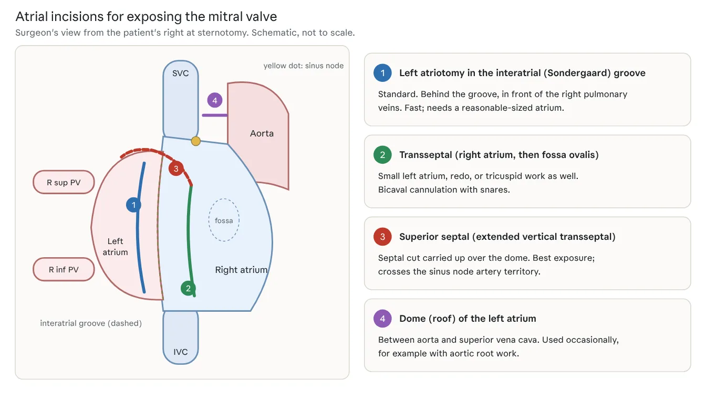
| Incision | Use | Drawback | Source |
|---|---|---|---|
| Left atriotomy through the interatrial (Sondergaard) groove | Default. Anterior to the right pulmonary veins, posterior to the groove | Poor view with a small atrium, deep chest or acute pathology | Texas Heart Inst J 2024 |
| Transseptal through the right atrium | Small left atrium, redo, concomitant tricuspid surgery | Two suture lines; needs bicaval cannulation | Heart Asia |
| Superior septal (extended vertical transseptal, Guiraudon) | Widest exposure | Divides the sinus node artery in many patients: junctional rhythm, pacing | Rows below |
| Dome of the left atrium | Occasional, with aortic root work | Awkward closure, bleeding behind the aorta | From memory |
Evidence on the incision:
| Study | Finding | Source |
|---|---|---|
| Randomised, 91 patients: superior septal against left atriotomy | Permanent pacemaker 10.6% against 4.5%; no difference in mortality; rhythm change from baseline significant only in the superior septal group | Aydin, Rev Bras Cir Cardiovasc 2014 |
| Retrospective, 241 patients, three incisions | Temporary pacing 49.2% superior septal, 30.5% transseptal, 25.5% left atriotomy (p=0.013); permanent pacemaker in one patient only | Turk J Thorac Cardiovasc Surg |
| Retrospective, 207 patients, three incisions | No difference in pacemaker, complications or mortality; direct left atriotomy had the shortest clamp and bypass times; the superior septal incision was used mostly for acute pathology | Texas Heart Inst J 2024 |
Tips for exposure (from memory): develop the groove well, table tilted left and head up, snare or retract the cavae, keep the aortic root empty, and extend the incision behind the inferior cava rather than upward.
Trials that decide what is done to the valve
| Question | Trial | Result | Source |
|---|---|---|---|
| Severe ischaemic regurgitation: restrictive ring or chord-sparing replacement | CTSN, 251 patients | 2-year mortality 19.0% against 23.2% (no difference); ventricular volume no different; recurrent moderate or severe regurgitation 58.8% after repair against 3.8% after replacement; more heart failure events after repair | N Engl J Med 2016;374:344 |
| Moderate ischaemic regurgitation: add a ring to CABG | CTSN, 301 patients | No difference in ventricular volume or death at 2 years; residual moderate or severe regurgitation 32.3% with CABG alone against 11.2% with the ring; more neurological events and supraventricular arrhythmia with the ring | N Engl J Med 2016;374:1932 |
| Tricuspid ring during degenerative mitral surgery (moderate regurgitation, or less with a dilated annulus) | CTSN, 401 patients | 2-year composite 3.9% against 10.2%, driven by less progression of tricuspid regurgitation; mortality no different; permanent pacemaker 14.1% against 2.5% | N Engl J Med 2022; pacemaker figures |
| Papillary muscle approximation with a ring | Nappi, 96 patients | Better remodelling at 5 years | In the sources table above |
| Edge-to-edge repair against surgery, secondary regurgitation | MATTERHORN | Non-inferior at 1 year | In the regurgitation types section above |
| Edge-to-edge repair against surgical repair, primary regurgitation | REPAIR MR (moderate-risk or older patients; first patient July 2020) and PRIMARY (450 patients aged 60 or over; recruiting, completion listed as 2030) | No results yet | REPAIR MR design; PRIMARY registry entry |
| AF ablation during mitral surgery | CTSN, N Engl J Med 2015 | More freedom from AF at 1 year, more pacemakers | From memory; not re-checked today |
| Early surgery against watchful waiting in asymptomatic severe primary regurgitation | No completed randomised trial; observational data only | Guideline thresholds are in "Thresholds: Mitral regurgitation" above | From memory |
Points for a viva
Access: mini is equivalent, not better, on recovery at 12 weeks (UK Mini Mitral).
Incision: groove first; transseptal for a small atrium or tricuspid work; superior septal buys exposure at the cost of rhythm disturbance.
Severe ischaemic regurgitation: replace with chordal sparing if a repair is unlikely to last. Moderate: revascularise, and a ring trades less regurgitation for more early events.
Tricuspid ring for moderate regurgitation or a dilated annulus prevents progression but costs pacemakers.
Segmental leaflet analysis
Added 18 November 2026. Purpose: to say exactly where the lesion is (segment) and what it is (Carpentier type), first on the pre-bypass echo and then with nerve hooks in the arrested heart.

Nomenclature
| Point | Detail | Source |
|---|---|---|
| Eight segments | Three true posterior scallops (P1, P2, P3) separated by two indentations, the three facing areas of the anterior leaflet (A1, A2, A3), and two commissures | Berrebi, Ann Cardiothorac Surg 2015 |
| P1 | Next to the anterolateral commissure and the left atrial appendage; anterior, lateral, superior | Intraoperative TOE roadmap, Ann Cardiothorac Surg |
| P3 | Next to the posteromedial commissure; posterior, medial, inferior | Same |
| P2 | The middle scallop, and the one most often diseased in fibroelastic deficiency | Same |
| Alternative (Duran) nomenclature | Splits by chordal origin into anterolateral and posteromedial halves | From memory |
At operation (Carpentier's method)
| Step | What is done | Source |
|---|---|---|
| 1. Expose and inspect | Jet lesions on the atrial wall, annular dilatation or calcium, excess tissue, perforation, ruptured chordae or papillary muscle | Mitral Valve Surgery chapter, Springer for the inspection list; jet lesions from memory |
| 2. Choose a reference point | P1 is usually free of prolapse, so it is the reference | Loulmet, Ann Cardiothorac Surg 2013 |
| 3. Compare free edges with nerve hooks | A1 against P1, then A2, P2, A3 and P3 | Same |
| 4. Classify each segment | Edge above the reference is prolapse (type II); edge that cannot be lifted to the plane is restriction (type III); normal motion with a leak is type I | Springer chapter for prolapse or restriction; the type mapping is in the Carpentier picture above |
| 5. Commissures and subvalvular apparatus | Check both commissures, chordal length, thickening or fusion, and the papillary muscles | From memory |
| 6. Saline test | Fill the ventricle: look for a symmetrical closure line parallel to the posterior annulus, with the posterior leaflet taking a third or less of the orifice | From memory |
P1 can itself be abnormal (Barlow disease, commissural prolapse); then use the commissure or the annular plane as the reference (Springer chapter mentions the commissures as an alternative reference).
On echo
| View | Segments | Source |
|---|---|---|
| TOE mid-oesophageal 0° (four-chamber) | A2 and P2 at the tips; with the aortic valve in view, A1 and P1 | Cardiovascular Ultrasound 2014 |
| TOE commissural, about 60° | P1 laterally, A2 in the middle, P3 medially | Same |
| TOE two-chamber, about 90° | P3 and the anterior leaflet | From memory |
| TOE long axis, about 135° | A2 and P2 | Same source as the first row |
| TOE 3D en face | The surgeon's view: all segments at once | Same |
| TTE parasternal long axis | A2 and P2 | Echo evaluation of MR, figure 4 |
| TTE parasternal short axis | All six segments | Same |
| TTE apical four-chamber | A3, A2, P1 | Same |
| TTE apical two-chamber | P3, A2, P1 | Same |
Carpentier's rule, as reported by his echocardiographer: the first step of a successful repair is to look at the pre-bypass echo together and agree the valve analysis (Berrebi 2015).
Reporting it
State type and segment together, for example "type II, P2 flail with ruptured chordae, annulus dilated". That sentence fixes the plan: which segment to treat, and that a ring is needed.
Mitral annular calcification: regurgitation or stenosis?
Added 18 November 2026. Both. It can cause either, or mixed disease, and in population studies regurgitation is the commoner of the two.
| Point | Detail | Source |
|---|---|---|
| Either lesion | Annular calcification alters annular and leaflet mechanics and can cause stenosis, regurgitation or mixed dysfunction | 2025 review |
| How often | Two population studies: related stenosis in 2.2% and 6.6%; significant related regurgitation in 11.9% and 9.5% | Museedi and Le Jemtel, J Clin Med 2024 |
| Mechanism of stenosis | The calcium stops the annulus dilating in diastole and restricts the leaflets from their base; the orifice is narrowed at the annulus while the leaflet tips stay free | Tendyne MAC protocol; JACC 2020 review on calcific stenosis |
| Contrast with rheumatic stenosis | Rheumatic: commissural fusion and tip restriction, funnel shape. Calcific: no commissural fusion, so balloon valvotomy does not help | From memory |
| Mechanism of regurgitation | Loss of the annular sphincter in systole, a stiff or shortened posterior leaflet, and chordal traction as the calcium lifts the leaflet base | From memory |
| Progression | About a third progress within 18 to 36 months, by gradient and by arc of calcium | Museedi and Le Jemtel |
| Assessment trap | Pressure half-time is unreliable with a stiff ventricle; use mean gradient at a stated heart rate and planimetry on 3D or CT | Gradient point from the JACC 2020 review; the half-time point from memory |
Viva line: annular calcification is a marker more than a lesion; when it does cause valve disease it is more often regurgitation or mixed disease than pure stenosis, and the stenosis it causes is at the annulus, not the commissures.
Mitral repair techniques in detail
Added 18 November 2026. Operative steps are from memory unless a source is given; the principles and the trial data are sourced.
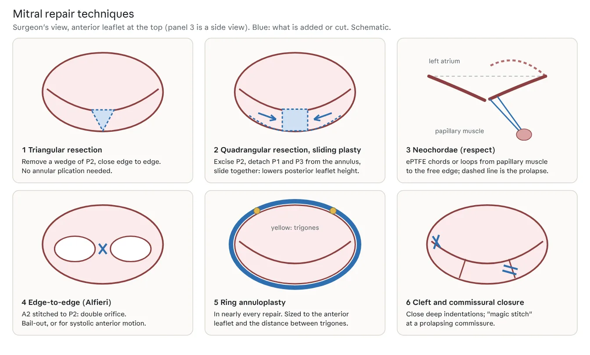
Operative drawings, step by step
These are my own schematics, not copies of an atlas, and the steps drawn are from memory. Check them against an operative atlas (Carpentier's Reconstructive Valve Surgery, or the Khonsari atlas) before relying on them.
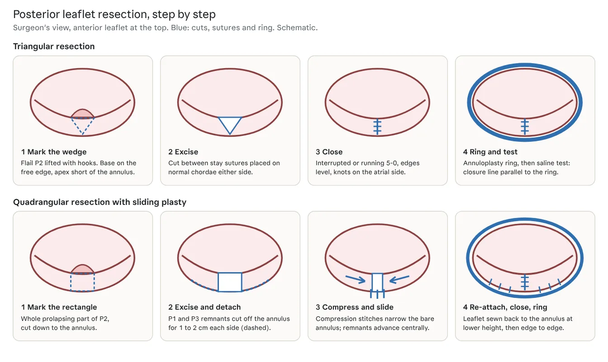

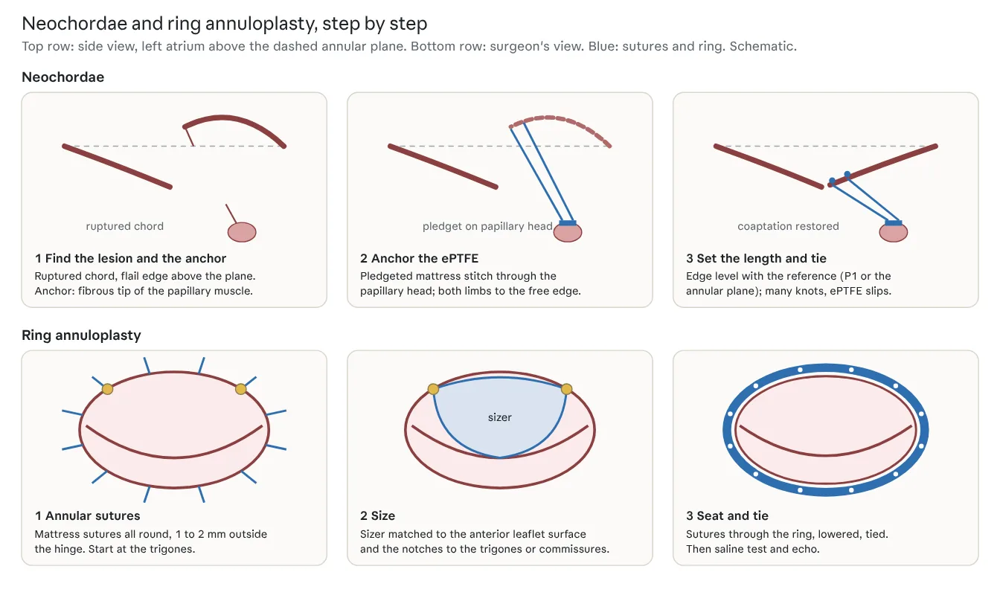

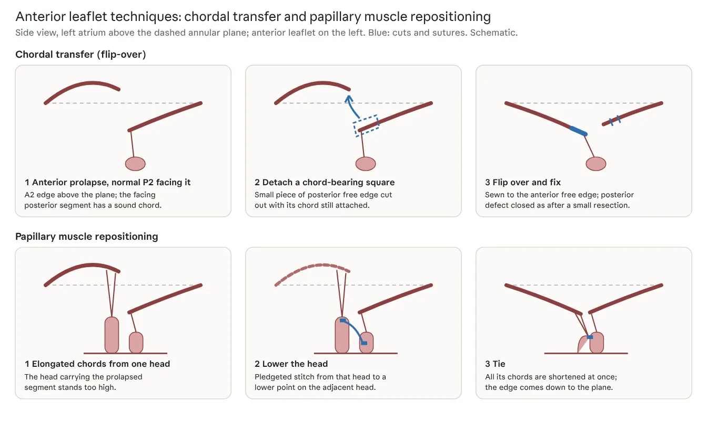
Sliding plasty in detail
| Point | Detail | Source |
|---|---|---|
| What it is for | Excess posterior leaflet height, usually Barlow disease or a tall P2, where a simple resection would leave a tall leaflet and a risk of systolic anterior motion | Eur Cardiol Rev |
| Target | Posterior leaflet height under 15 mm so that coaptation moves posteriorly | Same |
| Step 1 | Quadrangular resection of the prolapsing P2 down to the annulus | Same |
| Step 2 | Detach the P1 and P3 remnants from the annulus for 1 to 2 cm each side, keeping their chordae | Detachment: same source; distance from memory |
| Step 3 | Trim the base of each remnant obliquely if still tall (this is where height is actually lost) | From memory |
| Step 4 | Compression (plication) stitches on the bare posterior annulus to narrow the gap | From memory |
| Step 5 | Re-attach the remnants to the annulus with running 4-0 or 5-0 polypropylene, advancing them towards the middle | From memory |
| Step 6 | Close the leaflets to each other, edge to edge, then ring | From memory |
| Pitfalls | Circumflex kinking from deep compression stitches; dehiscence at the annular suture line; too much height removed leaves a restricted posterior leaflet | From memory |
| Alternative | Folding plasty: same aim without detaching the leaflet | Eur Cardiol Rev |
Neochordae in detail
| Point | Detail | Source |
|---|---|---|
| Anchor | The fibrous tip of the papillary muscle head, not the muscular body, with a pledgeted mattress or figure-of-eight stitch | From memory |
| Which head | Anterolateral muscle for A1, P1 and the lateral halves of A2 and P2; posteromedial for A3, P3 and the medial halves. Never cross the midline | From memory |
| Leaflet bite | Through the free edge from ventricular to atrial side, twice, 4 to 5 mm apart for each pair | From memory |
| Length: reference method | Level with a normal neighbouring segment or P1, or with the annular plane, with the ventricle filled with saline | From memory |
| Length: loop technique | Measure with a calliper, then fix premeasured ePTFE loops to the papillary muscle and stitch each loop to the edge | Seeburger, Ann Cardiothorac Surg 2013 |
| Length: adjust after testing | Chords placed, saline test done, then slid down as needed and tied with a knot pusher | CTSNet step-by-step video |
| Sizing matters most | Across all techniques, chordal sizing is the main determinant of success | Di Bacco 2020 |
| Knots | ePTFE slips: tie against a clip or instrument at the chosen length, with many throws | From memory |
| Errors | Too long: residual prolapse. Too short: restriction and a leak. Posterior chords set too long with a tall leaflet: systolic anterior motion | From memory |
Notes on the other drawn techniques
| Technique | Key points | Source |
|---|---|---|
| Folding plasty | Remnant free-edge corners folded down to the annulus mid-gap; lowers height without detachment | Eur Cardiol Rev for the indication; steps from memory |
| Edge-to-edge | A2 to P2 at the jet origin; always with a ring; check the mean gradient afterwards | From memory |
| Commissural stitch | A1 to P1 or A3 to P3; reduces orifice area slightly | From memory |
| Chordal transfer | A chord-bearing piece of the facing posterior leaflet, or a secondary chord of the anterior leaflet, moved to the anterior free edge | Dreyfus, Ann Cardiothorac Surg |
| Papillary muscle repositioning | The posterior papillary muscle usually has three heads, so repositioning one shortens all its chordae at once; suits A2, A1 or A3 and posterior commissural prolapse | Same |
Principles
| Principle | Detail | Source |
|---|---|---|
| Carpentier's aims | Restore full leaflet motion, create a large surface of coaptation, remodel and stabilise the annulus | From memory |
| Sequence | Expose, analyse by segment, place annular sutures early to improve exposure, re-survey, fix the leaflets, choose the ring, blend techniques to the lesions found | Complex MR repair, J Vis Surg |
| Evolution | From wide resection (quadrangular) through limited resection (triangular) to no resection (chordal replacement) | Seeburger, Ann Cardiothorac Surg 2013 |
| Resect or respect | CAMRA CardioLink-2: 104 patients with posterior prolapse in 7 Canadian centres, resection (54) against preservation with neochordae (50). Mean gradient at peak exercise at 12 months was no different; moderate regurgitation in 3 against 2 | Circulation 2020;142:1342 |
Triangular resection
| Point | Detail | Source |
|---|---|---|
| Indication | Prolapse or flail of a limited part of one posterior scallop, usually P2, with enough tissue either side; typical of fibroelastic deficiency | From memory |
| Why it replaced quadrangular resection | The resection is much smaller, so annular plication or sliding plasty is largely unnecessary | Seeburger 2013 |
| What it corrects | Leaflet height, leaflet volume, or both, depending on how the wedge is cut | J Vis Surg review |
| Steps | 1. Stay sutures on normal chordae either side of the flail segment. 2. Cut a triangle with its base on the free edge and its apex towards, not into, the annulus. 3. Close the leaflet with interrupted or running 5-0 polypropylene, edges level. 4. Check the remaining edges are supported; add a neochord if not. 5. Ring. 6. Saline test | From memory |
| Limits | Base wider than about a third of the scallop puts tension on the suture line and curtains the leaflet: use quadrangular resection with sliding plasty, or neochordae. Tall posterior leaflet (over 15 mm) needs height reduction as well | Width rule from memory; the 15 mm height from the systolic anterior motion rows below |
| Complications | Suture-line dehiscence, residual prolapse beside the repair, restricted posterior leaflet if too much is taken | From memory |
Quadrangular resection, sliding and folding plasty
| Point | Detail | Source |
|---|---|---|
| Classic use | Isolated P2 prolapse: Carpentier's quadrangular resection of the scallop | Repair options, Eur Cardiol Rev |
| Closing the gap | Originally annular plication; now usually avoided in favour of sliding or folding plasty when the tissue is redundant | Same |
| Sliding plasty | After the resection, P1 and P3 are detached from the annulus, advanced towards each other and re-attached. This lowers posterior leaflet height and moves coaptation posteriorly | Same |
| Folding plasty | The remnant edges are folded down to the annulus instead of being detached | Same; detail from memory |
| Risk of plication | Kinking of the circumflex artery | From memory |
Neochordae
| Point | Detail | Source |
|---|---|---|
| Material and principle | ePTFE (4-0 or 5-0) from the fibrous tip of a papillary muscle to the free edge; no tissue is removed | Seeburger 2013 for the principle; suture size from memory |
| Loop technique | Premeasured ePTFE loops fixed to the papillary muscle, each loop then attached to the free edge | Seeburger 2013 |
| The key variable | Chordal length: every technique aims to standardise sizing | Di Bacco, Innovations 2020 |
| How to size | Against a normal neighbouring chord or P1, with callipers, or tied with the ventricle filled; anterior and posterior papillary muscles each supply their own half of both leaflets, so do not cross the midline | From memory |
| Anterior leaflet | Neochordae are the usual choice; chordal transfer from the posterior leaflet or of a secondary chord, and papillary muscle repositioning, are Carpentier's alternatives | Dreyfus, Ann Cardiothorac Surg |
Ring annuloplasty
| Point | Detail | Source |
|---|---|---|
| Why | Stabilises the annulus and lowers long-term failure | Heart Surg Forum 2026 review |
| Sizing | By anterior leaflet height and area and the intertrigonal (intercommissural) distance. True size in degenerative disease; undersize in ventricular secondary disease | From memory |
| Type | Complete or band; rigid, semi-rigid or flexible. Barlow valves usually need 36 mm or larger | Ring size in Barlow: J Thorac Dis 2014; the rest from memory |
| Sutures | Horizontal mattress 2-0, wide on the annulus and narrow on the ring posteriorly; atrial to ventricular, emerging at the hinge. Structures at risk are in the anatomy section above | From memory |
Edge-to-edge and commissural techniques
| Technique | Use | Source |
|---|---|---|
| Edge-to-edge (Alfieri) | Bail-out for residual leak, anterior or bileaflet prolapse, or to treat or prevent systolic anterior motion. Used in 6.4% of repairs in one expert series | McCarthy, Ann Cardiothorac Surg for the frequency; indications from memory |
| Commissural ("magic") stitch | Closes a prolapsing commissure by joining A1 to P1 or A3 to P3 | From memory |
| Cleft closure | Deep indentations are closed, partly, by free-edge remodelling | J Vis Surg review |
Avoiding systolic anterior motion
| Point | Detail | Source |
|---|---|---|
| Cause | Mismatch between annular size and the amount of leaflet tissue | Clin Res Cardiol 2021 abstract |
| Predictors | End-diastolic diameter under 45 mm, aorto-mitral angle under 120°, coaptation-to-septum distance under 25 mm, posterior leaflet height over 15 mm | Varghese, Eur J Cardiothorac Surg |
| Other markers | Anterior-to-posterior leaflet ratio under 1.3; basal septum over 15 mm; a small ring | Popa 2013; Clin Res Cardiol 2021 |
| Prevention | Bring posterior leaflet height under 15 mm (sliding or folding plasty, or short neochordae) so coaptation moves posteriorly; do not undersize the ring | Eur Cardiol Rev for the height; ring from memory |
| If it happens coming off bypass | Fill, stop inotropes, raise afterload, slow the heart. If it persists: go back for height reduction, a larger ring or an edge-to-edge stitch | From memory |
Judging the result
| Check | Target | Source |
|---|---|---|
| Saline test | Symmetrical closure line, no leak, posterior leaflet a third or less of the orifice | From memory |
| Post-bypass echo | No more than trivial regurgitation; coaptation height between A2 and P2 at least 8 mm | Dreyfus (Carpentier's rule) |
| Also | No systolic anterior motion, mean gradient under about 5 mmHg, no new lateral wall abnormality | From memory |
Minimally invasive mitral repair and replacement: operative technique and femoral cannulation
Added 18 November 2026. The sequence follows two published step-by-step videos and two technique papers; anything else is marked from memory. The trial evidence (UK Mini Mitral) is in the trials section above.

Selection and work-up
| Point | Detail | Source |
|---|---|---|
| CT angiography of chest, abdomen and pelvis | Strongly encouraged before any minimally invasive mitral operation | Pearls and pitfalls of peripheral cannulation, J Vis Surg |
| What the CT is for | Significant atheroma, or an aneurysm with mural thrombus, in the descending aorta raises the risk of stroke with retrograde perfusion and may rule out femoral cannulation | Same |
| Femoral artery size | Exposed first and must be over 6.5 mm to support femoral arterial perfusion | Ann Cardiothorac Surg 2013 technique paper |
| Venous anatomy | An interrupted inferior vena cava with azygos continuation has been reported as a cause of failed femoral venous cannulation: look at the cava on the CT | Eur Heart J Case Rep 2021 |
| Relative contraindications | Previous right thoracotomy or expected right chest adhesions; significant lung disease | Review |
| Others | More than mild aortic regurgitation (cardioplegia delivery), severe annular calcification, chest wall deformity, very poor ventricle | From memory |
| Learning curve | 75 to 125 cases | Ann Cardiothorac Surg 2013 |
Femoral cannulation
| Step | Detail | Source |
|---|---|---|
| Exposure | Oblique incision in the right groin, 3 to 4 cm, below the inguinal ligament; expose only the anterior surface of artery and vein | CTSNet step-by-step; CTSNet 360 tutorial; limited dissection from memory |
| Purse strings | 5-0 polypropylene on both vessels | CTSNet figshare transcript |
| Vein first | Seldinger technique; the wire is followed on the bicaval echo view up into the superior vena cava before the cannula is passed | CTSNet |
| Venous cannula position | Long multi-stage cannula with its tip in the superior vena cava; fixed and snared so it can be adjusted | CTSNet transcript; tip position from memory |
| Artery | Same technique; the wire must be seen in the descending thoracic aorta before the cannula goes in | CTSNet step-by-step |
| Arterial cannula size | 16 to 20 Fr for cut-down; 17 to 21 Fr for percutaneous | Vienna approach, J Vis Surg |
| Extra venous drainage | Add a percutaneous right internal jugular cannula if drainage is poor or the right atrium is to be opened; vacuum-assisted drainage | From memory |
| Percutaneous or cut-down | Meta-analysis: cut-down had more access-site, wound and lymphatic complications and took longer; no difference in mortality, stroke or stay | Innovations 2024 meta-analysis |
| Risks of femoral perfusion | Retrograde dissection, embolisation and limb ischaemia on the cannulated side | Thesis review citing the cannulation literature |
| If the line pressure is high or the wire will not pass | Stop: do not force. Consider the other groin, the axillary artery (antegrade flow) or conversion | Axillary option from the same review; the rest from memory |
| Leg protection | Near-infrared monitoring of both calves; distal perfusion line for long runs or a small artery | From memory |
| Decannulation | Tie the purse strings, check for a narrowed artery, palpate or Doppler the distal pulse; lymphatics ligated, layered closure | From memory |
The chest
| Step | Detail | Source |
|---|---|---|
| Incision | 4 to 5 cm, just anterior to the anterior axillary line, usually in the 4th intercostal space; soft tissue retractor, little or no rib spreading | CTSNet step-by-step (the published text says "left axillary line", which I take to be an error for the right side); the space is from memory |
| Camera | 10 mm port one space above the incision, 0° scope; carbon dioxide through the same port | CTSNet 360 tutorial |
| Diaphragm | Retraction stitch in the tendinous part, pulled caudally | CTSNet step-by-step |
| Pericardium | Opened 2 to 3 cm anterior to the phrenic nerve, stay sutures brought out through the chest wall | From memory |
| Clamp | Dissect between the right pulmonary artery and the aorta, towards the left shoulder, so the clamp sits high. Flow down, aorta retracted, clamp on | CTSNet transcript and step-by-step |
| Clamp options | Transthoracic (Chitwood) clamp through a separate stab, or an endoaortic balloon | Vienna approach |
| Cardioplegia | Long root needle; single-dose solutions are popular. Watch the left atrial appendage and the pulmonary artery with the clamp tip | From memory |
| Atriotomy | Interatrial groove, then an atrial lift retractor | CTSNet |
On the valve
| Step | Repair | Replacement |
|---|---|---|
| Analysis | Segmental analysis as at sternotomy | Same; confirm the valve cannot be repaired |
| Leaflets | Neochordae are favoured through a small incision: placed, saline-tested, slid to length and tied with a knot pusher (CTSNet) | Anterior leaflet excised or split and reattached to the annulus; posterior leaflet and its chordae kept (from memory) |
| Sutures | Ring sutures; a flexible ring or band sewn with 3-0 polypropylene in the video (CTSNet); many use interrupted 2-0 braided sutures with an automated knot fastener (from memory) | Pledgeted 2-0 mattress sutures, everting with pledgets on the atrial side or non-everting with pledgets on the ventricular side (from memory) |
| Seating | Ring lowered, tied | Valve lowered; check that the struts or leaflets do not catch on retained chordae and that the outflow tract is clear (from memory) |
| Test | Saline test with the suction irrigator (CTSNet) | Check leaflet movement and that no suture is looped round a strut (from memory) |
Finishing
| Step | Detail | Source |
|---|---|---|
| Atriotomy | 4-0 polypropylene from both ends, tied in the middle | CTSNet transcript |
| Pacing wire | Placed on the right ventricle before the clamp comes off, while the heart is still and exposure is good | CTSNet |
| De-airing | Root vent on suction, lungs inflated, carbon dioxide field, echo check | From memory |
| Drain and closure | Chest drain through the camera port; intercostal block; layered closure | Drain: CTSNet transcript; the rest from memory |
Complications particular to this approach
| Complication | Note | Source |
|---|---|---|
| Stroke and retrograde dissection | From retrograde perfusion through a diseased aorta | J Vis Surg pearls and pitfalls |
| Limb ischaemia, groin lymphocele, wound infection | Fewer wound problems with percutaneous access | Innovations 2024 |
| Unilateral pulmonary oedema of the right lung | Linked to long bypass and single-lung ventilation | From memory |
| Phrenic nerve injury, chest wall bleeding, lung hernia | Check port sites before closing | From memory |
| Conversion to sternotomy | Bleeding, dissection, poor exposure, adhesions | From memory |
Mitral valve re-repair (Moore, Gillinov, Burns, Pettersson, Wierup)
Added 18 November 2026 from the PDF you supplied: Moore RA et al, Techniques for Mitral Valve Re-repair, Oper Tech Thorac Cardiovasc Surg 2021;26:42-65 (Cleveland Clinic), doi 10.1053/j.optechstcvs.2020.09.004. I read the text; the figures are the authors' illustrations and are described, not copied. Everything below is from the paper.

How often repairs fail
| Point | Detail |
|---|---|
| Degenerative disease | Linearised failure rate 0.5 to 1.5% per year |
| Including non-degenerative causes | 1 to 4% per year |
| Re-repair | Recent studies show it is safe, feasible and durable |
Why repairs fail
| Group | Mechanism | Detail |
|---|---|---|
| Procedure-related (usually early) | Suture dehiscence | Most often the annuloplasty sutures, leaving part of the annulus unsupported; also the resection line, or a neochord at the leaflet or papillary muscle. The authors prefer 4-0 ePTFE |
| Haemolysis | High-velocity jet through a small orifice or striking the band or suture material; the regurgitation need not be severe | |
| Chordal pseudo-elongation | Neochordae sized for a dilated ventricle become too long once the ventricle remodels | |
| Systolic anterior motion | Early, or after a few months when the ventricle has shrunk and coaptation has moved towards the septum | |
| Incomplete repair | Leaving theatre with residual prolapse, more than 1+ regurgitation, restriction or systolic anterior motion; or stenosis from a restrictive ring or extensive leaflet suturing | |
| Functional mitral stenosis | Excessive resection leaves a stiff posterior shelf; or the annuloplasty is too small, especially a complete ring. Edge-to-edge always causes some | |
| Valve-related (usually late) | Disease progression | New prolapse in previously healthy segments |
| Progressive ventricular dilatation | Leaflet restriction and secondary regurgitation | |
| Fibrosis and scarring | Around suture lines, mostly after excessive resection: progressive stenosis | |
| Endocarditis | Tissue destruction or annular invasion |
Will a second repair work?
| More likely | Less likely |
|---|---|
| Suture or annuloplasty dehiscence | Severe annular calcification |
| Haemolysis as the indication | Severe leaflet calcification |
| Systolic anterior motion | Extensive leaflet fibrosis or scarring |
| Disease progression | Rheumatic disease; radiation heart disease |
| Some congenital lesions (partly reopened anterior cleft after AV canal repair) | Endocarditis |
| Preserved leaflet size (previous neochordal repair) | Severe congenital tethering; advanced age; low ejection fraction |
Techniques by mechanism
| Problem | Re-repair |
|---|---|
| New prolapse from disease progression | Add neochordae to the new area; avoid a repeat resection (stenosis and fibrosis). The old annuloplasty often stays; a smaller one if the ventricle has dilated and restricted other segments |
| Chordal pseudo-elongation | New, shorter neochordae so that coaptation sits well posteriorly |
| Systolic anterior motion | Remove the undersized band; new neochordae anchored to the posteriorly placed sub-heads of each papillary muscle and made deliberately very short; a slightly oversized band. The authors avoid edge-to-edge here because of stenosis |
| Removing an old band safely | Incise the scar over the band to expose the old sutures; grasp, cut and remove each suture with the band left in place; then lift the band out of its capsule with a blunt dissector |
| Annuloplasty dehiscence | Usually within months, from weak annulus or low-grade infection. Do not just reattach: remove the whole band, send it for endocarditis examination, irrigate, change instruments, sew in a new one. The dehisced annulus has usually fibrosed and now holds sutures |
| Functional stenosis from a scarred posterior leaflet | Resect most of the scarred leaflet, rebuild it with autologous pericardium, support the free edge with neochordae, use a larger band. Durability unknown, so consider replacement; reserve for selected patients such as a young woman of child-bearing age |
Prevention at the first operation (their practice)
Posterior neochordae relatively short and anchored to the most posterior sub-heads, to move coaptation posteriorly.
Size the band to the height of the anterior leaflet; a partial flexible band, upsized when systolic anterior motion is a worry.
Non-resection neochordal repair keeps gradients low.
Do not leave theatre with more than trace regurgitation; go back on bypass if needed. Even mild residual regurgitation predicts late failure.
Always use a prosthetic annuloplasty. For restriction from ventricular dilatation a complete, rigid, slightly undersized ring may be needed, and replacement should be considered.
Their results
| Item | Figure |
|---|---|
| Re-repairs in 5 years (index operation for degenerative prolapse) | 36 |
| Failure within 1 year of the index operation | 9; beyond 1 year: 27 |
| Approach | Sternotomy in all; they do not use alternative approaches for redo mitral surgery |
| Concomitant procedures | Nearly 40% |
| Late failures of the re-repair | 2, both going on to replacement |
This ties to the earlier sections in this tab: the 15 mm posterior leaflet height and the predictors of systolic anterior motion, and the repair techniques in detail.
Cardiac 1b: tricuspid valve
Contents (10 sections)
- Overview
- Tricuspid valve: anatomy, classification of disease and operative techniques
- ESC/EACTS 2025 guideline: tricuspid valve disease
- Resection, repair or replacement
- Operative techniques: overview
- Operative technique step by step
- Tricuspid valve repair technique (McCarthy 2011)
- Evidence to quote
- Gammie trial (CTSN, NEJM 2022)
- Sources for this tab
Anatomy, classification, grading, guidelines, trials and operative technique for the tricuspid valve. Split from the mitral tab on 18 November 2026. Rows are marked [checked] (confirmed against a source that day) or [memory].
Overview
Repair severe TR at left-sided surgery, and moderate TR as well; for mild TR with a dilated annulus repair is now only a may-consider, at the cost of a higher pacemaker rate. Isolated surgery works when it is done before the right ventricle fails.
Trials
| Trial | Question | Result |
|---|---|---|
| CTSN concomitant tricuspid repair, NEJM 2022 | Annuloplasty or not at mitral surgery for degenerative MR, 401 patients with moderate TR, or less than moderate TR with annulus 40 mm or 21 mm/m² | Two-year composite of death, reoperation or TR progression 3.9% against 10.2% (relative risk 0.37), driven entirely by TR progression; severe TR 0.6% against 5.6%; permanent pacemaker 14.1% against 2.5%; bypass 34 minutes longer |
| TRILUMINATE Pivotal, NEJM 2023 | Tricuspid edge-to-edge repair against medical therapy, 350 patients | Hierarchical endpoint favoured the device (win ratio 1.48), driven by quality of life; no difference in death or heart failure admission at one year |
| TRISCEND II, NEJM 2024 | Transcatheter tricuspid valve replacement against medical therapy, 400 patients | Better outcomes at one year, again mainly quality of life |
| TRIC-I-HF, NEJM 2026 | Transcatheter repair with medical therapy against medical therapy alone, 360 high-risk patients | First trial to reduce death and heart failure admission: see below |

Reading the evidence
The CTSN trial shows annuloplasty prevents TR progression but has not yet shown a clinical benefit; the price is a fivefold pacemaker rate. Most surgeons now repair moderate TR and are more selective for annular dilatation alone.
The pacemaker excess is a technical message: use an incomplete ring, keep sutures out of the septal segment near the anteroseptal commissure.
Transcatheter tricuspid therapy improved symptoms without reducing death or admission in TRILUMINATE and TRISCEND II; it is for patients at high surgical risk.
Isolated tricuspid surgery has carried a mortality near 8–10% because of late referral. TRI-SCORE (from memory) weights age 70 or more, NYHA III–IV, right heart failure signs, high-dose diuretic, renal and liver dysfunction, LVEF under 60% and RV dysfunction; 6 or more is high risk.
Technique points for the wet lab
Identify the three commissures and the triangle of Koch before placing a suture.
Start the annuloplasty at the anteroseptal commissure and run clockwise around the anterior and posterior annulus to the middle of the septal leaflet; leave the gap over the conduction tissue.
Bites are shallow along the anterior and posterior annulus, where the right coronary artery runs.
Ring size follows the septal leaflet length and anterior leaflet area.
If tethering height exceeds 8 mm, a ring alone will fail: augment the anterior leaflet or replace.
For replacement, keep the leaflets, place septal sutures through leaflet tissue, and leave permanent epicardial pacing leads.
TRIC-I-HF, 2026
TRIC-I-HF (ESC Congress and NEJM, August 2026) is the first randomised trial in which a transcatheter tricuspid intervention reduced death and heart failure admission, not only symptoms.

360 patients at 29 German centres, randomised two to one to transcatheter repair with medical therapy (237) or medical therapy alone (123); mean age 80; 98% of interventions were edge-to-edge repair.
Entry required severe TR with right heart failure and a marker of higher risk: a heart failure admission in the past year, cardiorenal syndrome or cardiohepatic syndrome. This is a sicker group than TRILUMINATE or TRISCEND II.
The hierarchical primary endpoint (death, heart failure admission, quality of life at one year) favoured intervention, with lower mortality and fewer heart failure admissions as separate components. The win ratio was 2.42 (1.76 to 3.33). Freedom from death or heart failure admission at three years was 52.4% against 21.0% (HR 0.40, 0.29 to 0.55), a number needed to treat of four at one year.
Open label and investigator-initiated. Subgroup results were consistent except in the small group with torrential TR.
For the surgeon: this strengthens the transcatheter option for the elderly patient with isolated secondary TR who would be high risk for surgery. It says nothing about concomitant repair at left-sided surgery, where the CTSN trial and the 2025 guideline still apply.
Echo findings that change the tricuspid plan
| Finding | Threshold | Implication |
|---|---|---|
| Tenting height | >8 mm | Annuloplasty alone likely to fail; consider replacement or leaflet augmentation |
| Tenting area | >1.6 cm² | As above |
| TAPSE | <17 mm | RV dysfunction |
| Tricuspid annular S′ | <9.5 cm/s | RV dysfunction |
| RV fractional area change | <35% | RV dysfunction |
| RV basal diameter | >41 mm | RV dilatation |
| TAPSE ÷ SPAP | <0.31 mm/mmHg | RV to pulmonary artery uncoupling; high risk for isolated surgery |
| Annulus (2D echo, four-chamber, end-diastole) | ≥40 mm or >21 mm/m² | Dilated; IIb for repair with mild TR at left-sided surgery |
Pulmonary valve thresholds
| Lesion | Threshold | Action |
|---|---|---|
| Pulmonary stenosis | Peak velocity >4 m/s, peak gradient >64 mmHg | Severe; balloon valvuloplasty first, surgery for dysplastic valves or associated lesions |
| Pulmonary regurgitation after Fallot repair, symptomatic | Severe PR or RV outflow obstruction | Valve replacement (I) |
| Pulmonary regurgitation, asymptomatic | CMR RVEDVi ≥160 mL/m² or RVESVi ≥80 mL/m², progressive RV dysfunction or TR, RV systolic pressure >80 mmHg | Valve replacement (IIa) |
Tricuspid valve: anatomy, classification of disease and operative techniques
Anatomy
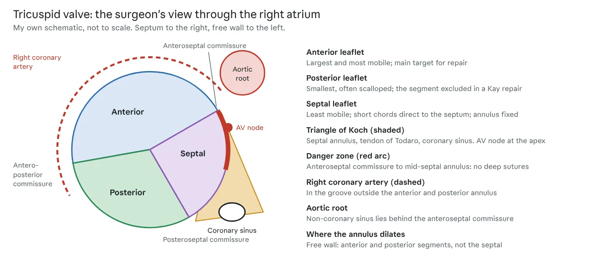
| Structure | Detail | Basis |
|---|---|---|
| Leaflets | Anterior (largest, most mobile), posterior (smallest, often scalloped), septal (least mobile, short chords direct to the septum) | memory |
| Commissures | Anteroseptal, anteroposterior, posteroseptal: the surgical landmarks | checked |
| Papillary muscles | Anterior (largest, receives the moderator band; marks the anterior-posterior boundary), posterior (often multiple), septal (small or absent) | memory; boundary role checked |
| Annulus | Largest of the four valve orifices; D-shaped and saddle-shaped, not flat; thin, with little fibrous skeleton except at the septum | memory |
| How it dilates | Along the free wall (anterior and posterior segments); the septal segment is relatively fixed. The annulus becomes rounder and flatter | memory |
| Right coronary artery | Runs in the atrioventricular groove outside the anterior and posterior annulus: at risk from deep annular sutures | memory |
| Aortic root | The non-coronary sinus lies behind the anteroseptal commissure; avoid deep bites there | checked (aortic root to be avoided at septal and anterior level) |
| Conduction tissue | AV node at the apex of the triangle of Koch; the bundle of His passes under the anteroseptal commissure and membranous septum | memory; checked that the septal side must be protected |
How many leaflets?

| Type | Morphology | Frequency | Basis |
|---|---|---|---|
| I | Three leaflets | 54% | checked |
| II | Two leaflets | 4.5% | checked |
| IIIA | Four, two anterior | 2.6% | checked |
| IIIB | Four, two posterior | 32.1% | checked |
| IIIC | Four, two septal | 3.8% | checked |
| IV | More than four | 2.4% | checked |
Hahn et al, 579 patients at four centres, transoesophageal echo (transgastric short axis or 3D). The point for surgery and for edge-to-edge devices: only about half of valves are truly three-leaflet.
Tendon of Todaro and the triangle of Koch
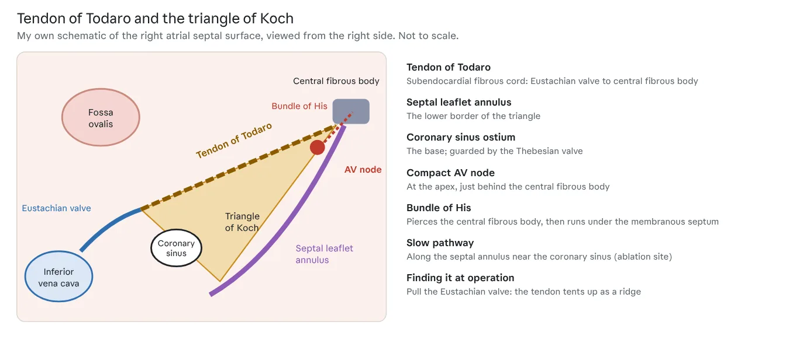
| Point | Detail | Basis |
|---|---|---|
| What the tendon is | A fibrous cord beneath the endocardium, the continuation of the commissure of the Eustachian and Thebesian valves, running in the sinus septum to the central fibrous body | memory |
| Triangle of Koch | Borders: tendon of Todaro (upper, posterior), annulus of the septal leaflet (lower, anterior), coronary sinus ostium (base) | memory; confirmed by McCarthy 2011 below |
| What it contains | Compact AV node at the apex; the bundle of His penetrates the central fibrous body there. Slow-pathway input runs along the septal annulus near the coronary sinus | memory |
| Finding it | Not visible; traction on the Eustachian valve tents the tendon up as a ridge | memory |
| Why the surgeon cares | Tricuspid ring: open ring with the gap over the node. Tricuspid replacement: sutures through leaflet tissue on the septal side. Atrioventricular septal defect and ostium primum repair: suture line kept away from the apex, or the coronary sinus left on the left side. Perimembranous ventricular septal defect: the His bundle runs on the postero-inferior rim. Right atrial maze lesions and coronary sinus cannulation are planned around it | memory |
Classification of tricuspid disease

| Class | Mechanism | Examples | Basis |
|---|---|---|---|
| Primary | Abnormal leaflets | Prolapse or flail, congenital (Ebstein), and acquired leaflet disease such as endocarditis, rheumatic, carcinoid, trauma | checked (categories); examples partly memory |
| Secondary, ventricular | Normal leaflets tethered by a dilated right ventricle | Left heart disease, pulmonary hypertension, right ventricular disease | checked |
| Secondary, atrial | Normal leaflets, dilated annulus and right atrium | Atrial fibrillation, heart failure with preserved ejection fraction | checked |
| Device lead-related | Lead impinges on, adheres to or perforates a leaflet; may be an incidental bystander | Pacemaker and defibrillator leads. No longer counted as primary | checked |
| Carpentier functional type | I: normal motion (annular dilatation, perforation). II: excess motion (prolapse, flail). IIIa: restricted in diastole and systole (rheumatic, carcinoid). IIIb: restricted in systole (tethering) | memory |
Grading the severity of regurgitation
| Measure | Mild | Moderate | Severe | Massive | Torrential | Basis |
|---|---|---|---|---|---|---|
| Vena contracta width (mm) | Under 3 | 3 to 6.9 | 7 to 13 | 14 to 20 | 21 or more | checked |
| Effective regurgitant orifice area by PISA (mm2) | Under 20 | 20 to 39 | 40 to 59 | 60 to 79 | 80 or more | checked |
| Regurgitant volume (ml) | Under 30 | 30 to 44 | 45 to 59 | 60 to 74 | 75 or more | checked |
| 3D vena contracta area (mm2) | 75 to 94 | 95 to 114 | 115 or more | checked | ||
| PISA radius (mm) | 5 or less | 6 to 8 | 9 or more | checked | ||
| Regurgitant fraction | Under 30% | 30 to 49% | 50% or more | checked | ||
| Supporting signs of severe | Systolic flow reversal in the hepatic veins; dense triangular continuous-wave signal; dilated right heart and inferior vena cava | memory |
The two grades beyond severe (Hahn and Zamorano) were added because patients in transcatheter trials were up to two grades above the old severe thresholds. Grading is load-dependent: assess when the patient is off the ventilator and not volume-depleted [memory].
Regurgitation against stenosis
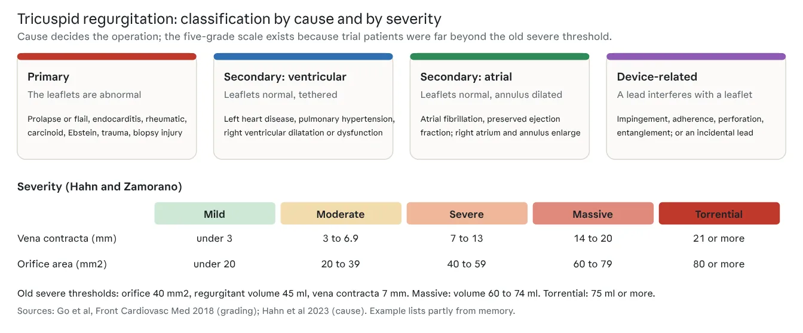
| Feature | Regurgitation | Stenosis | Basis |
|---|---|---|---|
| Frequency | Common; moderate or worse in at least 6 to 8% of echo studies | Rare, almost always with rheumatic mitral disease | regurgitation checked; stenosis confirmed by ESC/EACTS 2025 below |
| Causes | Mostly secondary | Rheumatic; carcinoid; congenital; endocarditis with bulky vegetation; lead fibrosis; prosthetic degeneration | memory |
| Haemodynamics | Volume load on right atrium and ventricle | Diastolic gradient; high right atrial pressure with a small ventricle and low output | memory |
| Signs | Systolic v wave, pulsatile liver, pansystolic murmur louder on inspiration | Giant a wave, slow y descent, mid-diastolic murmur louder on inspiration | memory |
| Severe on echo | See the grading table | Mean gradient over 5 mmHg at a normal heart rate (ESC/EACTS 2025, checked). Also quoted: inflow time-velocity integral over 60 cm; pressure half-time 190 ms or more; area 1 cm2 or less | gradient checked; rest memory |
| Treatment | Diuretics; repair with a ring; replacement when repair is not possible; transcatheter repair or replacement in high-risk patients | Surgery for symptomatic severe stenosis or at left-sided surgery, usually replacement because the valve also leaks; commissurotomy or balloon valvotomy only without significant regurgitation | memory; surgery indication checked |
ESC/EACTS 2025 guideline: tricuspid valve disease
From the PDF you supplied: Praz F, Borger MA, et al. 2025 ESC/EACTS Guidelines for the management of valvular heart disease. Eur J Cardiothorac Surg 2025;67(8):ezaf276, doi 10.1093/ejcts/ezaf276 (109 pages). I searched the text for the tricuspid recommendations and read those passages; I have not read the whole guideline. Everything in this section is from the guideline.
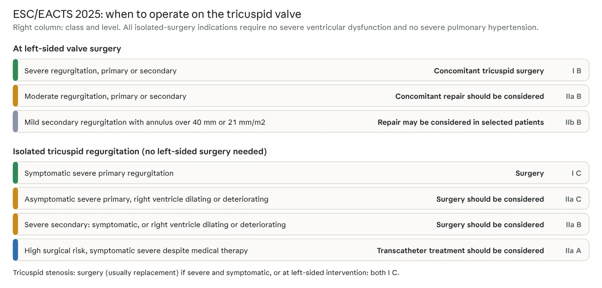
Regurgitation at the time of left-sided valve surgery
| Situation | Recommendation | Class, level |
|---|---|---|
| Severe primary or secondary regurgitation | Concomitant tricuspid surgery is recommended | I B |
| Moderate primary or secondary regurgitation | Concomitant repair should be considered, to avoid progression and right ventricular remodelling | IIa B |
| Mild secondary regurgitation with annular dilatation (over 40 mm or over 21 mm/m2) | Concomitant repair may be considered in selected patients | IIb B |
The text explains the change: uncorrected mild regurgitation with a dilated annulus, or moderate regurgitation, progresses in about a quarter of patients; two randomised trials showed less progression and better right ventricular remodelling with annuloplasty, but no effect on mortality, heart failure events or reoperation. So annular dilatation alone with mild regurgitation is now only a IIb indication. This fits the Gammie trial below.
Isolated severe regurgitation
| Situation | Recommendation | Class, level |
|---|---|---|
| Symptomatic severe primary regurgitation, no severe right ventricular dysfunction or severe pulmonary hypertension | Surgery is recommended | I C |
| Asymptomatic severe primary regurgitation with right ventricular dilatation or deteriorating function | Surgery should be considered | IIa C |
| Severe secondary regurgitation, symptomatic or with right ventricular dilatation or deteriorating function, without severe ventricular dysfunction or pulmonary hypertension | Surgery should be considered | IIa B |
| High-risk patient, symptomatic severe regurgitation despite optimal medical therapy, no severe right ventricular dysfunction or pre-capillary pulmonary hypertension | Transcatheter treatment should be considered, to improve quality of life and right ventricular remodelling | IIa A |
| Supporting statement | Detail |
|---|---|
| Timing | In isolated severe regurgitation without severe right ventricular dysfunction, operate early in patients at low operative risk |
| Risk scores | TRI-SCORE and the STS isolated tricuspid calculator are encouraged; both include right ventricular dysfunction and liver and kidney impairment. Surgery improved survival with a low or intermediate TRI-SCORE (up to 5) and gave no benefit over conservative treatment with a high score (over 6) |
| Repair or replace | Repair preferred; replacement may be needed in advanced disease with marked annular dilatation and tethering |
| Lead-related regurgitation | Decide whether the lead is the cause (CIED-related) or incidental (CIED-associated). Freeing an entrapped leaflet, and possibly lead extraction with an epicardial system, improves valve function |
| Classification used | Primary; secondary (atrial and ventricular phenotypes); lead-related |
| Transcatheter data | Regurgitation reduced to moderate or less in over 80% when anatomy is suitable. Transcatheter replacement (TRISCEND II): symptom benefit, with major bleeding about 15% and a new pacemaker in about a quarter of pacemaker-free patients at 12 months |
| Failed repair | Usually needs reoperation for replacement; valve-in-ring is off-label and awkward because surgical rings are open and non-circular; valve-in-valve has satisfactory results |
| Sex | Regurgitation is more prevalent in women, with faster progression |
Tricuspid stenosis
| Point | Statement | Class, level |
|---|---|---|
| Frequency and cause | Very rare in high-income countries; rheumatic disease, carcinoid, or enzymatic disorders such as Fabry and Whipple disease | |
| Diagnosis | Echo: leaflet thickening and commissural fusion are pathognomonic of rheumatic disease. A mean diastolic gradient over 5 mmHg at a normal heart rate indicates severe stenosis | |
| Symptomatic severe stenosis | Surgery recommended (usually replacement) | I C |
| Severe stenosis at left-sided valve intervention | Surgery recommended | I C |
| Open questions | Role of transcatheter replacement; best way to pace the ventricle after tricuspid replacement |
Resection, repair or replacement
Added 18 November 2026 in answer to your question. The three options side by side; each is expanded in the technique sections below.

| Resection (valvectomy) | Repair | Replacement | Basis | |
|---|---|---|---|---|
| What it is | Leaflets and chords excised, no prosthesis | Annulus reduced with a ring or suture, with leaflet or chordal work if needed | Prosthesis sewn in, septal leaflet retained | memory; checked for repair and replacement |
| When | Tricuspid endocarditis with a destroyed valve in a patient whose continued injecting makes prosthetic reinfection likely. A first stage; replacement later if abstinent | Secondary regurgitation and most primary lesions: first choice | Carcinoid, rheumatic stenosis, radiation, destroyed valve, extreme annular dilatation with tethering, failed repair | checked (de Waha 2026, Belluschi 2018, ESC/EACTS 2025) |
| Why it can work | The pulmonary circulation is low-pressure, so free regurgitation is tolerated for a time if pulmonary vascular resistance is normal | Restores coaptation while keeping the native valve | Reliable competence whatever the leaflet state | memory |
| Steps | Bicaval bypass, right atriotomy; excise vegetations, leaflets and chords to a clean annulus, staying superficial on the septal side; culture the tissue; close | See ring annuloplasty below | See replacement below | memory; repair and replacement checked |
| Main problems | Right heart failure, prolonged ventilation, later reoperation | Residual or recurrent regurgitation; heart block | Heart block; prosthetic thrombosis or degeneration; a later transvenous ventricular lead is undesirable | checked |
| Figures | Luc meta-analysis (752 patients): 30-day mortality 13% against 7% with replacement; right heart failure 27% against 11%; reoperation 56% against 14%; recurrent endocarditis 7% against 19% | Early failure 8 to 15% at one month; pacemaker 14.1% against 2.5% when added to mitral surgery (Gammie) | Operative mortality up to 18% in some series | checked |
| Guidelines | AHA 2022: not a recommended treatment. Leipzig review 2026: may be considered in selected patients | ESC/EACTS 2025: repair preferred | ESC/EACTS 2025: when repair is not possible; usual operation for stenosis | checked |
Partial resection is a different thing: excising a vegetation or a small prolapsing or destroyed segment (triangular resection, under about one-tenth of the leaflet area) and closing or patching the defect is part of repair, and is finished with a ring or a bicuspidisation [checked, Belluschi 2018]. The valvectomy data are in Cardiac tab 2 (endocarditis in people who inject drugs).
Operative techniques: overview
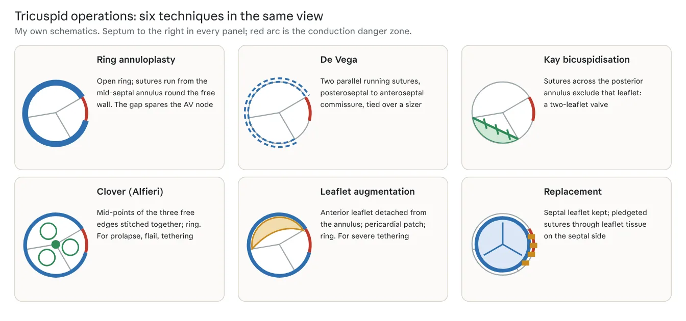
| Technique | Steps | Notes | Basis |
|---|---|---|---|
| Ring annuloplasty | Size from the anteroseptal to the posteroseptal commissure (roughly the anterior leaflet area). Eight to ten 2-0 braided sutures, starting at the mid-point of the septal leaflet and running round the free wall; last stitch above the anteroseptal commissure. Parachute the ring and tie | Rigid or semi-rigid rings fix the annulus in its systolic shape; flexible bands reduce size without restoring 3D shape. Open rings leave a gap over the conduction tissue | checked |
| De Vega suture annuloplasty | Two parallel running sutures (5 to 6 mm bites) from the posteroseptal commissure round to the anteroseptal commissure, second line 1 to 2 mm outside the first, tied over a sizer. Pledgets between bites if the tissue is fragile (Antunes) | Quick and cheap; can cut through | checked |
| Kay bicuspidisation | Sutures across the posterior annulus, commissure to commissure, exclude the posterior leaflet | Useful for dilatation confined to the posterior segment; modern modification uses pledgeted mattress sutures | checked |
| Anterior leaflet augmentation (Dreyfus) | Detach the anterior leaflet from the annulus; autologous pericardial patch as long as the leaflet's attachment and as high as the gap; 5-0 polypropylene; then a ring | For severe tethering, where a ring alone fails | checked |
| Clover (Alfieri) | Stitch the mid-points of the three free edges together with 5-0 polypropylene, no pledgets; add a ring | First used for traumatic regurgitation; also prolapse and tethering | checked |
| Primary leaflet disease | Triangular resection for a small prolapsing segment; neochordae measured against a normal chord; chordal transposition; commissurotomy with a blade for rheumatic fusion; in endocarditis, vegetectomy with patch and annular plication | Always finished with a ring | checked |
| Replacement | Leave a 2 to 3 mm fringe of leaflet, and leave the septal leaflet in place. Everting pledgeted sutures from atrium to ventricle, through leaflet tissue on the septal side. Posts at 12, 4 and 8 o'clock. Tie the septal sutures first | No gold standard between mechanical and biological; a mechanical valve prevents a later transvenous ventricular lead | checked |
Steps marked [checked] in this tab's technique sections are from Belluschi et al, Front Cardiovasc Med 2018;5:118.
Operative technique step by step
Set-up and exposure
| Step | Detail | Basis |
|---|---|---|
| Monitoring | Transoesophageal echo before bypass, under normal loading: grade the leak, measure the annulus, look at tethering and right ventricular function. General anaesthesia under-estimates the leak | memory |
| Cannulation | Aortic and bicaval, with the cavae snared for a dry right atrium. Superior vena cava cannulated directly or via the appendage, well away from the atriotomy | memory |
| Order | After the left-sided valve work. Clamp on and arrested, or clamp off on a beating heart (lets you see heart block appear as you place a septal suture and remove it) | memory; beating-heart option checked |
| Atriotomy | Oblique incision from the appendage towards the inferior vena cava, parallel to and 1 to 2 cm from the atrioventricular groove; stay sutures; a sump in the coronary sinus | memory |
| Inspect | Leaflets, commissures, any pacing lead, annulus; inject saline into the ventricle to see where the valve leaks | memory |
| Minimal access | Right mini-thoracotomy with peripheral cannulation is an alternative, particularly for redo isolated tricuspid surgery | memory |
Ring annuloplasty

| Step | Detail | Basis |
|---|---|---|
| Size | Sizer matched to the distance from the anteroseptal to the posteroseptal commissure, which approximates the anterior leaflet area. In secondary regurgitation most adults take a 26 to 30 mm ring; the Gammie trial specified undersized rigid rings of 26, 28 or 30 mm | checked |
| Sutures | Eight to ten 2-0 braided mattress sutures. Start at the mid-point of the septal leaflet annulus, proceed round the posterior and anterior annulus, and finish above the anteroseptal commissure | checked |
| Bites | In the annulus (the hinge, 1 to 2 mm from the leaflet), not the leaflet and not deep into the atrial wall. Wider bites on the annulus than on the ring along the free wall give the plication | memory |
| Avoid | No sutures from the anteroseptal commissure to the mid-septal annulus (AV node and His bundle). Shallow bites near the anteroseptal commissure (aortic root) and along the anterior annulus (right coronary artery) | checked for conduction tissue and aortic root; coronary artery memory |
| Ring | Rigid or semi-rigid, incomplete, three-dimensional. Parachute it down, check each leaflet moves, tie | checked |
| Test | Saline into the ventricle with the pulmonary artery compressed; then echo off bypass. Accept mild or less. New heart block: suspect a septal suture | memory |
| Suture alternatives | De Vega or Kay when a ring is not wanted (children, active infection, short operation) | memory |
When a ring alone is not enough
| Finding | Addition | Basis |
|---|---|---|
| Severe tethering (tenting height over about 8 mm or tenting area over about 1.6 cm2) | Anterior leaflet augmentation with a pericardial patch, or replacement | technique checked; thresholds memory |
| Prolapse or flail | Neochordae, or clover stitch, with a ring | checked |
| Pacing lead trapped in a leaflet | Free the lead; consider removing it and placing an epicardial lead; otherwise seat it in a commissure | ESC 2025 checked; commissural placement memory |
| Endocarditis | Vegetectomy, patch repair, bicuspidisation; avoid prosthetic material where possible | see Cardiac tab 2 |
Replacement

| Step | Detail | Basis |
|---|---|---|
| Leaflets | Excise the anterior and posterior leaflets leaving a 2 to 3 mm fringe, or fold all leaflets into the suture line to preserve the subvalvar apparatus. Keep the septal leaflet. Divide chords deep in the ventricle | checked; folding option memory |
| Sutures | Everting pledgeted 2-0 or 3-0 mattress sutures from atrium to ventricle, starting at the anterior leaflet. On the septal side the sutures go through the retained leaflet tissue. A quicker alternative: pledgeted sutures on the septal side only, with two running sutures for the rest | checked |
| Prosthesis | Size to avoid obstruction and septal injury. Stent posts at 12, 4 and 8 o'clock, clear of the right ventricular outflow tract. Tie the septal sutures first | checked |
| Pacing | Epicardial ventricular leads placed and buried at the time of surgery, because heart block is common and a transvenous lead across the prosthesis is undesirable (impossible with a mechanical valve) | checked in ESC 2023 endocarditis section; rest memory |
| Valve choice | No gold standard. Bioprosthesis in most adults; mechanical considered under about 40 or if already anticoagulated | checked |
| Risk | Operative mortality up to 18% in some series, driven by late referral with right ventricular failure, liver and kidney dysfunction. Use TRI-SCORE | checked |
After the operation [memory]
Right ventricular support: avoid high airway pressures, hypoxia and acidosis; inotrope or inhaled pulmonary vasodilator if the ventricle struggles against a now-competent valve.
Atrial and ventricular pacing wires in every patient.
Diuretics continued; the liver and kidneys improve over weeks.
Echo before discharge as the baseline.
Tricuspid valve repair technique (McCarthy 2011)
From the PDF you supplied: McCarthy PM. Tricuspid Valve Repair Technique. Oper Tech Thorac Cardiovasc Surg 2011;16:97-111, doi 10.1053/j.optechstcvs.2011.07.001 (Northwestern). A technique atlas for functional regurgitation; I read all of the text, and the figures are the author's illustrations, described and not copied. Everything in this section is from the paper. Disclosure in the paper: the author invented the MC3 ring and receives royalties.
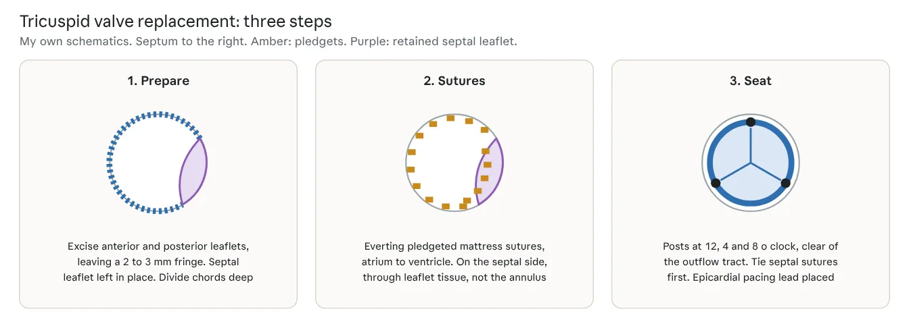
| Step | His technique |
|---|---|
| Scope | Functional regurgitation: dilated annulus, no prolapse, no lead damage, no structural leaflet disease |
| Timing in the operation | Mitral or coronary work with the clamp on; then clamp off and the tricuspid repair on a beating heart |
| Safety check | Make sure there is no patent foramen ovale or other route for right-to-left shunting before opening the right heart on a beating heart |
| Atriotomy | In the mid right atrium, leaving plenty of atrial wall under the retractor blades |
| Retractor | Three blades: one inferior (posterior leaflet), one up and to the left (anterior leaflet), one between |
| Landmarks | Triangle of Koch: septal leaflet, tendon of Todaro, coronary sinus at the base; AV node at the apex, next to the anteroseptal commissure. With the clamp off, the aortic root bulges near the anterior leaflet just above that commissure |
| Assess | Commissure-to-commissure dilatation (anteroseptal to anteroposterior) averaged 45 mm (SD 8) in his patients. Compress the pulmonary artery with a sponge stick to show the regurgitant jet |
| Ring size | 95% of his patients receive a rigid 26 or 28 mm ring: routine downsizing, without causing stenosis. Classic sizing uses the septal commissure-to-commissure distance or the anterior leaflet area |
| First suture | 2-0 braided, on the anterior annulus just above the anteroseptal commissure, about 1 cm from the AV node, over the non-coronary sinus: not too deep, or the aortic wall bleeds |
| Sequence | Clockwise. First three forehand, next three or four backhand, then forehand along the septal leaflet. Tension on the leaflet with forceps shows the annulus, which is less distinct than the mitral annulus; do not catch leaflet |
| Marker suture | The mid-posterior suture is tagged with a different clamp, to align the widest part of the ring with the middle of the posterior leaflet |
| Last suture | Just to the left of the coronary sinus, ending at the mid-septal leaflet. Total 10 to 12 sutures |
| Heart block | Seen at once on a beating heart if a suture is too close to the node: remove that suture immediately |
| Seating | Annulus about 44 mm, ring about 28 mm: parachute gently, gathering the annulus to the ring, to avoid dehiscence |
| Tying | Three septal sutures first, with an assistant holding that part of the ring down (the septal annulus is the most solid). Then the anteroseptal suture, then the rest clockwise. The gap in the ring lies over the AV node |
| Test | Pulmonary trunk compressed again and the right ventricle filled with saline |
| Closure | Atriotomy in two layers while ventilation resumes; echo in every case. The clamp has been off about 20 minutes, so the patient is ready to wean |
| Pitfalls | Few, if you remember the conduction system and the adjacent aortic sinus. Results are less good with marked tethering or pacing leads across or through a leaflet |
Direction of suturing differs between sources: McCarthy starts at the anteroseptal commissure and finishes mid-septal; the Belluschi review starts mid-septal and finishes above the anteroseptal commissure. The sutured arc and the gap are the same.
Evidence to quote
| Question | Evidence | Basis |
|---|---|---|
| Ring or suture? | A best-evidence review found seven studies favouring a ring, five neutral and two favouring De Vega. Rings gave better event-free survival to 15 years in one series; other series found no difference at 10 years | checked |
| Early failure | Residual or recurrent regurgitation in 8 to 15% at one month. Risk factors: worse pre-operative regurgitation, pacemaker lead, pulmonary hypertension, left ventricular dysfunction, severe tethering, suture rather than ring | checked |
| Repair a moderate leak at mitral surgery? | Gammie trial, below | checked |
| Message | Repair severe regurgitation; for moderate or annular dilatation alone, weigh a durable valve against a five-fold pacemaker risk | checked |
Gammie trial (CTSN, NEJM 2022)
From the paper you supplied: Gammie JS, Chu MWA, Falk V, et al, for the Cardiothoracic Surgical Trials Network. Concomitant tricuspid repair in patients with degenerative mitral regurgitation. N Engl J Med 2022;386:327-39, doi 10.1056/NEJMoa2115961. I read the abstract, methods, primary results and discussion; the adverse-event table came out scrambled in extraction, so only the pacemaker figure is taken from it. Everything in this section is from the paper.
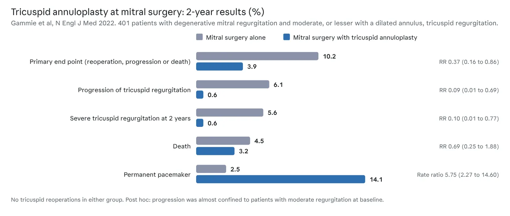
| Item | Detail |
|---|---|
| Population | 401 patients having surgery for degenerative mitral regurgitation, with moderate tricuspid regurgitation, or less than moderate with annular dilatation |
| Intervention | Mitral surgery with or without tricuspid annuloplasty, using a rigid, incomplete, non-planar, undersized ring (26, 28 or 30 mm) |
| Primary end point at 2 years | Reoperation for tricuspid regurgitation, progression by two grades or to severe, or death: 3.9% with annuloplasty against 10.2% without (relative risk 0.37, 0.16 to 0.86, p 0.02) |
| Death | 3.2% against 4.5% (relative risk 0.69, 0.25 to 1.88) |
| Tricuspid reoperation | None in either group |
| Progression | 0.6% against 6.1% (relative risk 0.09, 0.01 to 0.69). Severe regurgitation at 2 years in 1 of 179 against 10 of 179 |
| Post hoc | Progression occurred almost only in patients with moderate regurgitation at baseline, not in those with lesser regurgitation and a dilated annulus. The authors say this calls into question annular diameter as a trigger |
| Pacemaker | 14.1% against 2.5% (rate ratio 5.75, 2.27 to 14.60) |
| Other outcomes | Major adverse events, functional class, quality of life and readmission similar |
| Limits | Two-year follow-up (five-year follow-up continuing); not powered for subgroups; confidence intervals for secondary end points not adjusted for multiplicity |
How the 2025 guideline used it: moderate regurgitation is IIa for concomitant repair; mild regurgitation with annular dilatation fell to IIb.
Sources for this tab
Praz F, Borger MA, et al. 2025 ESC/EACTS Guidelines for the management of valvular heart disease. Eur J Cardiothorac Surg 2025;67(8):ezaf276 (PDF supplied).
Gammie JS et al. N Engl J Med 2022;386:327-39 (PDF supplied).
McCarthy PM. Oper Tech Thorac Cardiovasc Surg 2011;16:97-111 (PDF supplied).
Belluschi I et al. Surgical techniques for tricuspid valve disease. Front Cardiovasc Med 2018;5:118 (PDF supplied; https://www.frontiersin.org/articles/10.3389/fcvm.2018.00118/full).
Hahn RT et al. Proposal for a standard echocardiographic tricuspid valve nomenclature. JACC Cardiovasc Imaging 2021 (https://www.pubmed.gov/33744134/).
Hahn RT et al. Eur Heart J Cardiovasc Imaging 2022; and Front Cardiovasc Med 2023;10:1080101 (cause classification).
Go YY et al. The conundrum of tricuspid regurgitation grading. Front Cardiovasc Med 2018 (https://www.ncbi.nlm.nih.gov/pmc/articles/PMC6237828/).
Khorsandi M et al. Ring or De Vega? Interact Cardiovasc Thorac Surg 2012 (https://pmc.ncbi.nlm.nih.gov/articles/PMC3380971).
Luc JGY et al, Ann Cardiothorac Surg 2019; de Waha S et al, Ann Cardiothorac Surg 2026; Baddour LM et al, Circulation 2022 (PDFs supplied; detail in Cardiac tab 2).
Cardiac 2: AF surgery and endocarditis
Contents (17 sections)
- Surgical treatment of atrial fibrillation
- Endocarditis
- Thresholds: Endocarditis and prosthetic valves
- AF surgery: 2024 ESC/EACTS guideline and 2024 EHRA/HRS/APHRS/LAHRS consensus
- LAAOS III: left atrial appendage occlusion during cardiac surgery
- Ongoing trials in patients without AF: LeAAPS and BoxX-NoAF
- Endocarditis: 2023 ESC guideline (Eur Heart J, October 2023)
- Endocarditis: surgical approach and operative strategy
- Surgical management of endocarditis: 2025 review (Sidik et al)
- Commando operation step by step (Perri and Johnston, Cleveland Clinic)
- 3D transoesophageal echo in endocarditis (Baltodano-Arellano et al, 2024)
- Endocarditis in people who inject drugs: tricuspid strategy and redo risk
- AngioVac and percutaneous mechanical aspiration in endocarditis
- AHA scientific statement: endocarditis in people who inject drugs (Baddour et al, 2022)
- Surgery for aortic valve endocarditis: technique (Ikonomidis 2011)
- AHA scientific statement on infective endocarditis (DeSimone et al, 2026)
- Preventing endocarditis after valve surgery: the guidelines
Surgical ablation and appendage occlusion, and the indications, timing and strategy for endocarditis surgery.
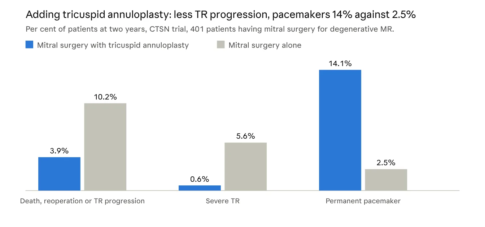
Surgical treatment of atrial fibrillation
Every patient with AF having a first-time elective cardiac operation should have the appendage occluded and should be considered for ablation; the randomised evidence is strongest for the appendage.
Guideline positions
| Recommendation | STS 2023 | ESC 2024 (with EACTS) | ACC/AHA 2023 |
|---|---|---|---|
| Ablation at mitral surgery | I, level A | I | 2a for any cardiac surgery |
| Ablation at non-mitral surgery (AVR, CABG) | I, level B | IIa | 2a |
| Appendage occlusion at cardiac surgery | I, level A | I, as an adjunct to anticoagulation | 1 |
| Stand-alone surgical or hybrid ablation after failed drugs or catheter ablation | IIa | IIa for endoscopic or hybrid ablation in persistent AF | 2b |
| Pulmonary vein isolation alone when the left atrium is 4.5 cm or more, or MR is more than moderate | Not recommended |
STS and ESC classes were confirmed today; the ACC/AHA column is from a secondary summary and memory.
Trials
| Trial | Design | Result |
|---|---|---|
| LAAOS III, NEJM 2021 | 4,811 patients with AF and CHA₂DS₂-VASc 2 or more having cardiac surgery, 105 centres; appendage occlusion or not, both continuing anticoagulation | Ischaemic stroke or systemic embolism 4.8% against 7.0% (HR 0.67, 0.53–0.85) over a mean of 3.8 years; benefit mainly after 30 days; no excess bleeding, heart failure or death |
| CTSN surgical ablation, NEJM 2015 | Ablation or not at mitral surgery, persistent AF | Freedom from AF at one year 63% against 29%; permanent pacemaker 21% against 8% (from memory) |
Practice points
LAAOS III tested occlusion in addition to anticoagulation, not instead of it. Do not stop anticoagulation because the appendage is closed.
Technique in the trial: amputation and closure in over half, stapler or double-layer internal suture in the rest. Purse-string or simple ligation alone was not allowed, because incomplete closure is common.
Confirm closure on TOE: no flow and a stump under 1 cm.
Lesion sets: pulmonary vein isolation for paroxysmal AF only; a left atrial or biatrial Cox-Maze set for persistent AF, with every line transmural and anchored to an annulus or another line.
Bipolar radiofrequency clamps for the vein and box lesions; cryoablation for lines ending on the mitral or tricuspid annulus.
Biatrial lesions give the best rhythm results and the highest pacemaker rate.
After surgery: anticoagulate, antiarrhythmic for 2–3 months, and document rhythm on a monitor at 6–12 months.
Endocarditis
Operate for heart failure, uncontrolled infection or embolic risk; ESC 2023 defines the timing and lowers the vegetation threshold to 10 mm.
Indications and timing (ESC 2023)
| Finding | Timing | Class |
|---|---|---|
| Aortic or mitral endocarditis with severe regurgitation, obstruction or fistula causing refractory pulmonary oedema or cardiogenic shock | Emergency, within 24 hours | I |
| Severe regurgitation or obstruction with heart failure symptoms or poor haemodynamic tolerance | Urgent, within 3–5 days | I |
| Locally uncontrolled infection: abscess, false aneurysm, fistula, enlarging vegetation, prosthetic dehiscence, new AV block | Urgent | I |
| Persistent vegetation 10 mm or more after one or more embolic episodes despite appropriate antibiotics | Urgent | I |
| Vegetation 10 mm or more with another indication for surgery | Urgent | I |
| Vegetation 10 mm or more without severe valve dysfunction or embolism, low surgical risk | Urgent | IIb |
| Significant preoperative haemorrhagic stroke | Delay 4 weeks or more | IIa |
| Ischaemic stroke without coma or haemorrhage | Do not delay indicated surgery | I |
| Complicated endocarditis | Manage in a referral centre with an Endocarditis Team | I |

AATS 2016 differs mainly on timing: once an indication is established, operate within days (Class I), and delay 3 weeks or more after intracranial haemorrhage (IIa). It also lists recurrent emboli with persistent vegetations despite appropriate antibiotics as an indication (IIa).
Trials
| Trial | Design | Result |
|---|---|---|
| EASE, NEJM 2012 | 76 patients with left-sided native valve endocarditis, severe valve disease and large vegetations; surgery within 48 hours or conventional care | In-hospital death or embolism at 6 weeks 3% against 23%; no embolic events after early surgery against eight with conventional care; composite at 6 months 3% against 28% |
| POET, NEJM 2019 | Stable left-sided endocarditis after initial intravenous treatment; switch to oral or continue intravenous | Oral step-down non-inferior for death, unplanned surgery, embolism or relapse (figures from memory) |
Diagnosis (2023 Duke-ISCVID)
Cardiac CT and PET-CT findings now count as imaging criteria.
Intraoperative inspection is a major criterion.
Molecular microbiology (PCR, including on valve tissue) and Bartonella serology are added; blood culture timing rules are relaxed.
Operative strategy
Radical debridement, then reconstruction; send tissue for culture and 16S PCR.
Repair native mitral disease limited to the leaflets whenever possible (AATS, Class I).
Root abscess with destruction beyond the annulus: allograft or biological root preferred to a prosthetic conduit (AATS, IIa).
Infection across the intervalvular fibrous body: double valve replacement with fibrous body reconstruction.
Prosthesis type by the usual criteria; avoid mechanical valves after intracranial bleeding or major stroke (AATS, IIa).
Image the brain before surgery in left-sided disease, and the coronaries by CT when there is an aortic vegetation.
EASE was small, single-country, young patients and mostly streptococcal: it supports early surgery for large vegetations with severe valve disease, not for every vegetation over 10 mm.
Thresholds: Endocarditis and prosthetic valves
In endocarditis the imaging findings that mandate surgery are severe valve dysfunction with heart failure, local extension, and vegetations ≥10 mm that have embolised.
Infective endocarditis (ESC 2023)
| Finding on echo or CT | Timing | Class |
|---|---|---|
| Severe acute regurgitation, obstruction or fistula with refractory pulmonary oedema or shock | Emergency (within 24 hours) | I |
| Severe regurgitation or obstruction with heart failure symptoms or poor haemodynamic tolerance | Urgent (3–5 days) | I |
| Abscess, pseudoaneurysm, fistula, enlarging vegetation, prosthetic dehiscence, new AV block | Urgent | I |
| Vegetation ≥10 mm after one or more embolic episodes despite appropriate antibiotics | Urgent | I |
| Vegetation ≥10 mm with another indication for surgery | Urgent | I |
| Vegetation ≥10 mm, aortic or mitral, no severe valve dysfunction or embolism, low risk | Urgent | IIb |
| Right-sided, three separate indications (course pack correction, ESC 2023): persistent bacteraemia despite appropriate antibiotics; RV dysfunction from acute severe TR not responding to treatment; residual tricuspid vegetation over 20 mm after recurrent septic pulmonary emboli. Any one is enough; they are not a combined criterion | Surgery | I to IIa |
| Early prosthetic valve endocarditis (within 6 months) | Valve replacement with complete debridement | I |
Cardiac CT is the test for perivalvular extension when echo is inconclusive, and gives coronary anatomy without catheter manipulation of an aortic vegetation.
Prosthetic valve dysfunction
| Finding | Threshold | Meaning |
|---|---|---|
| Aortic prosthesis, peak velocity | >4 m/s | Possible obstruction |
| Aortic prosthesis, mean gradient | ≥35 mmHg, or rise ≥20 mmHg from baseline | Possible obstruction |
| Aortic prosthesis, dimensionless index | <0.25 | Possible obstruction |
| Aortic prosthesis, acceleration time | >100 ms (ratio to ejection time >0.37) | Obstruction rather than high flow or mismatch |
| Mitral prosthesis, peak E velocity | ≥2.5 m/s | Possible obstruction |
| Mitral prosthesis, mean gradient | >10 mmHg | Possible obstruction |
| Mitral prosthesis, pressure half-time | >200 ms | Possible obstruction |
| Mitral prosthesis, VTI ratio (prosthesis ÷ LVOT) | >2.5 | Obstruction or significant regurgitation |
| Bioprosthetic structural deterioration, moderate | Gradient rise ≥10 mmHg to ≥20 mmHg with area fall ≥0.3 cm² or ≥25% | VARC-3 stage 2 |
| Bioprosthetic structural deterioration, severe | Gradient rise ≥20 mmHg to ≥30 mmHg with area fall ≥0.6 cm² or ≥50%, or new severe regurgitation | VARC-3 stage 3 |
| CT attenuation of a subprosthetic mass | <145 HU thrombus, ≥145 HU pannus; an adjunct to haemodynamics and leaflet motion, not a treatment rule | Thrombus may lyse or anticoagulate; pannus needs surgery |
Patient-prosthesis mismatch (indexed effective orifice area, cm²/m²)
| Position | Moderate | Severe | If BMI ≥30 |
|---|---|---|---|
| Aortic | ≤0.85 | ≤0.65 | ≤0.70 and ≤0.55 |
| Mitral | ≤1.2 | ≤0.9 | ≤1.0 and ≤0.75 |
Thresholds for reoperation
| Situation | Class |
|---|---|
| Symptomatic patient with a significant rise in gradient or severe regurgitation | I |
| Paravalvular leak with endocarditis, haemolysis needing repeated transfusion, or severe symptoms | I |
| Obstructive mechanical valve thrombosis in a critically ill patient | I |
| Non-obstructive thrombus >10 mm with embolism, or persisting despite optimal anticoagulation | IIa |
| Asymptomatic severe bioprosthetic dysfunction at low reoperative risk | IIa |
AF surgery: 2024 ESC/EACTS guideline and 2024 EHRA/HRS/APHRS/LAHRS consensus
Added 18 November 2026, from the session slides and the two documents. "As taught" means from the slides and not checked by me in the source text. Sources: ESC/EACTS 2024 guideline, Eur Heart J 2024;45:3314; EHRA/HRS/APHRS/LAHRS 2024 consensus, Europace 2024;26:euae043. I read the consensus advice tables for sections 4, 9 and 12; for the ESC guideline I saw the recommendation wording in search extracts and two summaries, not the full tables, so levels of evidence are given only where I saw them.
As taught (slides)
| Point | Detail |
|---|---|
| AF is a surgical risk factor | The ESC/EACTS 2024 guideline identifies AF as a significant risk factor for early mortality, late mortality and stroke in patients referred for cardiac surgery |
| The operation is the opportunity | Second slide only partly visible: with the chest open and the patient on bypass, ablation and appendage management can be added |
| Lesion sets differ in extent | More complete sets suit more advanced substrate |
| Full biatrial Cox-Maze IV | Pulmonary vein box, mitral and appendage lines, plus right atrial lines including the cavotricuspid isthmus. Typical fit: open left atrial surgery, persistent AF |
| Left-sided maze | Pulmonary vein box, mitral isthmus and appendage lines; no right atrial lesions. Typical fit: open left atrial cases where the biatrial set is not feasible |
| Pulmonary vein isolation with or without box | Bilateral vein encirclement, ideally with roof and floor lines. Typical fit: paroxysmal AF; CABG or AVR |
| Hybrid or thoracoscopic (convergent) | Epicardial box and appendage clip, then endocardial touch-up. Typical fit: stand-alone refractory persistent AF |
| Pulmonary vein isolation | Left and right vein pairs are encircled separately with bipolar radiofrequency |
| Box lesion | Roof and floor lines join the two circles and isolate the posterior wall |

Cox-Maze IV in detail (as taught, slides 18 November 2026)
Cox-Maze IV combines the box with mitral, appendage and right atrial lines.

| No. | Lesion | Energy |
|---|---|---|
| 1 | Right and left pulmonary vein encircling | Bipolar radiofrequency |
| 2 | Roof and floor lines, completing the box | Bipolar radiofrequency |
| 3 | Mitral isthmus line to the annulus | Bipolar radiofrequency |
| 4 | Coronary sinus lesion in line with 3 | Cryo |
| 5 | Left atrial appendage excision, with a line to the left pulmonary veins | Bipolar radiofrequency |
| 6 | Superior to inferior vena cava intercaval line | Bipolar radiofrequency |
| 7 | Right atrial free wall line, finished to the tricuspid annulus | Radiofrequency, then cryo at the annulus |
| 8 | Right atrial appendage line to the tricuspid annulus | Bipolar radiofrequency |
| 9 | Cavotricuspid isthmus | Cryo |
The lesion set has three components that must each be transmural (as taught):
| Component | Lesions | Key pitfalls |
|---|---|---|
| Left atrium | Pulmonary vein box, mitral isthmus with coronary sinus cryo, appendage line and amputation | Gaps in the box or mitral line (may lead to atrial flutter); circumflex injury |
| Right atrium | Superior to inferior caval line, free wall, cavotricuspid isthmus, right atrial appendage | Sinus node and phrenic nerve injury |
| Energy and testing | Bipolar radiofrequency clamp for lines; cryoprobe at the annuli | Unconfirmed block; failed posterior isolation |
Slide sources given: EHRA/HRS/APHRS/LAHRS 2024 consensus and ESC/EACTS 2024 guideline. The consensus text I read supports testing for block and the importance of posterior wall isolation (see its section 12 table below); I did not find the nine-lesion numbering in it, so treat the numbering as the faculty's teaching scheme.
A slide headed "LAAOS III: LAA closure now ... AF patients having surgery" ("The trial", "The result") was shown; its body was not legible in the photo. The trial is written up from the published sources at the end of this tab.
How well does it work? (as taught, slides 18 November 2026)
Complete lesion sets restore sinus rhythm best; an appendage clip alone rarely does. The figures and citations below are copied from the slide and were not re-checked by me today, apart from the CTSN trial, whose design I know from memory.

| Strategy | Freedom from AF or sinus rhythm | Evidence (as cited on the slide) |
|---|---|---|
| Biatrial Cox-Maze IV | 92% at 1 year, 84% at 5 years, 77% at 10 years (61% off antiarrhythmic drugs at 10 years) | Single-centre series, n=853; stand-alone results equal to concomitant. Khiabani, JTCVS 2022 |
| Box lesion against no box | 78% against 45% free of AF at 5 years | Cox-Maze IV cohort, n=576; posterior wall isolation matters. Henn, JTCVS 2015 |
| Biatrial against left-sided maze | 77.8% against 71.1% at 12 months; gap not sustained after 1 year | Meta-analysis, 10 studies, n=2,225. Phan, Europace 2015 |
| Pulmonary vein isolation against biatrial maze, with mitral surgery | 61% against 66% (P=0.60); any ablation 63% against 29% with none | CTSN randomised trial, n=260, persistent AF; more pacemakers with ablation. N Engl J Med 2015 |
| Appendage clip or closure alone, no ablation | Sinus rhythm 21% at 3 months, 16% at 12 months; only 15% in sinus rhythm at every visit | Epicardial clip trial, n=76; no clip-only rhythm series found. Perclip trial, J Cardiothorac Surg 2026 |
Reading it: within the CTSN trial the lesion set did not matter but ablating did; across the cohort data the posterior wall (box) is what separates good from poor results. A clip treats stroke risk, not rhythm.
Left atrial appendage techniques (as taught)
Close the appendage at its base and confirm on TOE.

| Technique | Notes | Reliability |
|---|---|---|
| Amputation and double-layer oversew | Excise at the base and close; standard in Cox-Maze; watch the circumflex and bleeding | High when closed at the base |
| Stapled excision | Fast, off-pump; risk of tearing friable tissue and of a residual stump | Good; check for stump |
| Epicardial clip (for example AtriClip) | Placed at the base, often on the beating heart; electrically isolates the appendage | High; low stump and leak rates |
| Internal suture ligation | Purse-string or running suture from inside through the atriotomy | Poor: frequent incomplete closure or recanalisation |
Slide sources: ACC/AHA/ACCP/HRS 2023 guideline; EHRA/HRS/APHRS/LAHRS 2024 consensus; ICVTS 2025 on internal suture closure. This agrees with LAAOS III, which did not allow purse-string closure alone (from memory).
Guideline comparison for concomitant ablation (as taught)
All major guidelines support concomitant ablation, most strongly in mitral surgery.
| Scenario | ESC/EACTS 2024 | ACC/AHA 2023 | STS 2023 |
|---|---|---|---|
| Mitral valve surgery | Class I, level A | 2a, B-R (all cardiac surgery) | Class I, level A |
| Non-mitral surgery, for example CABG or AVR | IIa, level B | 2a, B-R (all cardiac surgery) | Class I, level B-NR |
| Anticoagulation afterwards | Continue by stroke risk | 2a: at least 3 months | Heart-team follow-up, Class I |
| Stand-alone or hybrid, persistent AF | IIa, level A | 2b, B-R (hybrid) | IIa, level B-R (stand-alone) |
The ESC classes match what I found in the guideline extracts; the slide supplies the levels (A and B) that I had only from memory. The ACC/AHA 2a B-R wording for concomitant ablation matches a published summary I saw in search results; the STS entries I have not checked.
ESC/EACTS 2024: the framework
| Point | Detail | Source |
|---|---|---|
| AF-CARE | C comorbidity and risk factor management; A avoid stroke and thromboembolism; R reduce symptoms by rate and rhythm control; E evaluation and dynamic reassessment | ESC press release |
| Stroke risk score | CHA2DS2-VA (sex removed). Anticoagulation Class I at a score of 2 or more, Class IIa at 1 | ESC 2024 congress report |
| Regardless of score | Anticoagulate all patients with AF and hypertrophic cardiomyopathy or cardiac amyloidosis | ACC key points |
| Cardioversion | The duration threshold for early cardioversion is cut from 48 to 24 hours; wait-and-see for spontaneous conversion is advised | Europace spotlight |
| Catheter ablation | Class I as a first-line option in paroxysmal AF, and after failed drug therapy in paroxysmal and persistent AF | Congress report |
| After ablation | Anticoagulation for at least 2 months in all patients | ACC key points |
| Risk factors | Weight loss target of 10% or more; tailored exercise; treat hypertension, heart failure, diabetes, sleep apnoea, alcohol | ACC key points |
ESC/EACTS 2024: the surgical recommendations
| Recommendation | Class | Source |
|---|---|---|
| Concomitant surgical ablation is recommended in patients having mitral valve surgery with AF suitable for rhythm control | I | Guideline extracts (level not seen; I recall A) |
| Concomitant surgical ablation should be considered in non-mitral cardiac surgery with AF suitable for rhythm control, with shared decision-making | IIa | Guideline extracts (level not seen; I recall B) |
| Endoscopic and hybrid ablation should be considered in symptomatic persistent AF refractory to antiarrhythmic drugs, within a team of electrophysiologists and surgeons | IIa | Guideline extracts |
| Surgical closure of the left atrial appendage is recommended as an adjunct to anticoagulation in patients with AF having cardiac surgery | I, level B | Guideline; official slide set |
| Surgical appendage closure should be considered as an adjunct to anticoagulation during endoscopic or hybrid ablation | IIa, level C | Same |
| Stand-alone endoscopic appendage closure may be considered in AF with a contraindication to long-term anticoagulation | IIb | Guideline extracts |
The appendage recommendation rests on LAAOS III; note the wording "adjunct to": closure does not replace anticoagulation.
EHRA/HRS/APHRS/LAHRS 2024: surgical and hybrid ablation (section 12)
This document grades advice as "to do", "may be appropriate", "area of uncertainty" or "not to do", with evidence types META, RAND, OBS or OPN.
| Advice | Category | Evidence |
|---|---|---|
| Concomitant ablation in paroxysmal or persistent AF during surgery that opens the left atrium, whether or not drugs have failed | To do | META |
| Concomitant ablation in drug-refractory or intolerant AF during closed (left atrium not opened) cardiac surgery | To do | META |
| Concomitant ablation before any antiarrhythmic drug has been tried, during closed cardiac surgery | May be appropriate | META |
| Lesion set when the left atrium is open: biatrial Cox maze, or at least pulmonary vein isolation with posterior wall isolation | To do | RAND |
| Document exit or entrance block across the veins and completeness of lines | To do | OPN |
| Left atrial appendage exclusion with any surgical ablation, stand-alone or concomitant | To do | RAND |
| Stand-alone surgical or hybrid ablation for symptomatic persistent AF after failed catheter ablation or drugs, if the patient prefers it | May be appropriate | META |
| Stand-alone surgical or hybrid ablation for symptomatic paroxysmal AF after failed catheter ablation | Area of uncertainty | RAND |
Supporting figures quoted in section 12:
| Point | Figure |
|---|---|
| Concomitant ablation | Meta-analysis of 23 randomised trials: more freedom from AF at 12 months |
| Not isolating the whole posterior left atrium | 33% against 66% freedom from AF off drugs at 5 years; in mitral surgery, 6.7 times the recurrence risk |
| Pulmonary vein isolation alone | 37.8% single-procedure success at 5 years in one minimally invasive series |
| Stand-alone Cox maze | 89% freedom from atrial tachyarrhythmia at 5 years, 77% at 10 years, no 30-day deaths |
| Pacemaker | Sinus node dysfunction needing a pacemaker in up to 10% of non-paroxysmal patients after Cox maze; a large European valve registry found no excess |
EHRA/HRS/APHRS/LAHRS 2024: catheter ablation indications (section 4)
| Advice | Category | Evidence |
|---|---|---|
| Symptomatic recurrent paroxysmal or persistent AF resistant to or intolerant of one Class I or III drug | To do | META |
| First-line in symptomatic recurrent paroxysmal AF | To do | META |
| First-line in symptomatic persistent AF | Area of uncertainty | OPN |
| AF with left ventricular dysfunction thought to be arrhythmia-mediated | To do | META |
| Selected patients with AF and heart failure with reduced ejection fraction, to reduce admissions and prolong survival | May be appropriate | META |
| Anticoagulation for at least 2 months after ablation | To do | OPN |
How the two documents line up for the surgeon
| Situation | ESC/EACTS 2024 | Consensus 2024 | Lesion set (as taught) |
|---|---|---|---|
| Mitral surgery with AF | Ablate: Class I | To do | Biatrial Cox-Maze IV; left-sided maze if not feasible |
| CABG or AVR with AF | Should be considered: IIa | To do if drugs have failed; may be appropriate otherwise | Pulmonary vein isolation, ideally with a box |
| Any cardiac surgery with AF | Close the appendage: Class I | Exclude the appendage with any surgical ablation | Clip, or excision and suture |
| Stand-alone refractory persistent AF | Endoscopic or hybrid: IIa | May be appropriate | Epicardial box and clip, then endocardial touch-up |
Technique points (from memory, not checked today)
| Point | Detail |
|---|---|
| Energy | Bipolar radiofrequency clamp for the vein pairs and box; cryoprobe for the mitral isthmus and annular ends, where a clamp cannot reach |
| Mitral isthmus line | Must reach the annulus and be matched by a coronary sinus lesion; an incomplete line causes left atrial flutter |
| Circumflex | The dominant circumflex lies under the isthmus line: choose the site on the angiogram |
| Right side | Intercaval line, line to the tricuspid annulus, appendage line; keep away from the sinus node at the superior cavoatrial junction |
| Appendage | Clip at the base or excise and oversew; avoid a residual stump over 1 cm; check with TOE |
| Afterwards | Pacing wires, amiodarone for 2 to 3 months, anticoagulation continued by stroke risk and not by rhythm, rhythm monitoring at 6 and 12 months |
| Key trials | CTSN mitral ablation trial (N Engl J Med 2015): more freedom from AF, more pacemakers. LAAOS III (N Engl J Med 2021): appendage occlusion at surgery reduced stroke or embolism, 4.8% against 7.0% |
LAAOS III: left atrial appendage occlusion during cardiac surgery
Added 18 November 2026. Whitlock RP et al, N Engl J Med 2021;384:2081 (doi 10.1056/NEJMoa2101897). I read the abstract, the investigators' ACC 2021 slides and two conference reports, not the full paper.

| Item | Detail | Source |
|---|---|---|
| Question | Does occluding the appendage at cardiac surgery prevent stroke in patients with AF who are also anticoagulated? | Abstract |
| Design | Multicentre randomised trial; surgery with or without appendage occlusion; usual care including oral anticoagulation in both arms | Same |
| Patients | 4811 with AF and CHA2DS2-VASc of 2 or more, having cardiac surgery for another reason; 105 centres in 27 countries | ACC 2021 slides; Healio |
| Case mix | About two-thirds had a valve procedure, a fifth isolated CABG, a third concomitant ablation | Healio |
| Permitted techniques | Amputation and suture closure, stapler, epicardial device, or suture closure of the stump | ACC slides |
| Not permitted | Purse-string alone and percutaneous devices | From memory |
| Follow-up | Mean 3.8 years; stopped early for efficacy on the monitoring board's advice after the second interim analysis | Healio; NEJM report summary |
| Primary outcome | Ischaemic stroke or systemic embolism: 114 patients (4.8%) against 168 (7.0%); hazard ratio 0.67, 95% CI 0.53 to 0.85, p=0.001 | Same |
| Timing of benefit | First 30 days 2.2% against 2.7% (0.82, 0.57 to 1.18); after 30 days 2.7% against 4.6% (0.58, 0.42 to 0.80) | ACC slides; Healio |
| Anticoagulation during follow-up | About three-quarters in both arms were still anticoagulated at 2 and 3 years | ACC slides |
| Cost in theatre | Bypass 119 against 113 minutes; clamp 86 against 82 minutes | Healio |
| Safety | No increase in chest drain output, re-operation for bleeding, heart failure admission or 30-day mortality | Healio |
| Number needed to treat | About 45 over 3.8 years (my arithmetic: 1 divided by the 2.2-point absolute difference) | Calculated |
How to read it
It tests occlusion added to anticoagulation, not instead of it. That is why the guideline wording is "as an adjunct to oral anticoagulation".
It applies to patients already having cardiac surgery. It says nothing about percutaneous devices or about stand-alone closure.
The benefit appears after the first month, so it is a long-term gain for a few minutes of clamp time.
The old worry that removing the appendage causes heart failure (loss of natriuretic peptide and reservoir function) was not borne out.
Guideline effect: the 2024 ESC/EACTS guideline makes surgical closure Class I, level B, in patients with AF having cardiac surgery (see the section above).
Open questions (from memory)
| Question | Note |
|---|---|
| Patients without AF | Ongoing trials (LeAAPS, LAACS-2) are testing prophylactic closure at surgery in patients at risk but not in AF |
| Which technique | The trial was not powered to compare them; incomplete closure with a residual stump or leak may raise risk, so confirm closure on TOE |
| Can anticoagulation be stopped afterwards | Not tested; continue by stroke risk |
Ongoing trials in patients without AF: LeAAPS and BoxX-NoAF
Added 18 November 2026. Checked against the trial registry listings, the LeAAPS design paper and the sponsor's announcements. Both trials are sponsored by AtriCure, which makes the devices being tested; neither has reported.

LeAAPS
| Item | Detail | Source |
|---|---|---|
| Name | Left Atrial Appendage Exclusion for Prophylactic Stroke Reduction, NCT05478304 | Design paper, Am Heart J 2025;284:94 |
| Question | Does excluding the appendage with a clip at cardiac surgery prevent ischaemic stroke or systemic embolism in patients who do not have AF but are at risk of it? | Same |
| Design | International, prospective, randomised 1:1, blinded (patient and carers outside theatre), superiority | Design abstract |
| Patients | Age 18 or over, no pre-existing AF, at increased risk of AF and stroke by age, CHA2DS2-VASc, left atrial size or natriuretic peptide | Same |
| Size | 6,500 enrolled at 137 centres (planned at up to 250 sites); the registry lists 6,573 | Sponsor announcement, 15 July 2025; registry mirror |
| Primary endpoint | First ischaemic stroke or systemic arterial embolism (the abstract I saw is cut off after this) | Design abstract |
| Status | Started January 2023; enrolment complete July 2025; active, not recruiting; 5 years of follow-up | Sponsor announcement; registry mirror |
| Lead | Same McMaster group as LAAOS III (Whitlock) | Design paper author list |
BoxX-NoAF
| Item | Detail | Source |
|---|---|---|
| Name | EnCompass Clamp and AtriClip in Box Lesion and Left Atrial Appendage Exclusion for the Prevention of New Onset of Atrial Fibrillation, NCT06989775 | Registry mirror |
| Question | Does a prophylactic box lesion with appendage exclusion at cardiac surgery reduce post-operative AF and later clinical AF in patients not yet in AF? | CenterWatch listing |
| Patients | Age 65 or over with CHA2DS2-VASc of 3 or more, no history of AF, having surgery on bypass with the pericardium opened | Same |
| Size | Up to 960 patients at up to 75 sites | Medical Economics report |
| Status | Started October 2025; recruiting | Registry mirror |
| Why it matters | Post-operative AF is the commonest complication of cardiac surgery, exceeding 50% in some groups | Registry mirror |
How to use these in a viva
Evidence today: appendage closure is proven only in patients with known AF (LAAOS III). Closing it in patients without AF is not yet supported.
LeAAPS will answer the stroke question in patients without AF; LAACS-2 is a second trial of the same idea (from memory).
BoxX-NoAF asks a different question, rhythm not stroke, and adds an ablation to patients who have never had AF; the harms to watch are added time, bleeding and pacemaker need (my comment).
Both are industry-sponsored device trials: say so.
Endocarditis: 2023 ESC guideline (Eur Heart J, October 2023)
Added 18 November 2026. Delgado V et al, 2023 ESC Guidelines for the management of endocarditis, Eur Heart J 2023;44:3948-4042. As far as I know this is issue 39 of 14 October 2023, not 38; I did not open the journal page to confirm the issue number. Content below is from the ACC key-points summary of the guideline, which does not give classes or levels; one class is added from a published comparison table. Compare with the endocarditis thresholds already in this tab.

Surgery
| Point | Detail |
|---|---|
| Three indications | Heart failure, uncontrolled infection, prevention of septic emboli |
| Emergency, within 24 hours | Aortic or mitral native or prosthetic endocarditis with severe regurgitation, obstruction or fistula causing refractory pulmonary oedema or cardiogenic shock |
| Urgent, within 3 to 5 days | Heart failure; locally uncontrolled infection (abscess, false aneurysm, fistula, enlarging vegetation, prosthetic dehiscence, new AV block); persistent vegetation of 10 mm or more after one or more emboli despite antibiotics (Class I, level B); vegetation of 10 mm or more with another indication |
| Urgent or non-urgent | Fungal or multiresistant organisms, by haemodynamics |
| Early prosthetic valve endocarditis (within 6 months) | Complete debridement and valve replacement |
| Change from 2015 | A clear set of timing definitions; embolic risk can be an indication on its own in a stable patient (commentary) |
Stroke and surgery
| Situation | Advice |
|---|---|
| TIA or non-haemorrhagic stroke, with heart failure, uncontrolled infection, abscess or persistent high embolic risk | Do not delay surgery |
| Significant haemorrhagic stroke | Consider delaying at least 4 weeks |
| Haemorrhagic stroke in an unstable patient | Consider urgent or emergency surgery, weighing the chance of a meaningful neurological outcome |
Right-sided and device infection
| Point | Detail |
|---|---|
| Right-sided: operate for | Acute severe tricuspid regurgitation with right ventricular dysfunction; recurrent pulmonary emboli needing ventilatory support; residual tricuspid vegetation over 20 mm; left-sided involvement |
| Technique | Tricuspid repair preferred to replacement where possible |
| Device infection | Complete system extraction without delay, under initial empirical antibiotics |
At operation
| Point | Detail |
|---|---|
| Coronary assessment | Angiography if there is no aortic vegetation; CT coronary angiography if there is. For men over 40, postmenopausal women, known coronary disease or one or more risk factors |
| Heart block | Consider epicardial pacemaker implantation at the valve operation for complete AV block with a predictor of persistence: preoperative conduction abnormality, Staphylococcus aureus, aortic root abscess, tricuspid involvement or previous valve surgery |
Diagnosis and imaging
| Point | Detail |
|---|---|
| First line | Transthoracic echo |
| Transoesophageal echo | When transthoracic is negative with suspicion, in prosthetic valves, and before switching to oral antibiotics |
| Repeat echo | Within 5 to 7 days if suspicion stays high after a negative or inconclusive study |
| Cardiac CT | For possible native or prosthetic valve endocarditis when echo is inconclusive, and for paravalvular complications |
| FDG PET/CT | Recommended in possible prosthetic valve endocarditis; may be considered for device infection |
| Brain and whole-body imaging | Recommended in symptomatic patients; may be considered as screening |
Antibiotics
| Point | Detail |
|---|---|
| Duration | 2 to 6 weeks for native valves; at least 6 weeks for prosthetic valves |
| Two phases | First 2 weeks in hospital intravenously, during which surgery and source control happen; then outpatient oral or parenteral therapy in selected patients |
| Before stepping down | Transoesophageal echo must show no local progression or complication |
| Drugs | No aminoglycoside for staphylococcal native valve infection; rifampicin only with foreign material; daptomycin at 10 mg/kg daily |
Prevention and the team
| Point | Detail |
|---|---|
| High risk | Previous endocarditis; surgical, transcatheter or repaired valves; uncorrected cyanotic or prosthetically repaired congenital disease; ventricular assist devices |
| Prophylaxis | Recommended for high-risk patients having oral or dental procedures; should be considered after transcatheter mitral or tricuspid repair |
| Endocarditis Team | Cardiology, imaging, cardiac surgery, infectious diseases, microbiology and outpatient antibiotic therapy. Complicated cases go to a Heart Valve Centre with immediate surgical capability |
| Follow-up | Blood cultures after treatment ends; relapse means the same organism, reinfection a different one, usually after 6 months; addiction treatment for people who inject drugs |
Endocarditis: surgical approach and operative strategy
Added 18 November 2026. Main source: the 2016 AATS consensus on surgical treatment of infective endocarditis (Pettersson, J Thorac Cardiovasc Surg 2017;153:1241), read through the ACC key-points summary and the authors' 2019 review. Timing and indications by the 2023 ESC guideline are in the section above. Rows marked "from memory" were not checked today.
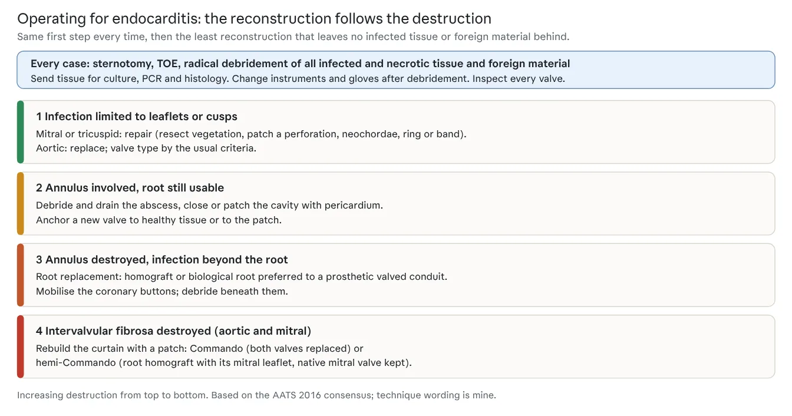
Operative drawings
These are my own schematics. The operations shown follow the AATS 2016 consensus and the technique papers cited in the tables below; the drawn steps are from memory. In the valve-substitute picture, the statement that no substitute has been shown to resist reinfection better once debridement is complete is from memory, and matches the consensus position that valve type follows the usual criteria.

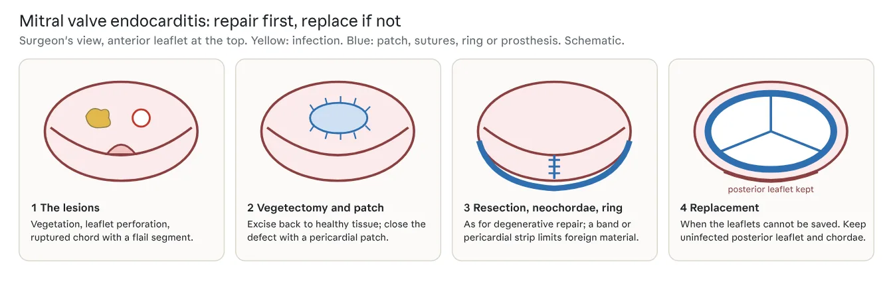
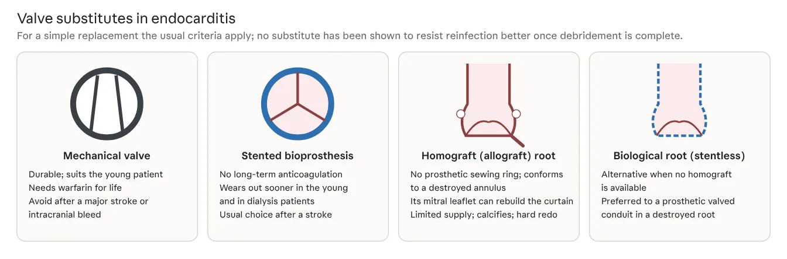
Leaflets and vegetations

| Point | Detail | Source |
|---|---|---|
| Where vegetations form | On the low-pressure side of the valve: atrial surface of the mitral and tricuspid leaflets, ventricular surface of the aortic cusps | From memory |
| Secondary lesions | Leaflet perforation, chordal rupture, and a "kissing" lesion or perforation of the anterior mitral leaflet where an aortic regurgitant jet strikes it | From memory |
| Size and embolism | Vegetation over 10 mm against under 10 mm: embolic events odds ratio 2.28 (1.71 to 3.05); mortality odds ratio 1.63 (1.13 to 2.35), in a meta-analysis of 21 studies | Open Heart 2025 |
| Left-sided threshold | 10 mm or more: urgent surgery if it persists after an embolus on antibiotics, or if there is another indication | ESC 2023 above |
| Right-sided threshold | Residual tricuspid vegetation over 20 mm | ESC 2023 above |
| Other predictors | Mobility, anterior mitral leaflet site, Staphylococcus aureus, previous embolus, first two weeks of treatment | From memory |
Repair or replace

| Point | Detail | Source |
|---|---|---|
| Rule | Native valve infection limited to leaflets or cusps should be repaired whenever possible (Class I), particularly mitral and tricuspid | AATS 2016 |
| Criteria for repair and for replacement | As listed in the chart | From memory |
| Mitral, pooled data | 23 studies, 11,802 patients: repair had lower early mortality (risk ratio 0.44, 0.38 to 0.51) and lower long-term mortality (hazard ratio 0.70, 0.58 to 0.85) | Awad, J Cardiothorac Surg 2024 |
| Mitral, earlier review | 24 studies: in-hospital mortality 2.3% against 14.4%; late recurrent endocarditis 1.8% against 7.3% | Feringa, Ann Thorac Surg 2007 |
| How often repair is done | About 36 to 39% of operated mitral endocarditis in the pooled series | Feringa 2007; Am J Cardiol meta-analysis report |
| Caveat | All observational: valves that could be repaired were less destroyed and the patients less sick, so the difference overstates the effect of the technique | My comment |
| Tricuspid, STS database | 1,613 isolated operations in people who inject drugs: valvectomy 7%, repair 33%, replacement 60%; operative mortality 16%, 2% and 3% | Slaughter, J Thorac Cardiovasc Surg 2021 |
| Tricuspid, single centre 2016 to 2021 | 283 patients (90.8% injecting drugs): low operative mortality; repair preferred when feasible | JTCVS Open 2024 |
| Valvectomy against replacement | Meta-analysis of 752 patients: no significant difference in 30-day mortality (13% against 7%), right heart failure (27% against 11%) or recurrent endocarditis (7% against 19%) | Ann Cardiothorac Surg 2019 |
The full Commando operation

| Step | Detail | Status |
|---|---|---|
| Indication | Infection destroying the intervalvular fibrosa with both aortic and mitral valves involved, native or prosthetic | Navia, JTCVS Techniques 2023 |
| Set-up | Bicaval cannulation, cold cardioplegia given antegrade into the ostia and retrograde | From memory |
| Incision | Aortotomy carried down through the non-coronary and left commissure region into the curtain and the roof of the left atrium, opening both valves as one field | From memory |
| Debridement | Both valves, the curtain and all abscess removed back to healthy tissue | AATS 2016 principle |
| Mitral prosthesis | Sewn to the posterior two-thirds of the annulus | From memory |
| Patch | Pericardial patch (bovine or autologous), triangular or folded, sewn to the anterior part of the mitral sewing ring to make a new curtain; one part closes the left atrial roof | From memory |
| Aortic prosthesis | Sewn to the remaining annulus and to the patch | From memory |
| Closure | The other part of the patch closes or enlarges the aortotomy | From memory |
| Hemi-Commando alternative | Root homograft with its attached anterior mitral leaflet rebuilds the curtain; native mitral valve kept | Navia 2023 |
| Risks | Bleeding from long suture lines, heart block, patch dehiscence and pseudoaneurysm, long ischaemic time | From memory |
| Results | Hemi-Commando series: hospital death 8% in 37 patients. In a series of destructive endocarditis, survival after Commando-type operations was no worse than after abscess surgery with the curtain preserved | Elgharably 2018 and Medicina 2026, cited above |
Tricuspid valve endocarditis

| Point | Detail | Source |
|---|---|---|
| When to operate | Severe regurgitation with right ventricular dysfunction, recurrent emboli needing ventilatory support, residual vegetation over 20 mm, or left-sided involvement | ESC 2023 above |
| Aim | Radical debridement by vegetectomy or valvectomy, by extent of infection | Review, Innovations 2024 |
| Repair | After vegetectomy the defect is closed directly or with a pericardial patch; keep foreign material to a minimum | Same |
| Bicuspidisation and annuloplasty | Posterior leaflet excised and its annulus plicated; suture annuloplasty or a pericardial strip in place of a prosthetic ring | From memory |
| Replacement | Bioprosthesis; in the septal region take sutures through leaflet tissue to avoid the conduction system | From memory |
| Valvectomy | Leaflets and chordae removed without replacement; a staged option when relapse into drug use is likely. Needs low pulmonary vascular resistance; right heart failure later | Meta-analysis for the definition; physiology from memory |
| Choice | Repair when anatomically possible, to avoid reinfection and prosthetic degeneration | Slaughter 2021 |
| Catheter aspiration | Percutaneous vegetation debulking is an emerging alternative in high-risk patients; surgery remains first line beyond antibiotics | JTCVS Open 2024 |
| Addiction treatment | Part of management | AATS 2016; ESC 2023 |
Before the operation
| Point | Detail | Source |
|---|---|---|
| Team and place | Centre with cardiology, infectious diseases and cardiac surgery; surgeon experienced in valve reconstruction | AATS 2016 |
| Antibiotics | Patient should be on appropriate antibiotics at surgery (Class I); once on them, further delay is unlikely to help (IIa) | AATS 2016 |
| Brain | Imaging for any neurological symptom (I); screening before left-sided surgery is reasonable (IIa); mycotic aneurysm managed with neurology and neurosurgery (I) | AATS 2016 |
| After intracranial haemorrhage | Delay of 3 weeks or more is reasonable (IIa); ESC 2023 says consider at least 4 weeks | AATS 2016; ESC 2023 above |
| Imaging to plan the operation | TOE for every valve and for abscess, fistula, dehiscence; CT for the root, coronaries and emboli; PET in prosthetic infection | ESC 2023 above |
| Coronaries | CT coronary angiography if there is an aortic vegetation, to avoid a catheter across it | ESC 2023 above |
| Other sources | Dental, spleen, spine, lines and devices dealt with or planned | From memory |
Principles in theatre
| Principle | Detail | Source |
|---|---|---|
| Approach | Median sternotomy, with few exceptions (Class I) | AATS 2016 |
| Intraoperative TOE | Mandatory (Class I) | AATS 2016 |
| Cannulation | Bicaval if the mitral or tricuspid valve, right atrium or curtain may need work | Quintana, Ann Cardiothorac Surg 2019; general point from memory |
| Handle the heart gently | Minimal manipulation before the clamp is on, to avoid embolising vegetation | From memory |
| Debridement | Radical removal of all infected and necrotic tissue and all foreign material (Class I). Resect anything suspicious first and judge the reconstruction afterwards | AATS 2016; Quintana 2019 |
| After debridement | Irrigate, change gloves, instruments and suction; send valve and abscess wall for culture, PCR and histology | From memory |
| Inspect everything | All four valves, the curtain, the membranous septum; look for kissing lesions on the anterior mitral leaflet from an aortic jet | From memory |
| Reconstruction | Chosen by the valve involved, the severity of destruction and the options available (Class I) | AATS 2016 |
| Antibiotic-soaked grafts | The consensus found no evidence to support soaking a graft in antimicrobial | Report of the consensus |
Valve by valve
| Situation | Strategy | Source |
|---|---|---|
| Native valve infection limited to leaflets or cusps | Repair whenever possible (Class I), particularly mitral and tricuspid | AATS 2016 |
| Mitral repair methods | Vegetation excision, leaflet resection, pericardial patch for a perforation, neochordae, ring or band | From memory |
| Simple replacement | Mechanical or tissue chosen by the usual criteria (Class I) | AATS 2016 |
| Stroke or intracranial bleeding | Avoiding a mechanical valve is reasonable (IIa) | AATS 2016 |
| Prosthetic aortic infection, root and annulus intact after debridement | New prosthesis, tissue or mechanical, is reasonable (IIa) | AATS 2016 |
| Annulus destroyed, infection beyond the root | Root reconstruction with an allograft or biological root, preferred to a prosthetic valved conduit (IIa) | AATS 2016 |
| Root homograft: technique | First choice when the annulus cannot hold a sewn valve; mobilise the coronaries widely so the tissue beneath them can be debrided; align the homograft trigone to trigone | Quintana 2019 |
| Prosthetic mitral infection with annular destruction | Reconstruct the annulus; anchor the new valve to ventricular muscle or to the patch, to prevent leak and pseudoaneurysm (IIa) | AATS 2016 |
| Double-valve infection, annuli preserved | Two prostheses by the usual criteria (IIa) | AATS 2016 |
| Double-valve infection with destruction of the intervalvular fibrosa | Commando: debride, rebuild the curtain and left atrial roof with a patch, replace both valves. Hemi-Commando: root homograft with its attached mitral leaflet rebuilds the curtain and the native mitral valve is kept | Navia, JTCVS Techniques 2023; Commando steps from memory |
| Hemi-Commando results | 37 patients, 2010 to 2017, 73% prosthetic infection; hospital death 8% | Elgharably, Eur J Cardiothorac Surg 2018 |
| Destruction of the cardiac skeleton, one series | 19 Commando or hemi-Commando operations among 97 patients; survival no different from abscess with the curtain preserved | Medicina 2026 |
| Tricuspid | Repair preferred to replacement; operate for severe regurgitation with right ventricular dysfunction, recurrent emboli needing ventilation, or residual vegetation over 20 mm | ESC 2023 above |
| Tricuspid in people who inject drugs | Vegetectomy and repair; bioprosthesis if replacement is unavoidable; valvectomy as a staged option | From memory |
| Devices | Remove the whole system when device infection is likely (Class I); reasonable in Staphylococcus aureus or fungal infection even without proof (IIa) | AATS 2016 |
| Pacing | Consider epicardial leads at the valve operation for complete heart block with predictors of persistence | ESC 2023 above |
Particular patients
| Group | Advice | Source |
|---|---|---|
| People who inject drugs | Normal surgical indications; addiction treatment is part of management (IIa) | AATS 2016 |
| Dialysis | Normal indications; shorter durability of bioprostheses and allografts may affect valve choice (IIa) | AATS 2016 |
Coming off bypass and afterwards
| Point | Detail | Source |
|---|---|---|
| Expect | Vasoplegia, coagulopathy, heart block, right ventricular dysfunction; give time on bypass and have pacing wires on both chambers | From memory |
| TOE before leaving | Paravalvular leak, residual shunt or fistula, patch integrity, other valves | From memory |
| Antibiotics afterwards | Complete the course; restart the clock for a full course if the valve culture is positive | From memory |
| Follow-up | Tell the patient about the risk of recurrence and the need for prophylaxis (Class I) | AATS 2016 |
Points for a viva
The operation has two halves: debridement, which is never compromised, and reconstruction, which is sized to what is left.
Repair mitral and tricuspid valves when infection is limited to the leaflets.
Valve type follows the usual rules, except that a mechanical valve is best avoided after a major stroke or bleed.
A destroyed annulus means a root replacement, with a homograft or biological root preferred.
A destroyed curtain means a Commando or hemi-Commando: say what each one replaces.
Surgical management of endocarditis: 2025 review (Sidik et al)
Added 18 November 2026 from the PDF you supplied: Sidik AI et al, Surgical Management of Infective Endocarditis: Indications, Techniques, and Outcomes, Cureus 2025;17(9):e91381, doi 10.7759/cureus.91381. A narrative review (46 studies, 2015 to 2025). Everything below is from the paper. Caution: its indication table uses ESC 2015 and AATS 2016; the ESC 2023 section above in this tab is the current guideline and takes precedence where they differ (notably timing after stroke).

Scale and indications
| Point | Figure |
|---|---|
| Incidence | 3 to 10 per 100,000 per year |
| Proportion needing surgery | Up to 50% |
| Prosthetic valve endocarditis | 20 to 30% of cases; in-hospital mortality 18%, six-month mortality 30% |
| In-hospital mortality after surgery | 10 to 20%, highest over 75 years |
| Vegetation thresholds | 10 mm or more: raised embolic risk. Over 30 mm: very high neurological risk. Right-sided over 20 mm with recurrent pulmonary emboli: operate |
| Right-sided, 20 mm or less, responding, no complications | Conservative treatment, shorter two-week antibiotic course possible |
| Silent emboli on whole-body CT or PET-CT | 20 to 50% of patients |
| FDG PET-CT in prosthetic valve endocarditis | Sensitivity 86%, specificity 84% |
Neurological complications and timing (as the review states it)
| Point | Detail |
|---|---|
| After major ischaemic stroke or any intracranial haemorrhage | Review says delay at least four weeks, on limited data. ESC 2023 is less restrictive for ischaemic stroke without haemorrhage: see the guideline section above |
| Life-threatening heart failure or uncontrolled infection despite recent stroke | Surgery within 72 hours may be considered |
| Haemorrhagic transformation after surgery | 2 to 7% of patients with a previous stroke |
| If surgery is postponed | Repeat brain imaging at 1 to 2 weeks, or sooner on deterioration |
Operative points
| Step | Detail |
|---|---|
| Before | Transoesophageal echo, CT, PET-CT where needed; coronary assessment over 40 years; look for extracardiac foci |
| Specimens | Tissue to pathology, microbiology and molecular testing |
| Aortic valve | Usually replaced |
| Mitral valve | Patch repair for a perforation with intact free margin and chordae; repair preferred for localised infection |
| Limited periannular disease | Standard aortic valve replacement |
| Root abscess | Root replacement; allograft or stentless root; Ross in selected patients |
| Abscess cavities | Patch repair of aortic root abscess cavities is generally avoided (recurrence, leak, pseudoaneurysm): cavities are debrided, excluded and drained into the pericardium. This differs from the patch reconstruction described earlier in this tab, which applies when the annulus must be rebuilt to seat a valve |
| Tricuspid | Operate for persistent sepsis, vegetation over 20 mm, recurrent pulmonary emboli; repair preferred |
Valve choice
| Comparison | Result |
|---|---|
| Mechanical (2,336) against bioprosthetic (2,057), Flynn meta-analysis | Survival HR 0.94 (0.73 to 1.21); reinfection HR 0.95 (0.48 to 1.89); reoperation HR 0.82 (0.34 to 1.98). No significant difference. Mechanical patients were younger (52.1 against 59.2 years) |
| Homograft or autograft | Reinfection 0.2 to 5.5%; limited by structural degeneration and availability |
| Repair | Preferred for localised infection |
Commando operation (aortic and mitral replacement with reconstruction of the intervalvular fibrous body)
| Series | Result |
|---|---|
| Origin | Described by David in 1979 |
| One-year mortality across series | 20 to 30% |
| David, 182 patients, 1985 to 2020 | Operative mortality 13.2%; survival 51.1% at 10 years and 23.7% at 20 years |
| Forteza, 40 patients (26 endocarditis) | Freedom from reoperation 84.6% at 5 years, 76.9% at 10 years; survival 57.7% and 50% |
| Variant | Essen-Commando using a stentless root |
After the operation
Antibiotics for six weeks after surgery, adjusted to operative cultures.
Transthoracic echo at six weeks.
Relapse (same organism, early) is distinguished from reinfection (new organism, later).
Reoperation is commoner with continued drug use, immunosuppression and prosthetic complications; addiction, social work and psychiatric services are part of follow-up.
Commando operation step by step (Perri and Johnston, Cleveland Clinic)
Added 18 November 2026 from the PDF you supplied: Perri JL, Johnston DR, Commando procedure in a radiated chest, JTCVS Techniques 2022;15:54-7, doi 10.1016/j.xjtc.2022.07.006. A technique paper with one case. Everything below is from the paper. It describes the operation for calcific disease; the authors say it is technically simpler here than for invasive endocarditis, but the steps are the same framework as the full Commando drawing earlier in this tab.
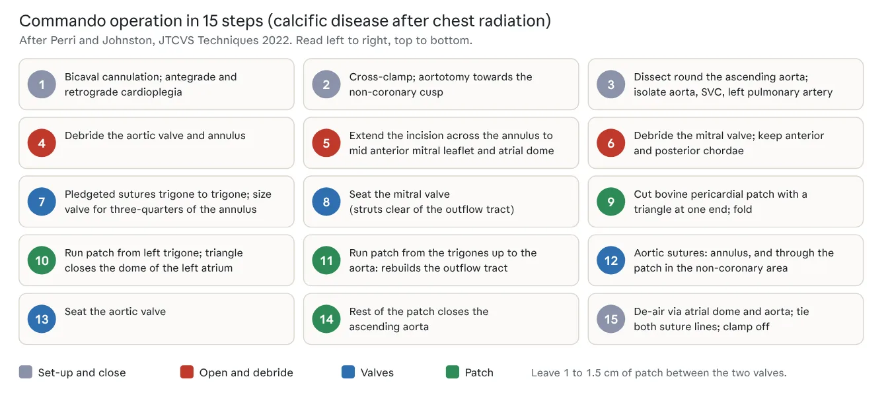
Why it is used in a radiated chest
Mantle radiation causes calcific valve disease; calcium in the aorto-mitral curtain and mitral annulus makes ordinary double valve replacement difficult.
The Commando avoids annular sutures through calcium and allows larger valves.
The 15 steps
| Step | Action |
|---|---|
| 1 | Bicaval cannulation; antegrade and retrograde cardioplegia, the retrograde line placed under direct vision through the right atrium |
| 2 | Cross-clamp; aortotomy extended towards the non-coronary cusp |
| 3 | Circumferential dissection of the ascending aorta; aorta, superior vena cava and left pulmonary artery isolated |
| 4 | Debride the aortic valve and annulus |
| 5 | Extend the aortotomy across the annulus to the midline of the anterior mitral leaflet, between the anterior chords, and on to the dome of the left atrium |
| 6 | Debride the mitral valve, keeping anterior and posterior chordae |
| 7 | Pledgeted sutures in the posterior mitral annulus from trigone to trigone. Size the valve so the sutures cover three-quarters of its circumference. Measure the open gap: this is the patch width. Mark the trigone sutures on the cuff so the struts stay out of the outflow tract |
| 8 | Seat the mitral valve |
| 9 | Cut a bovine pericardial patch with a triangle at one end, and fold it |
| 10 | Sew the patch, smooth side to the valve, with a running suture starting at the anterolateral (left) trigone; the triangular end rebuilds the dome of the left atrium |
| 11 | Run the patch from the trigones up to the ascending aorta, rebuilding the outflow tract |
| 12 | Aortic valve sutures in the native annulus; in the non-coronary area they go through the patch, outside to in. Leave 1 to 1.5 cm of patch between the valves |
| 13 | Seat the aortic valve |
| 14 | Use the remaining patch to close the ascending aorta |
| 15 | De-air through the atrial dome and aorta; tie both suture lines; remove the clamp |
Their advice
| Point | Detail |
|---|---|
| Exposure | In about 90% the incision into the dome of the left atrium is enough; dividing the superior vena cava or an extended transseptal incision is rarely needed |
| Mitral sizing | At most one-quarter of the circumference completed by the patch; an oversized valve distorts the outflow tract |
| Patch | 1 to 1.5 cm between the valves; two layers of suture to recreate the intervalvular fibrous body, because bleeding here is hard to deal with once off bypass |
| Their case | Man of 59, mantle radiation 20 years earlier; 29 mm aortic and 32 mm mitral bioprostheses; cross-clamp 89 minutes; home on day 6 |
Outcome by indication (as quoted in the paper)
| Indication | Mortality | Cross-clamp time |
|---|---|---|
| All, meta-analysis of 540 patients | 7 to 28% | |
| Toronto series, 158 of 182 non-infective | 13% in hospital | |
| Calcific disease (their experience) | 80 to 90 minutes | |
| Endocarditis | 24 to 28% | 184 to 202 minutes |
3D transoesophageal echo in endocarditis (Baltodano-Arellano et al, 2024)
Added 18 November 2026 from the PDF you supplied: Baltodano-Arellano R et al, Role of 3D transoesophageal echocardiography in the study of infective endocarditis, Eur Heart J Imaging Methods Pract 2024;2:qyae085, doi 10.1093/ehjimp/qyae085. A review with a case collection. Everything below is from the paper; its echo images are not reproduced. This links to the echo material in Cardiac tab 4.
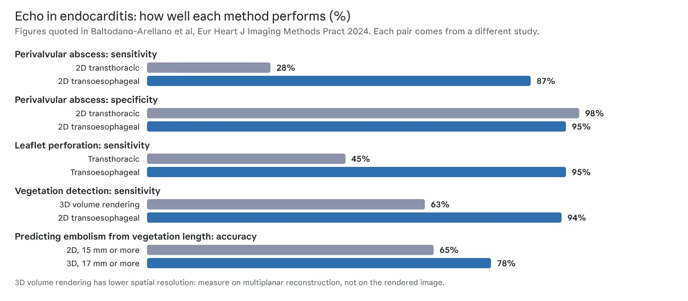
What 3D adds for the surgeon
| Tool | Use |
|---|---|
| Multiplanar reconstruction | Unlimited cut planes: finds more vegetations, gives the true maximum length, localises the lesion to a scallop or cusp. Use this for measurement |
| Volume rendering | En face surgical view and the relation between lesions; good for planning. Lower spatial resolution, so do not measure on it |
| Simultaneous biplane | Follows device leads through the tricuspid valve in two planes |
Lesion by lesion
| Lesion | Points |
|---|---|
| Vegetation | Over 10 mm with an embolic event or valve dysfunction: urgent surgery. Over 30 mm: high neurological risk. Best cut-off for embolism in one study 17 mm on 3D against 15 mm on 2D, accuracy 78% against 65%; 3D lengths applied to current thresholds would send more patients to surgery |
| Perivalvular abscess | Sensitivity and specificity 28% and 98% for transthoracic, 87% and 95% for 2D transoesophageal. In one surgical series of 15 abscesses multiplanar reconstruction found all and 2D found one |
| Pseudoaneurysm | Echo-free perivalvular cavity communicating with the bloodstream, expanding in systole and collapsing in diastole; usually the progression of a root abscess; can rupture into left atrium, aorta, left ventricle or pericardium. 3D shows the rupture site and the relation to the coronary origins |
| Fistula | Turbulent colour flow between chambers is the indirect sign; volume rendering clarifies the tract |
| Leaflet perforation | Transoesophageal against transthoracic: sensitivity 95% against 45%, specificity 98% against 95%. En face 3D views found perforations missed on 2D |
| Prosthetic dehiscence | Gap between annulus and sewing ring; rocking when severe, and severe regurgitation when dehiscence exceeds 40% of the annulus. Aortic prostheses more often than mitral, usually at the non-coronary sinus; mitral defects mostly posterior and lateral |
| Non-bacterial thrombotic endocarditis | Small (under 1 cm) verrucous nodules or diffuse thickening |
Limits
Needs regular rhythm and a still probe; 2D artefacts carry into 3D, and prosthetic shadowing lowers sensitivity.
The authors advise a multimodal approach in these situations, with CT for perivalvular extension.
Endocarditis in people who inject drugs: tricuspid strategy and redo risk
Added 18 November 2026 from three PDFs you supplied. Everything below is from the papers.
de Waha S, Noack T, Kister T, Desch S, Marin-Cuartas M, Kiefer P, Borger MA. Tricuspid valve endocarditis in people who inject drugs: strategies to reduce mortality and recurrent infection. Ann Cardiothorac Surg 2026;15(3):35, doi 10.21037/acs-2026-1-0008-tvd (Leipzig; keynote review).
Luc JGY et al. Valvectomy versus replacement for the surgical treatment of infective tricuspid valve endocarditis: a systematic review and meta-analysis. Ann Cardiothorac Surg 2019;8(6):610-620, doi 10.21037/acs.2019.11.06.
Mori M et al. Risk of reoperative valve surgery for endocarditis associated with drug use. J Thorac Cardiovasc Surg 2020;159(4):1262-1268, doi 10.1016/j.jtcvs.2019.06.055.

Presentation and work-up (de Waha 2026)
| Point | Detail |
|---|---|
| Patient | Young, few comorbidities other than substance use; more HIV and viral hepatitis |
| Presentation | Fever with pleuritic pain, cough, breathlessness or haemoptysis from septic pulmonary emboli; murmur often faint. Often mistaken for primary lung disease |
| Left-sided disease | Half have left-sided involvement and about one-third have isolated left-sided disease: low threshold for transoesophageal echo |
| Imaging | Transthoracic echo is often diagnostic (anterior valve, large vegetations); CT for emboli, infarcts and lung abscess |
| Organisms | Staphylococcus aureus dominant, increasingly methicillin-resistant; polymicrobial and Candida not rare. Pentazocine: think Pseudomonas. Brown heroin in lemon juice with large vegetations: think non-albicans Candida |
Antibiotics (de Waha 2026)
| Point | Detail |
|---|---|
| Medical treatment alone | Succeeds in about 90% of right-sided cases |
| Two-week course | Oxacillin or cloxacillin without gentamicin is enough for uncomplicated methicillin-sensitive S. aureus if response is good, vegetation 20 mm or less, and no metastatic infection, empyema, prosthetic material or left-sided disease |
| Otherwise | 4 to 6 weeks |
| Oral option | Ciprofloxacin with rifampicin in selected uncomplicated, susceptible, supervised cases |
| Outpatient intravenous therapy | Not routinely recommended by ESC in this group; partial oral regimens or long-acting dalbavancin can help complete treatment |
When to operate and what to do (de Waha 2026)
| Point | Detail |
|---|---|
| General stance | Avoid surgery when possible. Surgery improves short-term mortality; long-term benefit is debated (registry hazard ratio for long-term mortality after surgery 1.80, 0.95 to 3.30; about 55% of deaths from relapse or recurrence) |
| Indications (ESC 2023) | Right ventricular dysfunction from acute severe regurgitation not responding to diuretics; persistent vegetation with respiratory failure needing ventilation after recurrent septic emboli; residual vegetation over 20 mm after recurrent emboli; bacteraemia or sepsis after 7 days or more of appropriate antibiotics; left-sided involvement |
| Before surgery | Control every other focus of infection |
| Repair | Preferred: lower reinfection, no prosthesis. Tissue destruction often prevents it |
| Replacement | Bioprosthesis usually chosen because of anticoagulation adherence; no clear difference in recurrence or long-term outcome between mechanical and bioprosthetic in this group |
| Pacing | Place a prophylactic epicardial lead at tricuspid replacement, tunnelled to a subcutaneous pocket, to avoid a later lead across the prosthesis |
| Valvectomy | For selected patients in whom continued injecting makes prosthetic reinfection likely; a stabilising first stage, with replacement later for those who achieve abstinence |
| Percutaneous debulking | Adjunct for large vegetations, recurrent emboli or instability in poor surgical candidates; evidence limited |
Addiction treatment and long-term outcome (de Waha 2026)
Treating the infection without treating the substance use disorder fails to treat the cause (AHA/ACC statement).
Start buprenorphine or methadone during the admission; counselling alone performs worse.
Continued injecting is reported in up to 70% after surgery.
Readmission by 3 months: 22 to 49%. Survival under 50% at 10 years.

Valvectomy against replacement (Luc 2019)
16 studies, 752 patients with tricuspid endocarditis and intravenous drug use; 14% valvectomy, 86% replacement; mean follow-up 4.2 years.
| Outcome | Valvectomy | Replacement | p |
|---|---|---|---|
| Commonest indication | Septic pulmonary embolism (74%) | Persistent sepsis (62%) | |
| 30-day mortality | 13% | 7% | 0.21 |
| Right heart failure | 27% | 11% | 0.17 |
| Prolonged ventilation | 40% | 26% | under 0.01 |
| Stroke | 4% | 3% | 0.85 |
| Recurrent endocarditis | 7% | 19% | 0.81 |
| Tricuspid reoperation | 56% | 14% | 0.06 |
Authors' conclusion: valvectomy is an acceptable first operation and a bridge to staged replacement. Caution: observational studies, small valvectomy group, wide confidence intervals; repair was not part of this comparison.
Redo valve surgery (Mori 2020)
Eight US centres, 2011 to 2017; 925 patients with drug-associated endocarditis having valve surgery (652 first-time, 273 redo).
| Point | Figure |
|---|---|
| Annual cases | 108 in 2012 rising to 229 in 2017 |
| Proportion that were redo | 19% in 2012 rising to 28% in 2017 |
| 30-day mortality | 4.8% first-time; 8.1% redo (p 0.049); 11.8% after three or more previous operations |
| Adjusted risk of 30-day death for redo | Odds ratio 2.22 (1.22 to 4.06) |
For the viva: the redo patient is young and looks fit, but carries about twice the operative mortality.
AngioVac and percutaneous mechanical aspiration in endocarditis
Added 18 November 2026 in answer to your question. Sources, each marked in the tables:
[A] El Sabbagh A, Landolfo K, Yucel E, Hamid N, Baddour LM, Sethi SS. Percutaneous mechanical aspiration in tricuspid valve infective endocarditis. Ann Cardiothorac Surg 2026, doi 10.21037/acs-2025-aw-41-tvd (read online today: https://www.annalscts.com/article/view/17484/html).
[B] STS summary of the AngioVac system for right-sided endocarditis, quoting the Mhanna meta-analysis (read online today: https://www.sts.org/node/8223).
[C] Poliwoda SD et al. AngioVac system for infective endocarditis: a new treatment for an old disease. Ann Card Anaesth 2023;26:105-9, doi 10.4103/aca.aca_156_21 (the PDF you supplied; three cases).
[D] de Waha et al 2026 and ESC 2023, already in the section above.
I could not open the American Heart Association 2026 science advisory on this topic (J Am Heart Assoc 2026;15:e050115); only its headline points were visible in search results.

What it is
| Point | Detail | Source |
|---|---|---|
| Device | Large-bore aspiration cannula with a funnel tip, a centrifugal pump, a filter and a return cannula: a veno-venous extracorporeal circuit that sucks blood and debris from the right atrium, filters it and returns it | A, B |
| Licence | Approved in the United States in 2014 for removing undesirable intravascular material (thrombus, embolus); use in endocarditis is off-label | A, B, C |
| Sizes | 22 Fr system (25 Fr outer cannula, 20 or 180 degree tip) or 18 Fr system (22 Fr outer cannula, 85 degree bend); return cannula 16 to 18 Fr | A |
| Other devices | Penumbra Lightning 12 Fr (no reinfusion); Inari FlowTriever 20 or 24 Fr (syringe suction, filtered reinfusion); AlphaVac (no reinfusion) | A |
Guideline position
| Body | Position | Source |
|---|---|---|
| ESC 2023 | Class IIb: may be considered in selected high-risk patients with right-sided intra-atrial septic masses | A, D |
| AHA 2022 statement on people who inject drugs | Recognised as a consideration | A |
| AHA 2026 science advisory | Exists; not read | search result only |
| Evidence base | No randomised trial; registries, case series and administrative data | A |
Who is considered
| Indication | Detail | Source |
|---|---|---|
| Vegetation over 20 mm, recurrent septic pulmonary emboli, or persistent sepsis on correct antibiotics | In a patient at high surgical risk or in whom a prosthesis is undesirable | A, B |
| People who inject drugs | As definitive treatment for refractory infection, or as a bridge to surgery while addiction is treated | A |
| Device lead infection | To debulk before lead extraction, especially vegetation 20 mm or more, or 10 mm or more with a patent foramen ovale | A |
| Diagnostic uncertainty | To obtain tissue | A |
| Favourable anatomy | Large, friable, mobile vegetation on the atrial side of the valve. Ventricular, subvalvular or dense chronic vegetations do badly | A |
| Unlikely to help | Refractory septic shock; severe hypoxaemia from emboli already delivered | A |
| Timing | Usually after 5 to 7 days of intravenous antibiotics; earlier in aggressive S. aureus infection | A |
| Before the procedure | Transoesophageal echo; screen every patient for a patent foramen ovale and consider cerebral protection if there is right-to-left shunting | A |
How it is done
| Step | Detail | Source |
|---|---|---|
| Setting | General anaesthesia, transoesophageal echo, fluoroscopy, perfusionist | A, C |
| Access | Two veins: femoral-femoral or jugular-femoral, under ultrasound; pre-closure with figure-of-eight sutures. Poliwoda used right internal jugular drainage and left femoral return | A, C |
| Heparin | Activated clotting time above 250 seconds (A); Poliwoda ran above 300 seconds (C) | A, C |
| Circuit | Primed and connected wet-to-wet to exclude air | A |
| Positioning | Funnel opened at a safe distance, then aligned coaxially with the vegetation | A |
| Aspiration | Start at low flow, then increase; aspirate from a proximal position or by direct contact. The article prints the flows in metres per second, which looks like a misprint, so I have not quoted them | A |
| Hazards during the run | Suck-down on the atrial wall (thump, arrhythmia, flow drop); no heater in the circuit, so runs are kept short | A |
| End | Stop flow, withdraw, return the circuit blood slowly (more slowly with a poor ventricle), tie the sutures | A |
| Afterwards | About six weeks of intravenous antibiotics, serial cultures, CT chest for new respiratory symptoms | A |
| Success | Commonly defined as 70% or more reduction in vegetation size, or a residual of about 1 cm (A); the meta-analysis used residual under 50% without serious complication (B) | A, B |
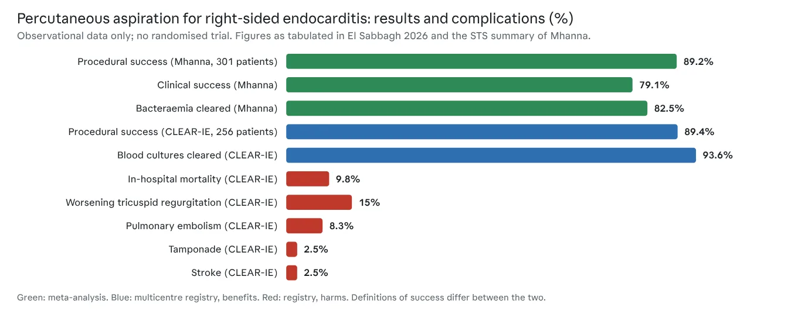
Results
| Study | Patients | Result | Source |
|---|---|---|---|
| Mhanna meta-analysis | 301, from 44 studies | Procedural success 89.2%; clinical success 79.1%; bacteraemia cleared 82.5%; conversion to open surgery 11%; survival 89.7% | A, B |
| CLEAR-IE registry (El Sabbagh) | 256 | Success 89.4%; cultures cleared in 93.6% at a median of one day; in-hospital mortality 9.8%; composite of death, new pulmonary embolism or emergency surgery 18% | A |
| RAPID registry (Moriarty) | 59 in the table | Success 75%; in-hospital death 1.3%; distal embolisation 3%; major bleeding 2.6% | A |
| Reddy | 177 | Mortality 1.1%; worsening tricuspid regurgitation 21.4% | A |
| Against surgery (Kim, 431) | Similar procedural, 30-day and 1-year mortality; shorter stay, lower cost | A | |
| Against surgery (Suruagy-Motta, 974) | Similar in-hospital and 1-year mortality; higher 30-day mortality with aspiration; shorter stay | A | |
| Poliwoda | 3 | All three improved; echo showed no residual vegetation; no complications reported | C |
Complications
| Complication | Rate | Source |
|---|---|---|
| Worsening tricuspid regurgitation | 14 to 21% in registries; 43.5% progression in one series. Possibly an unmasked perforation or chordal injury. Not linked to excess mortality in CLEAR-IE | A |
| Pulmonary embolism | 8.3% in CLEAR-IE; distal embolisation 1 to 3% in other registries | A |
| Paradoxical embolism | Through a patent foramen ovale; stroke 2.5% in CLEAR-IE | A |
| Tamponade or perforation | 0.5 to 2.5% | A |
| Bleeding and access | Major bleeding 2.6 to 3%; transfusion 28 to 50% in case series; access-site bleeding 12% in one series (Worku) | A, B, C |
| Later tricuspid surgery | 3 to 16% across series | A |
For the viva
It is debulking for source control, not a valve operation: the regurgitation is left, and may be worse.
It suits the patient who meets a surgical indication for right-sided disease but is a poor candidate for a prosthesis. This is the same patient group as valvectomy in the section above.
The evidence is observational, the ESC class is IIb, and the endocarditis team decides.
AHA scientific statement: endocarditis in people who inject drugs (Baddour et al, 2022)
Added 18 November 2026 from the PDF you supplied: Baddour LM, Weimer MB, Wurcel AG, McElhinney DB, Marks LR, Fanucchi LC, Esquer Garrigos Z, Pettersson GB, DeSimone DC. Management of infective endocarditis in people who inject drugs: a scientific statement from the American Heart Association. Circulation 2022;146:e187-e201, doi 10.1161/CIR.0000000000001090. A scientific statement, so it carries no graded recommendations. I read the surgery, antibiotic and addiction sections in full and the rest in part. Everything below is from the statement.
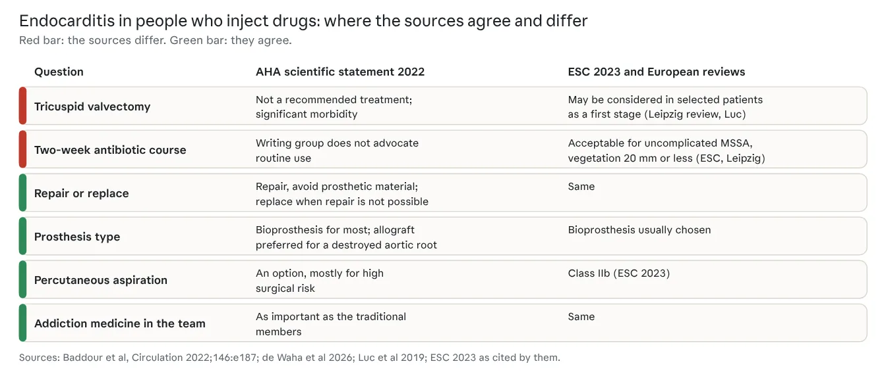
Surgery
| Point | Statement |
|---|---|
| Indications | The same as in patients who do not inject |
| Early surgery (index admission, before antibiotics are complete) is reasonable for | Heart failure; heart block; bacteraemia persisting 5 to 7 days on effective antibiotics; annular or aortic abscess; destructive penetrating lesions; recurrent emboli with persistent vegetation; mobile vegetation over 10 mm; left-sided S. aureus; multidrug-resistant or fungal organisms |
| Planning | Early involvement of anaesthesia, addiction medicine and intensive care for pain and withdrawal |
| Right-sided disease | Only 5 to 40% of non-complex right-sided cases come to surgery; medical treatment preferred |
| Tricuspid indications | Less clear than left-sided: large bulky vegetations causing septic pulmonary emboli and, less often, severe regurgitation |
| Tricuspid operation | Repair and avoid prosthetic material. Repair the regurgitant valve as well as removing vegetations |
| Valvectomy | Not a recommended treatment; can lead to significant morbidity |
| Replacement | Mortality and recurrence are higher than with repair, but there is no evidence that extensive patch repair beats replacement, so replacement is reasonable when repair is not possible. All infected tissue must be debrided |
| Device | A cardiac implantable device with valve endocarditis needs complete extraction |
| Left-sided disease | Often more destroyed because of delay and S. aureus. Bioprosthesis for most (anticoagulation barriers). Allograft preferred for the destroyed aortic root, with significant mortality |
| Percutaneous aspiration (AngioVac or other) | An option to prevent further septic emboli, mostly in high surgical risk; also used in lower-risk patients with vegetations and no significant regurgitation |
| Repeat valve operation | A team decision after detailed discussion; requires a plan for addiction treatment |
Antibiotics
| Point | Statement |
|---|---|
| Two-week course for uncomplicated right-sided methicillin-sensitive S. aureus | Listed as an option in the 2015 statement; this writing group does not advocate routine use |
| Partial intravenous then oral | A possible option to complete 6 weeks, informed by the POET trial |
| Long-acting lipoglycopeptides | Dalbavancin or oritavancin can complete 6 weeks |
| Unplanned discharge | Step-down to oral antibiotics is better than incomplete intravenous treatment, with fewer readmissions |
| Planned oral switch | Only after cultures clear, metastatic foci are drained and systemic features settle |
Addiction treatment
| Drug | Notes |
|---|---|
| Methadone | Full agonist; treats pain, withdrawal and craving; QT prolongation and interactions; first dose 10 to 30 mg, no more than 40 mg on day one; reduces all-cause mortality |
| Buprenorphine | Partial agonist; treats pain, withdrawal and craving; few interactions; start 2 to 4 mg; reduces all-cause mortality |
| Extended-release naltrexone | Antagonist; does not treat pain or withdrawal; 380 mg intramuscular monthly after 7 to 10 days opioid-free; often not preferred in hospital because of acute pain |
Addiction-trained clinicians are as important as the traditional members of the endocarditis team.
Patients cured of a first episode remain at very high risk of another, whether or not injecting continues.
Where this differs from the European sources in this tab
| Issue | AHA 2022 | ESC 2023, de Waha 2026, Luc 2019 |
|---|---|---|
| Valvectomy | Not recommended | May be considered in selected patients as a first stage |
| Two-week regimen | Not advocated for routine use | Accepted for uncomplicated cases meeting the criteria |
In a viva, state both positions and say which guideline you are following.
Surgery for aortic valve endocarditis: technique (Ikonomidis 2011)
Added 18 November 2026 from the PDF you supplied: Ikonomidis JS. Surgery for Aortic Valve Endocarditis. Oper Tech Thorac Cardiovasc Surg 2011;16:226-241, doi 10.1053/j.optechstcvs.2011.09.003. A technique atlas; I read all of the text, and the figures are the author's illustrations, described and not copied. Everything below is from the paper. Read with the endocarditis operative drawings earlier in this tab.
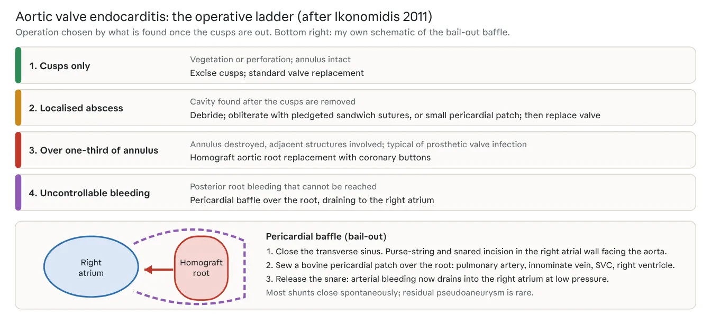
The ladder
| Finding | Operation | Detail |
|---|---|---|
| Vegetations or perforation on the cusps; annulus intact, no abscess | Standard valve replacement (rarely repair) | No published difference in prosthetic infection between bioprosthetic and mechanical valves after native valve endocarditis |
| Abscess cavity found after removing the cusps | Debride all necrotic tissue, then close the cavity and replace the valve | Option A: non-pledgeted sutures round the intact annulus and pledgeted sandwich sutures to obliterate the abscess, then through the sewing ring. Option B: a small bovine pericardial patch sewn to healthy myocardium and aorta with polypropylene, valve sutures placed through the patch |
| More than one-third of the annulus involved, adjacent structures involved; usual in prosthetic valve endocarditis | Homograft aortic root replacement | See steps below |
| Intractable posterior bleeding after root reconstruction | Bovine pericardial baffle to the right atrium | See below |
Homograft root replacement: his steps
| Step | Detail |
|---|---|
| Debride | All infected and necrotic material; coronary arteries mobilised on small buttons of uninfected aorta |
| Proximal sutures | 28 to 30 single, simple, non-pledgeted 3-0 polypropylene sutures along the bottom of the cavity, with deep bites because the tissue is friable. No pledgets, to limit foreign material |
| Size | From the echo annulus or with valve sizers; he errs slightly large so the homograft is "stuffed" into the outflow tract to reduce bleeding |
| Trim | Homograft muscle trimmed to 5 to 7 mm below the annulus, continued across its anterior mitral leaflet. The homograft's mitral leaflet can rebuild an infected anterior mitral leaflet |
| Homograft sutures | In one plane, 1 to 2 mm from the homograft annulus; orthotopic orientation so the coronaries reach |
| Seat and tie | Gently, to avoid tearing |
| Coronaries | Homograft coronary stumps divided flush and the holes enlarged with a punch; buttons sewn with 5-0 or 6-0 polypropylene |
| Distal | Running 3-0 polypropylene to the native ascending aorta |
The baffle for bleeding that cannot be reached
| Step | Detail |
|---|---|
| Problem | Bleeding after homograft root replacement, from technique or from friable, oedematous tissue; posterior points (for example under the left coronary) cannot be reached without tearing the anastomoses |
| Close the transverse sinus | Already obliterated in a redo; otherwise close directly or with pericardium |
| Right atrium | 4-0 polypropylene purse-string on the atrial wall facing the aorta, snared; a large cross-hatch incision inside the purse-string |
| Patch | Bovine pericardium sewn over the homograft: along the main pulmonary artery, innominate vein, superior vena cava and the free margin of the right ventricle, back to the pulmonary artery |
| Release | Snare released and the purse-string removed: arterial bleeding drains into the right atrium, a left-to-right shunt at right atrial pressure. The patch suture line rarely bleeds |
| Outcome | Most shunts close spontaneously; residual pseudoaneurysm is rare |
AHA scientific statement on infective endocarditis (DeSimone et al, 2026)
Added 18 November 2026 from the PDF you supplied: DeSimone DC, Marks L, Dayer MJ, Esquer Garrigos Z, Messika-Zeitoun D, O'Gara PT, Pettersson GB, Bucholz EM, Andrews LS, Fowler VG, Miro JM, Baddour LM. Infective endocarditis: diagnosis, antibiotic therapy, and management: a scientific statement from the American Heart Association. Circulation 2026;154:e593-e619, doi 10.1161/CIR.0000000000001466. It updates the 2015 statement. I read the surgery, stroke, post-operative antibiotic sections in full and the key take-home points of the remaining sections; I did not read the antibiotic regimen tables. Everything below is from the statement.

Surgery: why, how and when
| Point | Statement |
|---|---|
| Indications | Heart failure from valve damage; invasive infection (abscess, perforation, fistula); organisms that are hard to eradicate; failure of antibiotics; prosthetic valve endocarditis; vegetations over 1 cm threatening embolism |
| Timing | Once indicated in the active phase, early surgery within 48 to 72 hours is favoured, unless there has been a major stroke or cerebral haemorrhage |
| Antibiotics first? | Completing antibiotics before surgery is not required (EASE trial: early surgery reduced emboli) |
| How often in the active phase | About 50 to 60% of operated patients at dedicated programmes |
| Who decides | The endocarditis team agrees indication, timing and operability; the final decision to operate rests with the surgeon |
| Mortality | Perioperative and early mortality 7 to 20% across institutions |
| What matters most | Eradicating infection and restoring valve function matter more than the choice of valve substitute or conduit |
| Intraoperative echo | Essential; be prepared for more advanced disease than was diagnosed |
| Right-sided | Persistent bloodstream infection, continuing septic emboli, lung abscess after 7 days of antibiotics, or vegetation over 2 cm. Repair preferred to replacement |
| Cardiac device | Generator and leads removed at surgery; complete extraction is preferred in valvular endocarditis even without lead vegetations |
| After transcatheter valve | Managed like other prosthetic valve endocarditis; explant is complex and risks root injury |
| Percutaneous aspiration | Used in selected tricuspid or lead infection at high surgical risk when medical treatment has failed, in experienced centres; efficacy and safety need more study |
After a stroke
| Situation | Statement |
|---|---|
| Imaging | Brain MRI is better than CT; reasonable before cardiac surgery even without symptoms. CT or MR angiography to exclude mycotic aneurysm |
| Small stroke, no deficit | Proceed without delay |
| Embolic stroke without bleeding, patient unstable or at high risk of recurrence | Urgent (under 72 hours) or emergency surgery. High risk: mobile vegetation over 10 mm, mitral (especially anterior leaflet), staphylococci |
| Haemorrhagic or major ischaemic stroke | Delay at least 2 weeks, preferably 4 |
| Coma | Surgery not appropriate |
| Thrombolysis | Associated with a 20% increase in mortality from haemorrhage in one study; mechanical thrombectomy needs more data |
Antibiotics after valve surgery
| Point | Statement |
|---|---|
| Operated before the course is complete | Finish the planned 4 to 6 weeks, counting pre-operative days, with at least 14 days after surgery. Do not restart the clock |
| Course complete before surgery, no active infection, negative valve culture | No further antibiotics |
| Positive valve culture or molecular test | Does not change the duration |
| Supporting data | Kim: no difference in relapse or 1-year mortality with more or less than 2 weeks post-operatively (216 patients). Rao: median 23.5 days, relapse 1.1%, 1-year mortality 9.9% (182 patients) |
| Staphylococcal native valve infection after valve surgery | Continue monotherapy; combination (gentamicin with or without rifampicin) was associated with more relapse, mortality and adverse events |
Other points worth knowing
Diagnosis uses the 2023 Duke-ISCVID criteria; molecular tests and FDG PET-CT (valuable in prosthetic valve infection) raise sensitivity.
Cardiac CT finds paravalvular complications and can assess the coronaries before surgery in selected patients.
Partial oral treatment (POET) is an option for selected patients after the acute phase.
Dalbavancin and oritavancin are alternatives in selected patients; possible higher relapse in unoperated prosthetic valve Enterococcus faecalis infection.
Gentamicin: risk outweighs benefit in staphylococcal prosthetic valve endocarditis. Combination treatment is supported for E. faecalis.
Colonoscopy is reasonable after Streptococcus gallolyticus or E. faecalis endocarditis.
How this sits with the other sources in this tab
| Issue | AHA 2026 | Others |
|---|---|---|
| Antibiotics after surgery | At least 14 days post-operatively within the planned total | Sidik 2025 review says six weeks after surgery |
| Surgery after major or haemorrhagic stroke | At least 2 weeks, preferably 4 | Sidik 2025: at least four weeks. ESC 2023: see the guideline section above |
| Right-sided vegetation size | Over 2 cm | Same threshold in ESC 2023 and de Waha 2026 |
Preventing endocarditis after valve surgery: the guidelines
Added 18 November 2026 in answer to your question. Rows are marked [checked] (confirmed against a source today, listed at the end) or [memory].

Where the guidelines stand
| Body | Position | Basis |
|---|---|---|
| ESC 2023 | Antibiotic prophylaxis before at-risk dental procedures is recommended (class I, upgraded from IIa) for high-risk patients. Prophylaxis for invasive non-dental procedures (respiratory, gastrointestinal, genitourinary, skin, musculoskeletal) was reintroduced as an option for high-risk patients | checked |
| AHA 2021 | Aligned: prophylaxis before invasive dental procedures for those at highest risk | checked (summary) |
| NICE CG64 | Prophylaxis is not recommended routinely for dental procedures, nor for gastrointestinal, genitourinary or respiratory procedures. The word routinely was added in 2016. For the groups needing special consideration it refers to the SDCEP advice. Recommendations still dated 2015; a 2024 surveillance review proposed updating the dental recommendation for high-risk people | checked |
| SDCEP (Scottish Dental Clinical Effectiveness Programme) | The current implementation advice adopts the ESC 2023 high-risk list and recommends prophylaxis for those patients. The first version (2018) asked the dentist to consult the cardiac team about special-consideration patients | checked |
Practical point for a UK surgeon: a patient with a valve replacement or repair is in the group for whom the dentist will give, or ask you about, prophylaxis. Say so in the discharge letter.
Who is high risk (ESC 2023, as listed by SDCEP)
| Group | Recommendation | Basis |
|---|---|---|
| Previous endocarditis | Recommended (class I, level B) | checked |
| Surgically implanted prosthetic valve, or any material used for surgical valve repair | Recommended (class I, level C) | checked |
| Transcatheter aortic or pulmonary valve | Recommended (class I, level C) | checked |
| Untreated cyanotic congenital heart disease; palliative shunts, conduits or other prostheses. After complete repair with no residual defect: first 6 months only | Recommended (class I) | checked |
| Ventricular assist device | Recommended | checked |
| Transcatheter mitral or tricuspid repair | Should be considered (class IIa, level C) | checked |
| Septal or appendage closure devices, vascular grafts, vena cava filters, ventriculo-atrial shunts | Should be considered in the first 6 months | checked |
| Heart transplant | May be considered | checked |
| Moderate risk: rheumatic or degenerative valve disease, bicuspid valve, implanted electronic device, hypertrophic cardiomyopathy | Not recommended unless the cardiac team specifies it | checked |
Which procedures
| Procedure | Advice | Basis |
|---|---|---|
| Extractions and oral surgery | Offer prophylaxis to high-risk patients | checked |
| Procedures manipulating the gingival or periapical region | Consider, after shared decision-making and assessment of oral health | checked |
| Chlorhexidine mouthwash | Not to be offered as prophylaxis | checked (NICE) |
| Non-dental invasive procedures | ESC 2023: may be considered in high-risk patients. NICE: not routinely. If antibiotics are being given anyway for a gastrointestinal or genitourinary procedure at an infected site, choose one that covers endocarditis organisms | checked |
Regimen (single dose)
| Route | Adult | Child | Basis |
|---|---|---|---|
| Oral, 30 to 60 minutes before | Amoxicillin 2 g (or 3 g sachet) | 50 mg/kg, maximum 2 g | checked |
| Oral, penicillin allergy | Clarithromycin 500 mg or azithromycin 500 mg | 15 mg/kg, maximum 500 mg | checked |
| Intravenous, just before or at induction | Amoxicillin 2 g | 50 mg/kg, maximum 2 g | checked |
| Intravenous, penicillin allergy | Cefazolin 1 g, ceftriaxone 1 g, or clarithromycin 500 mg | 50 mg/kg (maximum 1 g) for the cephalosporins | checked |
| Clindamycin | No longer in the regimen (dropped by ESC 2023 and AHA 2021 because of adverse effects) | SDCEP page lists none [checked]; reason [memory] |
Around the valve operation itself [memory]
| Measure | Detail |
|---|---|
| Dental clearance | Dental assessment and elimination of dental sepsis before elective valve surgery, ideally at least 2 weeks ahead |
| Staphylococcus aureus | Pre-operative nasal screening and decolonisation of carriers before elective cardiac surgery |
| Perioperative antibiotics | Started before incision and stopped within 48 hours |
| Lines | Remove central lines and catheters as early as possible; strict asepsis |
These are ESC 2023 recommendations as I remember them; check class and level before quoting.
What every valve patient is told [checked, NICE and SDCEP]
Keep good oral health, with regular dental review.
Know the symptoms of endocarditis and when to seek advice (fever, sweats, weight loss).
Invasive non-medical procedures such as piercing and tattooing carry risk.
Infections are investigated and treated promptly.
Why antibiotic prophylaxis is or is not being offered.
After a first episode the risk stays high: the AHA 2022 statement above notes that patients cured of endocarditis remain at very high risk of another, and previous endocarditis is the highest-risk group in ESC 2023.
Sources checked today
SDCEP, Antibiotic prophylaxis implementation advice (https://www.antibioticprophylaxis.sdcep.org.uk/implementation-advice/executive-summary/) and its table of ESC 2023 recommendations.
NICE CG64, recommendations (https://nice.org.uk/guidance/cg64/chapter/1-guidance) and the 2024 exceptional surveillance proposal.
ESC 2023 endocarditis guideline: ACC key points; Imazio review of the 2023 novelties.
Thornhill et al commentary on ESC 2023, AHA 2021 and NICE (https://pmc.ncbi.nlm.nih.gov/articles/PMC10933542).
Cardiac 3: aortic valve, coronary and aorta
Contents (12 sections)
- Aortic valve: surgery, TAVI and timing
- Coronary surgery
- Aortic surgery
- What is confirmed, and sources
- Trials from 2026: moderate aortic stenosis and coronary disease at TAVI
- Thresholds: Aortic stenosis
- Thresholds: Aortic regurgitation
- Thresholds: Aortic root and ascending aorta
- Types of aortic valve prosthesis: On-X, Perceval and the rest
- Prosthesis choice: mechanical or bioprosthesis
- Freestyle stentless aortic root bioprosthesis
- ESC/EACTS 2025 guideline: prosthetic valve selection (now checked)
TAVI against surgery and early intervention, coronary surgery evidence and conduits, and aortic dissection.
Aortic valve: surgery, TAVI and timing
TAVI matches surgery to five years in low-risk patients aged around 73, and early intervention in asymptomatic severe stenosis reduces events; durability beyond ten years and the under-70s remain surgical territory.
Guideline position (2025 ESC/EACTS)
TAVI for tricuspid valves at age 70 or over with suitable anatomy; SAVR under 70 at low surgical risk.
Intervention in asymptomatic severe high-gradient stenosis with LVEF 50% or more is now Class IIa as an alternative to surveillance.
Thresholds, low-flow assessment and CT planning are in the Echo and CT thresholds tab.
Trials
| Trial | Design | Result |
|---|---|---|
| PARTNER 3 five-year, NEJM 2023 | 1,000 low-risk patients, mean age 73; balloon-expandable TAVI against surgery | Death, stroke or rehospitalisation 22.8% against 27.2%; mortality 10.0% against 8.2% (HR 1.23, 0.79–1.90). The early TAVI advantage attenuated and the mortality curves crossed at about 3 years |
| Evolut Low Risk five-year, 2025 | Self-expanding TAVI against surgery, low risk | Death or disabling stroke 15.5% against 16.4% |
| DEDICATE-DZHK6, NEJM 2024 | 1,414 patients aged 65–85 at low or intermediate risk, 38 German centres, operator's choice of device | Death or stroke at one year 5.4% against 10.0% (HR 0.53); death 2.6% against 6.2%; new AF 12.4% against 30.8%. Bicuspid valves excluded |
| EARLY TAVR, NEJM 2024 | 901 asymptomatic patients with severe high-gradient stenosis; early TAVI against surveillance | Death, stroke or unplanned cardiovascular hospitalisation 26.8% against 45.3% at a median of 3.8 years |
| EVOLVED, JAMA 2024 | 224 asymptomatic patients with myocardial fibrosis on MRI; early valve replacement against conservative care | Death or unplanned stenosis-related admission 18% against 23% (HR 0.79, not significant) |
| AVATAR, 2022 with extended follow-up | 157 asymptomatic patients; early surgery against conservative care | Fewer events with early surgery |
| RECOVERY, NEJM 2020 | Very severe asymptomatic stenosis; early surgery against conservative care | Lower cardiovascular mortality with early surgery (from memory) |

Reading the evidence
The low-risk trials enrolled patients in their seventies with tricuspid valves and transfemoral access. They do not cover bicuspid valves, small or heavily calcified roots, concomitant disease, or patients under 65.
PARTNER 3 at five years shows equivalence, not superiority; the direction of the mortality curves after year three is why ten-year data matter.
In DEDICATE the surgical arm's one-year mortality was higher than registry benchmarks, which limits how far the result generalises.
Early-intervention trials were positive largely through hospitalisation and conversion to valve replacement in the surveillance arm, where most patients needed intervention within two years.
Lifetime management is the surgical argument: first valve choice, root enlargement to allow a later valve-in-valve, coronary access after TAVI, pacemaker rate and paravalvular leak.
Coronary surgery
CABG remains the survival operation for left main and three-vessel disease, particularly with diabetes or a poor ventricle; the 2021 US guideline downgrade was rejected by the surgical societies, and the 2024 ESC guideline restored the position.
Guidelines
| Guideline | Position |
|---|---|
| 2021 ACC/AHA/SCAI revascularisation | Downgraded CABG for three-vessel disease with normal LV function and no left main disease. AATS and STS declined to endorse it |
| 2024 ESC chronic coronary syndromes | Endorsed by EACTS and then by the surgical societies collectively. Revascularisation indications largely as in 2018: symptoms despite medical therapy, significant left main, proximal LAD or multivessel disease; choose the modality by anatomy, LV function and patient factors (Class I) |
| ACC/AHA 2021, conduits | Radial artery in preference to saphenous vein for the second most important target (Class 1) |
| STS arterial conduits, 2016 | Internal thoracic artery to the LAD (I); a second arterial graft, right internal thoracic or radial, in appropriate patients (IIa) |
Trials
| Trial | Design | Result |
|---|---|---|
| FAME 3 five-year, Lancet 2025 | 1,500 patients with three-vessel disease, no left main; FFR-guided PCI with current stents against CABG | Death, stroke or MI 16% against 14% (HR 1.16, 0.89–1.52); MI higher with PCI (HR 1.57); repeat revascularisation 16% against 8%. PCI had missed non-inferiority at one year |
| REVIVED-BCIS2, NEJM 2022 | PCI against medical therapy in ischaemic LV dysfunction | No benefit from PCI (from memory) |
| STICH ten-year, NEJM 2016 | CABG against medical therapy, LVEF 35% or less | Lower mortality with CABG (from memory) |
| ISCHEMIA, NEJM 2020 | Invasive against conservative strategy in stable disease with ischaemia | No difference in the primary outcome; mostly PCI, left main excluded (from memory) |
| ART ten-year, NEJM 2019 | Bilateral against single internal thoracic artery | No difference by intention to treat; heavy crossover and radial use in the single arm (from memory) |
| RADIAL pooled analysis, JAMA 2020 | Radial artery against saphenous vein | Fewer cardiac events with the radial (from memory) |
| ROMA | Multiple against single arterial grafting | Enrolment complete; results awaited when last checked |
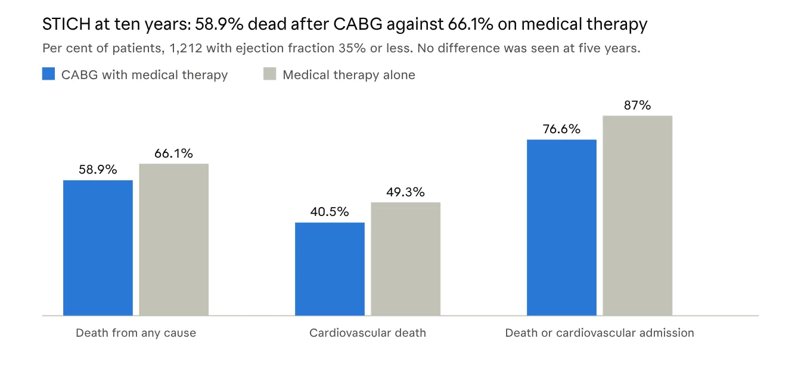
STICH and ART figures, confirmed 17 November 2026: in STICH at a median of 9.8 years, death 58.9% against 66.1% (HR 0.84, 0.73 to 0.97), number needed to treat 14. In ART at ten years, death 20.3% with bilateral against 21.2% with single internal thoracic artery grafts (HR 0.96, 0.82 to 1.12); 13.9% of the bilateral arm received a single graft and 21.8% of the single arm also received a radial artery.
Practice points
FAME 3 is the modern comparison: no significant difference in hard events at five years, but more infarction and twice the repeat procedures with PCI. Diabetes and higher anatomical complexity still favour CABG.
REVIVED and STICH together mean that in ischaemic cardiomyopathy the evidence for prognostic revascularisation belongs to surgery.
ISCHEMIA cannot be used to compare CABG with medical therapy; that was the surgical societies' objection to the 2021 guideline.
Conduits: internal thoracic artery to the LAD always; a radial to a tightly stenosed (over 70%, ideally 90%) non-LAD target is the best-supported second arterial graft; bilateral internal thoracic arteries skeletonised and avoided in obese, diabetic or COPD patients at sternal risk.
Dual antiplatelet therapy after CABG for acute coronary syndrome, and consider it for vein graft patency after off-pump surgery.
Aortic surgery
Acute type A dissection is an immediate operation; complicated type B dissection is treated by endovascular repair; the evidence is registry-based with almost no randomised trials.
Guidelines
| Guideline | Key points |
|---|---|
| EACTS/STS 2024 | Introduces the TEM classification (type, entry site, malperfusion) and the GERAADA risk score; endovascular repair is first-line for almost all distal arch and descending pathology; strongly recommended for complicated acute type B dissection and those with high-risk features; distal bare-metal stent extension (PETTICOAT) IIa when malperfusion persists |
| STS/AATS type B dissection, 2022 | Endovascular repair for complicated hyperacute, acute or subacute type B dissection with rupture or malperfusion and suitable anatomy (I); open repair if anatomy is unsuitable (IIa); CSF drainage for paraparesis or paraplegia (IIa) |
| ESC 2024 and ACC/AHA 2022 | Elective diameter thresholds, in the Echo and CT thresholds tab |
Acute type A dissection: operative principles
Emergency surgery; mortality without it rises by roughly 1–2% per hour early on.
Aim: resect the primary entry tear, restore true-lumen flow, and deal with the valve and coronaries.
Root: resuspend the valve if the sinuses are intact; replace the root for a tear in the sinuses, root aneurysm or heritable disease.
Arch: hemiarch as standard; total arch with frozen elephant trunk for an arch tear, arch aneurysm or distal malperfusion, in experienced hands.
Cannulation: axillary or direct true-lumen; antegrade cerebral perfusion with moderate hypothermia is now usual.
Malperfusion: mesenteric malperfusion carries the worst outcome and may justify reperfusion before central repair in selected patients.
Non-A non-B dissection (arch involvement without the ascending aorta) is recognised in TEM and has a higher complication rate than type B.
Type B dissection
Uncomplicated: blood pressure and heart rate control, with imaging surveillance.
High-risk features that favour early endovascular repair: aortic diameter over 40 mm, false lumen over 22 mm, entry tear over 10 mm on the lesser curve, refractory pain or hypertension, bloody effusion.
Timing of elective endovascular repair: the subacute phase (after 2 weeks, before 3 months) balances remodelling against retrograde dissection.
INSTEAD-XL: endovascular repair of uncomplicated type B dissection improved aorta-specific survival at five years (from memory).
What is confirmed, and sources
Confirmed on 17 November 2026 from abstracts, trial summaries and guideline summaries:
2025 ESC/EACTS valve guideline classes (summary table); STS 2023 AF guideline; ESC 2023 endocarditis key points; AATS 2016 endocarditis; STS/AATS type B dissection; multisociety endorsement of the 2024 ESC coronary guideline.
Mitral: CTSN severe ischaemic MR; UK Mini Mitral; MATTERHORN.
Tricuspid: CTSN concomitant repair; TRILUMINATE and TRISCEND II.
AF: LAAOS III.
Endocarditis: EASE.
Aortic valve: PARTNER 3 five-year; Evolut Low Risk five-year; DEDICATE; EARLY TAVR and EVOLVED.
Coronary: FAME 3 five-year.
From memory and not checked: COAPT, MITRA-FR and CTSN moderate ischaemic MR figures; the CTSN ablation trial; POET; TRI-SCORE; RECOVERY; REVIVED, STICH, ISCHEMIA, ART and the radial analysis; INSTEAD-XL; the type A operative principles and type B high-risk features; all technique points. The ESC 2024 coronary recommendations were seen only in summary, and no SCTS clinical guideline was found for these topics.
Trials from 2026: moderate aortic stenosis and coronary disease at TAVI
Both were named in your master reference and checked on 17 November 2026.

| Trial | Design | Result |
|---|---|---|
| PROGRESS, NEJM, November 2026 | 744 patients with moderate AS and at least one at-risk feature (symptoms, cardiac damage or dysfunction), 373 to transfemoral balloon-expandable TAVI and 371 to surveillance, open label | Death or heart failure event at two years 16.7% against 23.9%; heart failure events 10.8% against 19.0%; heart failure admission 7.4% against 14.9%; all-cause mortality similar; no deaths or disabling strokes at 30 days; 57% of the surveillance arm had a valve replacement within two years |
| PRO-TAVI, Lancet, April 2026 | 466 patients, median age 81, severe AS and at least one 70 to 99% coronary stenosis, PCI before TAVI against TAVI first with PCI only if needed | Death, MI, stroke or major bleeding at one year 24% against 26%, non-inferior; major bleeding 6% against 15%; about one in ten in the deferral arm later had PCI |
PROGRESS does not make TAVI the treatment for moderate AS. The patients were symptomatic or had ventricular damage, the benefit was in heart failure events and not survival, the trial was open label with a soft component in the endpoint, and more than half the control arm reached valve replacement anyway. The accompanying editorial makes the same point. For a surgeon, the cost is starting the durability clock earlier in a patient who will need a second valve.
It adds to EARLY TAVR and EVOLVED above: the direction of all three is earlier intervention once the ventricle shows strain, whatever the valve area says.
PRO-TAVI and NOTION-3 point in different directions on PCI at TAVI. NOTION-3 found fewer events with PCI; PRO-TAVI found that deferring it is safe and bleeds less. Neither applies to a surgical candidate with multivessel disease, where surgical AVR with CABG remains the Class I answer.
TCW, also cited in your master, compared FFR-guided PCI with TAVI against surgical AVR with CABG; I have not re-checked its figures today.
Thresholds: Aortic stenosis
Severe AS is Vmax ≥4.0 m/s, mean gradient ≥40 mmHg and AVA ≤1.0 cm²; when these disagree, flow and CT calcium score decide.
Echo grading
| Parameter | Mild | Moderate | Severe | Very severe |
|---|---|---|---|---|
| Peak velocity (m/s) | 2.6–2.9 | 3.0–3.9 | ≥4.0 | >5.0 |
| Mean gradient (mmHg) | <20 | 20–39 | ≥40 | ≥60 |
| AVA (cm²) | >1.5 | 1.0–1.5 | ≤1.0 | |
| Indexed AVA (cm²/m²) | >0.85 | 0.60–0.85 | ≤0.6 | |
| Dimensionless index (LVOT VTI ÷ AV VTI) | >0.50 | 0.25–0.50 | <0.25 |
Discordant grading (AVA ≤1.0 cm² but Vmax <4 m/s, gradient <40 mmHg)
| Finding | Threshold | Meaning |
|---|---|---|
| Stroke volume index | ≤35 mL/m² | Low flow |
| Dobutamine stress echo (LVEF <50%) | Vmax ≥4 m/s or gradient ≥40 mmHg with AVA ≤1.0 cm² at any flow | True severe |
| Dobutamine stress echo | AVA rises above 1.0 cm² | Pseudo-severe: treat the ventricle |
| Flow reserve | Stroke volume rise ≥20% | Absent reserve raises operative risk but does not rule out benefit |
| CT calcium score, women (Agatston units) | <800 unlikely, >1,200 likely, >1,600 highly likely | Severe AS |
| CT calcium score, men (Agatston units) | <1,600 unlikely, >2,000 likely, >3,000 highly likely | Severe AS |
| Normal flow, low gradient | After re-measurement | Usually moderate |
Thresholds for intervention
| Situation | Threshold | Class |
|---|---|---|
| Symptomatic severe high-gradient AS | Vmax ≥4.0 m/s or gradient ≥40 mmHg | I |
| Symptomatic low-flow, low-gradient, LVEF <50% | Severity confirmed by stress echo or CT calcium | I |
| Asymptomatic, LV dysfunction | LVEF <50% with no other cause | I |
| Asymptomatic, symptoms on exercise test | Any | I |
| Asymptomatic, LVEF ≥50%, low procedural risk | Any one of: Vmax >5 m/s or gradient ≥60 mmHg; severe calcification with Vmax rise ≥0.3 m/s per year; BNP or NT-proBNP >3× age- and sex-corrected normal; LVEF <55% with no other cause | IIa |
| Asymptomatic, exercise test | Sustained fall in systolic BP >20 mmHg | IIa |
| Asymptomatic severe high-gradient AS, LVEF ≥50%, low risk | Intervention as an alternative to surveillance, normal exercise test if feasible | IIa |
| Severe AS, other cardiac surgery planned (CABG, aorta, another valve) | Concomitant AVR | I |
| Moderate AS, other cardiac surgery planned | Concomitant AVR after Heart Team discussion | IIa |
| Mixed moderate AS and moderate AR, symptomatic | Gradient ≥40 mmHg or Vmax ≥4.0 m/s | I |
| Mixed moderate AS and moderate AR, asymptomatic | Vmax ≥4.0 m/s with LVEF <50% | I |
Course pack correction, 18 November 2026 (2025 ESC/EACTS, Recommendation Table 4): low flow is a stroke volume index of 35 mL/m² or less. With a valve area of 1.0 cm² or less and a mean gradient under 40 mmHg, separate reduced LVEF (under 50%) from preserved LVEF (50% or more), recheck the measurements and confirm severity with another modality (dobutamine echo, CT calcium score). In symptomatic, confirmed severe low-flow, low-gradient stenosis, intervention is recommended with reduced LVEF (Class I) and should be considered with preserved LVEF (Class IIa). Checked today against a 2026 summary of the guideline, which gives the same split; the table number is from the pack.
Surgery or TAVI
ESC/EACTS 2025: TAVI for tricuspid valves at age ≥70 with suitable anatomy; SAVR under 70 at low surgical risk.
ACC/AHA 2020: SAVR under 65, either from 65 to 80, TAVI over 80.
ACC/AHA 2020 also lists LVEF <60% on three serial studies (IIb) for asymptomatic severe AS.
Findings that push towards surgery are in the CT planning section below.
Which number matters most
Peak velocity is the strongest single predictor of outcome and the most reproducible measurement. Its only technical error (beam misalignment) underestimates it.
Its weakness is flow dependence: it under-calls severity with a low stroke volume (poor LV, small cavity, AF, significant MR) and over-calls it in high-flow states (AR, anaemia, sepsis).
Valve area is less flow dependent but the most error-prone: the continuity equation squares the LVOT diameter and assumes a circular outflow tract. An area under 1.0 cm² alone over-calls severe AS.
The dimensionless index avoids the LVOT diameter error and is a useful cross-check.
Once stenosis is severe, symptoms and LV function decide timing more than either number.
New symptoms in known severe AS
Angina occurs in severe AS with normal coronaries, from hypertrophy, raised wall stress and reduced coronary flow reserve. Radiation to the jaw does not separate it from coronary disease.
Dyspnoea at rest suggests raised filling pressures or early LV failure and is the worst prognostic symptom of the classic triad.
AS typically progresses about 0.3 m/s per year, so new symptoms usually mean decompensation of an already severe valve, not sudden progression.
A normal angiogram within the previous year makes new flow-limiting disease unlikely, but plaque rupture on non-obstructive plaque is still possible. Troponin is often chronically raised in severe AS; the trend and ECG matter more than one value.
Exclude new AF, falling LV function (a lower gradient on repeat echo is then not reassuring), endocarditis, new MR, pulmonary embolism, anaemia or infection, and dissection if the valve is bicuspid.
Rest symptoms need same-day assessment and admission: ECG, serial troponin, BNP, chest radiograph, repeat echo. Take care with nitrates, vasodilators and over-diuresis.
Symptomatic severe AS is a Class I indication; with rest symptoms the work-up for SAVR or TAVI should be as an inpatient.
Thresholds: Aortic regurgitation
In severe AR the operative triggers are symptoms, LVEF ≤50%, LVESD >50 mm or indexed LVESD >25 mm/m²; the 2025 guideline adds earlier optional triggers for low-risk patients.
Echo criteria for severe AR
| Parameter | Severe |
|---|---|
| Vena contracta | >6 mm |
| Jet width ÷ LVOT diameter | ≥65% |
| EROA (PISA) | ≥30 mm² |
| Regurgitant volume | ≥60 mL per beat |
| Regurgitant fraction | ≥50% |
| Pressure half-time | <200 ms |
| Descending aorta | Holodiastolic flow reversal, end-diastolic velocity >20 cm/s |
| Left ventricle | Dilated (chronic AR) |
Thresholds for surgery
| Situation | Threshold | Class |
|---|---|---|
| Symptomatic severe AR | Any LV function, unless risk is prohibitive | I |
| Asymptomatic severe AR | LVEF ≤50%, or LVESD >50 mm, or LVESDi >25 mm/m² (use the index when BSA <1.68 m²) | I |
| Asymptomatic severe AR, low surgical risk | LVESDi >22 mm/m², or LVESVi >45 mL/m², or LVEF ≤55% | IIb |
| Asymptomatic, selected low-risk patients | LVEDD >65 mm with progressive dilatation or falling LVEF | Mentioned in text, no formal class |
| Severe AR, other cardiac surgery planned (CABG, aorta, another valve) | Concomitant surgery | I |
| Symptomatic severe AR, not a surgical candidate, suitable anatomy | TAVI | IIb |
| CMR volumes | LVESVi ≥43 mL/m² proposed as the volumetric cut-off | No formal class |
ACC/AHA 2020 differs: LVEF ≤55% is Class I, LVESD >50 mm or >25 mm/m² is IIa, and LVEDD >65 mm at low risk is IIb.
Findings that favour repair or valve-sparing surgery
Pliable, non-calcified tricuspid or bicuspid cusps with root or annular dilatation (type I) or cusp prolapse (type II).
Geometric cusp height ≥16 mm in tricuspid valves and ≥19 mm in bicuspid valves; below this, cusp retraction makes durable repair unlikely.
Target effective height after repair is 9–10 mm.
Basal ring diameter above about 27 mm predicts recurrence unless an annuloplasty is added.
A dilated root or ascending aorta sets the operation regardless of AR grade: see the aorta section.
Thresholds: Aortic root and ascending aorta
The default threshold is 55 mm; it falls to 50–52 mm for root phenotype or low-risk patients, to 45–50 mm in heritable disease, and to 45 mm when the chest is already open for the aortic valve.
Sporadic aneurysm, tricuspid or bicuspid valve
| Situation | Diameter | Class |
|---|---|---|
| Root or ascending, any valve | ≥55 mm | I |
| Bicuspid valve, root phenotype (sinuses larger than tubular aorta) | ≥50 mm | I |
| Tricuspid valve, root phenotype, low surgical risk | ≥50 mm | IIa (EACTS/STS) |
| Ascending phenotype, tricuspid or bicuspid, low surgical risk | >52 mm | IIa |
| Bicuspid, ascending phenotype, low risk, with a risk factor | ≥50 mm | IIa |
| Tricuspid, ascending phenotype, low risk, with a risk factor | ≥50 mm | IIb (EACTS/STS) |
| Symptomatic aneurysm | Almost regardless of size | IIa |
Risk factors (EACTS/STS 2024): age <50, height <1.69 m, ascending length >11 cm, growth >3 mm per year, family history of acute aortic syndrome, coarctation, refractory hypertension, patient preference after shared decision.
Concomitant replacement
| Primary operation | Aortic diameter | Class |
|---|---|---|
| Aortic valve surgery, low predicted risk | Root or ascending ≥45 mm | IIa |
| Aortic valve surgery, higher risk | ≥50 mm | IIa |
| Non-aortic-valve cardiac surgery | Root or ascending ≥50 mm | IIa |
| Ascending replacement | Root ≥45 mm: replace the root as well | IIa |
| Ascending surgery | Proximal arch >45 mm: hemiarch or more | IIb |
Heritable thoracic aortic disease
| Condition | Diameter | Class |
|---|---|---|
| Marfan | ≥50 mm | I |
| Marfan with high-risk features | ≥45 mm | IIa |
| Marfan, no high-risk features, very low risk, valve-sparing likely, expert team | ≥45 mm | IIb |
| Marfan, pregnancy planned | >45 mm | I (ESC 2024) |
| Loeys-Dietz, TGFBR1 or TGFBR2 | ≥45 mm | I (EACTS/STS); IIa (ESC 2024) |
| Loeys-Dietz, TGFBR2 with high-risk features | ≥40 mm | IIa |
| Loeys-Dietz, TGFBR1 with high-risk features | ≥40 mm | IIb |
| SMAD3 | ≥45 mm | IIa |
| SMAD2 or TGFB2 | ≥45 mm | IIb |
| TGFB3 | ≥50 mm | IIb |
| ACTA2 | ≥45 mm (≥42 mm with high-risk features, IIb) | IIa |
| PRKG1 | ≥42 mm (≥40 mm with high-risk features) | IIb |
| MYLK or MYH11 | ≥45 mm | IIb |
| Turner, age ≥15, with risk factors or planned pregnancy | Aortic size index >23 mm/m², height index >23 mm/m, or z-score >3.5 | IIa |
| Turner, no risk factors | Aortic size index >25 mm/m², height index >25 mm/m, or z-score >4 | IIb |
High-risk features in heritable disease: family history of dissection at a small diameter, growth >3 mm per year, severe aortic or mitral regurgitation, resistant hypertension, planned pregnancy, marked tortuosity.
Arch, descending and dissected aorta
| Segment | Diameter | Class |
|---|---|---|
| Isolated arch aneurysm, asymptomatic | ≥55 mm | IIa |
| Descending thoracic aneurysm | ≥55 mm | I |
| Thoracoabdominal aneurysm | ≥55 mm (ESC uses ≥60 mm for open repair) | I |
| Chronic dissection, descending aorta | ≥60 mm (I) or ≥55 mm at low risk (IIa) in ESC 2024; ≥55 mm in EACTS/STS (I) | I to IIa |
| Marfan: arch, descending or abdominal aorta | ≥50 mm | IIa |
ACC/AHA 2022 differences
≥50 mm is reasonable for sporadic aneurysms when operated by experienced surgeons in a multidisciplinary aortic team (IIa).
Growth ≥3 mm per year in two consecutive years, or ≥5 mm in one year, is a Class I indication below 55 mm.
Cross-sectional area ÷ height ≥10 cm²/m is reasonable in patients well above or below average height (IIa).
Aortic size index ≥3.08 cm/m² or aortic height index ≥3.21 cm/m may be reasonable (IIb).
Measuring it
Echo: sinus-to-sinus for the root, leading edge to leading edge at end-diastole, perpendicular to the long axis.
CT: ECG-gated, double-oblique plane perpendicular to the centreline. ESC 2024 measures inner edge to inner edge at end-diastole; EACTS/STS measures outer wall to outer wall. State which was used.
Root: report the largest sinus-to-sinus diameter. For an oval aorta, report the longest diameter and its perpendicular.
Inter-study variability is 2–3 mm. Compare like with like (same modality, same method, same landmark) before calling growth.
Ascending length is the centreline distance from annulus to innominate origin; >11 cm counts as a risk factor.
Types of aortic valve prosthesis: On-X, Perceval and the rest
Added 18 November 2026 in answer to your question. Each row is marked: [checked] means I confirmed it against a source today (listed at the end); [memory] means it is from memory and should be checked against the manufacturer's instructions or the trial paper before you quote it.

The families
| Family | Examples | For | Against | Basis |
|---|---|---|---|---|
| Mechanical bileaflet | On-X, St Jude Regent, Carbomedics, Medtronic Open Pivot | Durable for life; good haemodynamics in small roots | Warfarin for life; bleeding and thromboembolism; click; no direct oral anticoagulants | memory |
| Stented bioprosthesis, bovine pericardial | Inspiris Resilia, Perimount Magna Ease, Avalus | Standard implant; no long-term warfarin in sinus rhythm; platform for later valve-in-valve | Structural deterioration, faster in the young; patient-prosthesis mismatch in small sizes | memory |
| Stented bioprosthesis, porcine | Epic, Hancock II, Mosaic | Long track record | Higher gradients than pericardial in small sizes | memory |
| Stentless and root substitutes | Freestyle porcine root, homograft, Ross pulmonary autograft | Largest orifice; homograft or autograft in endocarditis; Ross for the young adult | Longer, harder operation; calcified homograft is a difficult redo | memory |
| Sutureless | Perceval | Short cross-clamp; suits minimal access, small or calcified roots, redo and combined operations | More pacemakers; thrombocytopenia; needs correct sizing and annular geometry | checked for pacing; rest memory |
| Rapid deployment | Edwards Intuity Elite | Magna Ease-type valve with a balloon-expanded subannular skirt and three guiding sutures | More pacemakers than a sewn valve | memory |
| Transcatheter | Sapien 3 (balloon-expandable), Evolut (self-expanding, supra-annular), Navitor | No sternotomy | Pacemaker, paravalvular leak, coronary access; durability data shorter | memory |
On-X (mechanical)
| Point | Detail | Basis |
|---|---|---|
| Design | Pure pyrolytic carbon without silicon; long flared inlet; leaflets open to near 90 degrees; leaflet guards against pannus | memory |
| Lower anticoagulation target | PROACT: target INR 1.5 to 2.0 with low-dose aspirin was non-inferior to standard anticoagulation and was the basis of the lowered-INR labelling. The interim high-risk report showed bleeding cut by more than half without more thromboembolism | checked (commentary on Puskas; AATS interim report) |
| When the lower target starts | After the first 3 months at INR 2.0 to 3.0; aortic position only (mitral stays higher) | memory |
| Direct oral anticoagulant | PROACT Xa: apixaban 5 mg twice daily against warfarin INR 2 to 3 at least 3 months after implant. Stopped after 863 patients for excess thromboembolism on apixaban. Valve thrombosis 0.6% per patient-year against 0; valve-related thromboembolism 3.5% against 1.3% per patient-year; major bleeding 3.6% against 4.5% per patient-year | checked |
| Message | Any mechanical valve, including On-X, needs a vitamin K antagonist | checked |
Perceval (sutureless)
| Point | Detail | Basis |
|---|---|---|
| Design | Bovine pericardial leaflets on a self-anchoring nitinol frame; no fixing sutures | checked (trial registry description) |
| Implant | Full decalcification; three guiding sutures at the nadirs; valve collapsed, parachuted, released, then balloon post-dilatation with warm saline; higher transverse aortotomy | memory |
| Sizes | S, M, L, XL | memory |
| PERSIST-AVR | 914 enrolled, 910 randomised, 47 sites: sutureless against stented bioprosthesis. Non-inferior for major adverse cardiac and cerebrovascular events at 1 year | checked |
| Operating times | Shorter cross-clamp and bypass with sutureless, in both full and mini-sternotomy | checked |
| Pacemaker | Early permanent pacemaker 10.4% against 3.1% | checked |
| Isolated valve, mini-sternotomy subgroup at 1 year | Major adverse events 5.2% against 10.8%; stroke 1.0% against 5.4%; pacemaker 11% against 1.6% | checked (sub-analysis: hypothesis-generating) |
| Haemodynamics | Comparable to stented valves at 1 year on core-lab echo | checked |
| Cautions | Bicuspid valve without symmetrical annulus, dilated root or sinotubular junction, annulus outside the size range; transient fall in platelets | memory |
Bioprostheses worth naming
| Valve | Point | Basis |
|---|---|---|
| Inspiris Resilia | Bovine pericardium with Resilia anti-calcification treatment, stored dry. COMMENCE (689 patients, single arm, mean age about 65 to 67): 99.3% free of structural deterioration and 97.2% free of reoperation at 7 years; 85.4% survival | checked |
| Inspiris Resilia | Expandable band intended to ease later valve-in-valve | memory |
| Perimount Magna Ease | The reference stented pericardial valve; the comparator in most series | memory |
| Trifecta | Externally mounted leaflets and low gradients, but early structural failure; withdrawn from the market in 2023 | memory |
| Mitroflow | Early deterioration in small sizes | memory |
| Freestyle | Stentless porcine root; subcoronary, inclusion or full root | memory |
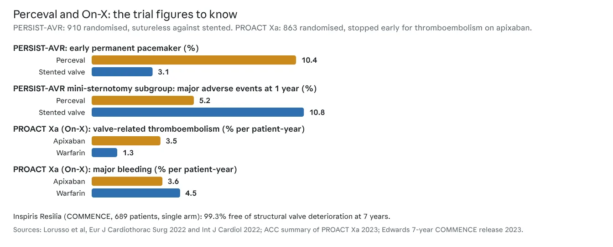
Choosing: age thresholds
| Guideline | Mechanical | Bioprosthesis | Basis |
|---|---|---|---|
| ESC/EACTS 2021 | Under 60 in the aortic position | Over 65 in the aortic position; either in between | memory |
| ACC/AHA 2020 | Under 50 | Over 65; individualise from 50 to 65 | memory |
| ESC/EACTS 2025 | Not checked today for the prosthesis-type thresholds | The headline change is transcatheter implantation from 70 years with suitable tricuspid anatomy | checked for the 70-year threshold only |
Other factors [memory]: patient preference decides; bioprosthesis if anticoagulation is unsafe or pregnancy is planned; mechanical if already on warfarin for another mechanical valve; in the small root consider root enlargement, a stentless or sutureless valve, or a valve with good small-size haemodynamics; plan for the second procedure (valve-in-valve needs a large enough first valve).
One-line contrasts for the viva
On-X against other mechanical valves: same class of valve, with a trial-backed lower INR target in the aortic position after 3 months. It did not earn freedom from warfarin.
Perceval against a stented valve: the same clinical outcome at 1 year, bought with a shorter clamp time and paid for with about three times the early pacemaker rate.
Perceval against Intuity: sutureless self-expanding frame against a sewn-ring valve with a balloon-expanded skirt and three sutures [memory].
Inspiris against older pericardial valves: early durability data are good, but they are single-arm and stop at 7 to 8 years.
Sources checked today
PROACT Xa: ACC trial summary and journal scan, 2023 (https://www.acc.org/Latest-in-Cardiology/Clinical-Trials/2023/08/23/14/44/proact-xa); ClinicalTrials.gov NCT04142658 (terminated for safety).
PROACT: commentary on the Puskas long-term report (https://pmc.ncbi.nlm.nih.gov/articles/PMC6291569); AATS interim report.
PERSIST-AVR: ClinicalTrials.gov NCT02673697; Lorusso et al, pacemaker analysis, Eur J Cardiothorac Surg 2022; mini-sternotomy sub-analysis, Int J Cardiol 2022; core-lab haemodynamics, Front Cardiovasc Med 2022.
COMMENCE: Bavaria et al, Ann Thorac Surg 2023;115:1429-36 (5-year); Edwards 7-year release, AATS 2023.
ESC/EACTS 2025 valvular guideline: summaries only (Praz et al, Eur Heart J 2025, doi 10.1093/eurheartj/ehaf194).
Prosthesis choice: mechanical or bioprosthesis
Added 18 November 2026 in answer to your question. Rows are marked [checked] (confirmed against a source today, listed at the end) or [memory].
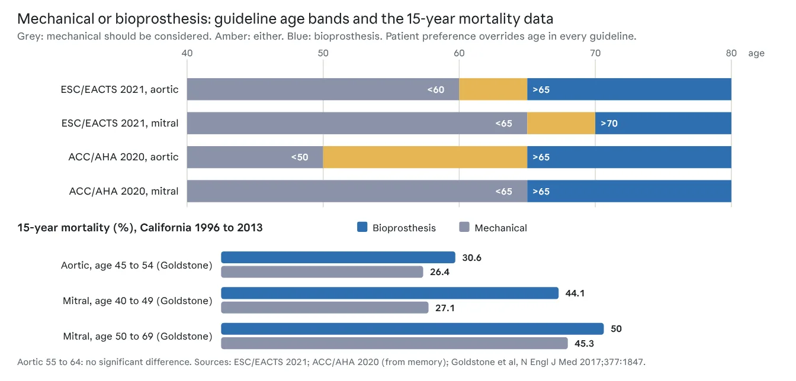
ESC/EACTS 2021 recommendations
| Favouring a mechanical valve | Class | Basis |
|---|---|---|
| Age under 60 in the aortic position, under 65 in the mitral position | IIa B | checked |
| Already anticoagulated for a mechanical valve in another position | IIa C | checked |
| Reasonable life expectancy and a high-risk future redo operation or transcatheter procedure | IIa C | checked |
| Already on long-term anticoagulation for high thromboembolic risk | IIb C | checked |
| Informed patient's wish, no contraindication to anticoagulation; risk of accelerated structural deterioration (young age, hyperparathyroidism, haemodialysis) | I C | memory |
| Favouring a bioprosthesis | Class | Basis |
|---|---|---|
| Informed patient's wish | I C | checked |
| Good anticoagulation unlikely (adherence, access) or contraindicated (bleeding risk, comorbidity, lifestyle, occupation); life expectancy shorter than the valve's expected durability | I C | checked |
| Reoperation for mechanical valve thrombosis despite good anticoagulant control | I C | checked |
| Age over 65 aortic, over 70 mitral | IIa C | memory |
| Young woman contemplating pregnancy | IIa C | memory |
The 2025 ESC/EACTS guideline: I could not confirm today whether these thresholds changed. Its headline aortic change is transcatheter implantation from age 70 with suitable tricuspid anatomy [checked from summaries]. Check the 2025 prosthesis table before quoting class and level.
ACC/AHA 2020 [memory]
| Position | Mechanical reasonable | Individualise | Bioprosthesis reasonable |
|---|---|---|---|
| Aortic | Under 50 | 50 to 65 | Over 65 |
| Mitral | Under 65 | Over 65 |
Shared decision-making is class I. The earlier 2017 version used 50 and 70 without separating the positions [checked].
The evidence
| Study | Design | Finding | Basis |
|---|---|---|---|
| Goldstone, N Engl J Med 2017;377:1847 | California 1996 to 2013; 9,942 aortic and 15,503 mitral replacements; weighted cohorts | Aortic, age 45 to 54: 15-year mortality 30.6% bioprosthesis against 26.4% mechanical (HR 1.23, 1.02 to 1.48). Age 55 to 64: no significant difference | checked |
| Goldstone, mitral | Age 40 to 49: 44.1% against 27.1% (HR 1.88, 1.35 to 2.63). Age 50 to 69: 50.0% against 45.3% (HR 1.16, 1.04 to 1.30) | checked | |
| Goldstone, other outcomes | More reoperation with bioprostheses; more bleeding, and in some age groups stroke, with mechanical valves | checked | |
| Goldstone, trend | Bioprosthesis share rose from 11.5% to 51.6% for aortic and 16.8% to 53.7% for mitral replacement | checked | |
| Bowdish, J Am Coll Cardiol 2025 (STS database) | 109,842 isolated aortic replacements, age 40 to 75, 2008 to 2019; 14% mechanical | Mechanical valve associated with lower all-cause mortality at age 60 or under. Mechanical use fell from 20% to 10% over the period | checked |
| Korean national cohort (JAMA Netw Open 2023) | Survival benefit of mechanical valves maintained up to 65 aortic and 70 mitral | checked (summary only) | |
| Swedish registry (Glaser 2016), randomised trials (Veterans Affairs, Edinburgh, Stassano) | Older data pointing the same way for the aortic valve in 50 to 69 year olds; trials used obsolete valves | memory |
All of the modern data are observational. Residual confounding is likely: patients given a bioprosthesis are usually older and sicker.
Factors beyond age
| Factor | Pushes towards | Basis |
|---|---|---|
| Atrial fibrillation needing anticoagulation anyway | Weakens the case for a bioprosthesis, but a direct oral anticoagulant is possible with a bioprosthesis and not with a mechanical valve | memory |
| Pregnancy planned | Bioprosthesis, or Ross in an expert centre; warfarin embryopathy and valve thrombosis on heparin are the problem | memory |
| Dialysis | Historically mechanical (calcification); limited life expectancy now often favours a bioprosthesis | memory |
| Endocarditis | No valve type shown better (Flynn meta-analysis in Cardiac tab 2); bioprosthesis for most people who inject drugs | checked in tab 2 |
| Small aortic root | Avoid mismatch: root enlargement, sutureless or stentless valve, or a mechanical valve | memory |
| Lifetime plan | A bioprosthesis at 55 implies one or two further procedures; choose a size and type that allows valve-in-valve, and check coronary heights | memory |
| Occupation and lifestyle | Contact sport, remote work, poor INR access: bioprosthesis | memory |
Anticoagulation that follows the choice [memory]
| Valve | Regimen |
|---|---|
| Mechanical aortic, bileaflet, no risk factors | Warfarin INR 2.5 (ESC median target by valve thrombogenicity and patient risk factors) |
| Mechanical mitral, or aortic with risk factors (atrial fibrillation, low ejection fraction, previous thromboembolism) | INR 3.0 |
| On-X aortic after 3 months | INR 1.5 to 2.0 with aspirin (see the section above) |
| Surgical bioprosthesis | Three months of warfarin or aspirin, then nothing unless another indication |
| Direct oral anticoagulants | Not for mechanical valves (RE-ALIGN, PROACT Xa) |
How to answer in a viva
Patient's informed preference first.
Age and position: mechanical under 60 aortic and under 65 mitral in Europe; the American aortic threshold is 50.
Anything that forbids warfarin or shortens life expectancy moves to a bioprosthesis; anything that speeds degeneration or makes a redo dangerous moves to mechanical.
Quote Goldstone and Bowdish: survival advantage for mechanical up to about 55 to 60 aortic and about 70 mitral, observational.
State the lifetime plan.
Sources checked today
ESC/EACTS 2021 prosthesis recommendations table (Vahanian et al; https://pmc.ncbi.nlm.nih.gov/articles/PMC9725093/table/T19).
Goldstone AB et al. N Engl J Med 2017;377:1847-57 (abstract and summaries).
Bowdish ME et al. J Am Coll Cardiol 2025, doi 10.1016/j.jacc.2025.01.013 (ACC journal scan and STS release).
ACC 2018 expert analysis for the 2017 thresholds.
Korean cohort summary: https://www.ncbi.nlm.nih.gov/pmc/articles/PMC10203891/
Freestyle stentless aortic root bioprosthesis
Added 18 November 2026 in answer to your question. Rows are marked [checked] (confirmed against a source today, listed at the end) or [memory].

What it is
| Point | Detail | Basis |
|---|---|---|
| Device | A complete porcine aortic root (Medtronic Freestyle), glutaraldehyde-fixed, with no stent or sewing ring; a thin polyester cover over the porcine septal muscle at the inflow; porcine coronaries ligated | memory |
| Why stentless | No stent or sewing ring in the outflow, so a larger effective orifice for a given annulus; a full root can be upsized by one to two sizes, which helps the small root | checked (upsizing); rest memory |
| Anticoagulation | As any bioprosthesis | memory |
Three implantation techniques
| Technique | What is done | When | Trade-off | Basis |
|---|---|---|---|---|
| Subcoronary | Porcine sinuses scalloped away; valve sewn inside the native root with a proximal line at the annulus and a distal line below the coronary ostia | Normal-sized, symmetric native root | Geometry depends on the native root: distortion gives regurgitation; smaller valve sizes go in | checked (smaller sizes); rest memory |
| Root inclusion | Whole porcine root inside the native root, with openings cut opposite the native coronary ostia | Normal root where the surgeon wants to keep porcine geometry | Space between the two walls can bleed or collect | memory |
| Full root | Native root excised; porcine root sewn to the annulus; coronary buttons reimplanted; distal anastomosis to the aorta | Root aneurysm, small root, endocarditis with root destruction, redo root | Longer operation, coronary buttons, more bleeding risk; lowest gradients | checked (gradients); rest memory |
Results
| Study | Finding | Basis |
|---|---|---|
| North American multicentre series (700 patients, 93% over 60; 500 subcoronary) | At 8 years, freedom from structural deterioration 98.6% in the subcoronary group; full root gave slightly lower gradients, larger orifice area and less regurgitation | checked |
| Same multicentre study, 5-year comparison (500 subcoronary, 162 full root) | Operative death higher with full root (odds ratio 3.97); no difference in late death or reoperation. The authors argued against full root replacement when the root is healthy | checked |
| Ennker (1,014 patients, 148 propensity-matched pairs) | Operative mortality 2.7% subcoronary and 4.7% full root, not significantly different after adjustment; lower gradients per size with full root | checked |
| Leiden (604 patients, 1993 to 2014; 403 full root; median age 64) | 20-year experience; full root became the standard technique after 2005 | checked (design only; I did not capture the 15-year figures) |
| Michigan (1,947 patients, 1992 to 2015) | Satisfactory durability as a root conduit; 10- and 15-year survival 53% and 29%; to be used judiciously under 60 because of more reoperation for structural deterioration | checked |
Where it fits now
| Use | Comment | Basis |
|---|---|---|
| Bioprosthetic root replacement | An off-the-shelf biological root for the patient who wants no warfarin; alternative to a stented valve sewn into a tube graft (bio-Bentall) | memory |
| Endocarditis with root abscess | A stentless root is an alternative when a homograft is not available (Sidik 2025 review in Cardiac tab 2) | checked in tab 2 |
| Small aortic root | Alternative to root enlargement or a sutureless valve | memory |
| Against it | Technically harder than a stented valve; the calcified porcine root is a difficult redo; valve-in-valve is possible but risks coronary obstruction because there are no stent posts and the coronaries sit close; structural failure is often leaflet tear with acute regurgitation | memory |
For the viva
Freestyle is a root, not just a valve: say which of the three techniques you mean.
Subcoronary is quicker and safer but depends on native root geometry; full root gives the best haemodynamics at the cost of a root operation.
Durability is good in the over-60s and less good in younger patients.
Sources checked today
Bach DS et al, North American multicentre Freestyle series: 8-year results (https://read.qxmd.com/read/15173720) and the 5-year subcoronary against full root comparison (abstract).
Ennker J et al. Ten-year experience with stentless aortic valves: full-root versus subcoronary implantation. Ann Thorac Surg 2008 (abstract).
Schneider AW. Twenty-year experience with the Freestyle stentless bioprosthesis. Leiden thesis chapter, 2021.
Yang B et al, Michigan series (https://pmc.ncbi.nlm.nih.gov/articles/PMC7308200).
Sci Rep 2019 series on full root upsizing (https://www.nature.com/articles/s41598-019-40772-7).
ESC/EACTS 2025 guideline: prosthetic valve selection (now checked)
Added 18 November 2026 from the PDF you supplied: Praz F, Borger MA, et al. 2025 ESC/EACTS Guidelines for the management of valvular heart disease. Eur J Cardiothorac Surg 2025;67(8):ezaf276, doi 10.1093/ejcts/ezaf276. I read the prosthesis selection table (section 14.1) and the related text; not the whole guideline. This replaces the "not checked" note in the prosthesis choice section above: the age thresholds are unchanged from 2021.
| Mechanical valve | Class, level |
|---|---|
| Recommended according to the desire of the informed patient, if there is no contraindication to long-term anticoagulation | I C |
| Should be considered with an estimated long life expectancy and no contraindication to long-term anticoagulation | IIa B |
| Should be considered under 60 years in the aortic position and under 65 years in the mitral position | IIa C |
| Should be considered with a mechanical valve already in another position | IIa C |
| May be considered with a clear indication for long-term anticoagulation | IIb C |
| Bioprosthesis | Class, level |
|---|---|
| Recommended according to the desire of the informed patient | I C |
| Recommended when good-quality anticoagulation is unlikely, bleeding risk is high, or life expectancy is short | I C |
| Should be considered over 65 years in the aortic position or over 70 years in the mitral position | IIa C |
| Should be considered in women contemplating pregnancy | IIa C |
| Related statements | Detail |
|---|---|
| Life expectancy | Estimated from age, sex, comorbidities and country-specific figures |
| Anticoagulation | A vitamin K antagonist is recommended lifelong for every mechanical valve; INR self-management is supported; the INR range is set by valve type, position and the patient's thrombotic risk |
| Before non-cardiac surgery | Minor procedures need no interruption; for major elective surgery, bridging may be omitted when thromboembolic risk is low (new-generation aortic mechanical valve, no other risk factor) |
| Direct oral anticoagulant after a bioprosthesis | A pre-existing direct oral anticoagulant may be continued and restarted when surgically safe, usually within 2 to 3 days |
| Transcatheter or surgical | Transcatheter implantation from 70 years with suitable tricuspid aortic anatomy; the choice also weighs lifetime management and repeat-procedure options |
Difference from my earlier table: the 2025 wording for the age threshold carries level C (I had quoted the 2021 level B), and "long life expectancy" is now its own IIa B recommendation. The ages confirm what I had listed from memory (over 65 aortic, over 70 mitral for a bioprosthesis; pregnancy IIa C).
Cardiac 4: TOE and CT
Contents (14 sections)
- TOE and CT for cardiac surgery
- TOE orientation: four-chamber and two-chamber views
- All 28 standard TOE views
- Prosthetic valves: washing jets and paravalvular leak
- Grading aortic regurgitation, mitral regurgitation and mitral stenosis on TOE, and when to operate
- Ultrasound and Doppler physics
- CT in aortic and mitral disease: what EACTS, STS and AATS say
- ECG gating
- Non-contrast or contrast CT around cardiac surgery
- CT angiography of the aorta: protocols, how and where to measure, and what the numbers mean
- Endoleaks
- Early complications on CT after aortic valve and root surgery
- Thresholds: CT measurements for procedural planning
- Thresholds: Ventricular and pulmonary values at a glance
What the surgeon needs from intraoperative TOE and from cardiac CT, with diagrams.
TOE and CT for cardiac surgery
TOE answers what to do to the valve and whether it worked before the chest is closed; CT answers how to get in safely, where to cannulate, and whether a transcatheter option fits.
Intraoperative TOE: what the surgeon needs from it
| Operation | Before bypass | After bypass |
|---|---|---|
| Every case | LV and RV function; aortic regurgitation (affects cardioplegia and venting); atheroma in the ascending aorta and arch; patent foramen ovale; appendage thrombus; position of the coronary sinus cannula, venous cannula or wire, and balloon pump tip | De-airing; new regional wall motion abnormality; ventricular filling and function; cannulation site and descending aorta for dissection |
| Mitral repair | Mechanism by Carpentier type; which segment; annulus size and calcification; predictors of systolic anterior motion | Residual regurgitation no more than mild; coaptation length; mean gradient; systolic anterior motion; new lateral wall hypokinesia (circumflex); new aortic regurgitation (stitch through the non-coronary or left cusp) |
| Aortic valve replacement | Annulus, LVOT, root and sinotubular junction; cusp number; septal bulge | Paravalvular leak and its site; leaflet motion; gradients; flow in both coronary ostia |
| Aortic valve repair and valve-sparing root | Mechanism of regurgitation, cusp prolapse, annulus and root dimensions | Effective height about 9 mm or more; coaptation length about 5 mm or more, above the annular plane; no more than mild central regurgitation; any eccentric jet means residual prolapse |
| CABG | Baseline wall motion; ischaemic mitral regurgitation; aortic atheroma before clamping | New wall motion abnormality in a grafted territory |
| Type A dissection | Entry tear, true and false lumen, mechanism of aortic regurgitation, effusion, coronary ostia, wall motion | Guidewire and cannula in the true lumen; valve competence after resuspension; residual false lumen flow |
| Septal myectomy | Septal thickness and where contact occurs; mitral and subvalvar anatomy; gradient | Residual gradient and systolic anterior motion; iatrogenic VSD; aortic regurgitation |
| Endocarditis | Vegetation, perforation, abscess, fistula, involvement of the intervalvular fibrous body and other valves | Residual shunt or leak; competence of the reconstruction |

The surgical and 3D en face views match: aortic valve at the top, appendage on the left, so A1 and P1 are on the left and A3 and P3 on the right. The long-axis plane cuts A2 and P2; the commissural plane cuts P3, A2 and P1.
Predictors of systolic anterior motion after repair: anterior to posterior leaflet length ratio 1.3 or less, coaptation point to septum under 2.5 cm, posterior leaflet over 1.5 cm, basal septum over 1.5 cm, small hyperdynamic ventricle, narrow aorto-mitral angle.
If it appears: fill, slow the heart, stop inotropes and raise afterload before going back on bypass.
Functional mitral regurgitation is underestimated under anaesthesia; rely on the preoperative awake study for the decision.
Atheroma that is mobile or over 4–5 mm thick in the ascending aorta changes the cannulation and clamp strategy; epiaortic scanning sees the distal ascending aorta that TOE cannot.
Contraindications: oesophageal stricture, tumour, recent oesophageal or gastric surgery, perforation; caution with varices.
Standard: the ASE and SCA comprehensive examination of 28 views (2013).
Cardiac CT: what the surgeon needs from it
| Question | What to look for | Consequence |
|---|---|---|
| Is re-entry safe? | Distance from the sternum to the right ventricle, aorta, innominate vein and any conduit; course of a patent internal thoracic graft across the midline; a retrosternal conduit or aneurysm | Peripheral cannulation or bypass before sternotomy; oscillating saw; alternative incision |
| Can I clamp and cannulate the aorta? | Calcification and atheroma of the ascending aorta and arch; porcelain aorta | No-touch or off-pump strategy, axillary or femoral cannulation, circulatory arrest, or transcatheter treatment |
| Is minimally invasive surgery suitable? | Aorto-iliac atheroma and tortuosity; femoral vessel size; chest wall shape; mitral annular calcification | Retrograde perfusion is avoided with significant atheroma; choose sternotomy or antegrade perfusion |
| Does a transcatheter valve fit? | Annulus area and perimeter; calcium in the LVOT; coronary heights; sinus width; sinotubular junction; bicuspid morphology; ilio-femoral lumen of about 5–5.5 mm or more | Valve type and size; coronary protection; access route; or surgery |
| How severe is the stenosis when echo is discordant? | Valve calcium score | Severe is likely at about 2,000 units in men and 1,200 in women |
| Is there coronary disease? | Coronary CT angiography | Can replace invasive angiography before valve surgery when the probability is low; also for a vegetation on the aortic valve |
| How big is the aorta? | Gated root; double-oblique diameters at the annulus, sinuses, sinotubular junction, ascending, arch and descending; compare like with like over time | Thresholds in the Echo and CT thresholds tab |
| Dissection | Entry tear, extent, branch vessel and coronary involvement, malperfusion, effusion, false lumen at the cannulation site | Extent of repair and cannulation |
| Endocarditis | Abscess, false aneurysm, fistula, prosthetic dehiscence; splenic, renal and cerebral emboli | Extent of reconstruction; timing |
| Mitral annular calcification or transcatheter mitral valve | Extent and circumferential spread of calcium; predicted neo-LVOT area | Risk of AV groove disruption; LVOT obstruction |
The annulus is measured in systole on a gated scan, as area and perimeter; the other levels describe coronary risk and whether the frame will seat.
Acquisition: ECG-gated, with the root reconstructed in systole (30–40% of the R-R interval) for annular sizing; a non-gated run to the femoral heads for access.
Measure the aorta perpendicular to the centreline. Axial diameters overestimate a tortuous aorta.
A delayed phase separates appendage thrombus from slow flow.
Request the redo-sternotomy scan with contrast if grafts are present, so their course is seen.
Sources and status: the ASE and SCA comprehensive TOE guideline and the existence and scope of the SCCT 2019 consensus on CT before TAVI were confirmed on 17 November 2026. The checklists and every number in this section are from memory.
TOE orientation: four-chamber and two-chamber views
Reference: ASE and SCA guidelines for a comprehensive TOE examination, 2013. The wall names are confirmed against a published description of the examination; the rest is from memory of the guideline.
Three rules that work for every view
The top of the sector is the probe. Whatever is nearest the oesophagus is at the top, so the left atrium is at the top of every mid-oesophageal view and the apex is at the bottom.
At 0 degrees the plane is transverse and the screen is read like a CT from the feet: screen left is the patient's right.
Turning the angle forward rotates the plane anticlockwise as seen from the probe. By 90 degrees the plane is vertical: screen left is inferior (towards the feet) and screen right is anterior (towards the head).
Four-chamber view

How to get it: mid-oesophagus, about 30 to 35 cm, 0 to 10 degrees, slight retroflexion so the apex is not foreshortened and the outflow tract drops out of view.
Walls: inferoseptal on the left of the ventricle, anterolateral on the right. Basal and mid segments are seen well; the true apex is often cut short.
Mitral scallops: sources disagree, because the cut depends on depth and flexion. Withdrawing or anteflexing to the five-chamber view cuts A1 and P1; the standard view cuts the middle of the valve (A2 and P2, or A3 and P1 in the guideline's table); advancing or retroflexing cuts A3 and P3. Say which way you moved the probe, not a fixed label.
Use it for: chamber size, biventricular function, mitral and tricuspid regurgitation jets, atrial septum, pericardial effusion.
Two-chamber view

How to get it: from the four-chamber view keep the mitral valve central and turn the angle to 80 to 100 degrees until the right heart disappears.
Walls: inferior on the left, anterior on the right. This is the view that shows the true apex best.
Mitral scallops: P3 on the left, then the anterior leaflet A3, A2, A1 running to the right.
Use it for: anterior and inferior wall motion, apical thrombus, left atrial appendage (turn slightly anticlockwise and withdraw), and the coronary sinus when placing a retrograde cardioplegia cannula.
The four mid-oesophageal views in sequence
| View | Angle | Screen left | Screen right | Mitral, left to right |
|---|---|---|---|---|
| Four-chamber | 0 to 10 | Inferoseptal wall | Anterolateral wall | Anterior leaflet, posterior leaflet |
| Commissural | 50 to 70 | Inferior wall, towards inferolateral | Anterior wall, towards anterolateral | P3, A2, P1 |
| Two-chamber | 80 to 100 | Inferior wall | Anterior wall | P3, A3 A2 A1 |
| Long-axis | 120 to 140 | Inferolateral wall | Anteroseptal wall, with the outflow tract and aortic valve | P2, A2 |
A way to remember the walls: going from 0 to 135 degrees the left side of the screen runs inferoseptal, inferior, inferolateral, and the right side is always the wall opposite.
All 28 standard TOE views
The 2013 ASE and SCA guideline lists 28 views; the names below follow it. Angles, what each shows and its use are from memory of the guideline and standard TOE texts, not read from the document today. Angles vary between patients by 10 to 20 degrees.
Four probe movements: advance or withdraw; turn the shaft right (clockwise) or left; anteflex or retroflex with the big wheel; rotate the imaging angle 0 to 180 degrees with the button.
Mid-oesophageal: left heart

| View | Angle | What you see | Use |
|---|---|---|---|
| Five-chamber | 0 to 10 | Four chambers plus outflow tract and aortic valve | Outflow obstruction, systolic anterior motion, A1 and P1 |
| Four-chamber | 0 to 10 | Both atria and ventricles; inferoseptal and anterolateral walls | Global function, mitral and tricuspid valves, septa |
| Mitral commissural | 50 to 70 | P3, A2, P1 from left to right; both papillary muscles | Localising a prolapse or flail scallop; annulus width |
| Two-chamber | 80 to 100 | Inferior and anterior walls; appendage; coronary sinus | Wall motion, apex, appendage |
| Long-axis | 120 to 140 | Inferolateral and anteroseptal walls; P2 and A2; outflow tract, aortic valve | Mitral mechanism, annulus and outflow tract diameters |
| Left atrial appendage | 0 to 135 sweep | Appendage beside the left upper pulmonary vein, separated by the ridge | Thrombus before cardioversion or cannulation; closure check |
| Pulmonary veins, left and right | 0 to 110 | Left upper vein beside the appendage; right veins by turning right from the bicaval view | Pulmonary vein flow for mitral regurgitation grading; anomalous drainage |
Mid-oesophageal: aortic valve and ascending aorta

| View | Angle | What you see | Use |
|---|---|---|---|
| Aortic valve short-axis | 30 to 50 | Three cusps: non-coronary next to the atrial septum, right coronary anterior (far field), left coronary on the right of screen | Cusp number and fusion, planimetry, origin of regurgitation, coronary ostia |
| Aortic valve long-axis | 120 to 140 | Outflow tract, valve, sinuses, sinotubular junction, proximal ascending aorta | Annulus, sinus and junction diameters; vena contracta; type A dissection flap |
| Ascending aorta short-axis | 0 to 30 | Aorta in section with SVC and the pulmonary trunk dividing; right pulmonary artery behind the aorta | Dissection, pulmonary embolus in the proximal arteries, pulmonary artery catheter |
| Ascending aorta long-axis | 90 to 110 | Mid ascending aorta in length, right pulmonary artery in section above it | Atheroma and dissection before cannulation |
The distal ascending aorta and proximal arch are hidden behind the trachea and left main bronchus. Use epiaortic scanning if cannulation site atheroma matters.
Mid-oesophageal: right heart and atria
| View | Angle | What you see | Use |
|---|---|---|---|
| RV inflow-outflow | 60 to 75 | Right atrium, tricuspid valve, right ventricle, pulmonary valve and trunk around the aortic valve | Tricuspid regurgitation velocity, pulmonary valve, outflow tract |
| Bicaval | 90 to 110 | Both atria, the atrial septum, SVC on the right, IVC on the left, right atrial appendage | Septal defects, foramen ovale, cannulas, pacing leads |
| Modified bicaval tricuspid | 50 to 70 | Bicaval view turned to bring the tricuspid valve in | A second line-up for tricuspid regurgitation |
Transgastric
| View | Angle | What you see | Use |
|---|---|---|---|
| Basal short-axis | 0 to 20 | Mitral valve en face: anterior leaflet on the left, posterior on the right; posteromedial commissure nearest the probe | Site of a regurgitant jet; basal wall motion |
| Mid-papillary short-axis | 0 to 20 | Six mid segments: inferior at top, anterior at bottom, septum left, lateral right; posteromedial papillary muscle nearer the probe | Filling, global function and regional ischaemia; the monitoring view |
| Apical short-axis | 0 to 20 | Four apical segments | Apical wall motion |
| RV basal | 0 to 20 | Turn right from the basal view: tricuspid valve en face | Tricuspid leaflets |
| RV inflow-outflow | 0 to 20 | Right-sided anteflexion: inflow and outflow together | Pulmonary valve Doppler |
| Deep transgastric five-chamber | 0 to 20 | Apex at the top, outflow tract and aortic valve in line with the beam at the bottom | Aortic valve and outflow tract gradients |
| Two-chamber | 90 to 110 | Inferior wall at top, anterior at bottom, apex to the left; chordae and papillary muscles in length | Subvalvar apparatus |
| RV inflow | 90 to 110 | Turn right from the two-chamber view: tricuspid valve and its chordae | Tricuspid subvalvar apparatus |
| Long-axis | 120 to 140 | Outflow tract and aortic valve on the right of screen | Alternative alignment for aortic gradients |
Coronary territories in the mid-papillary short-axis view: LAD supplies the anterior wall and anterior septum; circumflex the lateral walls; right coronary the inferior wall and inferior septum (in a right-dominant heart).
Aorta

| View | Angle | What you see | Use |
|---|---|---|---|
| Descending aorta short-axis | 0 | Circular aorta at the top of the screen | Atheroma, dissection, balloon pump tip, left pleural effusion behind it |
| Descending aorta long-axis | 90 | Aorta as a tube | The same; flow reversal in aortic regurgitation |
| Arch long-axis | 0, upper oesophagus | Arch in length; proximal arch on the right of screen | Arch atheroma and dissection |
| Arch short-axis | 70 to 90 | Arch in section with the left subclavian origin; pulmonary trunk and pulmonary valve below | Pulmonary valve Doppler; position of a balloon pump (tip just beyond the left subclavian) |
A sequence that covers everything
Four-chamber, then turn the angle through commissural, two-chamber and long-axis without moving the probe. Withdraw slightly for the aortic valve short and long axis. Turn right for RV inflow-outflow and bicaval. Withdraw for the ascending aorta. Advance to the stomach and anteflex for the short-axis views, then two-chamber and long-axis, then deep transgastric. Come back up, turn left to the descending aorta and follow it up to the arch.
A focused intra-operative examination uses 11 of these: four-chamber, two-chamber, long-axis, ascending aorta short and long axis, aortic valve short-axis, RV inflow-outflow, bicaval, transgastric mid-papillary short-axis, and descending aorta short and long axis.
Prosthetic valves: washing jets and paravalvular leak
Sources: ASE 2009 prosthetic valve recommendations, ASE 2024 prosthetic valve guideline, EACVI 2016 recommendations and an ESC council summary. Read from search extracts on 18 November 2026.

Normal regurgitation through a mechanical valve
Two components, both inside the sewing ring:
Closing volume: blood displaced backwards as the occluder shuts. Brief, at the start of closure.
Leakage (washing) jets: true trivial regurgitation through the built-in gaps at the hinges, designed to stop thrombus forming at points of stasis.
| Valve type | Normal pattern | Normal volume per beat |
|---|---|---|
| Bileaflet (St Jude, On-X, Carbomedics) | Jets from each pivot point, two per pivot, sometimes splitting into two or three plumes; symmetrical and converging | 5 to 10 mL |
| Single tilting disc | Small jets just inside the ring where the disc meets the housing; Medtronic Hall adds one larger central jet through the hole in the disc | 5 to 9 mL |
| Caged ball | Closing volume only | 2 to 6 mL |
| Bioprosthesis | Little or none; a small central closing jet in some |
Telling them apart
| Washing jets | Paravalvular leak | |
|---|---|---|
| Origin | Inside the sewing ring, at the hinges | Outside the sewing ring, between ring and annulus |
| Number and shape | Multiple, in the pattern expected for that valve, symmetrical | Usually single, eccentric, often crescent-shaped at its neck |
| Colour | Narrow, short (commonly 2 to 3 cm), low momentum, uniform colour with aliasing only at the base | Turbulent mosaic, wall-hugging, with a proximal convergence zone on the far side of the valve |
| Timing | Brief | Throughout systole (mitral) or diastole (aortic) |
| Associated signs | None | Rocking of the prosthesis if dehiscence exceeds roughly 40% of the ring; haemolysis; vegetation or abscess if infective |
Jet length, the dehiscence figure and the haemolysis point are from memory.
Finding and describing a leak
Mitral prostheses shadow the left atrium on transthoracic imaging, so TOE is needed; aortic prostheses shadow the anterior ring on TOE, so use transthoracic and deep transgastric views as well.
Sweep the whole ring through 180 degrees; use 3D en face colour from the atrial side for mitral leaks.
Report position on a clock face in the surgeon's view. Mitral: aortic valve at 12 o'clock, appendage at about 9, atrial septum at about 3. The clock-face landmarks are from memory.
Report size as the proportion of the ring circumference occupied by the jet neck. For aortic prostheses: under 10% mild, 10 to 29% moderate, 30% or more severe. Transcatheter valve criteria use under 10, 10 to 19 and 20 or more in some trial protocols, so say which scheme you are using.
Circumferential extent over-calls multiple small jets and under-calls a single wide one. Add vena contracta width and area, diastolic flow reversal in the descending aorta (aortic), pulmonary vein systolic reversal (mitral), and ventricular size.
In theatre, coming off bypass
Small leaks inside the ring in the expected pattern: normal. Tell the surgeon which valve type you expect to see.
Tiny paravalvular jets are common before protamine and many disappear once heparin is reversed and the sewing ring seals.
Go back on bypass for: more than a mild paravalvular leak, any rocking, a leaflet that does not move (trapped by retained subvalvar tissue or a suture), or a high gradient that does not fit the valve size.
The threshold for re-clamping is a judgement about the leak against a second cross-clamp. This paragraph is practice-based and from memory, not from a guideline.
Later
A new paravalvular leak is endocarditis until shown otherwise.
Indications to close: heart failure symptoms or haemolysis needing transfusion. Surgery is first line for large or infective leaks; transcatheter plug closure in high-risk patients with a suitable defect and no infection (guideline class from memory; check against ESC 2025).
Grading aortic regurgitation, mitral regurgitation and mitral stenosis on TOE, and when to operate
Sources: ASE 2017 native valve regurgitation guideline, EACVI and ASE criteria as tabulated in the 2021 ESC/EACTS guideline, and the 2025 ESC/EACTS valvular guideline. The regurgitation criteria and the 2025 indications were read from extracts on 18 November 2026. The mitral stenosis grading and its recommendations are from memory, apart from the 1.5 cm2 definition.
A warning that applies to all three: general anaesthesia lowers preload and afterload, so intra-operative TOE under-grades regurgitation, often by a full grade. Grade on the pre-operative awake study; in theatre, restore the blood pressure with a vasoconstrictor and fluid before deciding a borderline lesion can be left.
Aortic regurgitation
| Measure | Mild | Moderate | Severe | Where on TOE |
|---|---|---|---|---|
| Vena contracta width | Under 3 mm | 3 to 6 mm | Over 6 mm | Aortic valve long-axis, zoomed |
| Jet width as a share of the outflow tract (central jets only) | Under 25% | 25 to 64% | 65% or more | Aortic valve long-axis |
| Pressure half-time | Over 500 ms | 200 to 500 ms | Under 200 ms | Deep transgastric or transgastric long-axis, continuous wave |
| Diastolic flow reversal in the descending aorta | Brief, early | Intermediate | Holodiastolic, end-diastolic velocity over 20 cm/s | Descending aorta long-axis, pulsed wave |
| Effective regurgitant orifice | Under 0.10 cm2 | 0.10 to 0.29 | 0.30 cm2 or more | Proximal convergence, deep transgastric |
| Regurgitant volume and fraction | Under 30 mL, under 30% | 30 to 59 mL, 30 to 49% | 60 mL or more, 50% or more |
Also report the mechanism, because it decides repair against replacement: cusp prolapse, perforation or restriction, and the annulus, sinus and sinotubular junction diameters. Half-time shortens with a stiff ventricle and in acute regurgitation, so do not use it alone.
Indications, ESC/EACTS 2025:
Symptomatic severe regurgitation: surgery whatever the ejection fraction (class I).
Severe regurgitation in a patient having coronary, ascending aortic or other valve surgery (class I).
Asymptomatic: ejection fraction 50% or less, or end-systolic diameter over 50 mm, or indexed over 25 mm/m2, especially in small patients (class I).
Asymptomatic and low surgical risk: may be considered at indexed end-systolic diameter over 22 mm/m2, indexed end-systolic volume over 45 mL/m2, or ejection fraction 55% or less (class IIb, new thresholds in 2025).
Aortic valve repair should be considered in selected patients in experienced centres when a durable result is expected (class IIa, upgraded in 2025).
Transcatheter implantation may be considered for symptomatic severe regurgitation in patients ineligible for surgery with suitable anatomy (class IIb, new in 2025).
A dilated root or ascending aorta sets its own indication regardless of the regurgitation grade.
The American guideline differs: it recommends surgery at an ejection fraction of 55% or less.
Primary mitral regurgitation
| Measure | Mild | Moderate | Severe | Where on TOE |
|---|---|---|---|---|
| Vena contracta width | Under 3 mm | 3 to 6.9 mm | 7 mm or more | Long-axis view; not the commissural view |
| Effective regurgitant orifice | Under 0.20 cm2 | 0.20 to 0.39 | 0.40 cm2 or more | Proximal convergence, baseline shifted to 30 to 40 cm/s |
| Regurgitant volume and fraction | Under 30 mL, under 30% | 30 to 59 mL, 30 to 49% | 60 mL or more, 50% or more | |
| Pulmonary vein flow | Systolic dominant | Systolic blunting | Systolic reversal | Left upper pulmonary vein, pulsed wave |
| Mitral inflow | A wave dominant | E wave over 1.2 m/s | ||
| Supportive | Flail leaflet; large convergence zone; dense triangular continuous wave signal |
In secondary regurgitation the orifice is elliptical, so severe may be 0.30 cm2 or more and 45 mL or more in low-flow states.
Indications, ESC/EACTS 2025:
Symptomatic severe primary regurgitation, operable and not high risk: surgery (class I). Repair is preferred to replacement when the result is expected to be durable.
Asymptomatic with ventricular dysfunction: ejection fraction 60% or less, end-systolic diameter 40 mm or more, or indexed 20 mm/m2 or more (class I).
New in 2025, class I: repair in low-risk asymptomatic patients with a normal ventricle when durable repair is likely and at least three of four are present: atrial fibrillation; resting systolic pulmonary artery pressure over 50 mmHg; left atrial volume index 60 mL/m2 or more, or diameter 55 mm or more; at least moderate secondary tricuspid regurgitation.
Asymptomatic with a normal ventricle and atrial fibrillation from the regurgitation or pulmonary hypertension over 50 mmHg: surgery should be considered (class IIa).
Transcatheter edge-to-edge repair should be considered in symptomatic patients at high surgical risk with suitable anatomy (class IIa, upgraded).
Severe regurgitation in a patient having other valve surgery: operate on it (class I).
Secondary regurgitation in brief: ventricular type, edge-to-edge repair is class I in stable symptomatic patients with ejection fraction under 50% who remain severe on optimal treatment and meet the criteria; surgery class IIb unless another operation is needed. Atrial type, surgery with atrial fibrillation ablation and appendage closure should be considered (class IIa, new). Moderate secondary regurgitation at the time of coronary surgery: mitral surgery may be considered (class IIb).
Mitral stenosis
| Measure | Mild | Moderate | Severe | Where on TOE |
|---|---|---|---|---|
| Valve area | Over 1.5 cm2 | 1.0 to 1.5 cm2 | Under 1.0 cm2 | Planimetry at the leaflet tips: transgastric basal short-axis or 3D |
| Mean gradient at 60 to 80 beats per minute | Under 5 mmHg | 5 to 10 mmHg | Over 10 mmHg | Four-chamber or long-axis, continuous wave |
| Pulmonary artery systolic pressure | Under 30 mmHg | 30 to 50 mmHg | Over 50 mmHg |
This three-grade table is the 2009 European and American echo scheme. Current guidelines intervene on a different line: clinically significant stenosis is an area of 1.5 cm2 or less (the ESC 2025 flowchart uses this), and the American staging calls 1.5 or less severe and 1.0 or less very severe, with a half-time of 150 ms or more and 220 ms or more.
Area by half-time is 220 divided by the half-time. It is unreliable just after balloon valvotomy, with significant aortic regurgitation, and with a stiff ventricle.
The gradient depends on heart rate and flow. Always quote the rate.
TOE's particular jobs: exclude left atrial and appendage thrombus before balloon valvotomy, grade the regurgitation, and assess commissural fusion and calcium.
Wilkins score: mobility, thickening, calcification and subvalvar thickening, each 1 to 4. Eight or less favours balloon valvotomy.
Indications (from memory of ESC/EACTS 2021, which I believe 2025 keeps; not re-read):
Symptomatic, area 1.5 cm2 or less, favourable anatomy: percutaneous mitral commissurotomy (class I).
Symptomatic and unsuitable for commissurotomy: surgery, almost always replacement (class I).
Asymptomatic with high embolic risk (previous embolism, dense spontaneous contrast, new atrial fibrillation) or high risk of decompensation (pulmonary pressure over 50 mmHg, need for major non-cardiac surgery, planned pregnancy): commissurotomy should be considered if anatomy is favourable (class IIa).
Contraindications to commissurotomy: area over 1.5 cm2, left atrial thrombus, more than mild mitral regurgitation, severe or bicommissural calcification, no commissural fusion, severe aortic or combined tricuspid disease needing surgery, coronary disease needing bypass.
Confirmed from 2025: direct oral anticoagulants are not recommended in atrial fibrillation with rheumatic stenosis and an area of 2.0 cm2 or less (class III); transcatheter mitral implantation may be considered for severe disease with extensive annular calcification in experienced centres (class IIb, new).
Ultrasound and Doppler physics
Standard physics, written from memory; not checked against a source today.
Waves

Ultrasound is sound above 20 kHz; echo uses 2 to 10 MHz. A crystal that changes shape when a voltage is applied (the piezoelectric effect) sends a short pulse and then listens.
Depth comes from time: the machine assumes 1,540 m/s, so an echo returning after 130 microseconds came from 10 cm.
Echoes arise where acoustic impedance (density times speed) changes. Tissue to air or to metal reflects almost everything, which is why lung and mechanical valves cast shadows.
Axial resolution (along the beam) is about half the pulse length, so it improves with frequency. Lateral resolution depends on beam width and is best at the focus. Measure along the beam when you can.
Attenuation is about 0.5 dB per cm per MHz, so doubling the frequency halves the usable depth.
Frame rate falls as depth and sector width increase. Narrow the sector to study a fast-moving leaflet.
Artefacts to recognise: acoustic shadowing behind calcium and prostheses; reverberation (equally spaced repeats behind a strong reflector, including the linear artefact in the ascending aorta that mimics a dissection flap); mirror image (a second aorta behind the descending aorta); side lobes (a faint arc at the same depth as a bright structure).
Doppler

| Mode | What it does well | Limit |
|---|---|---|
| Pulsed wave | Velocity at a chosen depth: outflow tract, mitral inflow, pulmonary veins | Aliases above the Nyquist limit, roughly 1 to 1.5 m/s at depth |
| Continuous wave | Any velocity: stenotic and regurgitant jets, gradients | No depth information; picks up the highest velocity on the line |
| Colour | A map of pulsed-wave mean velocities; shows where and which way | Aliases at 50 to 70 cm/s; depends on gain, scale and frame rate |
Aliasing is used on purpose in the convergence method: lower the colour baseline to 30 to 40 cm/s and the first colour change marks a shell of known velocity.
From velocity to haemodynamics
Simplified Bernoulli: pressure drop in mmHg is 4 times the velocity squared. A tricuspid jet of 3 m/s means 36 mmHg between ventricle and atrium. It fails when the upstream velocity is high (subtract it), in long tunnel-like narrowings, and with very viscous or very thin blood.
Continuity: flow in equals flow out, so area times velocity integral is the same at the outflow tract and at the valve. Aortic valve area = outflow tract area times its velocity integral, divided by the valve velocity integral. The outflow tract diameter is squared, so a 2 mm error changes the area by about 20%.
Stroke volume = cross-sectional area times velocity integral at the same site.
Convergence method: flow rate = 2 times 3.14 times radius squared times aliasing velocity; orifice area = flow rate divided by peak jet velocity; regurgitant volume = orifice area times the jet velocity integral. The radius is squared, and the method assumes a round orifice and a hemispherical shell, so it under-reads slit-like secondary mitral regurgitation and wall-constrained jets.
Pressure half-time
CT in aortic and mitral disease: what EACTS, STS and AATS say
Read from extracts on 18 November 2026: the 2025 ESC/EACTS valvular guideline, the 2024 EACTS/STS aortic guideline and summaries of the 2022 ACC/AHA aortic guideline, which AATS and STS co-developed and endorsed. Items marked (memory) were not confirmed today.
Which document belongs to whom
| Society | Valve document | Aortic document |
|---|---|---|
| EACTS | 2025 ESC/EACTS valvular heart disease | 2024 EACTS/STS aortic organ |
| STS | Represented on the ACC/AHA valve guideline (2020) | 2024 EACTS/STS aortic organ; 2022 ACC/AHA aortic disease; 2022 STS/AATS type B dissection |
| AATS | Represented on the ACC/AHA valve guideline (2020) | 2022 ACC/AHA aortic disease; 2021 AATS consensus on type A dissection; 2018 AATS consensus on bicuspid aortopathy (memory) |
Aortic valve
Severity when echo is discordant: CT calcium scoring of the valve is the adjunct for low-flow, low-gradient stenosis. It tracks haemodynamic severity, progression and outcome, and the 2025 algorithm uses sex-specific thresholds. Severe stenosis is likely at about 2,000 Agatston units in men and 1,200 in women, and very likely above 3,000 and 1,600 (thresholds from memory of the 2021 guideline; the doc's echo tab uses the same).
Planning a transcatheter valve: CT is the preferred tool. It gives annulus size, root and ascending dimensions, the amount and distribution of valve and outflow tract calcium, coronary ostial height, the implant projection and vascular access.
Coronaries before valve intervention, changed in 2025: CT coronary angiography is recommended when the pre-test likelihood of obstructive disease is moderate or lower (50% or less); invasive angiography is kept for high likelihood and for severe ventricular secondary mitral regurgitation. In transcatheter candidates, invasive angiography may be omitted if the planning CT is good enough to exclude significant disease (class IIa).
Surgical planning (memory): CT before redo sternotomy for the distance from sternum to right ventricle, aorta and patent grafts; before minimally invasive valve surgery for the aortic position relative to the sternum and for peripheral cannulation; for porcelain aorta.
After implantation (memory): CT is the test for leaflet thickening and reduced motion from subclinical thrombosis, and for pannus against thrombus when a prosthetic gradient rises.
Thoracic aorta
How to image, both guidelines:
ECG-triggered or fast acquisition is recommended for the root and ascending aorta, to remove pulsation artefact. Ungated CT can show a false flap in the ascending aorta.
Use the same modality and the same measuring method for every follow-up scan, ideally in the same laboratory.
Measure perpendicular to the centreline (double-oblique), and report the root sinus to sinus (memory).
Significantly small or tall patients: index the diameter to height or body surface area, or use cross-sectional area over height; 10 cm2 per metre or more is the American trigger.
Rapid growth, American definition: 0.5 cm in one year, or 0.3 cm a year in two consecutive years; 0.3 cm in one year for heritable disease or a bicuspid valve.

When to operate, EACTS/STS 2024:
Root or tubular ascending aneurysm, tricuspid or bicuspid valve: 55 mm or more (recommended).
Low surgical risk in an experienced centre: more than 52 mm for the ascending aorta and 50 mm or more for the root phenotype.
Bicuspid with root phenotype: 50 mm or more (recommended).
Bicuspid with ascending phenotype and low risk: 50 mm or more if age under 50, height under 1.69 m, ascending length over 11 cm, growth over 3 mm a year, or a family history of acute aortic syndrome.
At the time of aortic valve surgery: 45 mm or more. At other cardiac surgery with a tricuspid valve: 50 mm or more. Replace the root as well if it reaches 45 mm when the ascending aorta is being replaced.
Marfan: 50 mm or more. Loeys-Dietz with a SMAD3 variant: 45 mm or more.
American (ACC/AHA 2022, with AATS and STS): 5.5 cm recommended; 5.0 to 5.4 cm reasonable with an experienced surgeon and aortic team, or with a risk factor; 4.5 cm with high-risk features in heritable disease.
Acute aortic syndrome (memory): CT angiography of the whole aorta, chest to femoral arteries, is the first-line test in both guidelines, with a non-contrast phase to show intramural haematoma. The scan must answer: entry tear site, extent, true and false lumen, branch vessel and coronary involvement, pericardial effusion, and access vessels.
Mitral valve
The 2025 valve guideline gives CT a smaller formal role here than for the aortic valve; I found no class-rated CT recommendation specific to mitral surgery in the extracts. What the guidelines and consensus documents use it for (memory unless stated):
Mitral annular calcification: extent, circumferential distribution and whether it reaches the myocardium, before deciding between surgery, a transcatheter valve in the calcified annulus, or no intervention. The 2025 guideline adds that transcatheter mitral implantation may be considered for severe disease with extensive annular calcification in experienced centres (class IIb, confirmed).
Transcatheter mitral replacement and valve-in-valve or valve-in-ring: annulus sizing, and the predicted new outflow tract area after the device displaces the anterior leaflet. A small predicted area signals a risk of outflow obstruction.
Coronaries: the same 2025 rule as above. CT angiography replaces invasive angiography before mitral surgery when the likelihood of coronary disease is moderate or lower.
Minimally invasive and robotic mitral surgery: CT of the aorta and iliofemoral vessels before retrograde perfusion, because atheroma raises stroke risk; and of the chest for access. The 2025 guideline gives minimally invasive mitral surgery a class IIb in experienced centres (confirmed), without a CT rule attached.
Redo mitral surgery: sternal re-entry planning, as for the aortic valve.
Circumflex artery and coronary sinus position relative to the annulus, for annuloplasty devices.
ECG gating
Standard CT physics from memory, apart from the guideline line, which is confirmed.
Why: the root and ascending aorta move several millimetres with each beat and the coronaries more. A scanner takes a fraction of a second per rotation, so an ungated scan blurs them. In the ascending aorta the blur produces a double contour that looks like a dissection flap, and it makes root diameters unreliable. Gating ties the acquisition to the ECG so every slice comes from the same part of the cycle.
The EACTS/STS aortic guideline recommends ECG-triggered or fast acquisition for the root and ascending aorta. The arch and descending aorta move little and do not need it.

| Prospective triggering | Retrospective gating | |
|---|---|---|
| How | The scanner waits for the R wave, then switches the beam on only for a chosen window (step and shoot, or a single high-pitch spiral) | The beam stays on through the whole cycle; images are sorted by phase afterwards |
| Dose | Low, typically 1 to 5 mSv | Higher, typically 8 to 15 mSv, reduced by turning the current down outside the window |
| Gives | One phase | Any phase: cine of valve leaflets, ventricular function, the best phase chosen afterwards |
| Needs | A slow regular rhythm, ideally under 65 a minute | Tolerates higher rates and ectopics; beats can be edited out |
| Use | Coronary angiography, root and ascending aorta, bypass grafts | Transcatheter valve planning in many centres, prosthetic valve leaflet motion, atrial fibrillation |
Which phase:
Coronaries: mid-diastole (70 to 80%), when they are stillest, at slow rates. Above about 70 a minute end-systole (35 to 45%) is better because diastole shortens.
Aortic annulus for a transcatheter valve: systole (30 to 40%), when the annulus is at its largest and roundest. Sizing in diastole under-sizes the valve.
Root and ascending aorta for surveillance: one consistent phase every time, usually diastole, measured perpendicular to the centreline.
Mechanical or bioprosthetic leaflet motion: all phases, so retrospective.
Practical points:
Rate control with a beta-blocker or ivabradine before coronary CT; sublingual nitrate to dilate the coronaries. Do not give either blindly in severe aortic stenosis.
Atrial fibrillation and frequent ectopics degrade prospective scans. Options: systolic triggering with an absolute delay in milliseconds after the R wave, retrospective gating, or a wide-detector scanner that covers the heart in one beat.
A gated scan covers only the heart and proximal aorta. For dissection or transcatheter access planning the usual protocol is a gated thoracic acquisition followed by an ungated run to the femoral arteries on the same contrast injection.
In suspected acute dissection do not delay for gating if it is not immediately available: an ungated scan with a clear flap elsewhere is diagnostic, and a doubtful ascending aorta can be settled by a gated repeat or TOE.
Stair-step and banding artefacts on reconstructions mean the rhythm changed during the scan.
Non-contrast or contrast CT around cardiac surgery
Practice-based and from memory, except the kidney guidance, which is from the ACR and National Kidney Foundation consensus statement, 2020 (read from extracts on 18 November 2026). I did not find a cardiac surgical society guideline that sets this out.
Before the operation
| Question | Scan | Why |
|---|---|---|
| Is the ascending aorta safe to clamp and cannulate? | Non-contrast | Calcium is seen best without contrast; it changes cannulation site, clamp strategy, or the choice of transcatheter valve or off-pump surgery |
| Redo sternotomy | Contrast, gated | Shows patent grafts (especially a mammary graft crossing the midline), right ventricle and aorta against the sternum. Non-contrast gives distances and wires only |
| Aortic stenosis with discordant echo | Non-contrast calcium score | See the CT section above |
| Transcatheter valve or minimal access planning | Contrast, gated chest plus aorta to femorals | Annulus, coronary heights, access vessels |
| Coronaries before valve surgery in a lower-risk patient | Contrast, gated | ESC/EACTS 2025 allows CT in place of invasive angiography |
| Aneurysm or dissection | Contrast, with a non-contrast phase first | The non-contrast phase shows intramural haematoma as a bright crescent |
After the operation
| Problem | Scan | What to look for |
|---|---|---|
| Falling haemoglobin, rising drain output, or tamponade with no echo window | Non-contrast, then arterial and delayed phases if stable enough | High-density collection; contrast blush that enlarges on the delayed phase is active bleeding. Do not delay re-exploration for a scan in an unstable patient |
| Late tamponade or loculated effusion | Either; contrast helps separate fluid from atelectatic lung and shows a compressed chamber | Posterior collections missed by transthoracic echo |
| Suspected deep sternal wound infection | Contrast | Rim-enhancing retrosternal collection, bone destruction, dehiscence. Gas and fluid are normal for two to three weeks, so early scans are hard to read; the diagnosis is clinical first |
| Breathless, hypoxic | CT pulmonary angiogram | Embolism against collapse, effusion, phrenic palsy |
| Chest pain or ischaemia after coronary surgery | Invasive angiography if unstable; gated contrast CT if stable | Graft occlusion or kink |
| After aortic surgery | Contrast, with non-contrast phase | Baseline before discharge; anastomotic pseudoaneurysm; residual false lumen. Felt strips and pledgets are bright on the non-contrast phase and mimic a leak if that phase is omitted |
| Raised gradient across a prosthesis | Contrast, gated, all phases | Leaflet thickening and reduced motion (thrombus) against pannus |
| New neurological deficit | Non-contrast head, then CT angiogram of arch to vertex | Haemorrhage excludes thrombolysis anyway after surgery; a large vessel occlusion can still have thrombectomy |
| Abdominal pain, rising lactate | Contrast, arterial and portal phases | Mesenteric ischaemia; do not withhold contrast for a creatinine |
The kidney
The consensus statement's position is that the risk from modern intravenous contrast has been overstated, because older studies could not separate injury caused by contrast from injury that merely followed it.
Higher-risk groups: acute kidney injury, or an estimated filtration rate under 30. The older KDIGO threshold was 45.
Saline prophylaxis is indicated in those groups if they are not on dialysis and can tolerate the volume; heart failure is the stated reason not to.
Do not withhold a contrast scan on kidney grounds when there is no suitable alternative and the result will change management.
Particular to cardiac surgery (memory): acute kidney injury is common after bypass from other causes, so a creatinine rise after a scan is not proof of harm from it. Where possible avoid elective contrast in the 24 to 48 hours before surgery if the angiogram has just been done, and space contrast loads. Patients on dialysis with residual urine output still count as at risk.
Metformin: withhold after contrast when the filtration rate is under 30 or in acute kidney injury (memory).
Allergy: previous severe reaction needs a discussion with radiology about a different agent and premedication; shellfish and iodine skin preparations are not predictors (memory).
CT angiography of the aorta: protocols, how and where to measure, and what the numbers mean
Sources read from extracts on 18 November 2026: ACC/AHA 2022 aortic guideline (with AATS and STS), EACTS/STS 2024 aortic guideline and the ESC 2024 aortic guideline key points. Protocol details are from memory of usual radiology practice.
Protocols

| Indication | Protocol | Points |
|---|---|---|
| Suspected acute aortic syndrome | Non-contrast, then arterial from above the arch to the femoral arteries; gate the chest if it does not delay the scan | EACTS/STS: CT angiography from the common carotid to the common femoral arteries is the first-line test (class I). Delayed phase if malperfusion or slow false-lumen filling is in question |
| Aneurysm surveillance | Gated arterial phase of the thoracic aorta | Same modality and method each time. EACTS/STS: non-contrast CT can follow diameter accurately when contrast is not possible or wanted. MRI for young patients needing lifelong follow-up |
| Before transcatheter valve | Gated contrast of the root (systole) plus aorta to femorals | Annulus, coronary heights, access |
| Before redo sternotomy or minimal access surgery | Gated contrast chest; add iliofemorals for peripheral cannulation | Grafts, retrosternal structures, atheroma |
| After endovascular repair | Non-contrast, arterial, delayed | The delayed phase finds endoleak; the non-contrast phase stops calcium being mistaken for it |
| After open aortic repair | Non-contrast and arterial | Baseline before discharge |
How to measure
Confirmed from ACC/AHA 2022:
CT and MRI: root and ascending diameters inner edge to inner edge, on an ECG-synchronised scan (class I).
If the wall is abnormal (atheroma or discrete wall thickening, commoner distally), report outer edge to outer edge.
Root: record the maximum sinus-to-sinus diameter. Sinus to commissure is also used but reads smaller; whichever is used must stay the same between scans. If the root is asymmetric, take several measurements.
Echo: leading edge to leading edge, perpendicular to flow (class IIa). This agrees well with inner-to-inner on CT.
This reversed the 2010 advice (outer diameter on CT, inner to inner on echo). In a Marfan cohort the change cut the echo against CT difference at the sinuses from 2.7 mm to 0.3 mm. Old and new reports are therefore not directly comparable.
Confirmed from EACTS/STS 2024: measure at reproducible anatomical landmarks and at the maximum diameter, perpendicular to the long axis; in the root, sinus to sinus.
Where to measure

What the numbers mean
| Finding | Significance |
|---|---|
| Normal ascending aorta (memory) | About 30 to 37 mm in adults, larger with age, male sex and body size; the descending aorta is about 25 mm |
| Aneurysm (memory) | More than 1.5 times the expected diameter; in practice an ascending aorta over 40 to 45 mm is followed |
| 45 mm | Refer for CT or MRI and specialist follow-up (ESC 2024). Operate at this size during aortic valve surgery, and in Loeys-Dietz with a SMAD3 variant |
| 50 mm | Root phenotype, bicuspid valve with risk factors, Marfan, or low-risk patients in experienced centres |
| Over 52 mm | Ascending phenotype in low-risk patients in experienced centres (EACTS/STS) |
| 55 mm | Everyone |
| Size against body | Cross-sectional area over height of 10 cm2 per metre or more (American). EACTS/STS note that at 1.50 m a 50 mm aorta is already 13 cm2 per metre |
| Length | Annulus to innominate origin along the centreline over 11 cm is a risk marker (EACTS/STS) |
| Growth | 5 mm in a year, or 3 mm a year for two years (American); over 3 mm a year in the EACTS/STS risk list |
| Measurement error (memory) | About 2 mm between observers and scans. A change under 3 mm is not growth unless confirmed on the same modality and method, side by side with the old images |
Surveillance intervals, EACTS/STS 2024 unless stated:
Imaging before discharge after every open or endovascular aortic procedure.
Echo is the test after root surgery.
After treatment for acute dissection or intramural haematoma, whatever the treatment: CT angiography at 6 and 12 months, then yearly for five years if stable.
Medically treated type B syndromes (ESC 2024): 1, 3, 6 and 12 months, then yearly.
Bicuspid valve with an aorta over 40 mm (ESC 2024): echo at one year, then every two to three years if stable.
What a surgeon wants in the report: gated or not and which phase; edge convention; each landmark diameter and the maximum with its location; length; root symmetry and valve morphology; arch anatomy (bovine arch, aberrant subclavian, vertebral dominance); for dissection, entry tear, extent, branch vessel supply from true or false lumen, coronary and pericardial involvement; calcium at clamp and cannulation sites; access vessel calibre and tortuosity.
Endoleaks
The one with retrograde flow is type II.
| Type | Mechanism | Pressure | What to do |
|---|---|---|---|
| Ia, Ib (Ic: iliac occluder) | Blood passes the proximal or distal seal | Systemic | Treat promptly: balloon the seal, extend the graft, or convert. The commonest type after thoracic stent grafting |
| II (IIa one vessel, IIb two or more) | Retrograde filling of the sac through side branches | Low | The commonest type after abdominal repair. Many seal spontaneously. Watch; embolise if the sac enlarges or the leak persists with growth |
| IIIa, IIIb | Modular components separate, or the fabric tears or fractures (sources differ on which letter is which) | Systemic | Treat: reline or bridge with another graft |
| IV | Blood weeps through porous fabric | Low | Seen at the end of the procedure under heparin; resolves; rare with current grafts |
| V, endotension | Sac enlarges with no leak shown | Look harder for an occult type I, II or III; reline or convert if it keeps growing |
Type II in detail:
Sources after abdominal repair: lumbar arteries, inferior mesenteric artery, internal iliac, accessory renal.
Sources after thoracic repair: intercostal and bronchial arteries, and the left subclavian artery when the graft covers its origin. Blood runs backwards down the subclavian from the vertebral and into the sac. That one is treated by plugging or coiling the subclavian origin proximal to the vertebral, usually with a carotid to subclavian bypass.
Rupture risk is lower than with types I and III (about 0.5% against 3.4% in one review).
On CT: contrast in the sac at its edge, next to a branch vessel, away from the graft ends, often seen only on the delayed phase. A leak next to a graft end or a junction is type I or III until shown otherwise.
A type II leak that does not go away, with a growing sac, is sometimes a missed type I or III.
Why the three-phase scan: the non-contrast phase shows calcium and old embolic material that would otherwise be read as a leak, the arterial phase shows high-flow type I and III leaks, and the delayed phase shows slow type II leaks. Follow-up after endovascular repair tracks sac diameter as well as leaks.
Early complications on CT after aortic valve and root surgery
Sources read from extracts on 18 November 2026: RadioGraphics reviews of imaging the aortic root and of CT after thoracic aortic surgery, mimics of complications in the postsurgical aorta, postoperative imaging of the aorta and a Bentall complications pictorial review. Timings and management points are from memory.
Scan: gated, non-contrast then arterial, with a delayed phase if bleeding is the question. Without the non-contrast phase the normal surgical material below cannot be told from a leak.
Complications
| Complication | CT appearance | What it means |
|---|---|---|
| Mediastinal or pericardial haematoma, tamponade | High-density collection on the non-contrast phase; compressed right heart or left atrium; contrast blush enlarging on the delayed phase if still bleeding | Re-explore on clinical grounds; CT finds the posterior or loculated collection echo misses |
| Anastomotic leak and pseudoaneurysm | Contrast outside the graft lumen in the perigraft space, usually at a coronary button, the proximal suture line or the distal suture line | The coronary buttons are the weak point of the modified Bentall operation. Small contained leaks are sometimes watched; enlarging or infected ones are re-operated |
| Coronary button problem | Kinked, stretched or narrowed ostium; non-opacified proximal coronary; regional wall thinning or poor enhancement | Presents as ischaemia, ventricular arrhythmia or failure to wean. Go to angiography if unstable |
| Valve dehiscence and paravalvular leak | Gap between the sewing ring and annulus, rocking on cine phases, contrast-filled space beside the ring | Early: technical or tissue failure. Later: endocarditis |
| Root abscess and graft infection | Rim-enhancing perigraft collection, gas persisting or appearing after the first weeks, fistula to a neighbouring structure | Abnormally large low-density perigraft collections, extravasation, gas and fistulas are the four signs listed in the review |
| Prosthetic leaflet thrombosis | Low-density leaflet thickening and reduced opening on a gated all-phase scan | Bioprostheses: subclinical thrombosis. Mechanical: a stuck leaflet, thrombus or pannus |
| Residual or new dissection | Flap beyond the distal anastomosis, at the clamp site or cannulation site | Iatrogenic, or residual after type A repair, where a patent distal false lumen is expected |
| Sternal and chest complications | Dehiscence, retrosternal collection, pleural effusion, collapse, pulmonary embolism | As for any sternotomy |
| After valve-sparing or Ross operations (memory) | Residual regurgitation is an echo question; CT shows the pulmonary homograft, autograft dilatation and coronary buttons |
Normal findings that look like complications
Felt pledgets, strips and rings are bright and sit exactly where leaks occur: at the valve ring, the buttons, the suture lines and the cannulation sites. Their shape and density make them look like a small outpouching of contrast. They are equally bright on the non-contrast phase; a leak is not.
The reimplanted coronary button has a widened, trumpet-shaped origin. That is normal and is not a pseudoaneurysm.
Graft folds and kinks, and side branches of a branched graft, can look like a flap or an outpouching.
A small amount of uniform low-density perigraft fluid, and a little perigraft air, are normal early. Size, growth, density and timing separate them from haematoma and infection.
When the native aorta or a pericardial patch has been wrapped around the graft, the space between is a normal potential space. Flow of contrast into it is not.
Haemostatic agents left in the field contain gas bubbles and mimic an abscess in the first weeks (memory).
A frozen or conventional elephant trunk lying in the descending aorta looks like a dissection flap (memory).
A Cabrol coronary conduit can be mistaken for a dissection; gating helps tell a button from a pseudoaneurysm.
Rules of thumb
Get a baseline scan before discharge after root or aortic surgery (EACTS/STS). Later scans are read against it.
Compare every bright focus with the non-contrast phase before calling a leak.
Know the operation: button or Cabrol, inclusion wrap or not, felt or not, valved conduit or valve-sparing. Tell the radiologist.
Thresholds: CT measurements for procedural planning
Gated CT decides the access and the operation more often than the indication: annulus size, coronary heights, calcium distribution and what lies behind the sternum.
Aortic valve and root
| Measurement | Threshold | Implication |
|---|---|---|
| Annulus (systole, 30–40% of R-R, double-oblique) | Area and perimeter | Sizes TAVI; predicts surgical prosthesis size |
| Small annulus | Area ≤430 mm², or surgical sizer ≤21 mm | Mismatch risk: plan root enlargement, a stentless or sutureless valve, or a supra-annular TAVI |
| Predicted indexed orifice area | ≤0.85 cm²/m² (≤0.65 severe) | Enlarge the root or change prosthesis |
| Balloon-expandable TAVI range | Annulus area about 273–683 mm² | Outside range favours surgery |
| Self-expanding TAVI range | Perimeter-derived diameter about 18–30 mm | Outside range favours surgery |
| Coronary ostial height | <10 mm (some use <12 mm) | Coronary obstruction risk with TAVI, higher if sinus width <30 mm |
| Valve-in-valve: virtual transcatheter valve to coronary distance | <4 mm | High risk of coronary obstruction; favours redo surgery or leaflet modification |
| LVOT calcification | Moderate or severe, especially below the non-coronary cusp | Annular rupture and paravalvular leak with TAVI |
| Bicuspid morphology | Heavily calcified raphe, marked asymmetry, aortopathy | Favours surgery |
| Ascending aorta | ≥45 mm with a valve indication | Favours surgery with concomitant replacement |
| Porcelain aorta | Circumferential calcification of the ascending aorta | Cannulation and clamping unsafe; favours TAVI |
| Calcium score | Sex-specific thresholds in the AS section | Confirms severity |
Access and re-entry
| Measurement | Threshold | Implication |
|---|---|---|
| Iliofemoral minimal lumen diameter | ≥5.0–5.5 mm for 14 Fr sheaths | Below this, alternative TAVI access or surgery |
| Sternum to RV, aorta or graft | <10 mm, or structure adherent to the sternum | High-risk re-entry: expose or cannulate peripherally before sternotomy |
| Patent LIMA or vein graft crossing the midline | Any | As above; consider non-sternotomy approach |
| Aorto-iliac atheroma or tortuosity | Mobile or protruding atheroma | Avoid retrograde femoral perfusion in minimally invasive surgery |
| Coronary CT angiography | Good-quality study with no significant disease | Can replace invasive angiography before valve intervention in low to intermediate pre-test probability |
Mitral and tricuspid
| Measurement | Threshold | Implication |
|---|---|---|
| Mitral annular calcification | Circumferential extent, thickness, myocardial extension | Risk of atrioventricular groove rupture; plan debridement, alternative suturing, or transcatheter valve |
| Predicted neo-LVOT area (transcatheter mitral) | <170–190 mm² | LVOT obstruction risk |
| Left atrial appendage on delayed phase | Persistent filling defect | Thrombus; relevant to commissurotomy, ablation and cannulation |
| Tricuspid annulus and right coronary artery course | Distance from RCA to annulus | Risk to the RCA with annuloplasty or transcatheter devices |
| Pacing lead position | Lead impinging on or adherent to a leaflet | Lead-related TR; plan extraction or repositioning |
Thoracic aorta
| Measurement | Threshold | Implication |
|---|---|---|
| Diameters at fixed landmarks | Annulus, sinuses, sinotubular junction, mid-ascending, proximal arch, mid-arch, isthmus, mid-descending, diaphragm | Reproducible surveillance and extent of resection |
| Root phenotype | Sinus diameter greater than tubular diameter | Lower threshold; root replacement, not supracoronary graft |
| Proximal arch | >45 mm | Add hemiarch |
| Landing zone for endovascular repair | ≥20 mm of healthy aorta in device instructions and the 2012 EACTS statement; your master reference cites ≥25 mm from EACTS/STS 2024, which I could not confirm from the source | Shorter zones need debranching or branched devices |
| Arch anatomy | Bovine trunk, aberrant subclavian, dominant vertebral | Changes cannulation and cerebral perfusion plan |
Thresholds: Ventricular and pulmonary values at a glance
Each lesion has its own LV trigger: the ejection fraction that counts as abnormal rises from 50% in AS to 60% in primary MR.
| Lesion | Class I trigger in the asymptomatic patient | Earlier optional trigger |
|---|---|---|
| Aortic stenosis | LVEF <50% | LVEF <55%; Vmax >5 m/s; BNP >3× normal (IIa) |
| Aortic regurgitation | LVEF ≤50%; LVESD >50 mm; LVESDi >25 mm/m² | LVEF ≤55%; LVESDi >22 mm/m²; LVESVi >45 mL/m² (IIb) |
| Primary mitral regurgitation | LVEF ≤60%; LVESD ≥40 mm; LVESDi ≥20 mm/m² | Three of: AF, SPAP >50 mmHg, LA volume index ≥60 mL/m², TR at least moderate (I) |
| Mitral stenosis | None on LV; area ≤1.5 cm² with symptoms | SPAP >50 mmHg; new AF (IIa) |
| Tricuspid regurgitation | None; operate before RV failure | RV dilating or function falling (IIa) |
| Cross-cutting value | Threshold | Why it matters |
|---|---|---|
| Stroke volume index | <35 mL/m² | Low flow: gradients under-call stenosis |
| Resting SPAP | >50 mmHg | Trigger in MR and MS |
| TR peak velocity | >3.4 m/s | High echo probability of pulmonary hypertension |
| TAPSE | <17 mm | RV dysfunction; raises risk of any valve operation, most of all isolated tricuspid surgery |
| RV fractional area change | <35% | RV dysfunction |
| LA volume index | ≥60 mL/m² | Trigger in primary MR; marker of chronicity |
| Exercise systolic BP | Fall >20 mmHg | Trigger in asymptomatic AS |
| BSA | <1.68 m² | Use indexed LV and aortic dimensions |
Cardiac 5: perioperative care and safety
Contents (15 sections)
- C2 addition: measurement convention
- C3: cardiac tumours
- C4: ERACS and patient blood management
- C5: perioperative medication
- C6: CPB safety and troubleshooting
- C7: cardiac surgery-associated acute kidney injury
- C8: perioperative myocardial injury and ischaemia
- C10: mitral annular calcification
- C15: aortic valve repair and valve-sparing root replacement
- C16: rescue and recent consensus documents
- A1 addition: prosthetic valve deterioration
- A2 additions
- A3 additions: further trials
- Enhanced recovery after cardiac surgery: the 2019 guideline and the 2024 consensus
- Fast tracking and same-day extubation
Cardiac topics taken from the society-integrated handbook and not covered elsewhere in these notes: CT reporting, cardiac anaesthesia, enhanced recovery, perioperative medication, bypass safety, arrest after cardiac surgery, bleeding, mitral and aortic operative points, rescue, and the applied sections on haemodynamics and the ward. The evidence labels (Guideline, Consensus, Practical) are the handbook's; its 2026 sources were not checked by me.
C2 addition: measurement convention
Report method, cardiac phase and edge convention. EACTS/STS outer-edge measurements and another framework's inner-edge measurements cannot be mixed to infer growth. A prosthetic mass near the 145 HU discriminator between thrombus and pannus is supportive, not decisive.
C3: cardiac tumours
Guideline.
| Lesion | Approach |
|---|---|
| Myxoma | Usually surgical; define embolic and obstructive risk, attachment and reconstruction |
| Papillary fibroelastoma | Decide on symptoms, mobility, side and embolic risk; no single size rule; preserve the valve |
| Primary sarcoma | Stage, with specialist oncology and pathology; complete resection may not be possible |
| Lymphoma | Histology and systemic treatment, not radical surgery |
| Metastasis | Systemic or palliative plan; intervene for complications |
Ask whether a safer extracardiac biopsy would make the diagnosis, and whether surgery is curative, diagnostic or palliative.
C4: ERACS and patient blood management
Consensus and guideline.
Before: optimise anaemia, nutrition, frailty, diabetes and medication without harmful delay; prehabilitation; antithrombotic plan.
During: perfusion, temperature, myocardial protection, blood conservation, multimodal analgesia.
After: early extubation where suitable, never through shock, bleeding or respiratory failure; delirium prevention, mobilisation, nutrition.
Bleeding: separate a surgical source from coagulopathy; viscoelastic testing must not delay an indicated re-exploration.
Transfusion is not decided on haemoglobin alone.
C5: perioperative medication
Guideline (EACTS 2024, published January 2025; for non-emergency adult surgery).
| Drug | Recommendation |
|---|---|
| Aspirin before CABG | Generally continue low dose; restart early when haemostasis allows |
| P2Y12 inhibitors | Stop at least 3 days before for ticagrelor, 5 for clopidogrel, 7 for prasugrel, weighed against recent stent or acute coronary syndrome |
| SGLT2 inhibitors | Consider stopping 72 hours or more before, for the risk of euglycaemic ketoacidosis |
| Beta-blockers | Continue established therapy |
| ACE inhibitors and ARBs | No blanket rule; individualise by haemodynamics and indication |
| Warfarin and DOACs | Interrupt and bridge by indication, thrombotic risk, renal function and urgency; no routine bridging |
After surgery, document the indication and restart date for each antithrombotic, the plan for postoperative AF, and secondary prevention. The May 2025 corrigendum does not change the intervals.
C6: CPB safety and troubleshooting
Guideline (EACTS/EACTAIC/EBCP 2024 adult CPB guideline) and UK safety standard (SCPS, ACTACC and SCTS, 2023).
Briefing before bypass: operation and cannulation, myocardial protection, temperature and flow targets, anticoagulation, rescue resources.
Before starting: anticoagulation confirmed by a validated test, never assumed; circuit, gas, monitors, alarms, cannula function.
During: flow, pressure, haematocrit, oxygen delivery, gas exchange, temperature, venous drainage and end-organ signs together.
Low venous return or delivery: find the cause in patient and circuit; do not answer every problem with flow or fluid.
Air, gas, power or oxygenator failure: announce it and run the rehearsed emergency protocol.
Separation: ventilation, temperature, rhythm, TOE and preload coordinated; closed-loop confirmation before protamine and decannulation.
The oxygen delivery index target of about 280 mL/min/m² is an evidence anchor for goal-directed perfusion, not a guarantee of renal safety.
C7: cardiac surgery-associated acute kidney injury
Guideline (STS, SCA and AmSECT, Annals of Thoracic Surgery 2023).
Supports goal-directed oxygen delivery on bypass, avoiding hyperthermic perfusion, and a KDIGO-based bundle in high-risk adults.
Before: baseline function and trend, haemodynamics, diabetes, nephrotoxins, contrast, complexity.
After: volume and perfusion, avoid nephrotoxins, creatinine and hourly urine output, glucose control.
Oliguria: check the catheter, congestion, hypovolaemia, low output and intrinsic injury; not every patient needs fluid.
Dopamine, mannitol and furosemide are not renal prophylaxis.
Renal replacement is started for complications, not for one creatinine value.
C8: perioperative myocardial injury and ischaemia
Consensus (EACTS 2024 statement).
Separate biomarker-defined injury, suspected ongoing ischaemia and formally defined infarction.
Signals: unexpected low output, new regional wall motion abnormality, ECG change, ventricular arrhythmia, a large biomarker rise.
Causes: graft or coronary obstruction, coronary button problem, circumflex or right coronary injury, spasm, embolism, inadequate protection.
If ongoing ischaemia is plausible: urgent joint decision on angiography, re-exploration or revascularisation, and support.
Do not wait for a troponin peak before acting on collapse with new focal dysfunction. One post-CABG biomarker threshold does not apply to valve or aortic surgery.
C10: mitral annular calcification
Consensus (AATS 2025).
| Step | Content |
|---|---|
| Map the calcium | CT distribution, depth and circumference; extension into myocardium and leaflets; LVOT |
| Define the lesion | Stenosis, regurgitation or both, with haemodynamics and symptoms attributed |
| Surgical questions | Can a repair last? Can a prosthesis be anchored safely? What debridement and reconstruction, and what backup? |
| Complications | AV groove disruption, circumflex injury, embolisation, paravalvular leak, LVOT obstruction |
| Alternatives | Conventional surgery, hybrid transatrial implantation, transcatheter options in selected anatomy |
| Simulation | Model the neo-LVOT with the actual device and position |
C15: aortic valve repair and valve-sparing root replacement
Consensus (EACTS, October 2026).
Three separate decisions: whether to operate, whether the valve is repairable, whether the root or annulus needs reconstruction.
Assess cusp quality, restriction or prolapse, commissures, annulus and root. No single cusp-height figure decides.
Root: reimplantation or remodelling with annular stabilisation, in experienced centres.
Endpoint: coaptation above the virtual basal ring, a competent valve with a low gradient.
More than mild residual regurgitation means going back to re-repair or replace; a lower threshold for an eccentric mild jet.
Record a post-repair imaging baseline and follow valve and root long term.
C16: rescue and recent consensus documents
Practical.
Failure to wean from bypass: review rhythm, loading, oxygenation, temperature, protection and mechanical lesions before adding inotropes.
Systolic anterior motion: fill, reduce inotropes, control rate; revise a persistent mechanical problem.
New regional dysfunction: think graft, button or coronary injury and decide early on imaging or revascularisation.
2026 documents the handbook flags without detailed extraction: EACTS consensus on iatrogenic aortic dissection; ESC/EACTS statement on post-infarction free-wall rupture, pseudoaneurysm and papillary muscle rupture; EACTS minimum standards for robotic programmes; documents on lung volume reduction and on flying after cardiothoracic procedures.
A1 addition: prosthetic valve deterioration
| Grade | Criteria |
|---|---|
| Possible haemodynamic deterioration | Mean gradient rise of 10 mmHg or more to 20 mmHg or more, with effective orifice area down by 0.3 cm² or 25%, or Doppler velocity index down by 0.1 or 20% |
| Significant deterioration | Gradient rise of 20 mmHg or more to 30 mmHg or more, with orifice area down by 0.6 cm² or 50%, or velocity index down by 0.2 or 40% |
Keep haemodynamic deterioration separate from proven structural degeneration; exclude mismatch, high flow, thrombosis and measurement error.
A2 additions
Concomitant aortic valve surgery: consider root or ascending replacement at 45 mm or more.
TEVAR landing zone: EACTS/STS consider 25 mm or more proximally and distally.
Do not merge EACTS/STS thresholds with ESC or American ones without saying which is being used.
A3 additions: further trials
| Trial | Reading |
|---|---|
| PROGRESS, November 2026 | Selected moderate aortic stenosis with at-risk features: positive for a composite of death and heart failure. It does not make all moderate stenosis an indication |
| TRIC-I-HF | A tricuspid strategy trial with a composite clinical outcome; a positive composite is not a mortality effect |
| TCW and PRO-TAVI | Strategies for aortic stenosis with coronary disease; neither shows that every lesion needs PCI nor that complex cases should avoid CABG |
Enhanced recovery after cardiac surgery: the 2019 guideline and the 2024 consensus
Two documents, both read on 18 November 2026:
Engelman and colleagues, JAMA Surgery 2019;154:755: the first ERAS Cardiac Society guideline. Graded by class and level of evidence. Daniel Engelman is first author.
Grant, Crisafi and colleagues, Annals of Thoracic Surgery 2024: joint consensus statement of the ERAS Cardiac Society, ERAS International Society and STS; Engelman is senior author. Graded by quality of evidence (low, moderate, high), not by class. Read from a full-text copy; the last quarter of the file was not reached.
2019 guideline, by class
| Class | Recommendations |
|---|---|
| I | Tranexamic acid or aminocaproic acid for on-pump surgery (level A; total tranexamic dose no more than 100 mg/kg). Surgical site infection bundle. Perioperative glucose control. Multimodal opioid-sparing analgesia. Delirium screening at least once a shift. Avoid persistent hypothermia after surgery (keep above 36 C). Keep chest drains patent without breaking the sterile field. Goal-directed fluid therapy. Stop smoking and hazardous drinking four weeks before elective surgery |
| IIa | Measure HbA1c and albumin for risk. Correct nutritional deficiency (7 to 10 days of nutrition if albumin under 30 g/L). Prehabilitation for the deconditioned. Patient engagement tools. Insulin infusion for glucose over 8.9 to 10 mmol/L (160 to 180 mg/dL). Rigid sternal plate fixation, especially with obesity, chest radiation, severe lung disease or steroids. Kidney stress biomarkers to trigger early intervention. Thromboprophylaxis: mechanical for all, chemical from day one once haemostasis is secure. Extubation within six hours |
| IIb | Clear fluids until two to four hours before anaesthesia. Carbohydrate drink two hours before. Chlorhexidine-alcohol skin preparation |
| III | Hyperthermia above 37.9 C while rewarming on bypass (harm). Stripping or milking chest drains, or breaking the sterile field to clear clot (no benefit) |
Analgesia detail: paracetamol 1 g every six hours as the base; tramadol, dexmedetomidine, pregabalin or gabapentin as adjuncts; avoid non-steroidal drugs and COX-2 inhibitors for kidney and thrombotic risk.
Infection bundle: nasal decolonisation; cephalosporin 30 to 60 minutes before incision and again if surgery passes four hours; clip, do not shave; dressing off after 48 hours.
2024 consensus, by quality of evidence
| Quality | Statements |
|---|---|
| High | Lung-protective ventilation: tidal volume 6 to 8 mL/kg predicted weight, driving pressure under 16, PEEP 5 or more. Delirium screening every shift with a validated tool, non-drug measures first, no routine prophylactic antipsychotics. Infection bundle: decolonisation, chlorhexidine-alcohol, clipping, antibiotics within 60 minutes and redosed, insulin infusion with glucose under 7.8 to 10 mmol/L, normothermia |
| Moderate | Multidisciplinary team with a coordinator. Audit of compliance and outcomes. Risk assessment: STS score and EuroSCORE II plus frailty, delirium risk, HbA1c, albumin, sleep apnoea screen, opioid tolerance. TOE in moderate or high-risk patients. No benefit from pulmonary artery catheters in low-risk patients. Cerebral oximetry may warn early but the response to it is unproven. Nausea prophylaxis scaled to the number of risk factors. Extubation within six hours by protocol. Kidney bundle (serial creatinine, urine output, volume by algorithm, haemodynamic targets, no nephrotoxins). Walking and arm exercise within 24 hours in place of restrictive sternal precautions. Goal-directed therapy using dynamic measures. Multimodal analgesia. Regional analgesia with chest wall blocks. Patient blood management: treat anaemia and iron deficiency, cut blood loss, restrictive transfusion (no benefit above about 75 g/L in a patient who is not bleeding). Atrial fibrillation prevention: beta-blocker and amiodarone, posterior pericardiotomy, avoiding retained pericardial blood; routine magnesium not supported |
| Low | Shared decision-making. Multicomponent prehabilitation. Clear fluids up to two hours in selected low-risk patients. Goal-directed perfusion on bypass (oxygen delivery about 280 mL/min/m2). Extubation in theatre or within an hour, only for selected patients in specialised programmes |
| Ungraded | Daily review and early removal of lines and drains. Protocol screening for heparin-induced thrombocytopenia. Screening for vocal cord injury in high-risk patients |
What changed between them
New in 2024: team and audit, TOE, lung-protective ventilation, pulmonary artery catheter and cerebral oximetry statements, nausea prophylaxis, regional blocks, patient blood management as a three-part programme, atrial fibrillation prevention with posterior pericardiotomy, early arm exercise.
In 2019 but not carried into the 2024 statement as separate topics: carbohydrate loading, smoking and alcohol, hyperthermia on rewarming, rigid sternal fixation, tranexamic acid, postoperative hypothermia, chest drain management, chemical thromboprophylaxis. Several are folded into other statements; none was withdrawn.
The 2024 authors themselves rate only three statements as high-quality evidence. An accompanying editorial makes the same point.
Points to quote:
Posterior pericardiotomy: about 58% fewer cases of postoperative atrial fibrillation and 90% fewer tamponades in the systematic review cited (this is the PALACS trial effect; trial name from memory).
Acute kidney injury follows 20 to 40% of operations; delirium 20 to 50%; atrial fibrillation 15 to 40%.
One figure in my extract looks like a unit error: albumin flagged at under 4.0 g/L, which should be 4.0 g/dL (40 g/L). Check the paper.
Fast tracking and same-day extubation
Fast tracking shortens ventilation and intensive care stay in low-to-moderate-risk patients without a measurable rise in death, reintubation or readmission; it has not been shown to shorten hospital stay in randomised trials. Confirmed 18 November 2026 against the paper and the Cochrane review; the practical criteria at the end are from memory.
MacLeod 2022: is fast tracking safe?
MacLeod JB et al, J Cardiothorac Surg 2022;17:69. Saint John, New Brunswick.
| Item | Detail |
|---|---|
| Design | Retrospective, single centre, 2010 to 2017 |
| Patients | First-time, on-pump, non-emergency CABG, valve, or CABG with valve; 3,252 in total |
| Excluded | Age over 75, minimally invasive surgery, first intensive care stay of 2 days or more, death before leaving intensive care |
| Fast track definition | Extubated and moved from intensive care to a step-down unit on the day of surgery |
| Who was fast tracked | 245 (7.5%). The surgeon decided on arrival in intensive care, with no written protocol: case complexity, haemodynamic stability, bleeding, and a free step-down bed |
| Comparison | 3,007 not fast tracked |

| Outcome | Fast track | Usual care | p |
|---|---|---|---|
| Time to extubation (median) | 4.3 h | 5.6 h | <0.0001 |
| First intensive care stay (median) | 7.8 h | 20.4 h | <0.0001 |
| Postoperative stay over 5 days | 29.4% | 40.1% | 0.001 |
| 30-day composite (death, stroke, renal failure, infection, AF, readmission) | 42.4% | 51.5% | 0.008 |
| Death | 0% | 0.9% | 0.26 |
| Atrial fibrillation | 28.6% | 38.9% | 0.002 |
| Renal failure | 2.4% | 5.2% | 0.08 |
| Hospital readmission | 5.3% | 10.2% | 0.02 |
| Return to intensive care | 0% | 1.3% | 0.07 |
| Reintubation | 0% | 0.2% | 1.00 |
Adjusted: fast tracking predicted a better composite, odds ratio 0.75 (95% CI 0.57 to 0.98). After propensity matching (245 pairs) there was no difference: 42.4% against 44.5%, p = 0.72.
Fast-tracked patients were a selected group: less COPD (4.5% against 9.9%), less cerebrovascular disease, fewer with ejection fraction under 40% (4.1% against 10.1%), more isolated CABG (89.8% against 79.0%), shorter bypass (79 against 92 minutes) and fewer inotropes.
How to quote it: safe in selected patients, and the matched result is the honest one (no difference). It does not show that fast tracking improves outcome.
Weaknesses: retrospective, one centre, surgeon selection with no protocol, and patients who were suitable but had no step-down bed sit in the control group.
Randomised evidence: Cochrane 2016
Wong et al, Cochrane CD003587: 28 trials, 4,438 adults, mostly first-time elective CABG or valve surgery at low to moderate risk. Fast-track care there means low-dose opioid anaesthesia or a time-directed protocol aiming at extubation within 8 hours.
| Outcome | Low-dose opioid | Time-directed extubation protocol |
|---|---|---|
| Death in the first year | OR 0.53 (0.25 to 1.12) | OR 0.80 (0.45 to 1.45) |
| Myocardial infarction | RR 0.98 (0.48 to 1.99) | RR 0.59 (0.27 to 1.31) |
| Stroke | RR 1.17 (0.36 to 3.78) | RR 0.85 (0.33 to 2.16) |
| Reintubation | RR 1.77 (0.38 to 8.27) | RR 1.34 (0.74 to 2.41) |
| Time to extubation | 4.3 to 10.5 h shorter | 3.7 to 8.8 h shorter |
| Intensive care stay | 0.4 to 7.0 h shorter | 3.9 to 10.5 h shorter |
| Hospital stay | No reduction | No reduction |
None of the safety differences was significant and the evidence was graded low quality; only 2 trials were at low risk of bias.
Guideline position
ERAS Cardiac Society 2019 (Engelman): strategies to ensure extubation within 6 hours of surgery, Class IIa, level B non-randomised. See the enhanced recovery section above.
A 2024 Italian cardiac anaesthesia consensus (Silvetti, Minerva Anestesiol 2024) lists interventions that help achieve it, including parasternal and erector spinae plane blocks. Seen in a search summary only; the full list was not read.
Three levels of early extubation
| Level | Meaning | Evidence |
|---|---|---|
| Early extubation | Within 6 hours of arrival in intensive care | Guideline standard; STS quality measure |
| Fast track | Extubated and out of intensive care the same day | MacLeod 2022; Cochrane for the extubation component |
| On-table (theatre) extubation | Extubated before leaving theatre | Observational and matched series only, mostly minimally invasive surgery |
Practical points (from memory; check before quoting)
What makes it possible: short-acting agents (propofol, remifentanil or low-dose fentanyl, volatile), opioid-sparing analgesia with paracetamol and a chest wall block, dexmedetomidine instead of benzodiazepines, normothermia, and a nurse-led extubation protocol.
Ready for extubation: awake and obeying commands, warm (36 °C or more), not bleeding (drains under about 100 mL/hour), stable on little or no inotrope, no significant arrhythmia, adequate gas exchange on FiO2 0.4 or less with low PEEP, and reversed neuromuscular block.
Predictors of failure: age, poor ventricular function, renal impairment, COPD, redo or combined surgery, long bypass time, emergency surgery, balloon pump, transfusion and re-exploration.
Failure is defined as reintubation, return to intensive care, or a stay beyond the planned time; it should be audited as a balancing measure.
A fast-track pathway needs a step-down or recovery unit that can manage pacing, drains and vasoactive drugs. MacLeod's low fast-track rate (7.5%) reflected bed availability as much as patient fitness.
Congenital day
Contents (10 sections)
- Foundations of congenital cardiac surgery
- Simple lesions
- Complex lesions
- Single ventricle pathway
- Redo cardiac surgery
- Aortic root surgery and root enlargement
- Endocarditis MDT
- Worked congenital cases from the course pack, 18 November 2026
- Handbook and guideline cross-check: congenital
- Programme: Congenital day, Thursday 19 November 2026
Thursday 19 November 2026. Notes for each session on the programme.
Foundations of congenital cardiac surgery
Describe every heart in the same sequence, then ask which way the blood shunts and whether either circulation depends on the duct.
- Sequential segmental analysis: atrial arrangement (solitus, inversus, isomerism), atrioventricular connection (concordant, discordant, double inlet, absent), ventriculo-arterial connection (concordant, discordant, double outlet, single outlet), then associated lesions.
- Left-to-right shunts (ASD, VSD, PDA, AVSD) volume-load the heart and lungs and, untreated, raise pulmonary vascular resistance.
- Right-to-left shunts and mixing lesions cause cyanosis.
- Qp:Qs = (aortic saturation − mixed venous) ÷ (pulmonary venous − pulmonary arterial). Above 1.5 is haemodynamically significant.
- Duct-dependent pulmonary flow: pulmonary atresia, critical pulmonary stenosis. Duct-dependent systemic flow: hypoplastic left heart, critical aortic stenosis, interrupted arch, critical coarctation. Both need prostaglandin E1 until intervention.
| Palliation | What it does |
|---|---|
| Modified Blalock-Taussig-Thomas shunt (3.5–4 mm PTFE, subclavian or innominate to pulmonary artery) | Adds pulmonary flow |
| Pulmonary artery band | Limits pulmonary flow; Trusler rule 20 mm + 1 mm/kg for two ventricles, 24 mm + 1 mm/kg for mixing lesions |
| Balloon atrial septostomy | Improves mixing (transposition) or decompresses an atrium |
| Bidirectional Glenn | Volume-unloads a single ventricle |
Neonatal bypass differs: bicaval cannulation, deep hypothermia with circulatory arrest or regional perfusion, pH-stat cooling, and modified ultrafiltration.
Simple lesions
Close a shunt when it volume-loads the heart and pulmonary vascular resistance still allows it.
| Lesion | Types and anatomy | When and how to treat |
|---|---|---|
| Atrial septal defect | Secundum; primum (partial AVSD, cleft left AV valve); sinus venosus (with anomalous right upper pulmonary vein); coronary sinus | RV volume overload or Qp:Qs >1.5. Device for secundum with adequate rims; surgery for the rest |
| Ventricular septal defect | Perimembranous (about 80%), muscular, doubly committed subarterial, inlet | LV volume overload or Qp:Qs >1.5; aortic cusp prolapse with progressive AR; previous endocarditis; large defects in infancy by 3–6 months |
| Patent ductus | LV volume overload; device in most, ligation in preterm infants | |
| Coarctation | Juxtaductal; bicuspid aortic valve in over half | Arm-leg or invasive peak gradient >20 mmHg with hypertension (I); ≥50% narrowing relative to the aorta at the diaphragm (IIa) |
| Pulmonary vascular resistance (adult shunt closure, ESC 2020) | Closure |
|---|---|
| <3 Wood units | Recommended |
| 3–5 Wood units | Should be considered |
| ≥5 Wood units | Only if it falls below 5 on targeted therapy, with fenestrated closure |
| Eisenmenger physiology | Contraindicated |
- Sinus venosus defect: patch baffling the anomalous vein to the left atrium, or the Warden operation when the vein enters high in the SVC.
- Perimembranous VSD: the conduction tissue runs along the postero-inferior rim; place sutures on the right ventricular side, away from the edge.
- Coarctation in neonates: resection with extended end-to-end anastomosis through a left thoracotomy. Adults: covered stent.
- Complications of coarctation repair: recoarctation, paradoxical hypertension, recurrent laryngeal nerve injury, chylothorax, paraplegia (rare), late aneurysm after patch repair.
Complex lesions
For each lesion know the defining anatomy, the operation, its timing and the late problem you will meet in adult practice.
| Lesion | Defining anatomy | Operation and timing | Late problems |
|---|---|---|---|
| Tetralogy of Fallot | Anterocephalad deviation of the outlet septum: VSD, overriding aorta, RV outflow obstruction, RV hypertrophy | Complete repair at 3–6 months: VSD patch, relief of obstruction, transannular patch if the annulus is small | Pulmonary regurgitation and RV dilatation, arrhythmia, aortic root dilatation |
| Transposition of the great arteries | Ventriculo-arterial discordance | Prostaglandin, septostomy, arterial switch with Lecompte manoeuvre in the first 2 weeks | Coronary obstruction, neo-aortic root dilatation, supravalvar pulmonary stenosis |
| Transposition with VSD and pulmonary stenosis | Rastelli or Nikaidoh | Conduit replacement, LV outflow obstruction | |
| Atrial switch survivors (Mustard, Senning) | Systemic right ventricle | Historical | Systemic RV failure, tricuspid regurgitation, baffle leak or obstruction, atrial arrhythmia |
| Complete AVSD | Common AV valve, primum ASD, inlet VSD; trisomy 21 | Repair at 3–6 months, two-patch or modified single-patch | Left AV valve regurgitation, LV outflow obstruction, heart block |
| Truncus arteriosus | Single arterial trunk, VSD; 22q11 deletion | Neonatal repair: VSD closure and RV to pulmonary artery conduit | Conduit changes, truncal valve regurgitation |
| Total anomalous pulmonary venous drainage | Supracardiac, cardiac, infracardiac, mixed | Repair at diagnosis; obstructed drainage is a surgical emergency | Pulmonary vein stenosis |
| Interrupted arch | Type B commonest; 22q11 deletion | Neonatal arch repair with VSD closure | Arch and LV outflow obstruction |
| Ebstein anomaly | Apical displacement of septal and posterior leaflets | Cone repair | Arrhythmia, RV failure |
| ALCAPA | Left coronary from the pulmonary artery | Coronary reimplantation at diagnosis | Ischaemic mitral regurgitation, LV dysfunction |
- Fallot: check for a coronary crossing the RV outflow tract (about 5%) before any ventriculotomy; it mandates a conduit. AATS 2022: repair asymptomatic infants at 3–6 months; in symptomatic neonates either palliation or primary repair is acceptable; keep any ventriculotomy as small as possible.
- Hypercyanotic spell: knee-chest position, oxygen, morphine, fluid, beta-blocker, phenylephrine.
- Pulmonary valve replacement thresholds after Fallot repair are in the main tab under pulmonary valve.
Single ventricle pathway
Three operations take a single ventricle from parallel circulations to a series circulation in which systemic venous blood reaches the lungs passively.
| Stage | Age | Operation | Aim and target |
|---|---|---|---|
| 1 | First week | Norwood: atrial septectomy, Damus-Kaye-Stansel with arch reconstruction, and a shunt (Blalock-Taussig-Thomas 3.5 mm, or Sano RV to pulmonary artery conduit 5–6 mm). Hybrid alternative: bilateral pulmonary artery bands with ductal stent | Unobstructed systemic outflow, balanced pulmonary flow; saturations 75–85%, Qp:Qs near 1 |
| 2 | 3–6 months | Bidirectional Glenn (SVC to pulmonary artery) or hemi-Fontan; take down the shunt | Volume-unload the ventricle; saturations 80–85% |
| 3 | 2–4 years | Fontan: total cavopulmonary connection by extracardiac conduit (18–20 mm) or lateral tunnel, with or without a 4 mm fenestration | Series circulation; saturations above 90% |
Who can have a Fontan
- Low pulmonary vascular resistance: under about 2–4 Wood units·m², mean pulmonary artery pressure under 15 mmHg.
- Good ventricular function with end-diastolic pressure under 12 mmHg.
- No significant atrioventricular valve regurgitation and no outflow obstruction.
- Adequate, undistorted pulmonary arteries.
- Sinus rhythm.
Key points
- SVR trial: the Sano conduit gave better transplant-free survival at 12 months (74% against 64%) than the Blalock-Taussig-Thomas shunt; the difference was not sustained later.
- Interstage mortality between stages 1 and 2 is around 10%; home saturation and weight monitoring reduces it.
- Fontan physiology is preload-limited with a venous pressure of 10–15 mmHg. Positive-pressure ventilation cuts pulmonary flow, so extubate early.
- Late failure: atrial arrhythmia, thromboembolism, protein-losing enteropathy, plastic bronchitis, liver disease, ventricular failure. Transplant is the exit.
Redo cardiac surgery
The risk in a redo is concentrated in the re-entry; the CT and a plan for how to go on bypass before the saw are what make it safe.
Planning
- Read the previous operation notes: grafts, cannulation sites, whether the pericardium was closed.
- Gated CT: what lies behind the sternum (right ventricle, aorta, innominate vein, conduit, grafts) and how close. Under 10 mm, or adherent, is high risk. Thresholds are in the main tab.
- Coronary and graft angiography: a patent internal mammary graft changes everything.
- Decide the alternative before theatre: right thoracotomy for mitral or tricuspid, valve-in-valve for a failed bioprosthesis.
Re-entry
- External defibrillator pads on, blood in theatre, femoral or axillary vessels exposed or wired.
- High risk: cannulate peripherally and go on bypass to decompress the heart before sternotomy; cool if the aorta is at risk.
- Remove wires, oscillating saw through the anterior table, lift the sternum and divide the posterior table under vision with the lungs down.
- Dissect only what the operation needs: aorta, right atrium, then the target. Stay off patent vein grafts (atheroembolism).
- Patent mammary graft: find and control it, or cool with systemic hyperkalaemia if it cannot be clamped.
When it goes wrong
- Structures injured on re-entry: right ventricle (commonest), innominate vein, aorta, grafts, conduits.
- Catastrophic bleeding: stop, push the sternal edges back together, pressure, peripheral bypass, cool, then re-enter under control.
- Protection: retrograde cardioplegia helps when grafts are diseased or the root cannot be clamped cleanly.
- At the first operation: closing the pericardium or leaving a membrane makes the next surgeon's day easier.
Aortic root surgery and root enlargement
Choose the root operation by what is diseased (cusps, sinuses or annulus); enlarge the root when the valve that fits would leave a predicted indexed orifice area of 0.85 cm²/m² or less.
Root operations
| Operation | What it does | Best for |
|---|---|---|
| Bentall (button technique) | Composite valved graft with coronary reimplantation | Diseased cusps with a dilated root; mechanical or biological |
| David reimplantation | Native valve reimplanted inside a graft; fixes the annulus | Root aneurysm with good cusps, annular dilatation, heritable disease |
| Yacoub remodelling | Sinuses replaced with a scalloped graft; add an external annuloplasty | Root aneurysm with a normal annulus |
| Ross | Pulmonary autograft to the aortic root, homograft to the RV outflow tract | Children and young adults; growth and no anticoagulation; autograft dilatation is the late risk |
| Homograft root | Cryopreserved human root | Root abscess |
| Cabrol or interposition graft | Graft to the coronary ostia | Buttons that cannot be mobilised (redo, calcified, low ostia) |
Diameter thresholds for root replacement, and the echo criteria that favour valve-sparing surgery, are in the main tab.
Root enlargement techniques
| Technique | Incision | Gain | Watch for |
|---|---|---|---|
| Nicks | Through the middle of the non-coronary sinus, across the annulus into the aorto-mitral curtain, stopping short of the anterior mitral leaflet | About one valve size | Limited gain |
| Manouguian | Through the commissure between left and non-coronary sinuses, across the curtain into the anterior mitral leaflet and left atrial roof | One to two sizes | Mitral regurgitation, patch bleeding, left atrial closure |
| Y-incision (Yang) | Through the left/non-coronary commissure into the curtain, then extended as a Y beneath both annuli towards each trigone, without entering the mitral valve or left atrium; rectangular patch | Three to four sizes | Patch tailoring; roof-shaped aortotomy closure |
| Konno-Rastan (anterior) | Through the right coronary sinus to the left of the right coronary ostium, across the annulus into the ventricular septum and RV outflow tract; two patches | Two to four sizes; relieves tunnel subaortic obstruction | Heart block, septal perforator injury, residual VSD |
| Ross-Konno | Autograft root with septal incision | Children with multilevel obstruction | As for both operations |
When to enlarge
- Small annulus: surgical sizer 21 mm or less, or CT annulus area about 430 mm² or less.
- Predicted indexed orifice area ≤0.85 cm²/m² (moderate mismatch) or ≤0.65 (severe); lower cut-offs apply when BMI is 30 or more.
- Younger patients: aim for a bioprosthesis of 23 mm or larger so a later valve-in-valve is feasible.
- Alternatives: supra-annular or stentless prostheses, sutureless valves, full root replacement, TAVI.
- Contemporary series report no added mortality from posterior enlargement in experienced hands; clamp time is longer.
Congenital left ventricular outflow obstruction
- Subvalvar: resect the membrane with a septal myectomy; recurrence is common. Tunnel obstruction needs a Konno-type operation.
- Valvar: balloon or surgical valvotomy in infancy; Ross in children.
- Supravalvar (Williams syndrome): patch enlargement of the sinuses (single, Doty or Brom three-patch); check the coronary ostia.
Endocarditis MDT
The Endocarditis Team confirms the diagnosis, sets the antibiotic plan, decides whether and when to operate, and plans imaging for complications.
- Who: cardiologist, cardiac surgeon, infection specialist, imaging, with neurology, congenital and device teams as needed. Complicated cases belong in a Heart Valve Centre.
- Diagnosis: blood cultures before antibiotics; TTE then TOE; repeat TOE in 5–7 days if negative and suspicion stays high. Cardiac CT for perivalvular extension; PET-CT for prosthetic valves and conduits.
- Look for emboli: brain and whole-body imaging change both timing and risk.
How to present a case
- Organism, source, and days of effective antibiotics; are cultures now negative?
- Valve involved, native or prosthetic, and severity of dysfunction.
- Haemodynamic state: heart failure, shock.
- Local extension: abscess, pseudoaneurysm, fistula, new AV block.
- Vegetation size and mobility; embolic events so far.
- Neurological status and brain imaging.
- Operative risk, frailty, and (if relevant) plan for injecting drug use.
- Proposal: surgery and its timing, or medical therapy with a review date.
Congenital points
- Conduits and transcatheter pulmonary valves, bovine jugular vein valves in particular, carry a higher endocarditis risk; echo is often non-diagnostic, so use PET-CT.
- Antibiotic prophylaxis for dental procedures: prosthetic valves or repair material, previous endocarditis, unrepaired cyanotic disease, and repairs with prosthetic material for 6 months, or lifelong with a residual shunt.
- Indications, vegetation thresholds and timing classes are in the main tab; operative strategy is in the cardiac day tab.
Worked congenital cases from the course pack, 18 November 2026
Fictional teaching cases, not faculty records. Run each as a one-minute presentation, a two-minute decision and a one-minute challenge. The model answers are the pack's; the expansions under "Think about" are mine from standard teaching and are not individually sourced.
Interstage single ventricle
An infant between stage 1 and stage 2 is feeding less and saturations are falling from baseline.
- Model answer: escalate urgently to the congenital team. Consider intercurrent illness and problems of flow, ventricle or valve. Know who monitors the trends and what the local escalation triggers are.
- Think about: shunt or conduit narrowing or thrombosis, arch re-obstruction, restrictive atrial septum, atrioventricular valve regurgitation, ventricular dysfunction, dehydration from gastroenteritis, and respiratory infection.
- Home monitoring programmes use saturations, weight and feeding volumes with fixed red flags; this period carries the highest out-of-hospital mortality of the pathway.
Redo sternotomy and root enlargement
A conduit lies directly behind the sternum and a small root limits the prosthesis size.
- Model answer: retrieve the previous operation notes and cross-sectional imaging, identify the structures at risk, explain the trade-off between prosthesis size and operative complexity, agree an access and rescue plan, and document lifelong follow-up. [ESC congenital]
- Think about: CT distance from sternum to conduit, right ventricle, aorta and any patent grafts; peripheral cannulation and going on bypass before re-entry; an oscillating saw; external defibrillator pads; blood in theatre.
- Root options: posterior enlargement (Nicks, Manouguian), anterior enlargement (Konno), Y-incision, or the Ross or Ross-Konno in the young. See 3 Adult congenital, Ross, endocarditis.
Congenital endocarditis
Persistent positive blood cultures, prosthetic material in place, and an equivocal first echo.
- Model answer: coordinate microbiology, advanced imaging where appropriate, assessment for complications and possible source control, with congenital surgery and the Endocarditis Team. Assign follow-up and the prevention handover. [ESC endocarditis · ESC congenital]
- Think about: TOE, then PET-CT or cardiac CT for prosthetic valves and conduits where echo is limited; embolic screening; conduit and percutaneous pulmonary valve infection, which is common and often echo-negative.
- Prevention handover: dental care, antibiotic prophylaxis for the high-risk group, skin and piercing advice, and a named contact.
Assessment for the congenital day
Draw the segmental anatomy and the flow. State the aim of the repair or palliation and one expected residual lesion. Describe interstage monitoring, imaging before redo surgery, or follow-up and transition ownership, as the case requires.
Handbook and guideline cross-check: congenital
Moved here from the former Society handbook and Guideline check tabs (17 November 2026). Handbook content is reproduced as the handbook states it and was not re-verified. Tab names in the "In this doc" column are the names used when the map was written.
How to read the status notes
- "Confirmed" with a date means I checked that item against a source on that day; the source is linked beside it.
- "From memory" means it was not checked. Treat it as a prompt to look up before quoting.
- "As taught" means it is your note from the session, recorded as you gave it.
- Handbook content is reproduced as the handbook states it and was not re-verified.
Handbook coverage map
| Handbook section | In this doc | Status |
|---|---|---|
| G1 Congenital foundations | Congenital: advanced (foundations) | Covered |
| G2 Simple lesions and coarctation | Congenital: advanced (simple lesions) | Covered; STS coarctation added in Part 3 |
| G3 Complex lesions | Congenital: advanced (complex lesions) | Covered |
| G4 Pulmonary atresia with intact septum | Not present before | Added in Part 3 |
| G5 Ebstein, neonates | One row in the guideline table | Added in Part 3 |
| G6 Ebstein, older children and adults | One row, recommendations not opened | Added in Part 3 |
| G7 Single ventricle and Fontan | Congenital: advanced (pathway, Norwood) | Covered in more detail here |
| G8 Redo, root, enlargement, endocarditis MDT | Congenital: advanced | Covered |
Checked against society documents
| Topic | Document | Result | Change made |
|---|---|---|---|
| Tetralogy of Fallot timing | AATS 2022 expert consensus (abstract) | Agreed, detail added | Repair at 3–6 months in asymptomatic infants; palliation or primary repair in symptomatic neonates |
Could not be checked
- Still from standard references only: nodule pathway (BTS), TNM 9 stage groups, fitness thresholds, thymoma, trauma triggers, mitral and tricuspid technique notes, most of the congenital tab, and the echo grading tables in the main tab.
Document identifiers from the handbook
| Document | Identifier |
|---|---|
| AATS Ebstein, neonatal | 10.1016/j.jtcvs.2024.04.018 |
| AATS Ebstein, older children and adults | 10.1016/j.jtcvs.2025.03.014 |
| AATS pulmonary atresia with intact septum | 10.1016/j.jtcvs.2025.03.034 |
| STS coarctation | 10.1016/j.athoracsur.2024.04.012 |
Programme: Congenital day, Thursday 19 November 2026
From the official programme in the interactive course pack.
| Time | Session |
|---|---|
| 09:00 to 09:45 | Foundations of congenital cardiac surgery |
| 09:45 to 10:30 | Simple lesions |
| 10:30 to 10:45 | Coffee |
| 10:45 to 11:45 | Complex lesions |
| 11:45 to 12:45 | Single ventricle pathway |
| 12:45 to 13:30 | Lunch |
| 13:30 to 14:00 | Redo cardiac surgery |
| 14:00 to 15:30 | Aortic root surgery, root enlargement interactive session |
| 15:30 to 15:45 | Break |
| 15:45 to 16:45 | Endocarditis MDT interactive |
| 16:45 to 17:00 | Discussion and close |
Congenital 1: guidelines and trials
The guideline documents and the trials and long-term studies behind congenital practice, with what was confirmed and what is from memory.
Guidelines
| Guideline | Key points | Checked |
|---|---|---|
| ACC/AHA adult congenital heart disease, December 2025 | Replaces the 2018 guideline, using evidence from 2017 to 2024. Care at specialist centres; updated advice on pregnancy, heart failure therapy, arrhythmia and reintervention timing | Confirmed |
| Same guideline, tetralogy of Fallot | Refer repaired patients for pulmonary valve replacement on RV end-systolic volume index over 80 mL/m² together with other measures | Confirmed |
| Same guideline, other | Consider endocarditis in any acute or subacute bioprosthetic pulmonary valve failure; updated strategy for secundum ASD with pulmonary hypertension; liver surveillance after Fontan; pulmonary vasodilators in Eisenmenger syndrome | Confirmed |
| ESC adult congenital heart disease, 2020 | Pulmonary valve replacement should be considered in asymptomatic severe regurgitation or outflow obstruction with RV end-systolic volume index 80 mL/m² or more, end-diastolic 160 mL/m² or more, or tricuspid regurgitation progressing to moderate. ASD closure is graded by pulmonary vascular resistance when Qp:Qs exceeds 1.5, and is Class III at 5 Wood units or more despite targeted therapy. Catheter pulmonary valve preferred where there is no native outflow tract. In congenitally corrected transposition, replacement of the systemic tricuspid valve is Class I for a symptomatic patient with severe regurgitation and systemic RV ejection fraction over 40%. No routine screening for cerebral aneurysm in coarctation | Confirmed |
| Same guideline, shunt and coarctation detail | Closure recommended under 3 Wood units and considered at 3–5; coarctation repair for a gradient over 20 mmHg with hypertension, stenting preferred when feasible | Bands from memory; stenting confirmed |
| AATS tetralogy of Fallot consensus, 2022 | Elective repair at 3–6 months in asymptomatic infants; palliation or primary repair both acceptable in symptomatic neonates; smallest possible ventriculotomy; preserve the pulmonary valve where feasible | Confirmed |
| AATS Ebstein anomaly, neonates and infants, 2024 | Risk stratification first. Low-risk neonates are observed for ductal closure. Stable neonates with inadequate forward pulmonary flow and no pulmonary regurgitation may have a ductal stent or shunt. Biventricular repair can be reassessed after a Starnes procedure | Confirmed |
| AATS Ebstein anomaly, children and adults, 2025 | Companion document for patients over one year; recommendations with class and level by Delphi consensus | Existence confirmed; recommendations not opened |
| AATS anomalous aortic origin of a coronary artery, 2017 | Anomalous left coronary from the right sinus with an interarterial course: offer surgery even without symptoms (I-B) and restrict from competitive sport until repaired. Return to sport no sooner than 3 months after repair | Confirmed |
| Adult anomalous coronary expert consensus, 2023 | Delphi recommendations on intervention in adults, complementing existing guidelines | Existence confirmed |
| AHA Fontan scientific statement, 2019, with later follow-up algorithms | Scheduled surveillance for liver disease, protein-losing enteropathy, plastic bronchitis and circulatory failure; plan transition to adult care between 12 and 18 years | Confirmed in summary |
| EACTS/AEPC transposition guideline, 2017 | Arterial switch in the first weeks of life | From memory |
Trials and long-term studies
| Study | Question | Result | Checked |
|---|---|---|---|
| SVR III, Circulation 2023 | Twelve-year follow-up of the Norwood shunt trial (549 enrolled) | Transplant-free survival 59% with the RV to pulmonary artery shunt and 54% with the Blalock-Taussig-Thomas shunt, not significantly different; RV ejection fraction 51% and 52%; more protein-losing enteropathy (5% against 2%) and more catheter interventions with the RV to pulmonary artery shunt | Confirmed |
| SVR, NEJM 2010 | One-year result of the same trial | Better transplant-free survival at one year with the RV to pulmonary artery shunt; no difference by 6 years. One-year transplant-free survival was 74% against 64% (p=0.01) | Confirmed |
| STRESS, NEJM 2022 | Methylprednisolone 30 mg/kg in the pump prime, 1,200 infants | No significant reduction in the likelihood of a worse outcome (adjusted odds ratio 0.86, 0.71–1.05); possible benefit in lower-complexity operations | Confirmed |
| NITRIC, JAMA 2022 | Nitric oxide 20 ppm into the oxygenator, 1,371 children under 2 years | Ventilator-free days 26.6 against 26.4; no benefit | Confirmed |
| TRICC, 2023 | Triiodothyronine after infant bypass, 220 infants | No difference | Confirmed in a review |
| FUEL, Circulation 2020 | Udenafil in adolescents after Fontan, 30 centres | Peak oxygen consumption rose 2.8% against a 0.2% fall with placebo (p=0.071); measures at the anaerobic threshold improved. A later post hoc analysis found benefit in those starting below 80% predicted | Confirmed |
| Ross against prosthetic valve replacement, JACC 2022 | Adults aged 18–50, propensity matched, 434 per group | Survival at 15 years 93.1% after Ross, similar to the matched general population; more reoperation but less stroke and major bleeding than mechanical valves | Confirmed |
| Ross trial long-term follow-up, JAMA Cardiology 2023 | Autograft arm of a randomised trial, about 25 years | Survival 83%, comparable to the matched population; single-surgeon series | Confirmed |
Reading the single-ventricle evidence
- The shunt choice at Norwood does not determine long-term survival or ventricular function; nearly half of patients have died or been transplanted by age 12 with either shunt.
- The RV to pulmonary artery shunt buys early stability at the cost of a ventriculotomy and more reintervention.
- Fontan-associated liver disease, protein-losing enteropathy and arrhythmia, not the original shunt, drive late outcome.
Status
Confirmed on 17 November 2026: the 2025 ACC/AHA headlines; the ESC 2020 key points listed above; the AATS Fallot, neonatal Ebstein and anomalous coronary documents; SVR III, STRESS, NITRIC, FUEL and the two Ross studies. From memory: the programme lesion tables, the single ventricle pathway, the adult problems table, redo sternotomy points, root enlargement, and the transposition guideline. Not opened: the AATS 2025 Ebstein recommendations for older patients and the adult anomalous coronary consensus. No SCTS or EACTS congenital guideline from the last five years was located.
Congenital 2: lesions and operations
Timing and operation for the programme lesions, the single ventricle pathway, and the Norwood procedure in detail.
Programme lesions: timing and operation
From memory throughout, apart from the Fallot, Ebstein and anomalous coronary rows, which follow the consensus documents above.
Foundations
Sequential segmental analysis: situs, atrioventricular connection, ventriculoarterial connection, then associated lesions.
Qp:Qs over 1.5 defines a significant left-to-right shunt; pulmonary vascular resistance decides operability.
Duct-dependent systemic or pulmonary circulation: prostaglandin until palliation or repair.
Neonatal bypass: higher flows per kilogram, haemodilution, modified ultrafiltration, and selective cerebral perfusion in place of circulatory arrest for arch work.
Simple lesions
| Lesion | When to close or repair | How |
|---|---|---|
| Secundum ASD | RV volume overload; usually at 3–5 years, or when found in adults | Device if rims are adequate; patch otherwise |
| Sinus venosus ASD | As above | Patch baffle of the anomalous veins, or Warden |
| VSD | Heart failure or failure to thrive in infancy; pulmonary hypertension by 6 months; aortic cusp prolapse; endocarditis | Patch through the right atrium; conduction tissue runs on the postero-inferior rim of a perimembranous defect |
| Partial AVSD (primum) | Elective at 1–3 years | Patch and close the left AV valve cleft |
| Complete AVSD | 3–6 months, before pulmonary vascular disease | One-patch, two-patch or modified single-patch; left AV valve regurgitation is the main cause of reoperation |
| Patent duct | Symptoms or left heart volume load | Device; surgical ligation in preterm infants |
| Coarctation | Neonate: at presentation. Older: gradient over 20 mmHg with hypertension | Resection with extended end-to-end anastomosis in infants; stent in adults |
| Vascular ring | Stridor or dysphagia | Divide the ring and ligamentum; treat a Kommerell diverticulum |
Complex lesions
| Lesion | Timing | Operation and late problems |
|---|---|---|
| Tetralogy of Fallot | Elective repair at 3–6 months | VSD patch and relief of outflow obstruction, valve-sparing where possible; late pulmonary regurgitation, arrhythmia and aortic root dilatation |
| Transposition, intact septum | First 2–3 weeks, before the left ventricle deconditions | Arterial switch with Lecompte manoeuvre and coronary transfer; late neoaortic root dilatation, branch pulmonary artery stenosis and coronary ostial stenosis |
| Transposition with VSD and pulmonary stenosis | Later in infancy or childhood | Rastelli, Nikaidoh or REV; conduit replacement later |
| Truncus arteriosus | Neonatal | VSD closure and RV to pulmonary artery conduit; truncal valve regurgitation and repeated conduit change |
| Total anomalous pulmonary venous drainage | Emergency if obstructed | Anastomose the confluence to the left atrium; sutureless repair for recurrent vein stenosis |
| Interrupted arch | Neonatal | Single-stage arch repair with VSD closure; watch for subaortic obstruction |
| Ebstein anomaly | Neonate by risk group; older patients for symptoms, cyanosis, RV dilatation or arrhythmia | Cone repair, with a bidirectional Glenn if the RV is poor; Starnes in the unstable neonate |
| Anomalous left coronary from the pulmonary artery | At diagnosis | Reimplantation into the aorta; mitral regurgitation usually improves |
| Congenital aortic stenosis | Critical in the neonate: immediate | Balloon or surgical valvotomy; Ross or Ross-Konno later |
Single ventricle pathway
| Stage | Age | Operation | Aim and requirement |
|---|---|---|---|
| 1 | First week | Norwood with a Blalock-Taussig-Thomas or RV to pulmonary artery shunt; or hybrid (duct stent and branch pulmonary artery bands); or a shunt or band alone depending on anatomy | Unobstructed systemic outflow, balanced pulmonary flow, unrestricted atrial mixing |
| 2 | 3–6 months | Bidirectional Glenn or hemi-Fontan | Unload the ventricle; needs low pulmonary vascular resistance |
| 3 | 2–4 years | Fontan, extracardiac conduit or lateral tunnel, with or without fenestration | Needs low pulmonary artery pressure and resistance, good ventricular function, a competent AV valve and unobstructed pulmonary arteries |
The interstage period between stages 1 and 2 carries the highest attrition; home monitoring programmes reduce it.
Late Fontan failure presents as arrhythmia, protein-losing enteropathy, plastic bronchitis, liver fibrosis and, rarely, hepatocellular carcinoma.
Norwood procedure
Stage 1 palliation for hypoplastic left heart syndrome and other single right ventricle lesions with systemic outflow obstruction: it makes the right ventricle the systemic pump and supplies the lungs through a restrictive shunt.
Three components
| Step | What is done | Why |
|---|---|---|
| Neoaorta | Divide the main pulmonary artery; join its proximal end to the hypoplastic ascending aorta and arch (Damus-Kaye-Stansel type anastomosis), augmenting the arch with homograft patch and resecting all ductal and coarctation tissue | Unobstructed systemic and coronary flow from the right ventricle; the tiny native ascending aorta becomes the coronary supply |
| Atrial septectomy | Excise the septum primum | Pulmonary venous blood must cross freely to the right atrium |
| Pulmonary blood flow | Modified Blalock-Taussig-Thomas shunt (3.5 mm graft, innominate artery to right pulmonary artery) or RV to pulmonary artery (Sano) shunt (5–6 mm graft through a small ventriculotomy) | Controlled, restrictive flow to the lungs |
Timing: first week of life, on prostaglandin until then.
Conduct: bypass with deep hypothermia; selective antegrade cerebral perfusion through a graft on the innominate artery in place of circulatory arrest in most units.
The chest is often left open for 24–72 hours.
Choosing the shunt
| Blalock-Taussig-Thomas | RV to pulmonary artery (Sano) | |
|---|---|---|
| Flow | Continuous, including diastole | Systolic only |
| Diastolic pressure and coronary flow | Lower, with diastolic run-off and coronary steal | Higher and more stable |
| Cost | Early instability and sudden interstage death | Ventriculotomy in the systemic ventricle; more shunt and pulmonary artery reintervention |

SVR trial (NEJM 2010, 549 infants at 15 centres): transplant-free survival at one year 74% with the RV to pulmonary artery shunt against 64% with the Blalock-Taussig-Thomas shunt (p=0.01). Confirmed 17 November 2026 from the abstract.
By 6 years and at 12 years the difference had gone (59% against 54%), with similar RV function. See the trials table above.
Practical reading: the Sano shunt for the smallest and highest-risk neonates, where early survival is the problem; neither shunt changes the long-term outlook.
Postoperative physiology
One ventricle feeds two parallel circulations. Target Qp:Qs near 1: arterial saturation 75–85% with a mixed venous saturation over 50%.
High saturation with low blood pressure, acidosis and rising lactate means pulmonary overcirculation: lower FiO₂, allow mild hypercapnia, reduce afterload (milrinone, phenoxybenzamine in some units), and consider narrowing the shunt.
Low saturation: exclude shunt thrombosis or kinking, pulmonary venous desaturation, a restrictive atrial septum and low cardiac output before raising pulmonary flow.
Sudden collapse: shunt occlusion or coronary ischaemia. Heparin bolus, raise the pressure, and ECMO early.
Monitor near-infrared spectroscopy, lactate and mixed venous saturation, not arterial saturation alone.
Complications
Early: low cardiac output, shunt thrombosis, coronary insufficiency from a kinked native aorta, recurrent laryngeal and phrenic nerve injury, chylothorax, necrotising enterocolitis.
Later: recoarctation at the distal arch (around 10–20%, usually ballooned), tricuspid regurgitation, RV dysfunction, branch pulmonary artery distortion.
Risk factors and alternatives
Higher risk: birth weight under 2.5 kg, prematurity, aortic atresia with a very small ascending aorta, restrictive or intact atrial septum, significant tricuspid regurgitation, genetic or extracardiac anomalies.
Hybrid stage 1 (bilateral pulmonary artery bands with a ductal stent, and atrial septostomy) avoids neonatal bypass; it moves the arch reconstruction to a comprehensive stage 2.
Primary transplantation is limited by donor supply.
Fetal diagnosis with delivery in or near the surgical centre improves the preoperative state.
Results and what follows
Hospital survival is around 85–90% in experienced centres, lower with risk factors.
Interstage mortality before stage 2 was about 10–15% and has fallen with home saturation and weight monitoring.
Stage 2 (bidirectional Glenn) at 3–6 months, Fontan at 2–4 years; see the pathway table above.
Apart from the SVR figures, this section is from memory.
Anomalous pulmonary venous drainage
From Lyen and colleagues, Journal of Congenital Heart Disease 2017, a pictorial review with a CT focus from Bristol, read on 17 November 2026. It has no patient series of its own.
Embryology and normal anatomy
A pulmonary venous plexus first drains to the systemic (cardinal and umbilicovitelline) veins. At days 27 to 29 an outpouching of the posterior left atrial wall joins the plexus and the systemic connections regress. Failure of that separation gives anomalous drainage; failure of incorporation gives cor triatriatum.
Four separate veins are present in 60 to 70% of people. Conjoined veins are commoner on the left. An accessory vein is present in about 30%, most often a separate right middle lobe vein (up to 26%).
Partial anomalous drainage
| Feature | Detail |
|---|---|
| Definition and prevalence | One or more veins, but not all, drain to a systemic vein or the right atrium; 0.4 to 0.7% of people |
| Right-sided (the majority) | Right superior vein to the SVC, usually at the cavoatrial junction; associated with a superior sinus venosus atrial septal defect |
| Left-sided (up to 18%) | Left superior vein to the left brachiocephalic vein through a vertical vein |
| Shunt | A single anomalous vein gives a Qp:Qs of about 1.3 to 1.6 and mild right ventricular dilatation; a treatable cause of pulmonary hypertension in adults |
| CT clue | Fewer than four veins entering the left atrium; right heart enlargement with no other cause |
| Vertical vein or left SVC? | With an anomalous left upper vein, only one vessel lies anterior to the left main bronchus and the left brachiocephalic vein is normal or large. With a persistent left SVC there are two vessels and the brachiocephalic vein is small or absent |
Why a thoracic surgeon cares: an unrecognised anomalous vein from the lobe that will remain after lobectomy or pneumonectomy leaves the whole remaining pulmonary venous return going to the right heart. Check all four veins on the staging CT before a left upper lobe or right upper lobe is spared. This point is mine, not the review's.
Scimitar syndrome
Anomalous right pulmonary venous drainage, usually to the IVC below the diaphragm, with a hypoplastic right lung and pulmonary artery, dextroposition of the heart, and systemic arterial supply to the right lower lobe. A meandering vein that reaches the left atrium gives the same radiographic sign without the shunt (pseudoscimitar).
Total anomalous drainage
All four veins drain outside the left atrium; about 2% of congenital heart disease. Supracardiac drainage gives the snowman outline on the chest radiograph.
Neonates present with cyanosis and heart failure; obstructed drainage is a surgical emergency. Echocardiography is the mainstay and cross-sectional imaging is rarely needed acutely.
In the international population-based study of 422 patients quoted in the review (Seale and colleagues), 14% had associated cardiac lesions, and pulmonary vein obstruction before or after repair was an independent risk factor for death.
Cor triatriatum
A fenestrated membrane divides the left atrium, with the pulmonary veins entering the posterior chamber; up to 0.1% of congenital heart disease. It behaves as mitral stenosis and is treated by excising the membrane.
Pulmonary veins and AF ablation
Up to 96% of the foci that trigger paroxysmal AF arise in the pulmonary veins, from myocardial sleeves extending 2 to 17 mm into them; the left superior vein is the commonest site. This is the anatomical basis of pulmonary vein isolation, surgical or catheter.
CT before ablation looks for left atrial appendage thrombus, small accessory veins that would be missed, ostial size and branching, and the position of the oesophagus and circumflex artery. CT afterwards detects pulmonary vein stenosis.
Status: everything in this section is from the review except the surgical points on lung resection, the repair of total anomalous drainage and the management of cor triatriatum, which are from memory.
Congenital 3: adult congenital, the Ross and endocarditis
What the adult cardiac surgeon meets in congenital patients, redo sternotomy, root enlargement and the Ross, and endocarditis.
What the adult cardiac surgeon meets
| Problem | Trigger for intervention | Operation and points |
|---|---|---|
| Pulmonary regurgitation after Fallot repair | Symptoms; or RV end-systolic volume index over 80 mL/m², end-diastolic 160 mL/m² or more, falling RV or LV function, progressive TR, QRS over 180 ms, sustained arrhythmia | Surgical or transcatheter pulmonary valve replacement; check coronary course before any RV outflow work; treat arrhythmia substrate at the same time |
| Bicuspid aortic valve and aortopathy | Valve thresholds as for any aortic valve; root phenotype 50 mm, ascending 55 mm or 50 mm with risk factors | Repair in selected valves; Ross in young adults at expert centres; thresholds in the Echo and CT thresholds tab |
| Coarctation or recoarctation | Gradient over 20 mmHg with hypertension; 50% narrowing | Covered stent in adults; surgery for complex arch or aneurysm; lifelong imaging for aneurysm at the repair site |
| Secundum ASD found in adult life | RV volume overload with acceptable pulmonary vascular resistance | Device if rims allow; surgery for sinus venosus and primum defects |
| Sinus venosus defect with anomalous pulmonary vein | As for ASD | Patch baffle or Warden; protect the sinus node and avoid SVC obstruction |
| Subaortic stenosis | Gradient 50 mmHg or more, or progressive AR | Membrane resection with myectomy; recurrence is common |
| Anomalous aortic origin of a coronary artery | Interarterial or intramural course with ischaemia, syncope or aborted sudden death | Unroofing or reimplantation |
| Systemic right ventricle (after atrial switch, or congenitally corrected transposition) | Progressive systemic tricuspid regurgitation before RV failure | Tricuspid replacement early; advanced heart failure pathway |
| Failing Fontan | Arrhythmia, protein-losing enteropathy, liver disease, ventricular failure | Conversion with arrhythmia surgery in selected cases; transplant assessment |
| Conduit or pulmonary valve endocarditis | Any acute or subacute bioprosthetic pulmonary valve failure | PET-CT; surgical replacement |
Redo sternotomy in congenital patients
Expect a conduit, a dilated right ventricle or the aorta directly behind the sternum, particularly after an arterial switch with the Lecompte manoeuvre.
CT before every reoperation, peripheral cannulation ready, and a plan for controlled entry.
Root enlargement and the Ross: evidence notes
Ross in adults under 50: fifteen-year survival of 93% matching the general population, with the trade of more reoperation for less stroke and bleeding. The benefit is reported from expert centres and does not transfer to occasional operators.
Favourable Ross candidate: young adult, aortic stenosis more than regurgitation, annulus under about 27 mm, no connective tissue disease. Support the autograft at the annulus and sinotubular junction to limit dilatation (selection and technique from memory).
Root enlargement at aortic valve replacement has not added operative mortality in large contemporary series and reduces prosthesis-patient mismatch; the Y-incision gives the largest gain. From memory and the reference list of the chapter in progress, not searched today.
Choose the enlargement by need: Nicks or Manougian for one size, Y-incision for three or more, Konno for subvalvar tunnel obstruction.

Endocarditis in congenital patients
Highest risk: prosthetic valves and conduits (bovine jugular vein conduits in particular), residual shunts next to prosthetic material, and cyanotic disease.
The 2025 ACC/AHA guideline asks that endocarditis is considered in any acute or subacute failure of a bioprosthetic pulmonary valve.
Transthoracic echo often misses conduit vegetations; use PET-CT and intracardiac or transoesophageal echo.
Indications and timing follow the adult rules in the Cardiac: advanced tab; replace infected conduits with a homograft where possible, and discuss in a combined congenital and endocarditis team.
Congenital 4: pulmonary valve, Ebstein and transition
Contents (4 sections)
Congenital topics taken from the society-integrated handbook and not covered in the other congenital tabs. The evidence labels (Guideline, Consensus, Practical) are the handbook's; its 2026 sources were not checked by me.
G2 addition: neonatal and infant coarctation
Guideline (STS 2024). Surgery is standard. Without significant arch hypoplasia, repair through a thoracotomy; with hypoplasia that cannot be dealt with from that side, sternotomy is preferred. Selected higher-risk infants may be managed medically first; low weight alone is not a reason never to operate.
G4: pulmonary atresia with intact ventricular septum
Consensus (AATS 2025).
| Question | Content |
|---|---|
| Anatomy | RV size and morphology, tricuspid size and function, atrial communication, pulmonary arteries and duct, coronary pattern |
| The critical question | Is coronary perfusion dependent on RV pressure? Catheter assessment where needed |
| Favourable RV, no RV-dependent coronary circulation | Decompression may allow a biventricular pathway |
| Borderline RV | One-and-a-half ventricle or staged approach, reassessing growth |
| RV-dependent coronary circulation | Do not decompress the RV; single ventricle or transplant strategies |
| Pulmonary blood flow | Ductal stent or surgical shunt according to anatomy |
G5: Ebstein anomaly in neonates and infants
Consensus (AATS 2024).
- High-risk features: severe cardiomegaly, prematurity, growth restriction, pulmonary atresia, circular shunt, LV dysfunction, shock.
- Circular shunt: ductal flow passes back through pulmonary and tricuspid regurgitation; instability can require emergency interruption. This is why keeping every duct open is unsafe shorthand.
- Refractory shock: Starnes palliation in selected neonates.
- Stable without high-risk physiology: may improve as the duct closes, under specialist monitoring.
- Inadequate pulmonary flow: ductal stent or shunt, a different problem from circular shunt.
- After palliation, reassess for biventricular or single ventricle progression.
G6: Ebstein anomaly in older children and adults
Consensus (AATS 2025; over one year of age).
- Triggers: fatigue, objective fall in exercise capacity, cyanosis, exertional breathlessness. Use exercise testing and MRI, not symptoms alone.
- MRI: both ventricles, regurgitant fraction, RV stroke volume.
- Rhythm: look for accessory pathways and atrial arrhythmia and plan electrophysiology or surgical treatment; a concomitant Maze is reasonable with AF.
- Valve: repair, usually cone reconstruction, or replacement by anatomy and expertise.
- Bidirectional cavopulmonary shunt as an adjunct in severe RV compromise, not routinely.